Date: 2019-12-26 01:14:54 CET, cola version: 1.3.2
Document is loading...
All available functions which can be applied to this res_list object:
res_list
#> A 'ConsensusPartitionList' object with 24 methods.
#> On a matrix with 17386 rows and 50 columns.
#> Top rows are extracted by 'SD, CV, MAD, ATC' methods.
#> Subgroups are detected by 'hclust, kmeans, skmeans, pam, mclust, NMF' method.
#> Number of partitions are tried for k = 2, 3, 4, 5, 6.
#> Performed in total 30000 partitions by row resampling.
#>
#> Following methods can be applied to this 'ConsensusPartitionList' object:
#> [1] "cola_report" "collect_classes" "collect_plots" "collect_stats"
#> [5] "colnames" "functional_enrichment" "get_anno_col" "get_anno"
#> [9] "get_classes" "get_matrix" "get_membership" "get_stats"
#> [13] "is_best_k" "is_stable_k" "ncol" "nrow"
#> [17] "rownames" "show" "suggest_best_k" "test_to_known_factors"
#> [21] "top_rows_heatmap" "top_rows_overlap"
#>
#> You can get result for a single method by, e.g. object["SD", "hclust"] or object["SD:hclust"]
#> or a subset of methods by object[c("SD", "CV")], c("hclust", "kmeans")]
The call of run_all_consensus_partition_methods() was:
#> run_all_consensus_partition_methods(data = mat, mc.cores = 4)
Dimension of the input matrix:
mat = get_matrix(res_list)
dim(mat)
#> [1] 17386 50
The density distribution for each sample is visualized as in one column in the following heatmap. The clustering is based on the distance which is the Kolmogorov-Smirnov statistic between two distributions.
library(ComplexHeatmap)
densityHeatmap(mat, ylab = "value", cluster_columns = TRUE, show_column_names = FALSE,
mc.cores = 4)
Folowing table shows the best k (number of partitions) for each combination
of top-value methods and partition methods. Clicking on the method name in
the table goes to the section for a single combination of methods.
The cola vignette explains the definition of the metrics used for determining the best number of partitions.
suggest_best_k(res_list)
| The best k | 1-PAC | Mean silhouette | Concordance | Optional k | ||
|---|---|---|---|---|---|---|
| ATC:kmeans | 2 | 1.000 | 0.949 | 0.982 | ** | |
| ATC:skmeans | 3 | 1.000 | 0.959 | 0.968 | ** | 2 |
| ATC:NMF | 2 | 1.000 | 0.941 | 0.979 | ** | |
| ATC:pam | 3 | 0.964 | 0.932 | 0.976 | ** | 2 |
| ATC:hclust | 2 | 0.838 | 0.914 | 0.962 | ||
| CV:NMF | 3 | 0.830 | 0.881 | 0.946 | ||
| MAD:skmeans | 3 | 0.780 | 0.802 | 0.924 | ||
| MAD:NMF | 3 | 0.759 | 0.842 | 0.928 | ||
| CV:skmeans | 2 | 0.693 | 0.804 | 0.923 | ||
| CV:mclust | 2 | 0.642 | 0.885 | 0.938 | ||
| CV:pam | 5 | 0.636 | 0.782 | 0.851 | ||
| MAD:kmeans | 3 | 0.634 | 0.827 | 0.891 | ||
| SD:pam | 5 | 0.625 | 0.724 | 0.843 | ||
| SD:skmeans | 3 | 0.624 | 0.800 | 0.889 | ||
| SD:kmeans | 4 | 0.595 | 0.712 | 0.843 | ||
| CV:kmeans | 3 | 0.573 | 0.810 | 0.881 | ||
| SD:NMF | 4 | 0.554 | 0.698 | 0.824 | ||
| ATC:mclust | 5 | 0.549 | 0.636 | 0.782 | ||
| SD:hclust | 2 | 0.547 | 0.806 | 0.904 | ||
| MAD:pam | 2 | 0.517 | 0.759 | 0.893 | ||
| MAD:hclust | 3 | 0.516 | 0.790 | 0.856 | ||
| SD:mclust | 2 | 0.451 | 0.715 | 0.877 | ||
| CV:hclust | 5 | 0.444 | 0.590 | 0.773 | ||
| MAD:mclust | 2 | 0.249 | 0.755 | 0.848 |
**: 1-PAC > 0.95, *: 1-PAC > 0.9
Cumulative distribution function curves of consensus matrix for all methods.
collect_plots(res_list, fun = plot_ecdf)
Consensus heatmaps for all methods. (What is a consensus heatmap?)
collect_plots(res_list, k = 2, fun = consensus_heatmap, mc.cores = 4)
collect_plots(res_list, k = 3, fun = consensus_heatmap, mc.cores = 4)
collect_plots(res_list, k = 4, fun = consensus_heatmap, mc.cores = 4)
collect_plots(res_list, k = 5, fun = consensus_heatmap, mc.cores = 4)
collect_plots(res_list, k = 6, fun = consensus_heatmap, mc.cores = 4)

Membership heatmaps for all methods. (What is a membership heatmap?)
collect_plots(res_list, k = 2, fun = membership_heatmap, mc.cores = 4)
collect_plots(res_list, k = 3, fun = membership_heatmap, mc.cores = 4)
collect_plots(res_list, k = 4, fun = membership_heatmap, mc.cores = 4)
collect_plots(res_list, k = 5, fun = membership_heatmap, mc.cores = 4)
collect_plots(res_list, k = 6, fun = membership_heatmap, mc.cores = 4)
Signature heatmaps for all methods. (What is a signature heatmap?)
Note in following heatmaps, rows are scaled.
collect_plots(res_list, k = 2, fun = get_signatures, mc.cores = 4)
collect_plots(res_list, k = 3, fun = get_signatures, mc.cores = 4)
collect_plots(res_list, k = 4, fun = get_signatures, mc.cores = 4)
collect_plots(res_list, k = 5, fun = get_signatures, mc.cores = 4)
collect_plots(res_list, k = 6, fun = get_signatures, mc.cores = 4)
The statistics used for measuring the stability of consensus partitioning. (How are they defined?)
get_stats(res_list, k = 2)
#> k 1-PAC mean_silhouette concordance area_increased Rand Jaccard
#> SD:NMF 2 0.562 0.790 0.903 0.403 0.571 0.571
#> CV:NMF 2 0.762 0.836 0.936 0.363 0.650 0.650
#> MAD:NMF 2 0.458 0.507 0.825 0.426 0.571 0.571
#> ATC:NMF 2 1.000 0.941 0.979 0.269 0.726 0.726
#> SD:skmeans 2 0.436 0.708 0.848 0.506 0.493 0.493
#> CV:skmeans 2 0.693 0.804 0.923 0.494 0.497 0.497
#> MAD:skmeans 2 0.472 0.661 0.808 0.502 0.503 0.503
#> ATC:skmeans 2 1.000 0.975 0.990 0.476 0.519 0.519
#> SD:mclust 2 0.451 0.715 0.877 0.481 0.503 0.503
#> CV:mclust 2 0.642 0.885 0.938 0.445 0.530 0.530
#> MAD:mclust 2 0.249 0.755 0.848 0.416 0.503 0.503
#> ATC:mclust 2 0.762 0.904 0.956 0.348 0.673 0.673
#> SD:kmeans 2 0.307 0.499 0.804 0.405 0.726 0.726
#> CV:kmeans 2 0.567 0.495 0.822 0.379 0.754 0.754
#> MAD:kmeans 2 0.312 0.223 0.645 0.443 0.503 0.503
#> ATC:kmeans 2 1.000 0.949 0.982 0.348 0.673 0.673
#> SD:pam 2 0.291 0.747 0.853 0.371 0.673 0.673
#> CV:pam 2 0.578 0.866 0.940 0.211 0.850 0.850
#> MAD:pam 2 0.517 0.759 0.893 0.500 0.497 0.497
#> ATC:pam 2 1.000 0.976 0.991 0.313 0.699 0.699
#> SD:hclust 2 0.547 0.806 0.904 0.364 0.673 0.673
#> CV:hclust 2 0.537 0.832 0.921 0.296 0.726 0.726
#> MAD:hclust 2 0.657 0.864 0.936 0.395 0.628 0.628
#> ATC:hclust 2 0.838 0.914 0.962 0.338 0.699 0.699
get_stats(res_list, k = 3)
#> k 1-PAC mean_silhouette concordance area_increased Rand Jaccard
#> SD:NMF 3 0.457 0.649 0.806 0.4136 0.830 0.715
#> CV:NMF 3 0.830 0.881 0.946 0.7729 0.686 0.525
#> MAD:NMF 3 0.759 0.842 0.928 0.4082 0.762 0.605
#> ATC:NMF 3 0.828 0.837 0.936 0.4320 0.896 0.858
#> SD:skmeans 3 0.624 0.800 0.889 0.3224 0.731 0.507
#> CV:skmeans 3 0.682 0.802 0.897 0.3018 0.821 0.657
#> MAD:skmeans 3 0.780 0.802 0.924 0.3359 0.695 0.460
#> ATC:skmeans 3 1.000 0.959 0.968 0.3430 0.809 0.641
#> SD:mclust 3 0.277 0.720 0.792 -0.0664 0.613 0.508
#> CV:mclust 3 0.434 0.515 0.778 0.1124 0.841 0.730
#> MAD:mclust 3 0.565 0.744 0.884 0.1767 0.739 0.595
#> ATC:mclust 3 0.415 0.544 0.765 0.4840 0.789 0.697
#> SD:kmeans 3 0.419 0.637 0.782 0.4590 0.543 0.414
#> CV:kmeans 3 0.573 0.810 0.881 0.4468 0.598 0.506
#> MAD:kmeans 3 0.634 0.827 0.891 0.4100 0.585 0.358
#> ATC:kmeans 3 0.623 0.744 0.894 0.7870 0.634 0.480
#> SD:pam 3 0.352 0.551 0.740 0.6257 0.666 0.519
#> CV:pam 3 0.351 0.720 0.816 1.7054 0.569 0.493
#> MAD:pam 3 0.418 0.537 0.734 0.2966 0.563 0.331
#> ATC:pam 3 0.964 0.932 0.976 0.9311 0.616 0.480
#> SD:hclust 3 0.374 0.631 0.799 0.3198 0.787 0.689
#> CV:hclust 3 0.510 0.793 0.894 0.3087 0.988 0.983
#> MAD:hclust 3 0.516 0.790 0.856 0.4794 0.735 0.577
#> ATC:hclust 3 0.829 0.790 0.929 0.1454 0.960 0.943
get_stats(res_list, k = 4)
#> k 1-PAC mean_silhouette concordance area_increased Rand Jaccard
#> SD:NMF 4 0.554 0.698 0.824 0.231 0.789 0.565
#> CV:NMF 4 0.578 0.665 0.793 0.128 0.771 0.479
#> MAD:NMF 4 0.553 0.610 0.762 0.220 0.750 0.452
#> ATC:NMF 4 0.755 0.810 0.918 0.695 0.659 0.470
#> SD:skmeans 4 0.704 0.629 0.794 0.125 0.878 0.662
#> CV:skmeans 4 0.618 0.531 0.753 0.139 0.898 0.741
#> MAD:skmeans 4 0.638 0.636 0.814 0.127 0.824 0.522
#> ATC:skmeans 4 0.890 0.889 0.956 0.108 0.830 0.586
#> SD:mclust 4 0.354 0.725 0.768 0.235 0.820 0.738
#> CV:mclust 4 0.338 0.477 0.627 0.289 0.745 0.516
#> MAD:mclust 4 0.572 0.618 0.782 0.210 0.876 0.788
#> ATC:mclust 4 0.416 0.497 0.725 0.240 0.776 0.589
#> SD:kmeans 4 0.595 0.712 0.843 0.174 0.863 0.665
#> CV:kmeans 4 0.561 0.688 0.812 0.216 0.830 0.657
#> MAD:kmeans 4 0.562 0.616 0.762 0.146 0.871 0.683
#> ATC:kmeans 4 0.727 0.787 0.863 0.151 0.791 0.505
#> SD:pam 4 0.462 0.558 0.772 0.180 0.737 0.422
#> CV:pam 4 0.635 0.580 0.834 0.197 0.878 0.719
#> MAD:pam 4 0.590 0.683 0.834 0.136 0.848 0.613
#> ATC:pam 4 0.704 0.721 0.889 0.197 0.765 0.485
#> SD:hclust 4 0.352 0.703 0.810 0.228 0.955 0.910
#> CV:hclust 4 0.370 0.540 0.789 0.508 0.657 0.533
#> MAD:hclust 4 0.630 0.753 0.855 0.118 0.978 0.939
#> ATC:hclust 4 0.478 0.734 0.825 0.376 0.852 0.778
get_stats(res_list, k = 5)
#> k 1-PAC mean_silhouette concordance area_increased Rand Jaccard
#> SD:NMF 5 0.586 0.625 0.795 0.1244 0.807 0.453
#> CV:NMF 5 0.550 0.471 0.706 0.1017 0.727 0.281
#> MAD:NMF 5 0.602 0.639 0.791 0.0819 0.853 0.521
#> ATC:NMF 5 0.685 0.757 0.872 0.0662 0.950 0.850
#> SD:skmeans 5 0.729 0.676 0.819 0.0680 0.906 0.662
#> CV:skmeans 5 0.586 0.494 0.710 0.0692 0.866 0.601
#> MAD:skmeans 5 0.661 0.565 0.759 0.0658 0.902 0.626
#> ATC:skmeans 5 0.807 0.685 0.868 0.0544 0.967 0.892
#> SD:mclust 5 0.428 0.646 0.772 0.1720 0.914 0.834
#> CV:mclust 5 0.496 0.447 0.734 0.0738 0.869 0.635
#> MAD:mclust 5 0.523 0.553 0.736 0.2163 0.666 0.401
#> ATC:mclust 5 0.549 0.636 0.782 0.1599 0.716 0.367
#> SD:kmeans 5 0.656 0.595 0.794 0.0961 0.870 0.610
#> CV:kmeans 5 0.618 0.623 0.752 0.1136 0.891 0.701
#> MAD:kmeans 5 0.631 0.582 0.749 0.0845 0.838 0.534
#> ATC:kmeans 5 0.732 0.388 0.753 0.0795 0.933 0.782
#> SD:pam 5 0.625 0.724 0.843 0.0773 0.868 0.577
#> CV:pam 5 0.636 0.782 0.851 0.1013 0.819 0.510
#> MAD:pam 5 0.761 0.801 0.887 0.0470 0.938 0.777
#> ATC:pam 5 0.800 0.767 0.900 0.0686 0.891 0.646
#> SD:hclust 5 0.433 0.673 0.782 0.1556 0.868 0.719
#> CV:hclust 5 0.444 0.590 0.773 0.1123 0.910 0.790
#> MAD:hclust 5 0.653 0.735 0.841 0.0922 0.918 0.767
#> ATC:hclust 5 0.582 0.543 0.813 0.2231 0.788 0.604
get_stats(res_list, k = 6)
#> k 1-PAC mean_silhouette concordance area_increased Rand Jaccard
#> SD:NMF 6 0.608 0.561 0.708 0.0464 0.902 0.582
#> CV:NMF 6 0.619 0.441 0.656 0.0471 0.872 0.470
#> MAD:NMF 6 0.646 0.560 0.743 0.0494 0.887 0.530
#> ATC:NMF 6 0.535 0.686 0.797 0.0812 0.914 0.725
#> SD:skmeans 6 0.693 0.595 0.769 0.0370 0.949 0.748
#> CV:skmeans 6 0.592 0.403 0.653 0.0456 0.926 0.696
#> MAD:skmeans 6 0.675 0.632 0.758 0.0377 0.952 0.759
#> ATC:skmeans 6 0.772 0.685 0.810 0.0327 0.930 0.760
#> SD:mclust 6 0.563 0.592 0.779 0.1623 0.736 0.408
#> CV:mclust 6 0.653 0.676 0.756 0.0463 0.822 0.543
#> MAD:mclust 6 0.498 0.516 0.712 0.0735 0.742 0.336
#> ATC:mclust 6 0.633 0.636 0.817 0.0478 0.952 0.819
#> SD:kmeans 6 0.657 0.598 0.752 0.0697 0.880 0.546
#> CV:kmeans 6 0.636 0.493 0.686 0.0687 0.858 0.530
#> MAD:kmeans 6 0.670 0.597 0.739 0.0529 0.873 0.512
#> ATC:kmeans 6 0.793 0.702 0.826 0.0526 0.906 0.680
#> SD:pam 6 0.697 0.696 0.820 0.0589 0.909 0.636
#> CV:pam 6 0.722 0.829 0.885 0.0503 0.962 0.841
#> MAD:pam 6 0.849 0.695 0.866 0.0652 0.889 0.580
#> ATC:pam 6 0.827 0.785 0.897 0.0298 0.965 0.850
#> SD:hclust 6 0.549 0.511 0.705 0.1207 0.866 0.614
#> CV:hclust 6 0.423 0.542 0.729 0.0656 0.947 0.865
#> MAD:hclust 6 0.662 0.698 0.818 0.0779 0.979 0.925
#> ATC:hclust 6 0.701 0.670 0.818 0.1616 0.836 0.544
Following heatmap plots the partition for each combination of methods and the lightness correspond to the silhouette scores for samples in each method. On top the consensus subgroup is inferred from all methods by taking the mean silhouette scores as weight.
collect_stats(res_list, k = 2)

collect_stats(res_list, k = 3)
collect_stats(res_list, k = 4)
collect_stats(res_list, k = 5)
collect_stats(res_list, k = 6)
Collect partitions from all methods:
collect_classes(res_list, k = 2)
collect_classes(res_list, k = 3)
collect_classes(res_list, k = 4)
collect_classes(res_list, k = 5)
collect_classes(res_list, k = 6)
Overlap of top rows from different top-row methods:
top_rows_overlap(res_list, top_n = 1000, method = "euler")
top_rows_overlap(res_list, top_n = 2000, method = "euler")
top_rows_overlap(res_list, top_n = 3000, method = "euler")
top_rows_overlap(res_list, top_n = 4000, method = "euler")
top_rows_overlap(res_list, top_n = 5000, method = "euler")
Also visualize the correspondance of rankings between different top-row methods:
top_rows_overlap(res_list, top_n = 1000, method = "correspondance")
top_rows_overlap(res_list, top_n = 2000, method = "correspondance")
top_rows_overlap(res_list, top_n = 3000, method = "correspondance")
top_rows_overlap(res_list, top_n = 4000, method = "correspondance")
top_rows_overlap(res_list, top_n = 5000, method = "correspondance")
Heatmaps of the top rows:
top_rows_heatmap(res_list, top_n = 1000)
top_rows_heatmap(res_list, top_n = 2000)
top_rows_heatmap(res_list, top_n = 3000)
top_rows_heatmap(res_list, top_n = 4000)
top_rows_heatmap(res_list, top_n = 5000)
The object with results only for a single top-value method and a single partition method can be extracted as:
res = res_list["SD", "hclust"]
# you can also extract it by
# res = res_list["SD:hclust"]
A summary of res and all the functions that can be applied to it:
res
#> A 'ConsensusPartition' object with k = 2, 3, 4, 5, 6.
#> On a matrix with 17386 rows and 50 columns.
#> Top rows (1000, 2000, 3000, 4000, 5000) are extracted by 'SD' method.
#> Subgroups are detected by 'hclust' method.
#> Performed in total 1250 partitions by row resampling.
#> Best k for subgroups seems to be 2.
#>
#> Following methods can be applied to this 'ConsensusPartition' object:
#> [1] "cola_report" "collect_classes" "collect_plots"
#> [4] "collect_stats" "colnames" "compare_signatures"
#> [7] "consensus_heatmap" "dimension_reduction" "functional_enrichment"
#> [10] "get_anno_col" "get_anno" "get_classes"
#> [13] "get_consensus" "get_matrix" "get_membership"
#> [16] "get_param" "get_signatures" "get_stats"
#> [19] "is_best_k" "is_stable_k" "membership_heatmap"
#> [22] "ncol" "nrow" "plot_ecdf"
#> [25] "rownames" "select_partition_number" "show"
#> [28] "suggest_best_k" "test_to_known_factors"
collect_plots() function collects all the plots made from res for all k (number of partitions)
into one single page to provide an easy and fast comparison between different k.
collect_plots(res)
The plots are:
k and the heatmap of
predicted classes for each k.k.k.k.All the plots in panels can be made by individual functions and they are plotted later in this section.
select_partition_number() produces several plots showing different
statistics for choosing “optimized” k. There are following statistics:
k;k, the area increased is defined as \(A_k - A_{k-1}\).The detailed explanations of these statistics can be found in the cola vignette.
Generally speaking, lower PAC score, higher mean silhouette score or higher
concordance corresponds to better partition. Rand index and Jaccard index
measure how similar the current partition is compared to partition with k-1.
If they are too similar, we won't accept k is better than k-1.
select_partition_number(res)
The numeric values for all these statistics can be obtained by get_stats().
get_stats(res)
#> k 1-PAC mean_silhouette concordance area_increased Rand Jaccard
#> 2 2 0.547 0.806 0.904 0.364 0.673 0.673
#> 3 3 0.374 0.631 0.799 0.320 0.787 0.689
#> 4 4 0.352 0.703 0.810 0.228 0.955 0.910
#> 5 5 0.433 0.673 0.782 0.156 0.868 0.719
#> 6 6 0.549 0.511 0.705 0.121 0.866 0.614
suggest_best_k() suggests the best \(k\) based on these statistics. The rules are as follows:
suggest_best_k(res)
#> [1] 2
Following shows the table of the partitions (You need to click the show/hide
code output link to see it). The membership matrix (columns with name p*)
is inferred by
clue::cl_consensus()
function with the SE method. Basically the value in the membership matrix
represents the probability to belong to a certain group. The finall class
label for an item is determined with the group with highest probability it
belongs to.
In get_classes() function, the entropy is calculated from the membership
matrix and the silhouette score is calculated from the consensus matrix.
cbind(get_classes(res, k = 2), get_membership(res, k = 2))
#> class entropy silhouette p1 p2
#> SRR2305538 2 0.2236 0.8877 0.036 0.964
#> SRR2305506 2 0.4022 0.8750 0.080 0.920
#> SRR2305537 2 0.0672 0.8971 0.008 0.992
#> SRR2305476 2 0.2603 0.8909 0.044 0.956
#> SRR2305508 1 0.0938 0.8381 0.988 0.012
#> SRR2305521 2 0.2778 0.8938 0.048 0.952
#> SRR2305486 2 0.1414 0.8975 0.020 0.980
#> SRR2305503 2 0.1184 0.8974 0.016 0.984
#> SRR2305519 1 0.7219 0.7958 0.800 0.200
#> SRR2305515 2 0.2423 0.8960 0.040 0.960
#> SRR2305528 2 0.4022 0.8723 0.080 0.920
#> SRR2305518 2 0.0938 0.8971 0.012 0.988
#> SRR2305527 2 0.0938 0.8971 0.012 0.988
#> SRR2305498 2 0.9710 0.3202 0.400 0.600
#> SRR2305488 2 0.2423 0.8920 0.040 0.960
#> SRR2305512 2 0.9988 -0.0231 0.480 0.520
#> SRR2305474 1 0.8499 0.7369 0.724 0.276
#> SRR2305495 2 0.1414 0.8981 0.020 0.980
#> SRR2305536 2 0.1843 0.8981 0.028 0.972
#> SRR2305525 2 0.3431 0.8788 0.064 0.936
#> SRR2305494 2 0.9754 0.3042 0.408 0.592
#> SRR2305532 2 0.0938 0.8971 0.012 0.988
#> SRR2305500 1 0.8499 0.7369 0.724 0.276
#> SRR2305509 2 0.3584 0.8774 0.068 0.932
#> SRR2305501 2 0.4022 0.8750 0.080 0.920
#> SRR2305524 2 0.7528 0.7054 0.216 0.784
#> SRR2305491 1 0.4562 0.8558 0.904 0.096
#> SRR2305489 2 0.2236 0.8877 0.036 0.964
#> SRR2305516 2 0.0000 0.8973 0.000 1.000
#> SRR2305507 2 0.2236 0.8980 0.036 0.964
#> SRR2305497 1 0.7219 0.7958 0.800 0.200
#> SRR2305482 2 0.2043 0.8918 0.032 0.968
#> SRR2305485 1 0.1184 0.8454 0.984 0.016
#> SRR2305472 2 0.2236 0.8877 0.036 0.964
#> SRR2305513 1 0.0938 0.8381 0.988 0.012
#> SRR2305540 2 0.7376 0.7365 0.208 0.792
#> SRR2305522 2 0.0938 0.8971 0.012 0.988
#> SRR2305520 2 0.4022 0.8739 0.080 0.920
#> SRR2305533 2 0.5842 0.8020 0.140 0.860
#> SRR2305534 2 0.0672 0.8971 0.008 0.992
#> SRR2305517 2 0.0000 0.8973 0.000 1.000
#> SRR2305504 2 0.3879 0.8727 0.076 0.924
#> SRR2305511 2 0.0000 0.8973 0.000 1.000
#> SRR2305492 1 0.2778 0.8526 0.952 0.048
#> SRR2305514 2 0.3431 0.8788 0.064 0.936
#> SRR2305531 2 0.0000 0.8973 0.000 1.000
#> SRR2305535 2 0.2236 0.8877 0.036 0.964
#> SRR2305477 2 0.1414 0.8981 0.020 0.980
#> SRR2305480 2 0.9996 -0.0530 0.488 0.512
#> SRR2305529 1 0.7139 0.8169 0.804 0.196
cbind(get_classes(res, k = 3), get_membership(res, k = 3))
#> class entropy silhouette p1 p2 p3
#> SRR2305538 1 0.6192 0.5285 0.580 0.420 0.000
#> SRR2305506 2 0.2496 0.8322 0.004 0.928 0.068
#> SRR2305537 2 0.3686 0.7418 0.140 0.860 0.000
#> SRR2305476 2 0.2959 0.8342 0.100 0.900 0.000
#> SRR2305508 3 0.0000 0.5547 0.000 0.000 1.000
#> SRR2305521 2 0.1585 0.8594 0.008 0.964 0.028
#> SRR2305486 2 0.1860 0.8616 0.052 0.948 0.000
#> SRR2305503 2 0.0747 0.8619 0.016 0.984 0.000
#> SRR2305519 1 0.9584 -0.4879 0.428 0.200 0.372
#> SRR2305515 2 0.1636 0.8610 0.016 0.964 0.020
#> SRR2305528 2 0.2537 0.8287 0.080 0.920 0.000
#> SRR2305518 2 0.0000 0.8623 0.000 1.000 0.000
#> SRR2305527 2 0.0000 0.8623 0.000 1.000 0.000
#> SRR2305498 2 0.8483 0.1912 0.260 0.600 0.140
#> SRR2305488 2 0.2796 0.8363 0.092 0.908 0.000
#> SRR2305512 1 0.8473 0.0895 0.616 0.208 0.176
#> SRR2305474 3 0.9621 0.4020 0.252 0.276 0.472
#> SRR2305495 2 0.1643 0.8603 0.044 0.956 0.000
#> SRR2305536 2 0.2165 0.8591 0.064 0.936 0.000
#> SRR2305525 2 0.1860 0.8406 0.052 0.948 0.000
#> SRR2305494 2 0.8576 0.1866 0.252 0.596 0.152
#> SRR2305532 2 0.0000 0.8623 0.000 1.000 0.000
#> SRR2305500 3 0.9621 0.4020 0.252 0.276 0.472
#> SRR2305509 2 0.2261 0.8363 0.068 0.932 0.000
#> SRR2305501 2 0.2584 0.8337 0.008 0.928 0.064
#> SRR2305524 2 0.7059 0.5404 0.164 0.724 0.112
#> SRR2305491 3 0.8570 0.5531 0.428 0.096 0.476
#> SRR2305489 1 0.6215 0.5282 0.572 0.428 0.000
#> SRR2305516 2 0.0892 0.8585 0.020 0.980 0.000
#> SRR2305507 2 0.1411 0.8609 0.036 0.964 0.000
#> SRR2305497 1 0.9584 -0.4879 0.428 0.200 0.372
#> SRR2305482 1 0.6460 0.4938 0.556 0.440 0.004
#> SRR2305485 3 0.1163 0.5638 0.000 0.028 0.972
#> SRR2305472 1 0.6215 0.5282 0.572 0.428 0.000
#> SRR2305513 3 0.0000 0.5547 0.000 0.000 1.000
#> SRR2305540 2 0.6258 0.6050 0.052 0.752 0.196
#> SRR2305522 2 0.0000 0.8623 0.000 1.000 0.000
#> SRR2305520 2 0.2537 0.8268 0.080 0.920 0.000
#> SRR2305533 2 0.6460 0.6082 0.124 0.764 0.112
#> SRR2305534 2 0.3686 0.7418 0.140 0.860 0.000
#> SRR2305517 2 0.0892 0.8585 0.020 0.980 0.000
#> SRR2305504 2 0.5165 0.7571 0.096 0.832 0.072
#> SRR2305511 2 0.0892 0.8585 0.020 0.980 0.000
#> SRR2305492 3 0.7715 0.5616 0.428 0.048 0.524
#> SRR2305514 2 0.1860 0.8406 0.052 0.948 0.000
#> SRR2305531 2 0.0892 0.8585 0.020 0.980 0.000
#> SRR2305535 1 0.6215 0.5282 0.572 0.428 0.000
#> SRR2305477 2 0.1643 0.8603 0.044 0.956 0.000
#> SRR2305480 1 0.8392 0.0715 0.624 0.200 0.176
#> SRR2305529 3 0.9465 0.4948 0.332 0.196 0.472
cbind(get_classes(res, k = 4), get_membership(res, k = 4))
#> class entropy silhouette p1 p2 p3 p4
#> SRR2305538 1 0.3486 0.872 0.812 0.188 0.000 0.000
#> SRR2305506 2 0.5637 0.701 0.168 0.720 0.000 0.112
#> SRR2305537 2 0.7036 0.361 0.384 0.492 0.000 0.124
#> SRR2305476 2 0.2840 0.784 0.056 0.900 0.044 0.000
#> SRR2305508 4 0.2814 0.975 0.000 0.000 0.132 0.868
#> SRR2305521 2 0.5178 0.741 0.136 0.772 0.008 0.084
#> SRR2305486 2 0.1733 0.795 0.028 0.948 0.024 0.000
#> SRR2305503 2 0.2602 0.797 0.008 0.908 0.008 0.076
#> SRR2305519 3 0.3351 0.659 0.000 0.148 0.844 0.008
#> SRR2305515 2 0.5047 0.750 0.136 0.780 0.008 0.076
#> SRR2305528 2 0.3246 0.741 0.008 0.868 0.116 0.008
#> SRR2305518 2 0.2402 0.798 0.012 0.912 0.000 0.076
#> SRR2305527 2 0.2402 0.798 0.012 0.912 0.000 0.076
#> SRR2305498 2 0.6661 0.291 0.004 0.524 0.396 0.076
#> SRR2305488 2 0.2670 0.785 0.052 0.908 0.040 0.000
#> SRR2305512 3 0.7349 0.281 0.384 0.160 0.456 0.000
#> SRR2305474 3 0.4262 0.658 0.008 0.236 0.756 0.000
#> SRR2305495 2 0.1520 0.798 0.020 0.956 0.024 0.000
#> SRR2305536 2 0.2036 0.795 0.032 0.936 0.032 0.000
#> SRR2305525 2 0.2611 0.750 0.000 0.896 0.096 0.008
#> SRR2305494 2 0.6837 0.288 0.008 0.520 0.392 0.080
#> SRR2305532 2 0.2402 0.798 0.012 0.912 0.000 0.076
#> SRR2305500 3 0.4262 0.658 0.008 0.236 0.756 0.000
#> SRR2305509 2 0.3067 0.746 0.008 0.880 0.104 0.008
#> SRR2305501 2 0.5773 0.701 0.164 0.720 0.004 0.112
#> SRR2305524 2 0.6971 0.570 0.020 0.628 0.228 0.124
#> SRR2305491 3 0.1743 0.646 0.004 0.056 0.940 0.000
#> SRR2305489 1 0.3528 0.880 0.808 0.192 0.000 0.000
#> SRR2305516 2 0.1022 0.797 0.032 0.968 0.000 0.000
#> SRR2305507 2 0.3174 0.796 0.008 0.888 0.028 0.076
#> SRR2305497 3 0.3351 0.659 0.000 0.148 0.844 0.008
#> SRR2305482 1 0.2888 0.832 0.872 0.124 0.004 0.000
#> SRR2305485 4 0.3591 0.949 0.000 0.008 0.168 0.824
#> SRR2305472 1 0.1389 0.731 0.952 0.048 0.000 0.000
#> SRR2305513 4 0.2814 0.975 0.000 0.000 0.132 0.868
#> SRR2305540 2 0.6994 0.627 0.068 0.628 0.048 0.256
#> SRR2305522 2 0.2402 0.798 0.012 0.912 0.000 0.076
#> SRR2305520 2 0.4090 0.782 0.008 0.844 0.072 0.076
#> SRR2305533 2 0.8815 0.302 0.224 0.504 0.148 0.124
#> SRR2305534 2 0.6571 0.474 0.264 0.612 0.000 0.124
#> SRR2305517 2 0.0921 0.797 0.028 0.972 0.000 0.000
#> SRR2305504 2 0.6570 0.649 0.204 0.632 0.000 0.164
#> SRR2305511 2 0.1022 0.797 0.032 0.968 0.000 0.000
#> SRR2305492 3 0.0000 0.582 0.000 0.000 1.000 0.000
#> SRR2305514 2 0.2611 0.750 0.000 0.896 0.096 0.008
#> SRR2305531 2 0.1022 0.797 0.032 0.968 0.000 0.000
#> SRR2305535 1 0.3528 0.880 0.808 0.192 0.000 0.000
#> SRR2305477 2 0.1520 0.798 0.020 0.956 0.024 0.000
#> SRR2305480 3 0.7287 0.294 0.384 0.152 0.464 0.000
#> SRR2305529 3 0.3450 0.691 0.008 0.156 0.836 0.000
cbind(get_classes(res, k = 5), get_membership(res, k = 5))
#> class entropy silhouette p1 p2 p3 p4 p5
#> SRR2305538 1 0.191 0.837 0.908 0.092 0.000 0.000 0.000
#> SRR2305506 2 0.469 0.451 0.020 0.596 0.000 0.000 0.384
#> SRR2305537 5 0.462 0.464 0.304 0.032 0.000 0.000 0.664
#> SRR2305476 2 0.339 0.772 0.076 0.860 0.036 0.000 0.028
#> SRR2305508 4 0.000 0.968 0.000 0.000 0.000 1.000 0.000
#> SRR2305521 2 0.489 0.668 0.028 0.720 0.036 0.000 0.216
#> SRR2305486 2 0.210 0.799 0.024 0.928 0.020 0.000 0.028
#> SRR2305503 2 0.225 0.786 0.012 0.900 0.000 0.000 0.088
#> SRR2305519 3 0.421 0.632 0.000 0.144 0.776 0.000 0.080
#> SRR2305515 2 0.492 0.680 0.036 0.728 0.036 0.000 0.200
#> SRR2305528 2 0.320 0.752 0.024 0.860 0.100 0.000 0.016
#> SRR2305518 2 0.236 0.790 0.012 0.892 0.000 0.000 0.096
#> SRR2305527 2 0.246 0.788 0.016 0.888 0.000 0.000 0.096
#> SRR2305498 2 0.616 0.173 0.012 0.472 0.424 0.000 0.092
#> SRR2305488 2 0.320 0.774 0.064 0.872 0.036 0.000 0.028
#> SRR2305512 3 0.629 0.273 0.412 0.076 0.484 0.000 0.028
#> SRR2305474 3 0.416 0.619 0.024 0.188 0.772 0.000 0.016
#> SRR2305495 2 0.210 0.798 0.024 0.928 0.020 0.000 0.028
#> SRR2305536 2 0.236 0.798 0.032 0.916 0.024 0.000 0.028
#> SRR2305525 2 0.269 0.760 0.008 0.884 0.092 0.000 0.016
#> SRR2305494 2 0.617 0.171 0.008 0.468 0.420 0.000 0.104
#> SRR2305532 2 0.246 0.788 0.016 0.888 0.000 0.000 0.096
#> SRR2305500 3 0.416 0.619 0.024 0.188 0.772 0.000 0.016
#> SRR2305509 2 0.291 0.758 0.016 0.876 0.092 0.000 0.016
#> SRR2305501 2 0.476 0.453 0.024 0.596 0.000 0.000 0.380
#> SRR2305524 5 0.754 0.321 0.060 0.232 0.252 0.000 0.456
#> SRR2305491 3 0.107 0.658 0.004 0.012 0.968 0.000 0.016
#> SRR2305489 1 0.261 0.838 0.868 0.124 0.000 0.000 0.008
#> SRR2305516 2 0.172 0.800 0.020 0.936 0.000 0.000 0.044
#> SRR2305507 2 0.383 0.762 0.024 0.832 0.052 0.000 0.092
#> SRR2305497 3 0.421 0.632 0.000 0.144 0.776 0.000 0.080
#> SRR2305482 1 0.317 0.804 0.856 0.060 0.000 0.000 0.084
#> SRR2305485 4 0.155 0.935 0.000 0.000 0.040 0.944 0.016
#> SRR2305472 1 0.229 0.730 0.900 0.016 0.000 0.000 0.084
#> SRR2305513 4 0.000 0.968 0.000 0.000 0.000 1.000 0.000
#> SRR2305540 5 0.463 0.511 0.004 0.084 0.040 0.080 0.792
#> SRR2305522 2 0.236 0.789 0.012 0.892 0.000 0.000 0.096
#> SRR2305520 2 0.407 0.760 0.032 0.820 0.060 0.000 0.088
#> SRR2305533 5 0.761 0.420 0.316 0.096 0.140 0.000 0.448
#> SRR2305534 5 0.604 0.422 0.320 0.140 0.000 0.000 0.540
#> SRR2305517 2 0.157 0.801 0.020 0.944 0.000 0.000 0.036
#> SRR2305504 5 0.315 0.550 0.052 0.092 0.000 0.000 0.856
#> SRR2305511 2 0.172 0.800 0.020 0.936 0.000 0.000 0.044
#> SRR2305492 3 0.154 0.633 0.000 0.000 0.932 0.000 0.068
#> SRR2305514 2 0.275 0.761 0.012 0.884 0.088 0.000 0.016
#> SRR2305531 2 0.172 0.800 0.020 0.936 0.000 0.000 0.044
#> SRR2305535 1 0.233 0.844 0.876 0.124 0.000 0.000 0.000
#> SRR2305477 2 0.200 0.799 0.020 0.932 0.020 0.000 0.028
#> SRR2305480 3 0.629 0.286 0.408 0.076 0.488 0.000 0.028
#> SRR2305529 3 0.335 0.670 0.036 0.092 0.856 0.000 0.016
cbind(get_classes(res, k = 6), get_membership(res, k = 6))
#> class entropy silhouette p1 p2 p3 p4 p5 p6
#> SRR2305538 1 0.239 0.5762 0.892 0.012 0.000 0.000 0.020 0.076
#> SRR2305506 2 0.512 0.5545 0.000 0.628 0.000 0.000 0.184 0.188
#> SRR2305537 6 0.548 0.5427 0.224 0.120 0.000 0.000 0.028 0.628
#> SRR2305476 5 0.315 0.5830 0.068 0.072 0.000 0.000 0.848 0.012
#> SRR2305508 4 0.000 0.9663 0.000 0.000 0.000 1.000 0.000 0.000
#> SRR2305521 2 0.394 0.5207 0.000 0.652 0.004 0.000 0.336 0.008
#> SRR2305486 5 0.168 0.6501 0.016 0.036 0.012 0.000 0.936 0.000
#> SRR2305503 5 0.395 0.0645 0.004 0.432 0.000 0.000 0.564 0.000
#> SRR2305519 3 0.359 0.6183 0.000 0.028 0.812 0.000 0.128 0.032
#> SRR2305515 2 0.373 0.5061 0.000 0.652 0.004 0.000 0.344 0.000
#> SRR2305528 5 0.532 0.5161 0.020 0.184 0.088 0.000 0.684 0.024
#> SRR2305518 5 0.430 0.1954 0.020 0.432 0.000 0.000 0.548 0.000
#> SRR2305527 5 0.422 0.1976 0.016 0.432 0.000 0.000 0.552 0.000
#> SRR2305498 2 0.480 0.3747 0.004 0.652 0.260 0.000 0.084 0.000
#> SRR2305488 5 0.275 0.6045 0.056 0.056 0.000 0.000 0.876 0.012
#> SRR2305512 1 0.706 0.1013 0.416 0.200 0.312 0.000 0.064 0.008
#> SRR2305474 3 0.583 0.6253 0.012 0.192 0.612 0.000 0.164 0.020
#> SRR2305495 5 0.142 0.6395 0.032 0.024 0.000 0.000 0.944 0.000
#> SRR2305536 5 0.158 0.6401 0.012 0.048 0.000 0.000 0.936 0.004
#> SRR2305525 5 0.480 0.5492 0.008 0.164 0.080 0.000 0.724 0.024
#> SRR2305494 2 0.486 0.3795 0.004 0.656 0.256 0.000 0.080 0.004
#> SRR2305532 5 0.422 0.1976 0.016 0.432 0.000 0.000 0.552 0.000
#> SRR2305500 3 0.583 0.6253 0.012 0.192 0.612 0.000 0.164 0.020
#> SRR2305509 5 0.490 0.5401 0.008 0.176 0.080 0.000 0.712 0.024
#> SRR2305501 2 0.510 0.5570 0.000 0.632 0.000 0.000 0.184 0.184
#> SRR2305524 6 0.779 0.3622 0.096 0.208 0.088 0.000 0.140 0.468
#> SRR2305491 3 0.323 0.6611 0.004 0.172 0.804 0.000 0.000 0.020
#> SRR2305489 1 0.235 0.5924 0.892 0.008 0.000 0.000 0.080 0.020
#> SRR2305516 5 0.137 0.6472 0.012 0.044 0.000 0.000 0.944 0.000
#> SRR2305507 2 0.463 0.2278 0.012 0.524 0.020 0.000 0.444 0.000
#> SRR2305497 3 0.366 0.6162 0.000 0.032 0.808 0.000 0.128 0.032
#> SRR2305482 1 0.358 0.5894 0.828 0.076 0.000 0.000 0.060 0.036
#> SRR2305485 4 0.146 0.9309 0.000 0.004 0.036 0.944 0.000 0.016
#> SRR2305472 1 0.306 0.5413 0.848 0.104 0.000 0.000 0.012 0.036
#> SRR2305513 4 0.000 0.9663 0.000 0.000 0.000 1.000 0.000 0.000
#> SRR2305540 6 0.314 0.5450 0.000 0.120 0.036 0.008 0.000 0.836
#> SRR2305522 5 0.414 0.2039 0.012 0.432 0.000 0.000 0.556 0.000
#> SRR2305520 5 0.567 -0.2453 0.040 0.444 0.060 0.000 0.456 0.000
#> SRR2305533 6 0.634 0.4664 0.292 0.120 0.032 0.000 0.020 0.536
#> SRR2305534 6 0.533 0.4781 0.336 0.008 0.000 0.000 0.096 0.560
#> SRR2305517 5 0.123 0.6494 0.012 0.036 0.000 0.000 0.952 0.000
#> SRR2305504 6 0.429 0.5645 0.032 0.200 0.000 0.000 0.032 0.736
#> SRR2305511 5 0.137 0.6472 0.012 0.044 0.000 0.000 0.944 0.000
#> SRR2305492 3 0.133 0.6270 0.000 0.048 0.944 0.000 0.000 0.008
#> SRR2305514 5 0.472 0.5627 0.012 0.144 0.080 0.000 0.740 0.024
#> SRR2305531 5 0.137 0.6472 0.012 0.044 0.000 0.000 0.944 0.000
#> SRR2305535 1 0.150 0.6050 0.924 0.000 0.000 0.000 0.076 0.000
#> SRR2305477 5 0.134 0.6411 0.028 0.024 0.000 0.000 0.948 0.000
#> SRR2305480 1 0.704 0.0777 0.404 0.216 0.316 0.000 0.056 0.008
#> SRR2305529 3 0.525 0.6362 0.068 0.188 0.692 0.000 0.028 0.024
Heatmaps for the consensus matrix. It visualizes the probability of two samples to be in a same group.
consensus_heatmap(res, k = 2)
consensus_heatmap(res, k = 3)
consensus_heatmap(res, k = 4)
consensus_heatmap(res, k = 5)
consensus_heatmap(res, k = 6)
Heatmaps for the membership of samples in all partitions to see how consistent they are:
membership_heatmap(res, k = 2)
membership_heatmap(res, k = 3)
membership_heatmap(res, k = 4)
membership_heatmap(res, k = 5)
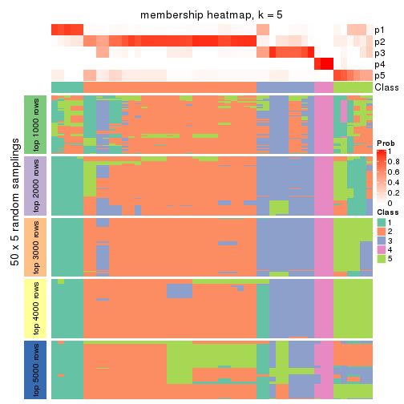
membership_heatmap(res, k = 6)
As soon as we have had the classes for columns, we can look for signatures which are significantly different between classes which can be candidate marks for certain classes. Following are the heatmaps for signatures.
Signature heatmaps where rows are scaled:
get_signatures(res, k = 2)
get_signatures(res, k = 3)
get_signatures(res, k = 4)
get_signatures(res, k = 5)
get_signatures(res, k = 6)
Signature heatmaps where rows are not scaled:
get_signatures(res, k = 2, scale_rows = FALSE)
get_signatures(res, k = 3, scale_rows = FALSE)
get_signatures(res, k = 4, scale_rows = FALSE)
get_signatures(res, k = 5, scale_rows = FALSE)
get_signatures(res, k = 6, scale_rows = FALSE)
Compare the overlap of signatures from different k:
compare_signatures(res)
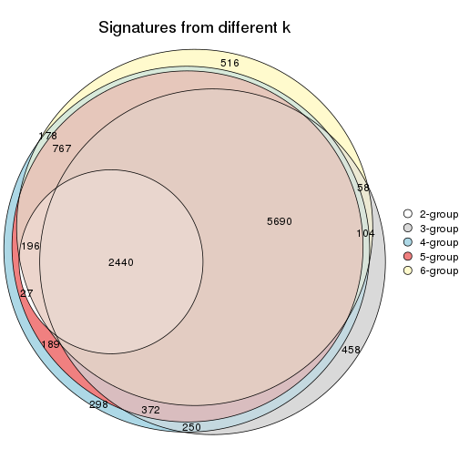
get_signature() returns a data frame invisibly. TO get the list of signatures, the function
call should be assigned to a variable explicitly. In following code, if plot argument is set
to FALSE, no heatmap is plotted while only the differential analysis is performed.
# code only for demonstration
tb = get_signature(res, k = ..., plot = FALSE)
An example of the output of tb is:
#> which_row fdr mean_1 mean_2 scaled_mean_1 scaled_mean_2 km
#> 1 38 0.042760348 8.373488 9.131774 -0.5533452 0.5164555 1
#> 2 40 0.018707592 7.106213 8.469186 -0.6173731 0.5762149 1
#> 3 55 0.019134737 10.221463 11.207825 -0.6159697 0.5749050 1
#> 4 59 0.006059896 5.921854 7.869574 -0.6899429 0.6439467 1
#> 5 60 0.018055526 8.928898 10.211722 -0.6204761 0.5791110 1
#> 6 98 0.009384629 15.714769 14.887706 0.6635654 -0.6193277 2
...
The columns in tb are:
which_row: row indices corresponding to the input matrix.fdr: FDR for the differential test. mean_x: The mean value in group x.scaled_mean_x: The mean value in group x after rows are scaled.km: Row groups if k-means clustering is applied to rows.UMAP plot which shows how samples are separated.
dimension_reduction(res, k = 2, method = "UMAP")
dimension_reduction(res, k = 3, method = "UMAP")
dimension_reduction(res, k = 4, method = "UMAP")
dimension_reduction(res, k = 5, method = "UMAP")
dimension_reduction(res, k = 6, method = "UMAP")
Following heatmap shows how subgroups are split when increasing k:
collect_classes(res)
If matrix rows can be associated to genes, consider to use functional_enrichment(res,
...) to perform function enrichment for the signature genes. See this vignette for more detailed explanations.
The object with results only for a single top-value method and a single partition method can be extracted as:
res = res_list["SD", "kmeans"]
# you can also extract it by
# res = res_list["SD:kmeans"]
A summary of res and all the functions that can be applied to it:
res
#> A 'ConsensusPartition' object with k = 2, 3, 4, 5, 6.
#> On a matrix with 17386 rows and 50 columns.
#> Top rows (1000, 2000, 3000, 4000, 5000) are extracted by 'SD' method.
#> Subgroups are detected by 'kmeans' method.
#> Performed in total 1250 partitions by row resampling.
#> Best k for subgroups seems to be 4.
#>
#> Following methods can be applied to this 'ConsensusPartition' object:
#> [1] "cola_report" "collect_classes" "collect_plots"
#> [4] "collect_stats" "colnames" "compare_signatures"
#> [7] "consensus_heatmap" "dimension_reduction" "functional_enrichment"
#> [10] "get_anno_col" "get_anno" "get_classes"
#> [13] "get_consensus" "get_matrix" "get_membership"
#> [16] "get_param" "get_signatures" "get_stats"
#> [19] "is_best_k" "is_stable_k" "membership_heatmap"
#> [22] "ncol" "nrow" "plot_ecdf"
#> [25] "rownames" "select_partition_number" "show"
#> [28] "suggest_best_k" "test_to_known_factors"
collect_plots() function collects all the plots made from res for all k (number of partitions)
into one single page to provide an easy and fast comparison between different k.
collect_plots(res)
The plots are:
k and the heatmap of
predicted classes for each k.k.k.k.All the plots in panels can be made by individual functions and they are plotted later in this section.
select_partition_number() produces several plots showing different
statistics for choosing “optimized” k. There are following statistics:
k;k, the area increased is defined as \(A_k - A_{k-1}\).The detailed explanations of these statistics can be found in the cola vignette.
Generally speaking, lower PAC score, higher mean silhouette score or higher
concordance corresponds to better partition. Rand index and Jaccard index
measure how similar the current partition is compared to partition with k-1.
If they are too similar, we won't accept k is better than k-1.
select_partition_number(res)
The numeric values for all these statistics can be obtained by get_stats().
get_stats(res)
#> k 1-PAC mean_silhouette concordance area_increased Rand Jaccard
#> 2 2 0.307 0.499 0.804 0.4052 0.726 0.726
#> 3 3 0.419 0.637 0.782 0.4590 0.543 0.414
#> 4 4 0.595 0.712 0.843 0.1744 0.863 0.665
#> 5 5 0.656 0.595 0.794 0.0961 0.870 0.610
#> 6 6 0.657 0.598 0.752 0.0697 0.880 0.546
suggest_best_k() suggests the best \(k\) based on these statistics. The rules are as follows:
suggest_best_k(res)
#> [1] 4
Following shows the table of the partitions (You need to click the show/hide
code output link to see it). The membership matrix (columns with name p*)
is inferred by
clue::cl_consensus()
function with the SE method. Basically the value in the membership matrix
represents the probability to belong to a certain group. The finall class
label for an item is determined with the group with highest probability it
belongs to.
In get_classes() function, the entropy is calculated from the membership
matrix and the silhouette score is calculated from the consensus matrix.
cbind(get_classes(res, k = 2), get_membership(res, k = 2))
#> class entropy silhouette p1 p2
#> SRR2305538 2 1.0000 -0.30877 0.500 0.500
#> SRR2305506 2 0.7815 0.57692 0.232 0.768
#> SRR2305537 2 0.9983 -0.25630 0.476 0.524
#> SRR2305476 2 0.0672 0.71113 0.008 0.992
#> SRR2305508 1 0.0672 0.71879 0.992 0.008
#> SRR2305521 2 0.6148 0.64714 0.152 0.848
#> SRR2305486 2 0.0376 0.71238 0.004 0.996
#> SRR2305503 2 0.0672 0.71290 0.008 0.992
#> SRR2305519 2 0.9427 0.43899 0.360 0.640
#> SRR2305515 2 0.6148 0.64714 0.152 0.848
#> SRR2305528 2 0.2778 0.70614 0.048 0.952
#> SRR2305518 2 0.0376 0.71246 0.004 0.996
#> SRR2305527 2 0.0376 0.71246 0.004 0.996
#> SRR2305498 2 0.9358 0.44903 0.352 0.648
#> SRR2305488 2 0.9580 -0.00369 0.380 0.620
#> SRR2305512 1 0.6623 0.71726 0.828 0.172
#> SRR2305474 2 0.9129 0.47358 0.328 0.672
#> SRR2305495 2 0.0376 0.71304 0.004 0.996
#> SRR2305536 2 0.0376 0.71238 0.004 0.996
#> SRR2305525 2 0.0672 0.71290 0.008 0.992
#> SRR2305494 2 0.9988 0.25421 0.480 0.520
#> SRR2305532 2 0.0672 0.71113 0.008 0.992
#> SRR2305500 2 0.3733 0.69836 0.072 0.928
#> SRR2305509 2 0.2778 0.70614 0.048 0.952
#> SRR2305501 2 0.9896 0.31608 0.440 0.560
#> SRR2305524 2 0.3733 0.69765 0.072 0.928
#> SRR2305491 2 0.9427 0.43899 0.360 0.640
#> SRR2305489 2 0.9970 -0.23876 0.468 0.532
#> SRR2305516 2 0.0672 0.71113 0.008 0.992
#> SRR2305507 2 0.2778 0.70614 0.048 0.952
#> SRR2305497 2 0.9427 0.43899 0.360 0.640
#> SRR2305482 1 0.9996 0.22437 0.512 0.488
#> SRR2305485 1 0.1633 0.71797 0.976 0.024
#> SRR2305472 2 0.9983 -0.25630 0.476 0.524
#> SRR2305513 1 0.0672 0.71879 0.992 0.008
#> SRR2305540 2 0.9977 0.25731 0.472 0.528
#> SRR2305522 2 0.0376 0.71246 0.004 0.996
#> SRR2305520 2 0.2948 0.70523 0.052 0.948
#> SRR2305533 1 0.7453 0.69739 0.788 0.212
#> SRR2305534 2 0.9661 -0.04180 0.392 0.608
#> SRR2305517 2 0.0672 0.71113 0.008 0.992
#> SRR2305504 1 0.8813 0.55549 0.700 0.300
#> SRR2305511 2 0.0672 0.71113 0.008 0.992
#> SRR2305492 2 0.9881 0.32680 0.436 0.564
#> SRR2305514 2 0.0000 0.71281 0.000 1.000
#> SRR2305531 2 0.0672 0.71113 0.008 0.992
#> SRR2305535 2 1.0000 -0.30877 0.500 0.500
#> SRR2305477 2 0.0672 0.71113 0.008 0.992
#> SRR2305480 1 0.8016 0.65281 0.756 0.244
#> SRR2305529 2 0.9129 0.47358 0.328 0.672
cbind(get_classes(res, k = 3), get_membership(res, k = 3))
#> class entropy silhouette p1 p2 p3
#> SRR2305538 1 0.5254 0.8547 0.736 0.264 0.000
#> SRR2305506 2 0.5455 0.6254 0.204 0.776 0.020
#> SRR2305537 1 0.6053 0.8501 0.720 0.260 0.020
#> SRR2305476 2 0.0237 0.8058 0.000 0.996 0.004
#> SRR2305508 3 0.5785 0.4895 0.300 0.004 0.696
#> SRR2305521 2 0.5404 0.6179 0.004 0.740 0.256
#> SRR2305486 2 0.0424 0.8087 0.000 0.992 0.008
#> SRR2305503 2 0.0747 0.8078 0.000 0.984 0.016
#> SRR2305519 3 0.5016 0.6352 0.000 0.240 0.760
#> SRR2305515 2 0.5443 0.6163 0.004 0.736 0.260
#> SRR2305528 2 0.5397 0.5856 0.000 0.720 0.280
#> SRR2305518 2 0.1163 0.7942 0.000 0.972 0.028
#> SRR2305527 2 0.1163 0.7942 0.000 0.972 0.028
#> SRR2305498 3 0.5785 0.4924 0.000 0.332 0.668
#> SRR2305488 1 0.7382 0.6121 0.512 0.456 0.032
#> SRR2305512 1 0.6379 0.2093 0.624 0.008 0.368
#> SRR2305474 3 0.5905 0.4595 0.000 0.352 0.648
#> SRR2305495 2 0.0237 0.8080 0.000 0.996 0.004
#> SRR2305536 2 0.0424 0.8087 0.000 0.992 0.008
#> SRR2305525 2 0.0424 0.8087 0.000 0.992 0.008
#> SRR2305494 3 0.8746 0.6202 0.184 0.228 0.588
#> SRR2305532 2 0.1031 0.7955 0.000 0.976 0.024
#> SRR2305500 2 0.6168 0.3026 0.000 0.588 0.412
#> SRR2305509 2 0.5178 0.6120 0.000 0.744 0.256
#> SRR2305501 2 0.9683 -0.3568 0.216 0.416 0.368
#> SRR2305524 2 0.6309 0.0545 0.000 0.500 0.500
#> SRR2305491 3 0.4235 0.6687 0.000 0.176 0.824
#> SRR2305489 1 0.5465 0.8467 0.712 0.288 0.000
#> SRR2305516 2 0.0000 0.8069 0.000 1.000 0.000
#> SRR2305507 2 0.5254 0.6123 0.000 0.736 0.264
#> SRR2305497 3 0.4842 0.6475 0.000 0.224 0.776
#> SRR2305482 1 0.5138 0.8507 0.748 0.252 0.000
#> SRR2305485 3 0.5363 0.4960 0.276 0.000 0.724
#> SRR2305472 1 0.5216 0.8533 0.740 0.260 0.000
#> SRR2305513 3 0.6111 0.3892 0.396 0.000 0.604
#> SRR2305540 3 0.9793 0.5103 0.280 0.284 0.436
#> SRR2305522 2 0.1163 0.7942 0.000 0.972 0.028
#> SRR2305520 2 0.5706 0.5532 0.000 0.680 0.320
#> SRR2305533 3 0.6865 0.2616 0.384 0.020 0.596
#> SRR2305534 1 0.6651 0.8159 0.656 0.320 0.024
#> SRR2305517 2 0.0000 0.8069 0.000 1.000 0.000
#> SRR2305504 1 0.3921 0.6201 0.884 0.080 0.036
#> SRR2305511 2 0.0000 0.8069 0.000 1.000 0.000
#> SRR2305492 3 0.1529 0.6343 0.000 0.040 0.960
#> SRR2305514 2 0.0424 0.8087 0.000 0.992 0.008
#> SRR2305531 2 0.0000 0.8069 0.000 1.000 0.000
#> SRR2305535 1 0.5254 0.8547 0.736 0.264 0.000
#> SRR2305477 2 0.0000 0.8069 0.000 1.000 0.000
#> SRR2305480 3 0.6539 0.4453 0.288 0.028 0.684
#> SRR2305529 3 0.5058 0.6182 0.000 0.244 0.756
cbind(get_classes(res, k = 4), get_membership(res, k = 4))
#> class entropy silhouette p1 p2 p3 p4
#> SRR2305538 1 0.2216 0.745 0.908 0.092 0.000 0.000
#> SRR2305506 2 0.6390 0.668 0.088 0.716 0.052 0.144
#> SRR2305537 1 0.4287 0.685 0.836 0.036 0.024 0.104
#> SRR2305476 2 0.1593 0.870 0.016 0.956 0.024 0.004
#> SRR2305508 4 0.3052 0.728 0.004 0.000 0.136 0.860
#> SRR2305521 2 0.4772 0.791 0.092 0.816 0.064 0.028
#> SRR2305486 2 0.1004 0.871 0.004 0.972 0.024 0.000
#> SRR2305503 2 0.2522 0.849 0.000 0.908 0.076 0.016
#> SRR2305519 3 0.2499 0.778 0.004 0.032 0.920 0.044
#> SRR2305515 2 0.5739 0.750 0.092 0.756 0.120 0.032
#> SRR2305528 3 0.5090 0.435 0.004 0.312 0.672 0.012
#> SRR2305518 2 0.4483 0.787 0.000 0.808 0.104 0.088
#> SRR2305527 2 0.4898 0.757 0.000 0.780 0.104 0.116
#> SRR2305498 3 0.1302 0.787 0.000 0.044 0.956 0.000
#> SRR2305488 1 0.8198 0.363 0.448 0.384 0.060 0.108
#> SRR2305512 1 0.5055 0.271 0.624 0.000 0.368 0.008
#> SRR2305474 3 0.1302 0.787 0.000 0.044 0.956 0.000
#> SRR2305495 2 0.0592 0.872 0.000 0.984 0.016 0.000
#> SRR2305536 2 0.1109 0.873 0.004 0.968 0.028 0.000
#> SRR2305525 2 0.0921 0.871 0.000 0.972 0.028 0.000
#> SRR2305494 3 0.5292 0.594 0.076 0.024 0.780 0.120
#> SRR2305532 2 0.1936 0.851 0.000 0.940 0.028 0.032
#> SRR2305500 3 0.2441 0.772 0.004 0.068 0.916 0.012
#> SRR2305509 2 0.1743 0.864 0.004 0.940 0.056 0.000
#> SRR2305501 2 0.8745 0.136 0.088 0.468 0.296 0.148
#> SRR2305524 3 0.4979 0.669 0.020 0.064 0.796 0.120
#> SRR2305491 3 0.3134 0.757 0.004 0.024 0.884 0.088
#> SRR2305489 1 0.2589 0.743 0.884 0.116 0.000 0.000
#> SRR2305516 2 0.0000 0.873 0.000 1.000 0.000 0.000
#> SRR2305507 2 0.4395 0.738 0.004 0.776 0.204 0.016
#> SRR2305497 3 0.3128 0.763 0.004 0.032 0.888 0.076
#> SRR2305482 1 0.0336 0.689 0.992 0.008 0.000 0.000
#> SRR2305485 4 0.3052 0.728 0.004 0.000 0.136 0.860
#> SRR2305472 1 0.2530 0.743 0.888 0.112 0.000 0.000
#> SRR2305513 4 0.3570 0.664 0.092 0.000 0.048 0.860
#> SRR2305540 4 0.9010 0.107 0.088 0.180 0.308 0.424
#> SRR2305522 2 0.4483 0.787 0.000 0.808 0.104 0.088
#> SRR2305520 3 0.4556 0.674 0.004 0.068 0.808 0.120
#> SRR2305533 3 0.6942 0.450 0.224 0.024 0.636 0.116
#> SRR2305534 1 0.6756 0.672 0.688 0.144 0.048 0.120
#> SRR2305517 2 0.0000 0.873 0.000 1.000 0.000 0.000
#> SRR2305504 1 0.6530 0.496 0.656 0.028 0.068 0.248
#> SRR2305511 2 0.0000 0.873 0.000 1.000 0.000 0.000
#> SRR2305492 3 0.2922 0.744 0.004 0.008 0.884 0.104
#> SRR2305514 2 0.0817 0.870 0.000 0.976 0.024 0.000
#> SRR2305531 2 0.0000 0.873 0.000 1.000 0.000 0.000
#> SRR2305535 1 0.2216 0.745 0.908 0.092 0.000 0.000
#> SRR2305477 2 0.1109 0.870 0.000 0.968 0.028 0.004
#> SRR2305480 3 0.4958 0.672 0.124 0.008 0.788 0.080
#> SRR2305529 3 0.1640 0.782 0.020 0.012 0.956 0.012
cbind(get_classes(res, k = 5), get_membership(res, k = 5))
#> class entropy silhouette p1 p2 p3 p4 p5
#> SRR2305538 1 0.0451 0.75111 0.988 0.004 0.000 0.000 0.008
#> SRR2305506 2 0.6289 0.20287 0.008 0.524 0.012 0.088 0.368
#> SRR2305537 1 0.5269 0.49474 0.608 0.344 0.000 0.020 0.028
#> SRR2305476 5 0.3961 0.67944 0.044 0.160 0.004 0.000 0.792
#> SRR2305508 4 0.0794 0.96308 0.000 0.000 0.028 0.972 0.000
#> SRR2305521 2 0.4836 0.07576 0.000 0.568 0.012 0.008 0.412
#> SRR2305486 5 0.1717 0.78150 0.004 0.052 0.008 0.000 0.936
#> SRR2305503 5 0.4674 0.56187 0.000 0.292 0.024 0.008 0.676
#> SRR2305519 3 0.1787 0.85082 0.000 0.044 0.936 0.016 0.004
#> SRR2305515 2 0.5013 0.16105 0.000 0.612 0.028 0.008 0.352
#> SRR2305528 3 0.6463 0.29230 0.004 0.228 0.564 0.008 0.196
#> SRR2305518 5 0.4663 0.42844 0.000 0.376 0.020 0.000 0.604
#> SRR2305527 5 0.4798 0.28869 0.000 0.440 0.020 0.000 0.540
#> SRR2305498 3 0.2193 0.82394 0.000 0.092 0.900 0.008 0.000
#> SRR2305488 2 0.7611 0.10663 0.208 0.388 0.032 0.012 0.360
#> SRR2305512 1 0.4789 0.34375 0.644 0.028 0.324 0.004 0.000
#> SRR2305474 3 0.1571 0.84947 0.000 0.060 0.936 0.000 0.004
#> SRR2305495 5 0.0693 0.79058 0.000 0.012 0.008 0.000 0.980
#> SRR2305536 5 0.2464 0.76207 0.004 0.092 0.012 0.000 0.892
#> SRR2305525 5 0.1251 0.78967 0.000 0.036 0.008 0.000 0.956
#> SRR2305494 3 0.5164 0.56435 0.000 0.232 0.672 0.096 0.000
#> SRR2305532 5 0.2970 0.71044 0.000 0.168 0.004 0.000 0.828
#> SRR2305500 3 0.2295 0.82904 0.004 0.088 0.900 0.000 0.008
#> SRR2305509 5 0.3217 0.74215 0.004 0.120 0.016 0.008 0.852
#> SRR2305501 2 0.6362 0.32802 0.008 0.580 0.024 0.092 0.296
#> SRR2305524 2 0.5972 0.07217 0.056 0.512 0.412 0.012 0.008
#> SRR2305491 3 0.0932 0.84310 0.000 0.004 0.972 0.020 0.004
#> SRR2305489 1 0.1845 0.74228 0.928 0.016 0.000 0.000 0.056
#> SRR2305516 5 0.0609 0.78886 0.000 0.020 0.000 0.000 0.980
#> SRR2305507 5 0.5902 0.42048 0.004 0.324 0.084 0.008 0.580
#> SRR2305497 3 0.1885 0.84980 0.000 0.032 0.936 0.020 0.012
#> SRR2305482 1 0.0794 0.74622 0.972 0.028 0.000 0.000 0.000
#> SRR2305485 4 0.1484 0.95452 0.000 0.008 0.048 0.944 0.000
#> SRR2305472 1 0.1818 0.74777 0.932 0.024 0.000 0.000 0.044
#> SRR2305513 4 0.0880 0.94582 0.032 0.000 0.000 0.968 0.000
#> SRR2305540 2 0.3777 0.30685 0.008 0.824 0.040 0.124 0.004
#> SRR2305522 5 0.4717 0.41684 0.000 0.396 0.020 0.000 0.584
#> SRR2305520 2 0.4637 0.00657 0.004 0.568 0.420 0.000 0.008
#> SRR2305533 2 0.7045 0.05131 0.204 0.396 0.384 0.012 0.004
#> SRR2305534 1 0.6899 0.31757 0.480 0.364 0.020 0.012 0.124
#> SRR2305517 5 0.0510 0.78975 0.000 0.016 0.000 0.000 0.984
#> SRR2305504 2 0.5549 0.19770 0.152 0.716 0.024 0.096 0.012
#> SRR2305511 5 0.0404 0.79054 0.000 0.012 0.000 0.000 0.988
#> SRR2305492 3 0.1026 0.84318 0.000 0.004 0.968 0.024 0.004
#> SRR2305514 5 0.0898 0.78869 0.000 0.020 0.008 0.000 0.972
#> SRR2305531 5 0.0404 0.79054 0.000 0.012 0.000 0.000 0.988
#> SRR2305535 1 0.0290 0.75196 0.992 0.000 0.000 0.000 0.008
#> SRR2305477 5 0.1485 0.77949 0.000 0.032 0.020 0.000 0.948
#> SRR2305480 3 0.2751 0.82995 0.044 0.032 0.900 0.020 0.004
#> SRR2305529 3 0.2597 0.80630 0.040 0.060 0.896 0.000 0.004
cbind(get_classes(res, k = 6), get_membership(res, k = 6))
#> class entropy silhouette p1 p2 p3 p4 p5 p6
#> SRR2305538 1 0.1957 0.7238 0.888 0.000 0.000 0.000 0.000 0.112
#> SRR2305506 2 0.4919 0.3197 0.040 0.760 0.004 0.036 0.092 0.068
#> SRR2305537 1 0.4642 -0.0785 0.508 0.040 0.000 0.000 0.000 0.452
#> SRR2305476 5 0.5455 0.4342 0.004 0.168 0.000 0.004 0.608 0.216
#> SRR2305508 4 0.0363 0.9760 0.000 0.000 0.012 0.988 0.000 0.000
#> SRR2305521 2 0.2376 0.4150 0.000 0.884 0.012 0.000 0.096 0.008
#> SRR2305486 5 0.1636 0.8057 0.000 0.036 0.000 0.004 0.936 0.024
#> SRR2305503 2 0.5237 0.4363 0.000 0.600 0.000 0.004 0.276 0.120
#> SRR2305519 3 0.0713 0.8452 0.000 0.028 0.972 0.000 0.000 0.000
#> SRR2305515 2 0.2216 0.4338 0.000 0.908 0.016 0.000 0.052 0.024
#> SRR2305528 2 0.6922 0.0951 0.000 0.388 0.384 0.004 0.140 0.084
#> SRR2305518 2 0.6118 0.3616 0.000 0.360 0.000 0.000 0.336 0.304
#> SRR2305527 2 0.6124 0.3436 0.000 0.356 0.000 0.000 0.316 0.328
#> SRR2305498 3 0.2302 0.8021 0.000 0.120 0.872 0.000 0.000 0.008
#> SRR2305488 6 0.5007 0.3774 0.048 0.032 0.004 0.000 0.252 0.664
#> SRR2305512 1 0.6053 0.3728 0.576 0.044 0.172 0.000 0.000 0.208
#> SRR2305474 3 0.1418 0.8445 0.000 0.032 0.944 0.000 0.000 0.024
#> SRR2305495 5 0.0260 0.8290 0.000 0.000 0.000 0.000 0.992 0.008
#> SRR2305536 5 0.3938 0.6845 0.000 0.136 0.004 0.008 0.784 0.068
#> SRR2305525 5 0.1476 0.8184 0.000 0.028 0.008 0.004 0.948 0.012
#> SRR2305494 3 0.5700 0.4982 0.000 0.284 0.588 0.068 0.000 0.060
#> SRR2305532 5 0.5494 0.2790 0.004 0.204 0.000 0.004 0.604 0.184
#> SRR2305500 3 0.3563 0.7794 0.000 0.088 0.808 0.000 0.004 0.100
#> SRR2305509 5 0.4598 0.5274 0.000 0.240 0.020 0.004 0.696 0.040
#> SRR2305501 2 0.6188 0.1219 0.008 0.620 0.004 0.068 0.144 0.156
#> SRR2305524 6 0.3528 0.5174 0.032 0.020 0.124 0.000 0.004 0.820
#> SRR2305491 3 0.0858 0.8429 0.000 0.000 0.968 0.004 0.000 0.028
#> SRR2305489 1 0.2436 0.6952 0.880 0.000 0.000 0.000 0.088 0.032
#> SRR2305516 5 0.1749 0.8219 0.004 0.016 0.000 0.004 0.932 0.044
#> SRR2305507 2 0.5881 0.4922 0.000 0.608 0.056 0.000 0.208 0.128
#> SRR2305497 3 0.0146 0.8462 0.000 0.004 0.996 0.000 0.000 0.000
#> SRR2305482 1 0.1498 0.7217 0.940 0.032 0.000 0.000 0.000 0.028
#> SRR2305485 4 0.1307 0.9571 0.000 0.008 0.008 0.952 0.000 0.032
#> SRR2305472 1 0.1408 0.7311 0.944 0.000 0.000 0.000 0.036 0.020
#> SRR2305513 4 0.0405 0.9752 0.004 0.000 0.008 0.988 0.000 0.000
#> SRR2305540 6 0.5171 0.3972 0.008 0.400 0.000 0.068 0.000 0.524
#> SRR2305522 2 0.6228 0.3741 0.000 0.376 0.000 0.004 0.312 0.308
#> SRR2305520 2 0.5713 0.1512 0.000 0.448 0.164 0.000 0.000 0.388
#> SRR2305533 6 0.3706 0.4975 0.096 0.004 0.104 0.000 0.000 0.796
#> SRR2305534 6 0.5850 0.2881 0.288 0.028 0.000 0.000 0.128 0.556
#> SRR2305517 5 0.0922 0.8283 0.004 0.004 0.000 0.000 0.968 0.024
#> SRR2305504 6 0.5233 0.4282 0.040 0.384 0.000 0.032 0.000 0.544
#> SRR2305511 5 0.1768 0.8221 0.004 0.020 0.000 0.004 0.932 0.040
#> SRR2305492 3 0.0858 0.8429 0.000 0.000 0.968 0.004 0.000 0.028
#> SRR2305514 5 0.0551 0.8279 0.000 0.004 0.000 0.004 0.984 0.008
#> SRR2305531 5 0.1837 0.8219 0.004 0.020 0.000 0.004 0.928 0.044
#> SRR2305535 1 0.1327 0.7372 0.936 0.000 0.000 0.000 0.000 0.064
#> SRR2305477 5 0.1053 0.8186 0.004 0.012 0.000 0.000 0.964 0.020
#> SRR2305480 3 0.3808 0.7829 0.008 0.052 0.800 0.004 0.004 0.132
#> SRR2305529 3 0.4020 0.6590 0.032 0.000 0.692 0.000 0.000 0.276
Heatmaps for the consensus matrix. It visualizes the probability of two samples to be in a same group.
consensus_heatmap(res, k = 2)
consensus_heatmap(res, k = 3)
consensus_heatmap(res, k = 4)
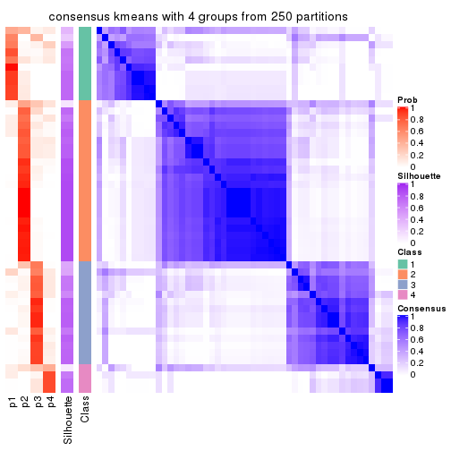
consensus_heatmap(res, k = 5)
consensus_heatmap(res, k = 6)
Heatmaps for the membership of samples in all partitions to see how consistent they are:
membership_heatmap(res, k = 2)
membership_heatmap(res, k = 3)
membership_heatmap(res, k = 4)
membership_heatmap(res, k = 5)
membership_heatmap(res, k = 6)
As soon as we have had the classes for columns, we can look for signatures which are significantly different between classes which can be candidate marks for certain classes. Following are the heatmaps for signatures.
Signature heatmaps where rows are scaled:
get_signatures(res, k = 2)
get_signatures(res, k = 3)
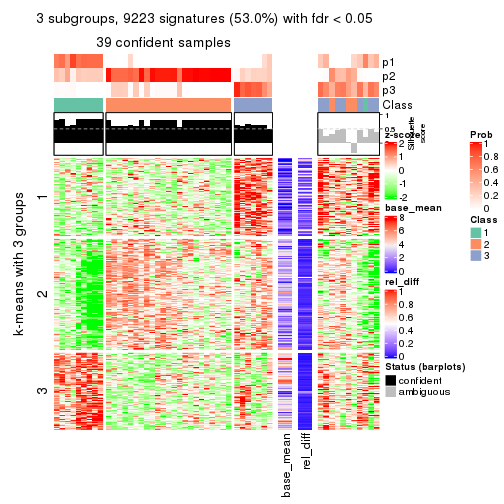
get_signatures(res, k = 4)
get_signatures(res, k = 5)
get_signatures(res, k = 6)
Signature heatmaps where rows are not scaled:
get_signatures(res, k = 2, scale_rows = FALSE)
get_signatures(res, k = 3, scale_rows = FALSE)
get_signatures(res, k = 4, scale_rows = FALSE)
get_signatures(res, k = 5, scale_rows = FALSE)
get_signatures(res, k = 6, scale_rows = FALSE)
Compare the overlap of signatures from different k:
compare_signatures(res)
get_signature() returns a data frame invisibly. TO get the list of signatures, the function
call should be assigned to a variable explicitly. In following code, if plot argument is set
to FALSE, no heatmap is plotted while only the differential analysis is performed.
# code only for demonstration
tb = get_signature(res, k = ..., plot = FALSE)
An example of the output of tb is:
#> which_row fdr mean_1 mean_2 scaled_mean_1 scaled_mean_2 km
#> 1 38 0.042760348 8.373488 9.131774 -0.5533452 0.5164555 1
#> 2 40 0.018707592 7.106213 8.469186 -0.6173731 0.5762149 1
#> 3 55 0.019134737 10.221463 11.207825 -0.6159697 0.5749050 1
#> 4 59 0.006059896 5.921854 7.869574 -0.6899429 0.6439467 1
#> 5 60 0.018055526 8.928898 10.211722 -0.6204761 0.5791110 1
#> 6 98 0.009384629 15.714769 14.887706 0.6635654 -0.6193277 2
...
The columns in tb are:
which_row: row indices corresponding to the input matrix.fdr: FDR for the differential test. mean_x: The mean value in group x.scaled_mean_x: The mean value in group x after rows are scaled.km: Row groups if k-means clustering is applied to rows.UMAP plot which shows how samples are separated.
dimension_reduction(res, k = 2, method = "UMAP")
dimension_reduction(res, k = 3, method = "UMAP")
dimension_reduction(res, k = 4, method = "UMAP")
dimension_reduction(res, k = 5, method = "UMAP")
dimension_reduction(res, k = 6, method = "UMAP")
Following heatmap shows how subgroups are split when increasing k:
collect_classes(res)
If matrix rows can be associated to genes, consider to use functional_enrichment(res,
...) to perform function enrichment for the signature genes. See this vignette for more detailed explanations.
The object with results only for a single top-value method and a single partition method can be extracted as:
res = res_list["SD", "skmeans"]
# you can also extract it by
# res = res_list["SD:skmeans"]
A summary of res and all the functions that can be applied to it:
res
#> A 'ConsensusPartition' object with k = 2, 3, 4, 5, 6.
#> On a matrix with 17386 rows and 50 columns.
#> Top rows (1000, 2000, 3000, 4000, 5000) are extracted by 'SD' method.
#> Subgroups are detected by 'skmeans' method.
#> Performed in total 1250 partitions by row resampling.
#> Best k for subgroups seems to be 3.
#>
#> Following methods can be applied to this 'ConsensusPartition' object:
#> [1] "cola_report" "collect_classes" "collect_plots"
#> [4] "collect_stats" "colnames" "compare_signatures"
#> [7] "consensus_heatmap" "dimension_reduction" "functional_enrichment"
#> [10] "get_anno_col" "get_anno" "get_classes"
#> [13] "get_consensus" "get_matrix" "get_membership"
#> [16] "get_param" "get_signatures" "get_stats"
#> [19] "is_best_k" "is_stable_k" "membership_heatmap"
#> [22] "ncol" "nrow" "plot_ecdf"
#> [25] "rownames" "select_partition_number" "show"
#> [28] "suggest_best_k" "test_to_known_factors"
collect_plots() function collects all the plots made from res for all k (number of partitions)
into one single page to provide an easy and fast comparison between different k.
collect_plots(res)
The plots are:
k and the heatmap of
predicted classes for each k.k.k.k.All the plots in panels can be made by individual functions and they are plotted later in this section.
select_partition_number() produces several plots showing different
statistics for choosing “optimized” k. There are following statistics:
k;k, the area increased is defined as \(A_k - A_{k-1}\).The detailed explanations of these statistics can be found in the cola vignette.
Generally speaking, lower PAC score, higher mean silhouette score or higher
concordance corresponds to better partition. Rand index and Jaccard index
measure how similar the current partition is compared to partition with k-1.
If they are too similar, we won't accept k is better than k-1.
select_partition_number(res)
The numeric values for all these statistics can be obtained by get_stats().
get_stats(res)
#> k 1-PAC mean_silhouette concordance area_increased Rand Jaccard
#> 2 2 0.436 0.708 0.848 0.506 0.493 0.493
#> 3 3 0.624 0.800 0.889 0.322 0.731 0.507
#> 4 4 0.704 0.629 0.794 0.125 0.878 0.662
#> 5 5 0.729 0.676 0.819 0.068 0.906 0.662
#> 6 6 0.693 0.595 0.769 0.037 0.949 0.748
suggest_best_k() suggests the best \(k\) based on these statistics. The rules are as follows:
suggest_best_k(res)
#> [1] 3
Following shows the table of the partitions (You need to click the show/hide
code output link to see it). The membership matrix (columns with name p*)
is inferred by
clue::cl_consensus()
function with the SE method. Basically the value in the membership matrix
represents the probability to belong to a certain group. The finall class
label for an item is determined with the group with highest probability it
belongs to.
In get_classes() function, the entropy is calculated from the membership
matrix and the silhouette score is calculated from the consensus matrix.
cbind(get_classes(res, k = 2), get_membership(res, k = 2))
#> class entropy silhouette p1 p2
#> SRR2305538 1 0.855 0.671 0.720 0.280
#> SRR2305506 2 0.722 0.709 0.200 0.800
#> SRR2305537 1 0.978 0.575 0.588 0.412
#> SRR2305476 1 0.981 0.565 0.580 0.420
#> SRR2305508 1 0.000 0.769 1.000 0.000
#> SRR2305521 2 0.855 0.669 0.280 0.720
#> SRR2305486 2 0.000 0.812 0.000 1.000
#> SRR2305503 2 0.000 0.812 0.000 1.000
#> SRR2305519 2 0.978 0.537 0.412 0.588
#> SRR2305515 2 0.855 0.669 0.280 0.720
#> SRR2305528 2 0.416 0.790 0.084 0.916
#> SRR2305518 2 0.000 0.812 0.000 1.000
#> SRR2305527 2 0.000 0.812 0.000 1.000
#> SRR2305498 2 0.978 0.537 0.412 0.588
#> SRR2305488 1 0.973 0.584 0.596 0.404
#> SRR2305512 1 0.000 0.769 1.000 0.000
#> SRR2305474 2 0.978 0.537 0.412 0.588
#> SRR2305495 2 0.000 0.812 0.000 1.000
#> SRR2305536 2 0.000 0.812 0.000 1.000
#> SRR2305525 2 0.000 0.812 0.000 1.000
#> SRR2305494 2 0.978 0.537 0.412 0.588
#> SRR2305532 2 0.000 0.812 0.000 1.000
#> SRR2305500 2 0.775 0.696 0.228 0.772
#> SRR2305509 2 0.402 0.791 0.080 0.920
#> SRR2305501 1 0.808 0.410 0.752 0.248
#> SRR2305524 1 0.000 0.769 1.000 0.000
#> SRR2305491 1 0.000 0.769 1.000 0.000
#> SRR2305489 1 0.973 0.584 0.596 0.404
#> SRR2305516 2 0.000 0.812 0.000 1.000
#> SRR2305507 2 0.416 0.790 0.084 0.916
#> SRR2305497 2 0.978 0.537 0.412 0.588
#> SRR2305482 1 0.416 0.754 0.916 0.084
#> SRR2305485 1 0.000 0.769 1.000 0.000
#> SRR2305472 1 0.973 0.584 0.596 0.404
#> SRR2305513 1 0.000 0.769 1.000 0.000
#> SRR2305540 1 0.295 0.732 0.948 0.052
#> SRR2305522 2 0.000 0.812 0.000 1.000
#> SRR2305520 2 0.958 0.572 0.380 0.620
#> SRR2305533 1 0.000 0.769 1.000 0.000
#> SRR2305534 1 0.978 0.575 0.588 0.412
#> SRR2305517 2 0.000 0.812 0.000 1.000
#> SRR2305504 1 0.402 0.755 0.920 0.080
#> SRR2305511 2 0.000 0.812 0.000 1.000
#> SRR2305492 1 0.204 0.750 0.968 0.032
#> SRR2305514 2 0.000 0.812 0.000 1.000
#> SRR2305531 2 0.000 0.812 0.000 1.000
#> SRR2305535 1 0.855 0.671 0.720 0.280
#> SRR2305477 1 0.988 0.540 0.564 0.436
#> SRR2305480 1 0.000 0.769 1.000 0.000
#> SRR2305529 1 0.000 0.769 1.000 0.000
cbind(get_classes(res, k = 3), get_membership(res, k = 3))
#> class entropy silhouette p1 p2 p3
#> SRR2305538 1 0.4555 0.841 0.800 0.200 0.000
#> SRR2305506 2 0.4555 0.771 0.200 0.800 0.000
#> SRR2305537 1 0.1031 0.765 0.976 0.024 0.000
#> SRR2305476 1 0.4605 0.839 0.796 0.204 0.000
#> SRR2305508 3 0.4605 0.780 0.204 0.000 0.796
#> SRR2305521 2 0.4555 0.771 0.200 0.800 0.000
#> SRR2305486 2 0.0237 0.918 0.000 0.996 0.004
#> SRR2305503 2 0.0000 0.919 0.000 1.000 0.000
#> SRR2305519 3 0.0000 0.869 0.000 0.000 1.000
#> SRR2305515 2 0.4555 0.771 0.200 0.800 0.000
#> SRR2305528 2 0.5016 0.725 0.000 0.760 0.240
#> SRR2305518 2 0.0000 0.919 0.000 1.000 0.000
#> SRR2305527 2 0.0000 0.919 0.000 1.000 0.000
#> SRR2305498 3 0.0000 0.869 0.000 0.000 1.000
#> SRR2305488 1 0.4555 0.841 0.800 0.200 0.000
#> SRR2305512 1 0.6079 0.410 0.612 0.000 0.388
#> SRR2305474 3 0.0000 0.869 0.000 0.000 1.000
#> SRR2305495 2 0.0475 0.917 0.004 0.992 0.004
#> SRR2305536 2 0.0237 0.918 0.000 0.996 0.004
#> SRR2305525 2 0.0237 0.918 0.000 0.996 0.004
#> SRR2305494 3 0.4555 0.781 0.200 0.000 0.800
#> SRR2305532 2 0.0000 0.919 0.000 1.000 0.000
#> SRR2305500 3 0.0000 0.869 0.000 0.000 1.000
#> SRR2305509 2 0.4121 0.797 0.000 0.832 0.168
#> SRR2305501 3 0.5660 0.765 0.200 0.028 0.772
#> SRR2305524 3 0.2959 0.795 0.100 0.000 0.900
#> SRR2305491 3 0.0000 0.869 0.000 0.000 1.000
#> SRR2305489 1 0.4555 0.841 0.800 0.200 0.000
#> SRR2305516 2 0.0000 0.919 0.000 1.000 0.000
#> SRR2305507 2 0.4555 0.763 0.000 0.800 0.200
#> SRR2305497 3 0.0000 0.869 0.000 0.000 1.000
#> SRR2305482 1 0.0000 0.747 1.000 0.000 0.000
#> SRR2305485 3 0.4605 0.780 0.204 0.000 0.796
#> SRR2305472 1 0.4555 0.841 0.800 0.200 0.000
#> SRR2305513 1 0.5706 0.270 0.680 0.000 0.320
#> SRR2305540 3 0.5785 0.686 0.300 0.004 0.696
#> SRR2305522 2 0.0000 0.919 0.000 1.000 0.000
#> SRR2305520 3 0.0592 0.863 0.000 0.012 0.988
#> SRR2305533 1 0.4121 0.677 0.832 0.000 0.168
#> SRR2305534 1 0.4555 0.841 0.800 0.200 0.000
#> SRR2305517 2 0.0000 0.919 0.000 1.000 0.000
#> SRR2305504 1 0.0000 0.747 1.000 0.000 0.000
#> SRR2305511 2 0.0000 0.919 0.000 1.000 0.000
#> SRR2305492 3 0.0000 0.869 0.000 0.000 1.000
#> SRR2305514 2 0.0237 0.918 0.000 0.996 0.004
#> SRR2305531 2 0.0000 0.919 0.000 1.000 0.000
#> SRR2305535 1 0.4555 0.841 0.800 0.200 0.000
#> SRR2305477 1 0.5443 0.779 0.736 0.260 0.004
#> SRR2305480 3 0.6305 -0.162 0.484 0.000 0.516
#> SRR2305529 3 0.0000 0.869 0.000 0.000 1.000
cbind(get_classes(res, k = 4), get_membership(res, k = 4))
#> class entropy silhouette p1 p2 p3 p4
#> SRR2305538 1 0.0000 0.88266 1.000 0.000 0.000 0.000
#> SRR2305506 2 0.4981 0.00255 0.000 0.536 0.000 0.464
#> SRR2305537 1 0.1211 0.87702 0.960 0.000 0.000 0.040
#> SRR2305476 1 0.4638 0.67663 0.776 0.044 0.000 0.180
#> SRR2305508 4 0.4843 0.65274 0.000 0.000 0.396 0.604
#> SRR2305521 2 0.4961 0.08794 0.000 0.552 0.000 0.448
#> SRR2305486 2 0.4804 0.73064 0.000 0.616 0.000 0.384
#> SRR2305503 2 0.0000 0.62132 0.000 1.000 0.000 0.000
#> SRR2305519 3 0.0336 0.77694 0.000 0.008 0.992 0.000
#> SRR2305515 2 0.4790 0.02154 0.000 0.620 0.000 0.380
#> SRR2305528 3 0.4889 0.50000 0.000 0.360 0.636 0.004
#> SRR2305518 2 0.0336 0.61862 0.000 0.992 0.000 0.008
#> SRR2305527 2 0.0336 0.61862 0.000 0.992 0.000 0.008
#> SRR2305498 3 0.0921 0.77164 0.000 0.028 0.972 0.000
#> SRR2305488 1 0.0817 0.88743 0.976 0.024 0.000 0.000
#> SRR2305512 1 0.3768 0.70171 0.808 0.000 0.184 0.008
#> SRR2305474 3 0.0188 0.77695 0.000 0.004 0.996 0.000
#> SRR2305495 2 0.4991 0.72889 0.004 0.608 0.000 0.388
#> SRR2305536 2 0.4790 0.73173 0.000 0.620 0.000 0.380
#> SRR2305525 2 0.4730 0.73123 0.000 0.636 0.000 0.364
#> SRR2305494 4 0.5366 0.59004 0.000 0.012 0.440 0.548
#> SRR2305532 2 0.2469 0.65959 0.000 0.892 0.000 0.108
#> SRR2305500 3 0.0921 0.77175 0.000 0.028 0.972 0.000
#> SRR2305509 2 0.5289 0.72245 0.000 0.636 0.020 0.344
#> SRR2305501 4 0.5947 0.66209 0.000 0.060 0.312 0.628
#> SRR2305524 3 0.8463 0.36645 0.120 0.200 0.548 0.132
#> SRR2305491 3 0.0000 0.77481 0.000 0.000 1.000 0.000
#> SRR2305489 1 0.1557 0.87582 0.944 0.056 0.000 0.000
#> SRR2305516 2 0.4790 0.73185 0.000 0.620 0.000 0.380
#> SRR2305507 2 0.5174 -0.07821 0.000 0.620 0.368 0.012
#> SRR2305497 3 0.0188 0.77695 0.000 0.004 0.996 0.000
#> SRR2305482 1 0.1118 0.87659 0.964 0.000 0.000 0.036
#> SRR2305485 4 0.4843 0.65274 0.000 0.000 0.396 0.604
#> SRR2305472 1 0.1022 0.88596 0.968 0.032 0.000 0.000
#> SRR2305513 4 0.6170 0.42753 0.332 0.000 0.068 0.600
#> SRR2305540 4 0.6685 0.56632 0.000 0.224 0.160 0.616
#> SRR2305522 2 0.0336 0.61862 0.000 0.992 0.000 0.008
#> SRR2305520 3 0.5112 0.47301 0.000 0.384 0.608 0.008
#> SRR2305533 1 0.4640 0.65698 0.776 0.004 0.032 0.188
#> SRR2305534 1 0.2412 0.85630 0.908 0.084 0.000 0.008
#> SRR2305517 2 0.4790 0.73185 0.000 0.620 0.000 0.380
#> SRR2305504 4 0.4994 0.07749 0.480 0.000 0.000 0.520
#> SRR2305511 2 0.4790 0.73185 0.000 0.620 0.000 0.380
#> SRR2305492 3 0.0000 0.77481 0.000 0.000 1.000 0.000
#> SRR2305514 2 0.4804 0.73064 0.000 0.616 0.000 0.384
#> SRR2305531 2 0.4790 0.73185 0.000 0.620 0.000 0.380
#> SRR2305535 1 0.0000 0.88266 1.000 0.000 0.000 0.000
#> SRR2305477 2 0.7644 0.50956 0.208 0.412 0.000 0.380
#> SRR2305480 3 0.4866 0.25112 0.404 0.000 0.596 0.000
#> SRR2305529 3 0.1022 0.75561 0.032 0.000 0.968 0.000
cbind(get_classes(res, k = 5), get_membership(res, k = 5))
#> class entropy silhouette p1 p2 p3 p4 p5
#> SRR2305538 1 0.1608 0.8094 0.928 0.072 0.000 0.000 0.000
#> SRR2305506 2 0.5682 0.2417 0.000 0.512 0.008 0.420 0.060
#> SRR2305537 1 0.2075 0.8199 0.924 0.032 0.000 0.040 0.004
#> SRR2305476 1 0.6395 0.3411 0.528 0.104 0.000 0.024 0.344
#> SRR2305508 4 0.1544 0.8074 0.000 0.000 0.068 0.932 0.000
#> SRR2305521 2 0.6414 0.4589 0.000 0.548 0.012 0.280 0.160
#> SRR2305486 5 0.1121 0.8632 0.000 0.044 0.000 0.000 0.956
#> SRR2305503 2 0.3366 0.6533 0.000 0.784 0.004 0.000 0.212
#> SRR2305519 3 0.0579 0.8143 0.000 0.008 0.984 0.008 0.000
#> SRR2305515 2 0.4065 0.5863 0.000 0.760 0.020 0.212 0.008
#> SRR2305528 3 0.4768 0.4415 0.000 0.304 0.656 0.000 0.040
#> SRR2305518 2 0.4335 0.6258 0.000 0.708 0.004 0.020 0.268
#> SRR2305527 2 0.4335 0.6261 0.000 0.708 0.004 0.020 0.268
#> SRR2305498 3 0.1357 0.8018 0.000 0.048 0.948 0.004 0.000
#> SRR2305488 1 0.1741 0.8249 0.936 0.040 0.000 0.000 0.024
#> SRR2305512 1 0.5113 0.6468 0.724 0.084 0.172 0.020 0.000
#> SRR2305474 3 0.0693 0.8137 0.000 0.012 0.980 0.008 0.000
#> SRR2305495 5 0.1646 0.8494 0.032 0.020 0.000 0.004 0.944
#> SRR2305536 5 0.3280 0.7792 0.000 0.184 0.004 0.004 0.808
#> SRR2305525 5 0.1892 0.8453 0.000 0.080 0.004 0.000 0.916
#> SRR2305494 4 0.4298 0.4469 0.000 0.008 0.352 0.640 0.000
#> SRR2305532 5 0.4617 0.0539 0.000 0.436 0.000 0.012 0.552
#> SRR2305500 3 0.0963 0.8095 0.000 0.036 0.964 0.000 0.000
#> SRR2305509 5 0.4364 0.6647 0.000 0.216 0.048 0.000 0.736
#> SRR2305501 4 0.1800 0.7924 0.000 0.048 0.020 0.932 0.000
#> SRR2305524 3 0.8330 0.0759 0.136 0.272 0.336 0.256 0.000
#> SRR2305491 3 0.1310 0.8057 0.000 0.024 0.956 0.020 0.000
#> SRR2305489 1 0.1579 0.8223 0.944 0.024 0.000 0.000 0.032
#> SRR2305516 5 0.1492 0.8651 0.008 0.040 0.000 0.004 0.948
#> SRR2305507 2 0.3544 0.5906 0.000 0.788 0.200 0.004 0.008
#> SRR2305497 3 0.0579 0.8143 0.000 0.008 0.984 0.008 0.000
#> SRR2305482 1 0.1549 0.8120 0.944 0.016 0.000 0.040 0.000
#> SRR2305485 4 0.1341 0.8092 0.000 0.000 0.056 0.944 0.000
#> SRR2305472 1 0.1386 0.8238 0.952 0.032 0.000 0.000 0.016
#> SRR2305513 4 0.2249 0.7818 0.096 0.000 0.008 0.896 0.000
#> SRR2305540 4 0.0794 0.7908 0.000 0.028 0.000 0.972 0.000
#> SRR2305522 2 0.4132 0.6303 0.000 0.720 0.000 0.020 0.260
#> SRR2305520 2 0.4608 0.3789 0.000 0.640 0.336 0.024 0.000
#> SRR2305533 1 0.6954 0.2249 0.468 0.132 0.040 0.360 0.000
#> SRR2305534 1 0.3467 0.7907 0.860 0.052 0.000 0.040 0.048
#> SRR2305517 5 0.1059 0.8669 0.008 0.020 0.000 0.004 0.968
#> SRR2305504 4 0.4467 0.3944 0.344 0.016 0.000 0.640 0.000
#> SRR2305511 5 0.1502 0.8652 0.000 0.056 0.000 0.004 0.940
#> SRR2305492 3 0.1403 0.8059 0.000 0.024 0.952 0.024 0.000
#> SRR2305514 5 0.0703 0.8681 0.000 0.024 0.000 0.000 0.976
#> SRR2305531 5 0.1518 0.8674 0.004 0.048 0.000 0.004 0.944
#> SRR2305535 1 0.0404 0.8234 0.988 0.012 0.000 0.000 0.000
#> SRR2305477 5 0.1205 0.8527 0.040 0.004 0.000 0.000 0.956
#> SRR2305480 3 0.5133 0.2606 0.380 0.020 0.584 0.016 0.000
#> SRR2305529 3 0.3416 0.7427 0.020 0.096 0.852 0.032 0.000
cbind(get_classes(res, k = 6), get_membership(res, k = 6))
#> class entropy silhouette p1 p2 p3 p4 p5 p6
#> SRR2305538 1 0.2092 0.7389 0.876 0.000 0.000 0.000 0.000 0.124
#> SRR2305506 4 0.6852 -0.0342 0.000 0.272 0.004 0.372 0.036 0.316
#> SRR2305537 1 0.2982 0.7377 0.856 0.032 0.000 0.016 0.000 0.096
#> SRR2305476 1 0.7477 0.0912 0.372 0.092 0.000 0.012 0.236 0.288
#> SRR2305508 4 0.0717 0.6673 0.000 0.000 0.016 0.976 0.000 0.008
#> SRR2305521 6 0.7576 -0.2434 0.000 0.276 0.008 0.264 0.112 0.340
#> SRR2305486 5 0.2030 0.8205 0.000 0.064 0.000 0.000 0.908 0.028
#> SRR2305503 2 0.4043 0.5906 0.000 0.756 0.000 0.000 0.116 0.128
#> SRR2305519 3 0.0976 0.8224 0.000 0.008 0.968 0.008 0.000 0.016
#> SRR2305515 2 0.5773 0.2627 0.000 0.556 0.008 0.160 0.004 0.272
#> SRR2305528 3 0.5892 0.4165 0.000 0.236 0.592 0.000 0.048 0.124
#> SRR2305518 2 0.3012 0.6349 0.000 0.796 0.000 0.000 0.196 0.008
#> SRR2305527 2 0.3187 0.6309 0.000 0.796 0.000 0.004 0.188 0.012
#> SRR2305498 3 0.1781 0.8039 0.000 0.008 0.924 0.008 0.000 0.060
#> SRR2305488 1 0.3567 0.7283 0.804 0.052 0.000 0.000 0.008 0.136
#> SRR2305512 1 0.5124 0.5431 0.696 0.004 0.160 0.032 0.000 0.108
#> SRR2305474 3 0.0260 0.8253 0.000 0.008 0.992 0.000 0.000 0.000
#> SRR2305495 5 0.3575 0.7847 0.032 0.024 0.004 0.004 0.828 0.108
#> SRR2305536 5 0.4816 0.6542 0.000 0.228 0.012 0.000 0.676 0.084
#> SRR2305525 5 0.3812 0.7575 0.000 0.100 0.016 0.000 0.800 0.084
#> SRR2305494 4 0.4822 0.3919 0.000 0.012 0.264 0.656 0.000 0.068
#> SRR2305532 2 0.4610 0.2574 0.012 0.580 0.000 0.000 0.384 0.024
#> SRR2305500 3 0.1257 0.8179 0.000 0.028 0.952 0.000 0.000 0.020
#> SRR2305509 5 0.6285 0.4715 0.000 0.188 0.076 0.000 0.572 0.164
#> SRR2305501 4 0.2662 0.6119 0.000 0.004 0.004 0.840 0.000 0.152
#> SRR2305524 6 0.8143 0.3101 0.116 0.156 0.144 0.144 0.000 0.440
#> SRR2305491 3 0.1261 0.8171 0.000 0.000 0.952 0.024 0.000 0.024
#> SRR2305489 1 0.1710 0.7685 0.936 0.028 0.000 0.000 0.020 0.016
#> SRR2305516 5 0.2414 0.8197 0.012 0.036 0.000 0.000 0.896 0.056
#> SRR2305507 2 0.5008 0.4604 0.000 0.672 0.112 0.004 0.008 0.204
#> SRR2305497 3 0.0405 0.8252 0.000 0.008 0.988 0.004 0.000 0.000
#> SRR2305482 1 0.1592 0.7634 0.940 0.008 0.000 0.020 0.000 0.032
#> SRR2305485 4 0.1003 0.6648 0.000 0.000 0.016 0.964 0.000 0.020
#> SRR2305472 1 0.1078 0.7712 0.964 0.012 0.000 0.000 0.008 0.016
#> SRR2305513 4 0.1951 0.6375 0.076 0.000 0.000 0.908 0.000 0.016
#> SRR2305540 4 0.1895 0.6452 0.000 0.016 0.000 0.912 0.000 0.072
#> SRR2305522 2 0.2738 0.6392 0.000 0.820 0.000 0.000 0.176 0.004
#> SRR2305520 2 0.4764 0.3633 0.000 0.640 0.272 0.000 0.000 0.088
#> SRR2305533 6 0.6362 0.1363 0.280 0.008 0.008 0.252 0.000 0.452
#> SRR2305534 1 0.5686 0.5261 0.660 0.148 0.000 0.012 0.044 0.136
#> SRR2305517 5 0.2002 0.8255 0.004 0.012 0.000 0.000 0.908 0.076
#> SRR2305504 4 0.4876 0.3156 0.308 0.008 0.000 0.620 0.000 0.064
#> SRR2305511 5 0.2737 0.8108 0.004 0.084 0.000 0.000 0.868 0.044
#> SRR2305492 3 0.1088 0.8192 0.000 0.000 0.960 0.016 0.000 0.024
#> SRR2305514 5 0.1408 0.8263 0.000 0.020 0.000 0.000 0.944 0.036
#> SRR2305531 5 0.2918 0.8132 0.004 0.088 0.000 0.000 0.856 0.052
#> SRR2305535 1 0.0891 0.7712 0.968 0.008 0.000 0.000 0.000 0.024
#> SRR2305477 5 0.2016 0.8157 0.024 0.016 0.000 0.000 0.920 0.040
#> SRR2305480 3 0.6050 0.2594 0.336 0.012 0.536 0.056 0.000 0.060
#> SRR2305529 3 0.4374 0.5697 0.008 0.012 0.696 0.024 0.000 0.260
Heatmaps for the consensus matrix. It visualizes the probability of two samples to be in a same group.
consensus_heatmap(res, k = 2)
consensus_heatmap(res, k = 3)
consensus_heatmap(res, k = 4)

consensus_heatmap(res, k = 5)
consensus_heatmap(res, k = 6)
Heatmaps for the membership of samples in all partitions to see how consistent they are:
membership_heatmap(res, k = 2)

membership_heatmap(res, k = 3)
membership_heatmap(res, k = 4)
membership_heatmap(res, k = 5)
membership_heatmap(res, k = 6)
As soon as we have had the classes for columns, we can look for signatures which are significantly different between classes which can be candidate marks for certain classes. Following are the heatmaps for signatures.
Signature heatmaps where rows are scaled:
get_signatures(res, k = 2)
get_signatures(res, k = 3)
get_signatures(res, k = 4)
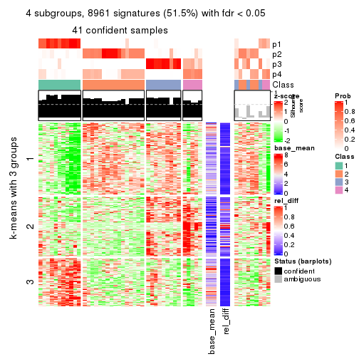
get_signatures(res, k = 5)

get_signatures(res, k = 6)
Signature heatmaps where rows are not scaled:
get_signatures(res, k = 2, scale_rows = FALSE)
get_signatures(res, k = 3, scale_rows = FALSE)
get_signatures(res, k = 4, scale_rows = FALSE)
get_signatures(res, k = 5, scale_rows = FALSE)
get_signatures(res, k = 6, scale_rows = FALSE)
Compare the overlap of signatures from different k:
compare_signatures(res)
get_signature() returns a data frame invisibly. TO get the list of signatures, the function
call should be assigned to a variable explicitly. In following code, if plot argument is set
to FALSE, no heatmap is plotted while only the differential analysis is performed.
# code only for demonstration
tb = get_signature(res, k = ..., plot = FALSE)
An example of the output of tb is:
#> which_row fdr mean_1 mean_2 scaled_mean_1 scaled_mean_2 km
#> 1 38 0.042760348 8.373488 9.131774 -0.5533452 0.5164555 1
#> 2 40 0.018707592 7.106213 8.469186 -0.6173731 0.5762149 1
#> 3 55 0.019134737 10.221463 11.207825 -0.6159697 0.5749050 1
#> 4 59 0.006059896 5.921854 7.869574 -0.6899429 0.6439467 1
#> 5 60 0.018055526 8.928898 10.211722 -0.6204761 0.5791110 1
#> 6 98 0.009384629 15.714769 14.887706 0.6635654 -0.6193277 2
...
The columns in tb are:
which_row: row indices corresponding to the input matrix.fdr: FDR for the differential test. mean_x: The mean value in group x.scaled_mean_x: The mean value in group x after rows are scaled.km: Row groups if k-means clustering is applied to rows.UMAP plot which shows how samples are separated.
dimension_reduction(res, k = 2, method = "UMAP")
dimension_reduction(res, k = 3, method = "UMAP")
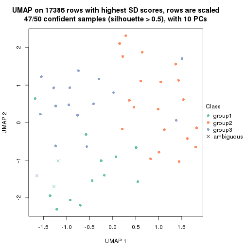
dimension_reduction(res, k = 4, method = "UMAP")
dimension_reduction(res, k = 5, method = "UMAP")
dimension_reduction(res, k = 6, method = "UMAP")
Following heatmap shows how subgroups are split when increasing k:
collect_classes(res)
If matrix rows can be associated to genes, consider to use functional_enrichment(res,
...) to perform function enrichment for the signature genes. See this vignette for more detailed explanations.
The object with results only for a single top-value method and a single partition method can be extracted as:
res = res_list["SD", "pam"]
# you can also extract it by
# res = res_list["SD:pam"]
A summary of res and all the functions that can be applied to it:
res
#> A 'ConsensusPartition' object with k = 2, 3, 4, 5, 6.
#> On a matrix with 17386 rows and 50 columns.
#> Top rows (1000, 2000, 3000, 4000, 5000) are extracted by 'SD' method.
#> Subgroups are detected by 'pam' method.
#> Performed in total 1250 partitions by row resampling.
#> Best k for subgroups seems to be 5.
#>
#> Following methods can be applied to this 'ConsensusPartition' object:
#> [1] "cola_report" "collect_classes" "collect_plots"
#> [4] "collect_stats" "colnames" "compare_signatures"
#> [7] "consensus_heatmap" "dimension_reduction" "functional_enrichment"
#> [10] "get_anno_col" "get_anno" "get_classes"
#> [13] "get_consensus" "get_matrix" "get_membership"
#> [16] "get_param" "get_signatures" "get_stats"
#> [19] "is_best_k" "is_stable_k" "membership_heatmap"
#> [22] "ncol" "nrow" "plot_ecdf"
#> [25] "rownames" "select_partition_number" "show"
#> [28] "suggest_best_k" "test_to_known_factors"
collect_plots() function collects all the plots made from res for all k (number of partitions)
into one single page to provide an easy and fast comparison between different k.
collect_plots(res)
The plots are:
k and the heatmap of
predicted classes for each k.k.k.k.All the plots in panels can be made by individual functions and they are plotted later in this section.
select_partition_number() produces several plots showing different
statistics for choosing “optimized” k. There are following statistics:
k;k, the area increased is defined as \(A_k - A_{k-1}\).The detailed explanations of these statistics can be found in the cola vignette.
Generally speaking, lower PAC score, higher mean silhouette score or higher
concordance corresponds to better partition. Rand index and Jaccard index
measure how similar the current partition is compared to partition with k-1.
If they are too similar, we won't accept k is better than k-1.
select_partition_number(res)
The numeric values for all these statistics can be obtained by get_stats().
get_stats(res)
#> k 1-PAC mean_silhouette concordance area_increased Rand Jaccard
#> 2 2 0.291 0.747 0.853 0.3709 0.673 0.673
#> 3 3 0.352 0.551 0.740 0.6257 0.666 0.519
#> 4 4 0.462 0.558 0.772 0.1798 0.737 0.422
#> 5 5 0.625 0.724 0.843 0.0773 0.868 0.577
#> 6 6 0.697 0.696 0.820 0.0589 0.909 0.636
suggest_best_k() suggests the best \(k\) based on these statistics. The rules are as follows:
suggest_best_k(res)
#> [1] 5
Following shows the table of the partitions (You need to click the show/hide
code output link to see it). The membership matrix (columns with name p*)
is inferred by
clue::cl_consensus()
function with the SE method. Basically the value in the membership matrix
represents the probability to belong to a certain group. The finall class
label for an item is determined with the group with highest probability it
belongs to.
In get_classes() function, the entropy is calculated from the membership
matrix and the silhouette score is calculated from the consensus matrix.
cbind(get_classes(res, k = 2), get_membership(res, k = 2))
#> class entropy silhouette p1 p2
#> SRR2305538 1 0.7139 0.8242 0.804 0.196
#> SRR2305506 2 0.7219 0.7058 0.200 0.800
#> SRR2305537 1 0.5519 0.8153 0.872 0.128
#> SRR2305476 2 0.6712 0.7688 0.176 0.824
#> SRR2305508 2 0.9977 0.0767 0.472 0.528
#> SRR2305521 2 0.5629 0.7588 0.132 0.868
#> SRR2305486 2 0.1184 0.8190 0.016 0.984
#> SRR2305503 2 0.0376 0.8183 0.004 0.996
#> SRR2305519 2 0.5519 0.7614 0.128 0.872
#> SRR2305515 2 0.5178 0.7679 0.116 0.884
#> SRR2305528 2 0.0000 0.8174 0.000 1.000
#> SRR2305518 2 0.6712 0.7699 0.176 0.824
#> SRR2305527 2 0.6712 0.7699 0.176 0.824
#> SRR2305498 2 0.5519 0.7614 0.128 0.872
#> SRR2305488 2 0.6801 0.7667 0.180 0.820
#> SRR2305512 1 0.9460 0.6947 0.636 0.364
#> SRR2305474 2 0.0000 0.8174 0.000 1.000
#> SRR2305495 2 0.6801 0.7667 0.180 0.820
#> SRR2305536 2 0.2043 0.8186 0.032 0.968
#> SRR2305525 2 0.0376 0.8183 0.004 0.996
#> SRR2305494 2 0.6887 0.7162 0.184 0.816
#> SRR2305532 2 0.6712 0.7699 0.176 0.824
#> SRR2305500 2 0.0000 0.8174 0.000 1.000
#> SRR2305509 2 0.0000 0.8174 0.000 1.000
#> SRR2305501 2 0.7219 0.7057 0.200 0.800
#> SRR2305524 2 0.5059 0.7988 0.112 0.888
#> SRR2305491 2 0.1184 0.8160 0.016 0.984
#> SRR2305489 1 0.7139 0.8242 0.804 0.196
#> SRR2305516 2 0.6801 0.7667 0.180 0.820
#> SRR2305507 2 0.0000 0.8174 0.000 1.000
#> SRR2305497 2 0.5519 0.7614 0.128 0.872
#> SRR2305482 1 0.5519 0.8153 0.872 0.128
#> SRR2305485 2 0.7299 0.6972 0.204 0.796
#> SRR2305472 1 0.6887 0.8261 0.816 0.184
#> SRR2305513 1 0.0376 0.7207 0.996 0.004
#> SRR2305540 2 0.9732 0.6016 0.404 0.596
#> SRR2305522 2 0.0376 0.8183 0.004 0.996
#> SRR2305520 2 0.1843 0.8192 0.028 0.972
#> SRR2305533 2 0.8081 0.7269 0.248 0.752
#> SRR2305534 2 0.7056 0.7554 0.192 0.808
#> SRR2305517 2 0.6712 0.7699 0.176 0.824
#> SRR2305504 1 0.9393 0.0895 0.644 0.356
#> SRR2305511 2 0.6712 0.7699 0.176 0.824
#> SRR2305492 2 0.5519 0.7614 0.128 0.872
#> SRR2305514 2 0.0376 0.8183 0.004 0.996
#> SRR2305531 2 0.6712 0.7699 0.176 0.824
#> SRR2305535 1 0.7139 0.8242 0.804 0.196
#> SRR2305477 2 0.6801 0.7667 0.180 0.820
#> SRR2305480 1 0.9522 0.6951 0.628 0.372
#> SRR2305529 2 0.5946 0.7891 0.144 0.856
cbind(get_classes(res, k = 3), get_membership(res, k = 3))
#> class entropy silhouette p1 p2 p3
#> SRR2305538 1 0.6062 0.7835 0.616 0.384 0.000
#> SRR2305506 2 0.6449 0.6598 0.056 0.740 0.204
#> SRR2305537 1 0.6062 0.7835 0.616 0.384 0.000
#> SRR2305476 2 0.4531 0.6416 0.008 0.824 0.168
#> SRR2305508 3 0.6062 0.4555 0.384 0.000 0.616
#> SRR2305521 2 0.7175 0.5671 0.032 0.592 0.376
#> SRR2305486 2 0.4504 0.6777 0.000 0.804 0.196
#> SRR2305503 2 0.5216 0.6593 0.000 0.740 0.260
#> SRR2305519 2 0.6192 0.5423 0.000 0.580 0.420
#> SRR2305515 2 0.7517 0.5647 0.048 0.588 0.364
#> SRR2305528 3 0.5058 0.3885 0.000 0.244 0.756
#> SRR2305518 2 0.0000 0.6440 0.000 1.000 0.000
#> SRR2305527 2 0.1031 0.6634 0.000 0.976 0.024
#> SRR2305498 3 0.0592 0.6644 0.000 0.012 0.988
#> SRR2305488 2 0.1950 0.6387 0.008 0.952 0.040
#> SRR2305512 1 0.6879 0.3795 0.616 0.024 0.360
#> SRR2305474 3 0.5058 0.3885 0.000 0.244 0.756
#> SRR2305495 3 0.6359 0.3672 0.008 0.364 0.628
#> SRR2305536 2 0.5882 0.6079 0.000 0.652 0.348
#> SRR2305525 3 0.6260 0.1280 0.000 0.448 0.552
#> SRR2305494 3 0.2550 0.6582 0.056 0.012 0.932
#> SRR2305532 2 0.0000 0.6440 0.000 1.000 0.000
#> SRR2305500 3 0.5058 0.3885 0.000 0.244 0.756
#> SRR2305509 2 0.6008 0.5907 0.000 0.628 0.372
#> SRR2305501 2 0.8765 0.5470 0.168 0.580 0.252
#> SRR2305524 2 0.5650 0.6079 0.000 0.688 0.312
#> SRR2305491 3 0.1832 0.6604 0.008 0.036 0.956
#> SRR2305489 1 0.6062 0.7835 0.616 0.384 0.000
#> SRR2305516 2 0.0424 0.6352 0.008 0.992 0.000
#> SRR2305507 2 0.6192 0.5423 0.000 0.580 0.420
#> SRR2305497 3 0.0892 0.6615 0.000 0.020 0.980
#> SRR2305482 1 0.5835 0.7619 0.660 0.340 0.000
#> SRR2305485 3 0.6062 0.4555 0.384 0.000 0.616
#> SRR2305472 1 0.6062 0.7835 0.616 0.384 0.000
#> SRR2305513 1 0.0592 0.4786 0.988 0.000 0.012
#> SRR2305540 3 0.8605 0.4454 0.208 0.188 0.604
#> SRR2305522 2 0.4504 0.6755 0.000 0.804 0.196
#> SRR2305520 2 0.6126 0.5634 0.000 0.600 0.400
#> SRR2305533 3 0.6180 0.4179 0.008 0.332 0.660
#> SRR2305534 2 0.0592 0.6315 0.012 0.988 0.000
#> SRR2305517 2 0.1031 0.6634 0.000 0.976 0.024
#> SRR2305504 2 0.5621 0.0399 0.308 0.692 0.000
#> SRR2305511 2 0.1031 0.6634 0.000 0.976 0.024
#> SRR2305492 3 0.0592 0.6644 0.000 0.012 0.988
#> SRR2305514 2 0.6291 0.0917 0.000 0.532 0.468
#> SRR2305531 2 0.1031 0.6634 0.000 0.976 0.024
#> SRR2305535 1 0.6062 0.7835 0.616 0.384 0.000
#> SRR2305477 2 0.6205 0.0182 0.008 0.656 0.336
#> SRR2305480 1 0.6215 0.2713 0.572 0.000 0.428
#> SRR2305529 3 0.4755 0.5741 0.008 0.184 0.808
cbind(get_classes(res, k = 4), get_membership(res, k = 4))
#> class entropy silhouette p1 p2 p3 p4
#> SRR2305538 1 0.3219 0.664 0.836 0.000 0.000 0.164
#> SRR2305506 2 0.7253 0.515 0.172 0.608 0.020 0.200
#> SRR2305537 1 0.0469 0.662 0.988 0.000 0.000 0.012
#> SRR2305476 2 0.4839 0.604 0.184 0.764 0.000 0.052
#> SRR2305508 3 0.0000 0.470 0.000 0.000 1.000 0.000
#> SRR2305521 2 0.1284 0.644 0.000 0.964 0.012 0.024
#> SRR2305486 4 0.1635 0.836 0.008 0.044 0.000 0.948
#> SRR2305503 2 0.4431 0.541 0.000 0.696 0.000 0.304
#> SRR2305519 2 0.0000 0.633 0.000 1.000 0.000 0.000
#> SRR2305515 2 0.0469 0.636 0.000 0.988 0.012 0.000
#> SRR2305528 2 0.4095 0.404 0.004 0.820 0.148 0.028
#> SRR2305518 2 0.6690 0.502 0.144 0.608 0.000 0.248
#> SRR2305527 2 0.6041 0.465 0.060 0.608 0.000 0.332
#> SRR2305498 3 0.5755 0.620 0.000 0.444 0.528 0.028
#> SRR2305488 2 0.6542 0.524 0.196 0.636 0.000 0.168
#> SRR2305512 1 0.4746 0.388 0.632 0.368 0.000 0.000
#> SRR2305474 2 0.3913 0.402 0.000 0.824 0.148 0.028
#> SRR2305495 4 0.3812 0.708 0.140 0.028 0.000 0.832
#> SRR2305536 2 0.2871 0.655 0.032 0.896 0.000 0.072
#> SRR2305525 4 0.1792 0.796 0.000 0.068 0.000 0.932
#> SRR2305494 3 0.5724 0.627 0.000 0.424 0.548 0.028
#> SRR2305532 4 0.5279 0.121 0.012 0.400 0.000 0.588
#> SRR2305500 2 0.3913 0.402 0.000 0.824 0.148 0.028
#> SRR2305509 4 0.4222 0.563 0.000 0.272 0.000 0.728
#> SRR2305501 2 0.4332 0.588 0.176 0.792 0.032 0.000
#> SRR2305524 2 0.2654 0.638 0.108 0.888 0.004 0.000
#> SRR2305491 2 0.5862 -0.615 0.000 0.484 0.484 0.032
#> SRR2305489 1 0.3356 0.655 0.824 0.000 0.000 0.176
#> SRR2305516 4 0.1109 0.836 0.004 0.028 0.000 0.968
#> SRR2305507 2 0.0000 0.633 0.000 1.000 0.000 0.000
#> SRR2305497 3 0.6650 0.601 0.000 0.432 0.484 0.084
#> SRR2305482 1 0.0937 0.665 0.976 0.000 0.012 0.012
#> SRR2305485 3 0.0592 0.483 0.000 0.000 0.984 0.016
#> SRR2305472 1 0.3444 0.643 0.816 0.000 0.000 0.184
#> SRR2305513 1 0.4989 0.432 0.528 0.000 0.472 0.000
#> SRR2305540 3 0.6885 0.461 0.352 0.052 0.564 0.032
#> SRR2305522 2 0.4804 0.429 0.000 0.616 0.000 0.384
#> SRR2305520 2 0.0817 0.643 0.024 0.976 0.000 0.000
#> SRR2305533 3 0.8702 0.506 0.184 0.136 0.528 0.152
#> SRR2305534 2 0.6885 0.490 0.208 0.596 0.000 0.196
#> SRR2305517 4 0.1022 0.838 0.000 0.032 0.000 0.968
#> SRR2305504 1 0.6250 0.119 0.592 0.356 0.020 0.032
#> SRR2305511 4 0.1022 0.838 0.000 0.032 0.000 0.968
#> SRR2305492 3 0.5755 0.620 0.000 0.444 0.528 0.028
#> SRR2305514 4 0.0336 0.828 0.000 0.008 0.000 0.992
#> SRR2305531 4 0.1022 0.838 0.000 0.032 0.000 0.968
#> SRR2305535 1 0.3219 0.664 0.836 0.000 0.000 0.164
#> SRR2305477 4 0.3074 0.706 0.152 0.000 0.000 0.848
#> SRR2305480 1 0.5004 0.344 0.604 0.392 0.000 0.004
#> SRR2305529 3 0.8307 0.611 0.148 0.256 0.528 0.068
cbind(get_classes(res, k = 5), get_membership(res, k = 5))
#> class entropy silhouette p1 p2 p3 p4 p5
#> SRR2305538 1 0.2891 0.720252 0.824 0.176 0.000 0.000 0.000
#> SRR2305506 2 0.3381 0.666639 0.176 0.808 0.000 0.000 0.016
#> SRR2305537 1 0.2124 0.648826 0.900 0.096 0.004 0.000 0.000
#> SRR2305476 2 0.2707 0.725099 0.008 0.860 0.132 0.000 0.000
#> SRR2305508 4 0.0000 0.867791 0.000 0.000 0.000 1.000 0.000
#> SRR2305521 2 0.4650 0.732425 0.004 0.684 0.280 0.000 0.032
#> SRR2305486 5 0.2179 0.885977 0.000 0.100 0.004 0.000 0.896
#> SRR2305503 2 0.3929 0.710932 0.000 0.764 0.028 0.000 0.208
#> SRR2305519 2 0.3913 0.707857 0.000 0.676 0.324 0.000 0.000
#> SRR2305515 2 0.3920 0.743256 0.004 0.724 0.268 0.000 0.004
#> SRR2305528 3 0.0404 0.839292 0.000 0.012 0.988 0.000 0.000
#> SRR2305518 2 0.1484 0.709374 0.008 0.944 0.000 0.000 0.048
#> SRR2305527 2 0.2193 0.715133 0.008 0.900 0.000 0.000 0.092
#> SRR2305498 3 0.0162 0.843078 0.000 0.004 0.996 0.000 0.000
#> SRR2305488 2 0.1569 0.717132 0.008 0.948 0.032 0.000 0.012
#> SRR2305512 1 0.3707 0.491480 0.716 0.000 0.284 0.000 0.000
#> SRR2305474 3 0.0290 0.842203 0.000 0.008 0.992 0.000 0.000
#> SRR2305495 5 0.2329 0.871604 0.000 0.124 0.000 0.000 0.876
#> SRR2305536 2 0.4772 0.748209 0.000 0.728 0.164 0.000 0.108
#> SRR2305525 5 0.1408 0.911428 0.000 0.044 0.008 0.000 0.948
#> SRR2305494 3 0.0162 0.843078 0.000 0.004 0.996 0.000 0.000
#> SRR2305532 2 0.4305 0.145141 0.000 0.512 0.000 0.000 0.488
#> SRR2305500 3 0.0290 0.842203 0.000 0.008 0.992 0.000 0.000
#> SRR2305509 5 0.2230 0.817486 0.000 0.000 0.116 0.000 0.884
#> SRR2305501 2 0.4734 0.695238 0.176 0.728 0.096 0.000 0.000
#> SRR2305524 2 0.3884 0.730715 0.004 0.708 0.288 0.000 0.000
#> SRR2305491 3 0.0000 0.841516 0.000 0.000 1.000 0.000 0.000
#> SRR2305489 1 0.4109 0.701370 0.768 0.192 0.004 0.000 0.036
#> SRR2305516 5 0.1197 0.886264 0.000 0.048 0.000 0.000 0.952
#> SRR2305507 2 0.3895 0.711074 0.000 0.680 0.320 0.000 0.000
#> SRR2305497 3 0.0162 0.841147 0.000 0.000 0.996 0.000 0.004
#> SRR2305482 1 0.2020 0.704615 0.900 0.100 0.000 0.000 0.000
#> SRR2305485 4 0.3143 0.726736 0.000 0.000 0.204 0.796 0.000
#> SRR2305472 1 0.3037 0.685719 0.860 0.040 0.000 0.000 0.100
#> SRR2305513 4 0.0000 0.867791 0.000 0.000 0.000 1.000 0.000
#> SRR2305540 3 0.6182 0.354259 0.256 0.172 0.568 0.000 0.004
#> SRR2305522 2 0.3305 0.694486 0.000 0.776 0.000 0.000 0.224
#> SRR2305520 2 0.3857 0.717614 0.000 0.688 0.312 0.000 0.000
#> SRR2305533 3 0.5166 0.509288 0.108 0.212 0.680 0.000 0.000
#> SRR2305534 2 0.2157 0.685420 0.036 0.920 0.004 0.000 0.040
#> SRR2305517 5 0.0000 0.915590 0.000 0.000 0.000 0.000 1.000
#> SRR2305504 1 0.4437 0.000976 0.532 0.464 0.004 0.000 0.000
#> SRR2305511 5 0.0000 0.915590 0.000 0.000 0.000 0.000 1.000
#> SRR2305492 3 0.0162 0.843078 0.000 0.004 0.996 0.000 0.000
#> SRR2305514 5 0.0000 0.915590 0.000 0.000 0.000 0.000 1.000
#> SRR2305531 5 0.0000 0.915590 0.000 0.000 0.000 0.000 1.000
#> SRR2305535 1 0.2891 0.720252 0.824 0.176 0.000 0.000 0.000
#> SRR2305477 5 0.2561 0.851988 0.000 0.144 0.000 0.000 0.856
#> SRR2305480 3 0.4015 0.375838 0.348 0.000 0.652 0.000 0.000
#> SRR2305529 3 0.3246 0.660373 0.008 0.184 0.808 0.000 0.000
cbind(get_classes(res, k = 6), get_membership(res, k = 6))
#> class entropy silhouette p1 p2 p3 p4 p5 p6
#> SRR2305538 1 0.0363 0.713 0.988 0.000 0.000 0.000 0.000 0.012
#> SRR2305506 2 0.1151 0.713 0.012 0.956 0.000 0.000 0.000 0.032
#> SRR2305537 6 0.5735 0.200 0.352 0.176 0.000 0.000 0.000 0.472
#> SRR2305476 6 0.3395 0.585 0.000 0.060 0.132 0.000 0.000 0.808
#> SRR2305508 4 0.0000 0.848 0.000 0.000 0.000 1.000 0.000 0.000
#> SRR2305521 2 0.2915 0.762 0.000 0.808 0.184 0.000 0.008 0.000
#> SRR2305486 5 0.1745 0.902 0.000 0.012 0.000 0.000 0.920 0.068
#> SRR2305503 2 0.3423 0.760 0.000 0.808 0.036 0.000 0.148 0.008
#> SRR2305519 2 0.2912 0.744 0.000 0.784 0.216 0.000 0.000 0.000
#> SRR2305515 2 0.2562 0.767 0.000 0.828 0.172 0.000 0.000 0.000
#> SRR2305528 3 0.2730 0.746 0.000 0.192 0.808 0.000 0.000 0.000
#> SRR2305518 2 0.4333 0.510 0.000 0.596 0.000 0.000 0.028 0.376
#> SRR2305527 2 0.3431 0.704 0.000 0.756 0.000 0.000 0.016 0.228
#> SRR2305498 3 0.0000 0.796 0.000 0.000 1.000 0.000 0.000 0.000
#> SRR2305488 6 0.1196 0.634 0.000 0.040 0.008 0.000 0.000 0.952
#> SRR2305512 1 0.4913 0.480 0.636 0.000 0.252 0.000 0.000 0.112
#> SRR2305474 3 0.2562 0.768 0.000 0.172 0.828 0.000 0.000 0.000
#> SRR2305495 5 0.1663 0.894 0.000 0.000 0.000 0.000 0.912 0.088
#> SRR2305536 2 0.3879 0.770 0.000 0.784 0.140 0.000 0.064 0.012
#> SRR2305525 5 0.1010 0.919 0.000 0.000 0.004 0.000 0.960 0.036
#> SRR2305494 3 0.0146 0.794 0.000 0.004 0.996 0.000 0.000 0.000
#> SRR2305532 2 0.5765 0.201 0.000 0.420 0.000 0.000 0.408 0.172
#> SRR2305500 3 0.2562 0.768 0.000 0.172 0.828 0.000 0.000 0.000
#> SRR2305509 5 0.1745 0.869 0.000 0.012 0.068 0.000 0.920 0.000
#> SRR2305501 2 0.1151 0.713 0.012 0.956 0.000 0.000 0.000 0.032
#> SRR2305524 2 0.4131 0.733 0.172 0.760 0.040 0.000 0.000 0.028
#> SRR2305491 3 0.2562 0.701 0.000 0.000 0.828 0.000 0.000 0.172
#> SRR2305489 6 0.1802 0.619 0.072 0.000 0.000 0.000 0.012 0.916
#> SRR2305516 5 0.0993 0.908 0.000 0.012 0.000 0.000 0.964 0.024
#> SRR2305507 2 0.2883 0.747 0.000 0.788 0.212 0.000 0.000 0.000
#> SRR2305497 3 0.1765 0.765 0.000 0.000 0.904 0.000 0.096 0.000
#> SRR2305482 1 0.3700 0.681 0.780 0.152 0.000 0.000 0.000 0.068
#> SRR2305485 4 0.3288 0.689 0.000 0.000 0.276 0.724 0.000 0.000
#> SRR2305472 1 0.3367 0.728 0.816 0.000 0.000 0.000 0.080 0.104
#> SRR2305513 4 0.0000 0.848 0.000 0.000 0.000 1.000 0.000 0.000
#> SRR2305540 6 0.6165 0.394 0.024 0.196 0.268 0.000 0.000 0.512
#> SRR2305522 2 0.3807 0.717 0.000 0.756 0.000 0.000 0.192 0.052
#> SRR2305520 2 0.2912 0.744 0.000 0.784 0.216 0.000 0.000 0.000
#> SRR2305533 6 0.3081 0.594 0.220 0.000 0.004 0.000 0.000 0.776
#> SRR2305534 6 0.0993 0.628 0.000 0.024 0.000 0.000 0.012 0.964
#> SRR2305517 5 0.0146 0.923 0.000 0.000 0.000 0.000 0.996 0.004
#> SRR2305504 6 0.5437 0.394 0.228 0.196 0.000 0.000 0.000 0.576
#> SRR2305511 5 0.0000 0.923 0.000 0.000 0.000 0.000 1.000 0.000
#> SRR2305492 3 0.0000 0.796 0.000 0.000 1.000 0.000 0.000 0.000
#> SRR2305514 5 0.0000 0.923 0.000 0.000 0.000 0.000 1.000 0.000
#> SRR2305531 5 0.0000 0.923 0.000 0.000 0.000 0.000 1.000 0.000
#> SRR2305535 1 0.2664 0.713 0.816 0.000 0.000 0.000 0.000 0.184
#> SRR2305477 5 0.3198 0.687 0.000 0.000 0.000 0.000 0.740 0.260
#> SRR2305480 3 0.3659 0.396 0.364 0.000 0.636 0.000 0.000 0.000
#> SRR2305529 6 0.4753 0.076 0.048 0.000 0.456 0.000 0.000 0.496
Heatmaps for the consensus matrix. It visualizes the probability of two samples to be in a same group.
consensus_heatmap(res, k = 2)
consensus_heatmap(res, k = 3)
consensus_heatmap(res, k = 4)
consensus_heatmap(res, k = 5)
consensus_heatmap(res, k = 6)
Heatmaps for the membership of samples in all partitions to see how consistent they are:
membership_heatmap(res, k = 2)
membership_heatmap(res, k = 3)
membership_heatmap(res, k = 4)

membership_heatmap(res, k = 5)
membership_heatmap(res, k = 6)
As soon as we have had the classes for columns, we can look for signatures which are significantly different between classes which can be candidate marks for certain classes. Following are the heatmaps for signatures.
Signature heatmaps where rows are scaled:
get_signatures(res, k = 2)
get_signatures(res, k = 3)
get_signatures(res, k = 4)
get_signatures(res, k = 5)
get_signatures(res, k = 6)
Signature heatmaps where rows are not scaled:
get_signatures(res, k = 2, scale_rows = FALSE)
get_signatures(res, k = 3, scale_rows = FALSE)
get_signatures(res, k = 4, scale_rows = FALSE)

get_signatures(res, k = 5, scale_rows = FALSE)
get_signatures(res, k = 6, scale_rows = FALSE)
Compare the overlap of signatures from different k:
compare_signatures(res)
get_signature() returns a data frame invisibly. TO get the list of signatures, the function
call should be assigned to a variable explicitly. In following code, if plot argument is set
to FALSE, no heatmap is plotted while only the differential analysis is performed.
# code only for demonstration
tb = get_signature(res, k = ..., plot = FALSE)
An example of the output of tb is:
#> which_row fdr mean_1 mean_2 scaled_mean_1 scaled_mean_2 km
#> 1 38 0.042760348 8.373488 9.131774 -0.5533452 0.5164555 1
#> 2 40 0.018707592 7.106213 8.469186 -0.6173731 0.5762149 1
#> 3 55 0.019134737 10.221463 11.207825 -0.6159697 0.5749050 1
#> 4 59 0.006059896 5.921854 7.869574 -0.6899429 0.6439467 1
#> 5 60 0.018055526 8.928898 10.211722 -0.6204761 0.5791110 1
#> 6 98 0.009384629 15.714769 14.887706 0.6635654 -0.6193277 2
...
The columns in tb are:
which_row: row indices corresponding to the input matrix.fdr: FDR for the differential test. mean_x: The mean value in group x.scaled_mean_x: The mean value in group x after rows are scaled.km: Row groups if k-means clustering is applied to rows.UMAP plot which shows how samples are separated.
dimension_reduction(res, k = 2, method = "UMAP")
dimension_reduction(res, k = 3, method = "UMAP")
dimension_reduction(res, k = 4, method = "UMAP")
dimension_reduction(res, k = 5, method = "UMAP")
dimension_reduction(res, k = 6, method = "UMAP")
Following heatmap shows how subgroups are split when increasing k:
collect_classes(res)
If matrix rows can be associated to genes, consider to use functional_enrichment(res,
...) to perform function enrichment for the signature genes. See this vignette for more detailed explanations.
The object with results only for a single top-value method and a single partition method can be extracted as:
res = res_list["SD", "mclust"]
# you can also extract it by
# res = res_list["SD:mclust"]
A summary of res and all the functions that can be applied to it:
res
#> A 'ConsensusPartition' object with k = 2, 3, 4, 5, 6.
#> On a matrix with 17386 rows and 50 columns.
#> Top rows (1000, 2000, 3000, 4000, 5000) are extracted by 'SD' method.
#> Subgroups are detected by 'mclust' method.
#> Performed in total 1250 partitions by row resampling.
#> Best k for subgroups seems to be 2.
#>
#> Following methods can be applied to this 'ConsensusPartition' object:
#> [1] "cola_report" "collect_classes" "collect_plots"
#> [4] "collect_stats" "colnames" "compare_signatures"
#> [7] "consensus_heatmap" "dimension_reduction" "functional_enrichment"
#> [10] "get_anno_col" "get_anno" "get_classes"
#> [13] "get_consensus" "get_matrix" "get_membership"
#> [16] "get_param" "get_signatures" "get_stats"
#> [19] "is_best_k" "is_stable_k" "membership_heatmap"
#> [22] "ncol" "nrow" "plot_ecdf"
#> [25] "rownames" "select_partition_number" "show"
#> [28] "suggest_best_k" "test_to_known_factors"
collect_plots() function collects all the plots made from res for all k (number of partitions)
into one single page to provide an easy and fast comparison between different k.
collect_plots(res)
The plots are:
k and the heatmap of
predicted classes for each k.k.k.k.All the plots in panels can be made by individual functions and they are plotted later in this section.
select_partition_number() produces several plots showing different
statistics for choosing “optimized” k. There are following statistics:
k;k, the area increased is defined as \(A_k - A_{k-1}\).The detailed explanations of these statistics can be found in the cola vignette.
Generally speaking, lower PAC score, higher mean silhouette score or higher
concordance corresponds to better partition. Rand index and Jaccard index
measure how similar the current partition is compared to partition with k-1.
If they are too similar, we won't accept k is better than k-1.
select_partition_number(res)
The numeric values for all these statistics can be obtained by get_stats().
get_stats(res)
#> k 1-PAC mean_silhouette concordance area_increased Rand Jaccard
#> 2 2 0.451 0.715 0.877 0.4810 0.503 0.503
#> 3 3 0.277 0.720 0.792 -0.0664 0.613 0.508
#> 4 4 0.354 0.725 0.768 0.2349 0.820 0.738
#> 5 5 0.428 0.646 0.772 0.1720 0.914 0.834
#> 6 6 0.563 0.592 0.779 0.1623 0.736 0.408
suggest_best_k() suggests the best \(k\) based on these statistics. The rules are as follows:
suggest_best_k(res)
#> [1] 2
Following shows the table of the partitions (You need to click the show/hide
code output link to see it). The membership matrix (columns with name p*)
is inferred by
clue::cl_consensus()
function with the SE method. Basically the value in the membership matrix
represents the probability to belong to a certain group. The finall class
label for an item is determined with the group with highest probability it
belongs to.
In get_classes() function, the entropy is calculated from the membership
matrix and the silhouette score is calculated from the consensus matrix.
cbind(get_classes(res, k = 2), get_membership(res, k = 2))
#> class entropy silhouette p1 p2
#> SRR2305538 1 0.0376 0.8157 0.996 0.004
#> SRR2305506 1 0.9710 0.1927 0.600 0.400
#> SRR2305537 1 0.0000 0.8155 1.000 0.000
#> SRR2305476 2 0.8763 0.5921 0.296 0.704
#> SRR2305508 1 0.0000 0.8155 1.000 0.000
#> SRR2305521 2 0.9710 0.4183 0.400 0.600
#> SRR2305486 2 0.0938 0.8559 0.012 0.988
#> SRR2305503 2 0.0938 0.8559 0.012 0.988
#> SRR2305519 2 0.9983 -0.0392 0.476 0.524
#> SRR2305515 2 0.9323 0.5026 0.348 0.652
#> SRR2305528 2 0.2778 0.8510 0.048 0.952
#> SRR2305518 2 0.0000 0.8525 0.000 1.000
#> SRR2305527 2 0.0000 0.8525 0.000 1.000
#> SRR2305498 2 0.8955 0.5867 0.312 0.688
#> SRR2305488 2 0.7745 0.6676 0.228 0.772
#> SRR2305512 1 0.2603 0.7983 0.956 0.044
#> SRR2305474 2 0.5408 0.7996 0.124 0.876
#> SRR2305495 2 0.9248 0.5099 0.340 0.660
#> SRR2305536 2 0.1633 0.8554 0.024 0.976
#> SRR2305525 2 0.0938 0.8559 0.012 0.988
#> SRR2305494 1 0.8909 0.4448 0.692 0.308
#> SRR2305532 2 0.0000 0.8525 0.000 1.000
#> SRR2305500 2 0.4690 0.8193 0.100 0.900
#> SRR2305509 2 0.2778 0.8510 0.048 0.952
#> SRR2305501 1 0.9710 0.1927 0.600 0.400
#> SRR2305524 2 0.5059 0.8112 0.112 0.888
#> SRR2305491 1 0.8661 0.5911 0.712 0.288
#> SRR2305489 1 0.0376 0.8157 0.996 0.004
#> SRR2305516 2 0.0376 0.8540 0.004 0.996
#> SRR2305507 2 0.2423 0.8529 0.040 0.960
#> SRR2305497 1 0.8909 0.5635 0.692 0.308
#> SRR2305482 1 0.0000 0.8155 1.000 0.000
#> SRR2305485 1 0.0000 0.8155 1.000 0.000
#> SRR2305472 1 0.0000 0.8155 1.000 0.000
#> SRR2305513 1 0.0000 0.8155 1.000 0.000
#> SRR2305540 1 0.7139 0.6426 0.804 0.196
#> SRR2305522 2 0.0000 0.8525 0.000 1.000
#> SRR2305520 2 0.2948 0.8493 0.052 0.948
#> SRR2305533 1 0.0376 0.8157 0.996 0.004
#> SRR2305534 1 0.8267 0.6244 0.740 0.260
#> SRR2305517 2 0.0000 0.8525 0.000 1.000
#> SRR2305504 1 0.0000 0.8155 1.000 0.000
#> SRR2305511 2 0.0000 0.8525 0.000 1.000
#> SRR2305492 1 0.8661 0.5911 0.712 0.288
#> SRR2305514 2 0.0938 0.8559 0.012 0.988
#> SRR2305531 2 0.0000 0.8525 0.000 1.000
#> SRR2305535 1 0.0376 0.8157 0.996 0.004
#> SRR2305477 2 0.2778 0.8510 0.048 0.952
#> SRR2305480 1 0.8661 0.5911 0.712 0.288
#> SRR2305529 2 0.8955 0.4990 0.312 0.688
cbind(get_classes(res, k = 3), get_membership(res, k = 3))
#> class entropy silhouette p1 p2 p3
#> SRR2305538 1 0.8176 0.698 0.636 0.224 0.140
#> SRR2305506 2 0.6704 0.622 0.016 0.608 0.376
#> SRR2305537 1 0.6448 0.577 0.636 0.012 0.352
#> SRR2305476 2 0.1482 0.776 0.012 0.968 0.020
#> SRR2305508 3 0.0237 0.997 0.004 0.000 0.996
#> SRR2305521 2 0.6556 0.668 0.032 0.692 0.276
#> SRR2305486 2 0.2066 0.780 0.060 0.940 0.000
#> SRR2305503 2 0.4974 0.734 0.236 0.764 0.000
#> SRR2305519 2 0.3755 0.748 0.008 0.872 0.120
#> SRR2305515 2 0.6264 0.676 0.032 0.724 0.244
#> SRR2305528 2 0.1163 0.779 0.028 0.972 0.000
#> SRR2305518 2 0.5138 0.732 0.252 0.748 0.000
#> SRR2305527 2 0.5926 0.699 0.356 0.644 0.000
#> SRR2305498 2 0.1170 0.776 0.008 0.976 0.016
#> SRR2305488 2 0.3267 0.753 0.000 0.884 0.116
#> SRR2305512 2 0.8250 0.379 0.232 0.628 0.140
#> SRR2305474 2 0.0000 0.775 0.000 1.000 0.000
#> SRR2305495 2 0.5967 0.697 0.032 0.752 0.216
#> SRR2305536 2 0.1289 0.779 0.032 0.968 0.000
#> SRR2305525 2 0.4887 0.736 0.228 0.772 0.000
#> SRR2305494 2 0.7013 0.622 0.028 0.608 0.364
#> SRR2305532 2 0.5926 0.699 0.356 0.644 0.000
#> SRR2305500 2 0.0000 0.775 0.000 1.000 0.000
#> SRR2305509 2 0.2066 0.780 0.060 0.940 0.000
#> SRR2305501 2 0.6704 0.623 0.016 0.608 0.376
#> SRR2305524 2 0.0237 0.775 0.004 0.996 0.000
#> SRR2305491 2 0.3918 0.746 0.012 0.868 0.120
#> SRR2305489 1 0.8334 0.668 0.616 0.248 0.136
#> SRR2305516 2 0.5882 0.704 0.348 0.652 0.000
#> SRR2305507 2 0.1529 0.780 0.040 0.960 0.000
#> SRR2305497 2 0.3755 0.748 0.008 0.872 0.120
#> SRR2305482 1 0.6726 0.613 0.644 0.024 0.332
#> SRR2305485 3 0.0000 0.993 0.000 0.000 1.000
#> SRR2305472 1 0.6843 0.617 0.640 0.028 0.332
#> SRR2305513 3 0.0237 0.997 0.004 0.000 0.996
#> SRR2305540 2 0.6600 0.618 0.012 0.604 0.384
#> SRR2305522 2 0.5905 0.701 0.352 0.648 0.000
#> SRR2305520 2 0.0000 0.775 0.000 1.000 0.000
#> SRR2305533 2 0.5222 0.724 0.040 0.816 0.144
#> SRR2305534 2 0.3340 0.751 0.000 0.880 0.120
#> SRR2305517 2 0.5905 0.701 0.352 0.648 0.000
#> SRR2305504 2 0.6704 0.622 0.016 0.608 0.376
#> SRR2305511 2 0.5926 0.699 0.356 0.644 0.000
#> SRR2305492 2 0.6307 0.481 0.012 0.660 0.328
#> SRR2305514 2 0.4887 0.736 0.228 0.772 0.000
#> SRR2305531 2 0.5926 0.699 0.356 0.644 0.000
#> SRR2305535 1 0.8176 0.698 0.636 0.224 0.140
#> SRR2305477 2 0.0000 0.775 0.000 1.000 0.000
#> SRR2305480 2 0.3918 0.746 0.012 0.868 0.120
#> SRR2305529 2 0.3573 0.750 0.004 0.876 0.120
cbind(get_classes(res, k = 4), get_membership(res, k = 4))
#> class entropy silhouette p1 p2 p3 p4
#> SRR2305538 1 0.1389 0.775 0.952 0.048 0.000 0.000
#> SRR2305506 2 0.5709 0.682 0.012 0.736 0.092 0.160
#> SRR2305537 1 0.5151 0.680 0.760 0.000 0.100 0.140
#> SRR2305476 2 0.3271 0.756 0.012 0.856 0.132 0.000
#> SRR2305508 4 0.0000 0.996 0.000 0.000 0.000 1.000
#> SRR2305521 2 0.6368 0.672 0.016 0.692 0.148 0.144
#> SRR2305486 2 0.3486 0.707 0.000 0.812 0.188 0.000
#> SRR2305503 2 0.2081 0.758 0.000 0.916 0.084 0.000
#> SRR2305519 3 0.6437 0.835 0.092 0.280 0.624 0.004
#> SRR2305515 2 0.5816 0.683 0.016 0.736 0.104 0.144
#> SRR2305528 2 0.3074 0.739 0.000 0.848 0.152 0.000
#> SRR2305518 2 0.2216 0.753 0.000 0.908 0.092 0.000
#> SRR2305527 2 0.2647 0.742 0.000 0.880 0.120 0.000
#> SRR2305498 2 0.4123 0.685 0.000 0.772 0.220 0.008
#> SRR2305488 2 0.3168 0.755 0.060 0.884 0.056 0.000
#> SRR2305512 1 0.6330 0.396 0.680 0.108 0.200 0.012
#> SRR2305474 2 0.4040 0.632 0.000 0.752 0.248 0.000
#> SRR2305495 2 0.6368 0.672 0.016 0.692 0.148 0.144
#> SRR2305536 2 0.3157 0.742 0.004 0.852 0.144 0.000
#> SRR2305525 2 0.2760 0.744 0.000 0.872 0.128 0.000
#> SRR2305494 2 0.6775 0.589 0.016 0.652 0.184 0.148
#> SRR2305532 2 0.2647 0.742 0.000 0.880 0.120 0.000
#> SRR2305500 2 0.2345 0.754 0.000 0.900 0.100 0.000
#> SRR2305509 2 0.3577 0.719 0.012 0.832 0.156 0.000
#> SRR2305501 2 0.5763 0.682 0.016 0.736 0.088 0.160
#> SRR2305524 2 0.3749 0.720 0.128 0.840 0.032 0.000
#> SRR2305491 3 0.7195 0.823 0.136 0.276 0.576 0.012
#> SRR2305489 1 0.1059 0.777 0.972 0.012 0.016 0.000
#> SRR2305516 2 0.2704 0.743 0.000 0.876 0.124 0.000
#> SRR2305507 2 0.2149 0.759 0.000 0.912 0.088 0.000
#> SRR2305497 3 0.6644 0.836 0.092 0.272 0.624 0.012
#> SRR2305482 1 0.2814 0.737 0.868 0.000 0.000 0.132
#> SRR2305485 4 0.0000 0.996 0.000 0.000 0.000 1.000
#> SRR2305472 1 0.2814 0.737 0.868 0.000 0.000 0.132
#> SRR2305513 4 0.0336 0.991 0.008 0.000 0.000 0.992
#> SRR2305540 2 0.5623 0.679 0.012 0.728 0.064 0.196
#> SRR2305522 2 0.2647 0.742 0.000 0.880 0.120 0.000
#> SRR2305520 2 0.2737 0.755 0.008 0.888 0.104 0.000
#> SRR2305533 2 0.6536 0.526 0.212 0.660 0.116 0.012
#> SRR2305534 2 0.5292 0.640 0.064 0.728 0.208 0.000
#> SRR2305517 2 0.2704 0.743 0.000 0.876 0.124 0.000
#> SRR2305504 2 0.5811 0.680 0.012 0.728 0.096 0.164
#> SRR2305511 2 0.2530 0.745 0.000 0.888 0.112 0.000
#> SRR2305492 3 0.9095 0.587 0.136 0.188 0.476 0.200
#> SRR2305514 2 0.3610 0.690 0.000 0.800 0.200 0.000
#> SRR2305531 2 0.3266 0.724 0.000 0.832 0.168 0.000
#> SRR2305535 1 0.1854 0.775 0.940 0.048 0.012 0.000
#> SRR2305477 2 0.3377 0.743 0.012 0.848 0.140 0.000
#> SRR2305480 3 0.7279 0.628 0.104 0.420 0.464 0.012
#> SRR2305529 2 0.5330 0.569 0.132 0.748 0.120 0.000
cbind(get_classes(res, k = 5), get_membership(res, k = 5))
#> class entropy silhouette p1 p2 p3 p4 p5
#> SRR2305538 1 0.0771 0.8007 0.976 0.004 0.020 0.000 0.000
#> SRR2305506 2 0.6987 0.3995 0.080 0.552 0.016 0.060 0.292
#> SRR2305537 5 0.5267 0.0579 0.428 0.000 0.000 0.048 0.524
#> SRR2305476 2 0.5183 0.6834 0.076 0.748 0.112 0.000 0.064
#> SRR2305508 4 0.1121 0.9975 0.000 0.000 0.044 0.956 0.000
#> SRR2305521 2 0.5254 0.6718 0.088 0.764 0.020 0.048 0.080
#> SRR2305486 2 0.3463 0.7175 0.000 0.860 0.040 0.044 0.056
#> SRR2305503 2 0.1195 0.7167 0.000 0.960 0.012 0.000 0.028
#> SRR2305519 3 0.1544 0.8238 0.000 0.068 0.932 0.000 0.000
#> SRR2305515 2 0.5369 0.6739 0.088 0.760 0.028 0.048 0.076
#> SRR2305528 2 0.3255 0.7188 0.000 0.848 0.052 0.000 0.100
#> SRR2305518 2 0.2300 0.7143 0.000 0.908 0.040 0.000 0.052
#> SRR2305527 2 0.2953 0.6494 0.000 0.844 0.012 0.000 0.144
#> SRR2305498 2 0.6201 0.5910 0.036 0.636 0.184 0.000 0.144
#> SRR2305488 2 0.5048 0.6812 0.080 0.756 0.112 0.000 0.052
#> SRR2305512 1 0.5924 0.3880 0.664 0.076 0.204 0.000 0.056
#> SRR2305474 2 0.5484 0.5766 0.000 0.640 0.240 0.000 0.120
#> SRR2305495 2 0.5171 0.6741 0.088 0.764 0.012 0.048 0.088
#> SRR2305536 2 0.4524 0.7193 0.032 0.816 0.048 0.044 0.060
#> SRR2305525 2 0.0963 0.7141 0.000 0.964 0.000 0.000 0.036
#> SRR2305494 2 0.7982 0.3511 0.092 0.508 0.080 0.060 0.260
#> SRR2305532 2 0.3351 0.6400 0.004 0.828 0.020 0.000 0.148
#> SRR2305500 2 0.5375 0.6051 0.000 0.664 0.200 0.000 0.136
#> SRR2305509 2 0.2938 0.7276 0.032 0.876 0.008 0.000 0.084
#> SRR2305501 2 0.7096 0.3207 0.092 0.504 0.004 0.072 0.328
#> SRR2305524 2 0.5538 0.6618 0.084 0.716 0.140 0.000 0.060
#> SRR2305491 3 0.1043 0.8577 0.000 0.040 0.960 0.000 0.000
#> SRR2305489 1 0.2666 0.7521 0.892 0.020 0.076 0.000 0.012
#> SRR2305516 2 0.4838 0.6081 0.016 0.768 0.024 0.044 0.148
#> SRR2305507 2 0.3237 0.7203 0.000 0.848 0.048 0.000 0.104
#> SRR2305497 3 0.0880 0.8578 0.000 0.032 0.968 0.000 0.000
#> SRR2305482 1 0.1408 0.7815 0.948 0.000 0.000 0.044 0.008
#> SRR2305485 4 0.1121 0.9975 0.000 0.000 0.044 0.956 0.000
#> SRR2305472 1 0.1282 0.7798 0.952 0.000 0.000 0.044 0.004
#> SRR2305513 4 0.1282 0.9950 0.004 0.000 0.044 0.952 0.000
#> SRR2305540 2 0.7067 0.3207 0.084 0.504 0.004 0.076 0.332
#> SRR2305522 2 0.3055 0.6437 0.000 0.840 0.016 0.000 0.144
#> SRR2305520 2 0.4317 0.6937 0.000 0.772 0.112 0.000 0.116
#> SRR2305533 5 0.7784 0.3648 0.256 0.120 0.160 0.000 0.464
#> SRR2305534 5 0.7259 0.3057 0.120 0.260 0.096 0.000 0.524
#> SRR2305517 2 0.2444 0.6928 0.000 0.904 0.012 0.016 0.068
#> SRR2305504 5 0.5849 0.4376 0.084 0.160 0.000 0.068 0.688
#> SRR2305511 2 0.4352 0.5986 0.000 0.784 0.024 0.044 0.148
#> SRR2305492 3 0.0992 0.8299 0.000 0.008 0.968 0.024 0.000
#> SRR2305514 2 0.2740 0.6836 0.000 0.888 0.004 0.044 0.064
#> SRR2305531 2 0.4264 0.5997 0.000 0.788 0.020 0.044 0.148
#> SRR2305535 1 0.1788 0.7983 0.932 0.004 0.056 0.000 0.008
#> SRR2305477 2 0.4281 0.7004 0.080 0.800 0.100 0.000 0.020
#> SRR2305480 3 0.5416 0.5473 0.068 0.144 0.724 0.000 0.064
#> SRR2305529 2 0.6633 0.4356 0.088 0.548 0.308 0.000 0.056
cbind(get_classes(res, k = 6), get_membership(res, k = 6))
#> class entropy silhouette p1 p2 p3 p4 p5 p6
#> SRR2305538 1 0.0436 0.80797 0.988 0.004 0.004 0.000 0.000 0.004
#> SRR2305506 6 0.4242 0.38790 0.004 0.412 0.000 0.012 0.000 0.572
#> SRR2305537 6 0.3942 0.08959 0.252 0.004 0.020 0.004 0.000 0.720
#> SRR2305476 2 0.5446 0.57579 0.080 0.636 0.036 0.000 0.244 0.004
#> SRR2305508 4 0.0260 0.97600 0.000 0.000 0.000 0.992 0.000 0.008
#> SRR2305521 2 0.4876 0.57168 0.004 0.708 0.004 0.008 0.132 0.144
#> SRR2305486 5 0.2553 0.69778 0.000 0.144 0.008 0.000 0.848 0.000
#> SRR2305503 5 0.3923 0.40430 0.000 0.416 0.004 0.000 0.580 0.000
#> SRR2305519 3 0.1349 0.86883 0.000 0.056 0.940 0.000 0.004 0.000
#> SRR2305515 2 0.4910 0.58516 0.004 0.712 0.008 0.008 0.136 0.132
#> SRR2305528 2 0.4096 -0.30443 0.000 0.508 0.008 0.000 0.484 0.000
#> SRR2305518 5 0.4047 0.44692 0.000 0.384 0.012 0.000 0.604 0.000
#> SRR2305527 5 0.4172 0.45512 0.000 0.376 0.008 0.000 0.608 0.008
#> SRR2305498 2 0.3443 0.66693 0.044 0.836 0.096 0.000 0.016 0.008
#> SRR2305488 2 0.4910 0.65000 0.076 0.740 0.036 0.000 0.128 0.020
#> SRR2305512 1 0.4142 0.65040 0.756 0.192 0.028 0.004 0.008 0.012
#> SRR2305474 2 0.2433 0.69272 0.000 0.884 0.072 0.000 0.044 0.000
#> SRR2305495 2 0.4564 0.62400 0.012 0.708 0.000 0.000 0.204 0.076
#> SRR2305536 5 0.2955 0.68051 0.004 0.172 0.008 0.000 0.816 0.000
#> SRR2305525 5 0.3428 0.58718 0.000 0.304 0.000 0.000 0.696 0.000
#> SRR2305494 6 0.4174 0.38621 0.004 0.408 0.004 0.000 0.004 0.580
#> SRR2305532 5 0.2915 0.69044 0.000 0.184 0.008 0.000 0.808 0.000
#> SRR2305500 2 0.2312 0.70593 0.000 0.876 0.012 0.000 0.112 0.000
#> SRR2305509 5 0.3383 0.64114 0.000 0.268 0.004 0.000 0.728 0.000
#> SRR2305501 6 0.4174 0.38981 0.004 0.408 0.000 0.004 0.004 0.580
#> SRR2305524 2 0.3163 0.66559 0.068 0.860 0.044 0.000 0.020 0.008
#> SRR2305491 3 0.1693 0.87098 0.000 0.044 0.932 0.020 0.004 0.000
#> SRR2305489 1 0.4114 0.58577 0.740 0.200 0.008 0.000 0.052 0.000
#> SRR2305516 5 0.1349 0.71921 0.004 0.056 0.000 0.000 0.940 0.000
#> SRR2305507 2 0.3323 0.57373 0.000 0.752 0.008 0.000 0.240 0.000
#> SRR2305497 3 0.2027 0.85716 0.000 0.032 0.920 0.016 0.032 0.000
#> SRR2305482 1 0.2295 0.79051 0.900 0.008 0.016 0.004 0.000 0.072
#> SRR2305485 4 0.1921 0.95162 0.000 0.000 0.012 0.920 0.056 0.012
#> SRR2305472 1 0.2270 0.78546 0.900 0.004 0.020 0.004 0.000 0.072
#> SRR2305513 4 0.0260 0.97600 0.000 0.000 0.000 0.992 0.000 0.008
#> SRR2305540 6 0.4310 0.39364 0.004 0.404 0.000 0.016 0.000 0.576
#> SRR2305522 5 0.3789 0.53918 0.000 0.332 0.008 0.000 0.660 0.000
#> SRR2305520 2 0.1867 0.70359 0.000 0.916 0.020 0.000 0.064 0.000
#> SRR2305533 6 0.5343 0.05614 0.264 0.156 0.000 0.000 0.000 0.580
#> SRR2305534 6 0.7476 0.00148 0.216 0.264 0.004 0.000 0.132 0.384
#> SRR2305517 5 0.1663 0.72627 0.000 0.088 0.000 0.000 0.912 0.000
#> SRR2305504 6 0.1375 0.34297 0.008 0.028 0.000 0.008 0.004 0.952
#> SRR2305511 5 0.1204 0.71940 0.000 0.056 0.000 0.000 0.944 0.000
#> SRR2305492 3 0.1624 0.84906 0.000 0.020 0.936 0.040 0.004 0.000
#> SRR2305514 5 0.1387 0.72266 0.000 0.068 0.000 0.000 0.932 0.000
#> SRR2305531 5 0.1267 0.71994 0.000 0.060 0.000 0.000 0.940 0.000
#> SRR2305535 1 0.1010 0.80445 0.960 0.004 0.036 0.000 0.000 0.000
#> SRR2305477 5 0.5144 0.05741 0.068 0.384 0.008 0.000 0.540 0.000
#> SRR2305480 3 0.4900 0.62335 0.052 0.248 0.676 0.004 0.008 0.012
#> SRR2305529 2 0.3448 0.63433 0.064 0.828 0.096 0.000 0.008 0.004
Heatmaps for the consensus matrix. It visualizes the probability of two samples to be in a same group.
consensus_heatmap(res, k = 2)
consensus_heatmap(res, k = 3)
consensus_heatmap(res, k = 4)
consensus_heatmap(res, k = 5)
consensus_heatmap(res, k = 6)
Heatmaps for the membership of samples in all partitions to see how consistent they are:
membership_heatmap(res, k = 2)
membership_heatmap(res, k = 3)
membership_heatmap(res, k = 4)
membership_heatmap(res, k = 5)
membership_heatmap(res, k = 6)
As soon as we have had the classes for columns, we can look for signatures which are significantly different between classes which can be candidate marks for certain classes. Following are the heatmaps for signatures.
Signature heatmaps where rows are scaled:
get_signatures(res, k = 2)
get_signatures(res, k = 3)
get_signatures(res, k = 4)
get_signatures(res, k = 5)
get_signatures(res, k = 6)
Signature heatmaps where rows are not scaled:
get_signatures(res, k = 2, scale_rows = FALSE)
get_signatures(res, k = 3, scale_rows = FALSE)
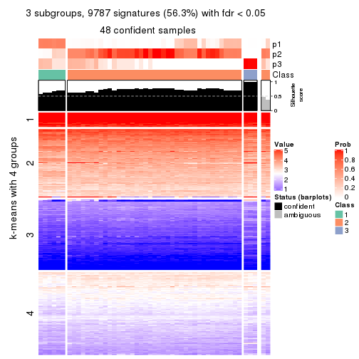
get_signatures(res, k = 4, scale_rows = FALSE)
get_signatures(res, k = 5, scale_rows = FALSE)
get_signatures(res, k = 6, scale_rows = FALSE)
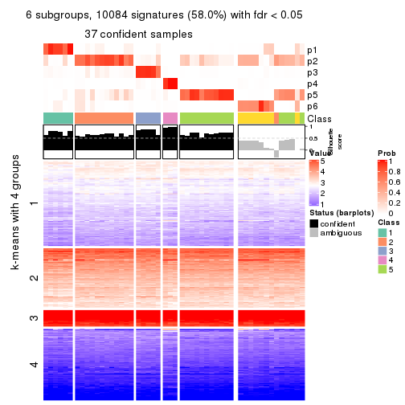
Compare the overlap of signatures from different k:
compare_signatures(res)
get_signature() returns a data frame invisibly. TO get the list of signatures, the function
call should be assigned to a variable explicitly. In following code, if plot argument is set
to FALSE, no heatmap is plotted while only the differential analysis is performed.
# code only for demonstration
tb = get_signature(res, k = ..., plot = FALSE)
An example of the output of tb is:
#> which_row fdr mean_1 mean_2 scaled_mean_1 scaled_mean_2 km
#> 1 38 0.042760348 8.373488 9.131774 -0.5533452 0.5164555 1
#> 2 40 0.018707592 7.106213 8.469186 -0.6173731 0.5762149 1
#> 3 55 0.019134737 10.221463 11.207825 -0.6159697 0.5749050 1
#> 4 59 0.006059896 5.921854 7.869574 -0.6899429 0.6439467 1
#> 5 60 0.018055526 8.928898 10.211722 -0.6204761 0.5791110 1
#> 6 98 0.009384629 15.714769 14.887706 0.6635654 -0.6193277 2
...
The columns in tb are:
which_row: row indices corresponding to the input matrix.fdr: FDR for the differential test. mean_x: The mean value in group x.scaled_mean_x: The mean value in group x after rows are scaled.km: Row groups if k-means clustering is applied to rows.UMAP plot which shows how samples are separated.
dimension_reduction(res, k = 2, method = "UMAP")
dimension_reduction(res, k = 3, method = "UMAP")
dimension_reduction(res, k = 4, method = "UMAP")
dimension_reduction(res, k = 5, method = "UMAP")
dimension_reduction(res, k = 6, method = "UMAP")
Following heatmap shows how subgroups are split when increasing k:
collect_classes(res)
If matrix rows can be associated to genes, consider to use functional_enrichment(res,
...) to perform function enrichment for the signature genes. See this vignette for more detailed explanations.
The object with results only for a single top-value method and a single partition method can be extracted as:
res = res_list["SD", "NMF"]
# you can also extract it by
# res = res_list["SD:NMF"]
A summary of res and all the functions that can be applied to it:
res
#> A 'ConsensusPartition' object with k = 2, 3, 4, 5, 6.
#> On a matrix with 17386 rows and 50 columns.
#> Top rows (1000, 2000, 3000, 4000, 5000) are extracted by 'SD' method.
#> Subgroups are detected by 'NMF' method.
#> Performed in total 1250 partitions by row resampling.
#> Best k for subgroups seems to be 4.
#>
#> Following methods can be applied to this 'ConsensusPartition' object:
#> [1] "cola_report" "collect_classes" "collect_plots"
#> [4] "collect_stats" "colnames" "compare_signatures"
#> [7] "consensus_heatmap" "dimension_reduction" "functional_enrichment"
#> [10] "get_anno_col" "get_anno" "get_classes"
#> [13] "get_consensus" "get_matrix" "get_membership"
#> [16] "get_param" "get_signatures" "get_stats"
#> [19] "is_best_k" "is_stable_k" "membership_heatmap"
#> [22] "ncol" "nrow" "plot_ecdf"
#> [25] "rownames" "select_partition_number" "show"
#> [28] "suggest_best_k" "test_to_known_factors"
collect_plots() function collects all the plots made from res for all k (number of partitions)
into one single page to provide an easy and fast comparison between different k.
collect_plots(res)
The plots are:
k and the heatmap of
predicted classes for each k.k.k.k.All the plots in panels can be made by individual functions and they are plotted later in this section.
select_partition_number() produces several plots showing different
statistics for choosing “optimized” k. There are following statistics:
k;k, the area increased is defined as \(A_k - A_{k-1}\).The detailed explanations of these statistics can be found in the cola vignette.
Generally speaking, lower PAC score, higher mean silhouette score or higher
concordance corresponds to better partition. Rand index and Jaccard index
measure how similar the current partition is compared to partition with k-1.
If they are too similar, we won't accept k is better than k-1.
select_partition_number(res)
The numeric values for all these statistics can be obtained by get_stats().
get_stats(res)
#> k 1-PAC mean_silhouette concordance area_increased Rand Jaccard
#> 2 2 0.562 0.790 0.903 0.4035 0.571 0.571
#> 3 3 0.457 0.649 0.806 0.4136 0.830 0.715
#> 4 4 0.554 0.698 0.824 0.2309 0.789 0.565
#> 5 5 0.586 0.625 0.795 0.1244 0.807 0.453
#> 6 6 0.608 0.561 0.708 0.0464 0.902 0.582
suggest_best_k() suggests the best \(k\) based on these statistics. The rules are as follows:
suggest_best_k(res)
#> [1] 4
Following shows the table of the partitions (You need to click the show/hide
code output link to see it). The membership matrix (columns with name p*)
is inferred by
clue::cl_consensus()
function with the SE method. Basically the value in the membership matrix
represents the probability to belong to a certain group. The finall class
label for an item is determined with the group with highest probability it
belongs to.
In get_classes() function, the entropy is calculated from the membership
matrix and the silhouette score is calculated from the consensus matrix.
cbind(get_classes(res, k = 2), get_membership(res, k = 2))
#> class entropy silhouette p1 p2
#> SRR2305538 1 0.9580 0.616 0.620 0.380
#> SRR2305506 2 0.8955 0.473 0.312 0.688
#> SRR2305537 1 0.7299 0.736 0.796 0.204
#> SRR2305476 2 0.0000 0.930 0.000 1.000
#> SRR2305508 1 0.0000 0.749 1.000 0.000
#> SRR2305521 2 0.7139 0.668 0.196 0.804
#> SRR2305486 2 0.0000 0.930 0.000 1.000
#> SRR2305503 2 0.0000 0.930 0.000 1.000
#> SRR2305519 2 0.1414 0.911 0.020 0.980
#> SRR2305515 2 0.3274 0.865 0.060 0.940
#> SRR2305528 2 0.0000 0.930 0.000 1.000
#> SRR2305518 2 0.0000 0.930 0.000 1.000
#> SRR2305527 2 0.0000 0.930 0.000 1.000
#> SRR2305498 2 0.0000 0.930 0.000 1.000
#> SRR2305488 2 0.1184 0.914 0.016 0.984
#> SRR2305512 1 0.7376 0.729 0.792 0.208
#> SRR2305474 2 0.0000 0.930 0.000 1.000
#> SRR2305495 2 0.0000 0.930 0.000 1.000
#> SRR2305536 2 0.0000 0.930 0.000 1.000
#> SRR2305525 2 0.0000 0.930 0.000 1.000
#> SRR2305494 2 0.9732 0.269 0.404 0.596
#> SRR2305532 2 0.0000 0.930 0.000 1.000
#> SRR2305500 2 0.0000 0.930 0.000 1.000
#> SRR2305509 2 0.0000 0.930 0.000 1.000
#> SRR2305501 1 0.8955 0.503 0.688 0.312
#> SRR2305524 2 0.0000 0.930 0.000 1.000
#> SRR2305491 2 0.9993 -0.354 0.484 0.516
#> SRR2305489 1 0.9732 0.583 0.596 0.404
#> SRR2305516 2 0.0000 0.930 0.000 1.000
#> SRR2305507 2 0.0000 0.930 0.000 1.000
#> SRR2305497 2 0.0000 0.930 0.000 1.000
#> SRR2305482 1 0.0000 0.749 1.000 0.000
#> SRR2305485 1 0.0000 0.749 1.000 0.000
#> SRR2305472 1 0.7528 0.733 0.784 0.216
#> SRR2305513 1 0.0000 0.749 1.000 0.000
#> SRR2305540 1 0.8081 0.604 0.752 0.248
#> SRR2305522 2 0.0000 0.930 0.000 1.000
#> SRR2305520 2 0.0000 0.930 0.000 1.000
#> SRR2305533 1 0.8713 0.694 0.708 0.292
#> SRR2305534 2 0.0000 0.930 0.000 1.000
#> SRR2305517 2 0.0000 0.930 0.000 1.000
#> SRR2305504 1 0.0376 0.749 0.996 0.004
#> SRR2305511 2 0.0000 0.930 0.000 1.000
#> SRR2305492 2 0.8713 0.485 0.292 0.708
#> SRR2305514 2 0.0000 0.930 0.000 1.000
#> SRR2305531 2 0.0000 0.930 0.000 1.000
#> SRR2305535 1 0.9710 0.590 0.600 0.400
#> SRR2305477 2 0.0000 0.930 0.000 1.000
#> SRR2305480 1 0.9661 0.601 0.608 0.392
#> SRR2305529 2 0.0000 0.930 0.000 1.000
cbind(get_classes(res, k = 3), get_membership(res, k = 3))
#> class entropy silhouette p1 p2 p3
#> SRR2305538 1 0.5356 0.6722 0.784 0.196 0.020
#> SRR2305506 2 0.7250 0.4585 0.056 0.656 0.288
#> SRR2305537 1 0.5506 0.6132 0.764 0.016 0.220
#> SRR2305476 2 0.4654 0.7433 0.208 0.792 0.000
#> SRR2305508 3 0.0237 0.5789 0.004 0.000 0.996
#> SRR2305521 2 0.4629 0.7025 0.004 0.808 0.188
#> SRR2305486 2 0.0000 0.8383 0.000 1.000 0.000
#> SRR2305503 2 0.0237 0.8382 0.004 0.996 0.000
#> SRR2305519 2 0.8444 0.5043 0.236 0.612 0.152
#> SRR2305515 2 0.4063 0.7968 0.112 0.868 0.020
#> SRR2305528 2 0.0424 0.8377 0.008 0.992 0.000
#> SRR2305518 2 0.0592 0.8357 0.012 0.988 0.000
#> SRR2305527 2 0.0592 0.8357 0.012 0.988 0.000
#> SRR2305498 2 0.6578 0.6718 0.224 0.724 0.052
#> SRR2305488 1 0.5905 0.5683 0.648 0.352 0.000
#> SRR2305512 1 0.4409 0.4477 0.824 0.004 0.172
#> SRR2305474 2 0.6295 0.6801 0.236 0.728 0.036
#> SRR2305495 2 0.0237 0.8382 0.004 0.996 0.000
#> SRR2305536 2 0.0237 0.8382 0.004 0.996 0.000
#> SRR2305525 2 0.0000 0.8383 0.000 1.000 0.000
#> SRR2305494 2 0.9405 0.0167 0.176 0.448 0.376
#> SRR2305532 2 0.2448 0.7855 0.076 0.924 0.000
#> SRR2305500 2 0.3116 0.8078 0.108 0.892 0.000
#> SRR2305509 2 0.0424 0.8377 0.008 0.992 0.000
#> SRR2305501 3 0.7124 0.4727 0.056 0.272 0.672
#> SRR2305524 2 0.4235 0.7701 0.176 0.824 0.000
#> SRR2305491 3 0.7935 0.4921 0.236 0.116 0.648
#> SRR2305489 1 0.5397 0.6395 0.720 0.280 0.000
#> SRR2305516 2 0.2448 0.7855 0.076 0.924 0.000
#> SRR2305507 2 0.4062 0.7767 0.164 0.836 0.000
#> SRR2305497 2 0.9648 0.1220 0.236 0.460 0.304
#> SRR2305482 1 0.5016 0.5975 0.760 0.000 0.240
#> SRR2305485 3 0.1964 0.5674 0.056 0.000 0.944
#> SRR2305472 1 0.5610 0.6309 0.776 0.028 0.196
#> SRR2305513 3 0.1964 0.5674 0.056 0.000 0.944
#> SRR2305540 3 0.7710 0.3466 0.056 0.368 0.576
#> SRR2305522 2 0.0592 0.8357 0.012 0.988 0.000
#> SRR2305520 2 0.4062 0.7783 0.164 0.836 0.000
#> SRR2305533 1 0.1015 0.5785 0.980 0.012 0.008
#> SRR2305534 1 0.5497 0.6317 0.708 0.292 0.000
#> SRR2305517 2 0.0237 0.8382 0.004 0.996 0.000
#> SRR2305504 1 0.5810 0.5124 0.664 0.000 0.336
#> SRR2305511 2 0.0747 0.8337 0.016 0.984 0.000
#> SRR2305492 3 0.7741 0.4959 0.236 0.104 0.660
#> SRR2305514 2 0.0237 0.8382 0.004 0.996 0.000
#> SRR2305531 2 0.0747 0.8337 0.016 0.984 0.000
#> SRR2305535 1 0.4887 0.6648 0.772 0.228 0.000
#> SRR2305477 2 0.0237 0.8382 0.004 0.996 0.000
#> SRR2305480 1 0.8659 -0.2814 0.488 0.104 0.408
#> SRR2305529 2 0.6402 0.6754 0.236 0.724 0.040
cbind(get_classes(res, k = 4), get_membership(res, k = 4))
#> class entropy silhouette p1 p2 p3 p4
#> SRR2305538 1 0.0336 0.908 0.992 0.000 0.008 0.000
#> SRR2305506 4 0.6510 0.394 0.000 0.380 0.080 0.540
#> SRR2305537 1 0.6090 0.664 0.704 0.012 0.104 0.180
#> SRR2305476 2 0.5954 0.272 0.052 0.604 0.344 0.000
#> SRR2305508 4 0.0000 0.812 0.000 0.000 0.000 1.000
#> SRR2305521 2 0.1545 0.777 0.000 0.952 0.008 0.040
#> SRR2305486 2 0.3688 0.696 0.000 0.792 0.208 0.000
#> SRR2305503 2 0.2011 0.760 0.000 0.920 0.080 0.000
#> SRR2305519 3 0.2814 0.768 0.000 0.132 0.868 0.000
#> SRR2305515 2 0.2704 0.758 0.000 0.876 0.124 0.000
#> SRR2305528 2 0.4406 0.598 0.000 0.700 0.300 0.000
#> SRR2305518 2 0.2530 0.750 0.004 0.896 0.100 0.000
#> SRR2305527 2 0.2593 0.747 0.004 0.892 0.104 0.000
#> SRR2305498 2 0.4730 0.516 0.000 0.636 0.364 0.000
#> SRR2305488 1 0.0336 0.909 0.992 0.000 0.008 0.000
#> SRR2305512 3 0.4761 0.302 0.372 0.000 0.628 0.000
#> SRR2305474 3 0.4996 -0.142 0.000 0.484 0.516 0.000
#> SRR2305495 2 0.0592 0.781 0.000 0.984 0.016 0.000
#> SRR2305536 2 0.2704 0.759 0.000 0.876 0.124 0.000
#> SRR2305525 2 0.3024 0.745 0.000 0.852 0.148 0.000
#> SRR2305494 4 0.7016 0.365 0.000 0.252 0.176 0.572
#> SRR2305532 2 0.3919 0.719 0.056 0.840 0.104 0.000
#> SRR2305500 2 0.4907 0.356 0.000 0.580 0.420 0.000
#> SRR2305509 2 0.4072 0.661 0.000 0.748 0.252 0.000
#> SRR2305501 4 0.0000 0.812 0.000 0.000 0.000 1.000
#> SRR2305524 3 0.4746 0.592 0.056 0.168 0.776 0.000
#> SRR2305491 3 0.3370 0.783 0.048 0.080 0.872 0.000
#> SRR2305489 1 0.0779 0.906 0.980 0.016 0.004 0.000
#> SRR2305516 2 0.2149 0.750 0.088 0.912 0.000 0.000
#> SRR2305507 2 0.2469 0.773 0.000 0.892 0.108 0.000
#> SRR2305497 3 0.2589 0.779 0.000 0.116 0.884 0.000
#> SRR2305482 1 0.0376 0.909 0.992 0.000 0.004 0.004
#> SRR2305485 4 0.0000 0.812 0.000 0.000 0.000 1.000
#> SRR2305472 1 0.1256 0.897 0.964 0.028 0.000 0.008
#> SRR2305513 4 0.0000 0.812 0.000 0.000 0.000 1.000
#> SRR2305540 4 0.2922 0.780 0.004 0.008 0.104 0.884
#> SRR2305522 2 0.2530 0.750 0.004 0.896 0.100 0.000
#> SRR2305520 2 0.4843 0.585 0.000 0.604 0.396 0.000
#> SRR2305533 1 0.3400 0.816 0.820 0.000 0.180 0.000
#> SRR2305534 1 0.3758 0.825 0.848 0.048 0.104 0.000
#> SRR2305517 2 0.0000 0.781 0.000 1.000 0.000 0.000
#> SRR2305504 4 0.3067 0.778 0.008 0.008 0.104 0.880
#> SRR2305511 2 0.0000 0.781 0.000 1.000 0.000 0.000
#> SRR2305492 3 0.2915 0.776 0.000 0.080 0.892 0.028
#> SRR2305514 2 0.2647 0.760 0.000 0.880 0.120 0.000
#> SRR2305531 2 0.0817 0.779 0.024 0.976 0.000 0.000
#> SRR2305535 1 0.0336 0.909 0.992 0.000 0.008 0.000
#> SRR2305477 2 0.7241 0.362 0.188 0.536 0.276 0.000
#> SRR2305480 3 0.2814 0.718 0.132 0.000 0.868 0.000
#> SRR2305529 3 0.3900 0.778 0.072 0.084 0.844 0.000
cbind(get_classes(res, k = 5), get_membership(res, k = 5))
#> class entropy silhouette p1 p2 p3 p4 p5
#> SRR2305538 1 0.1121 0.8730 0.956 0.044 0.000 0.000 0.000
#> SRR2305506 4 0.4465 0.4946 0.000 0.024 0.000 0.672 0.304
#> SRR2305537 2 0.5880 0.3430 0.304 0.568 0.000 0.128 0.000
#> SRR2305476 5 0.6062 0.5638 0.148 0.140 0.048 0.000 0.664
#> SRR2305508 4 0.0992 0.9013 0.000 0.024 0.008 0.968 0.000
#> SRR2305521 5 0.2514 0.7290 0.000 0.044 0.000 0.060 0.896
#> SRR2305486 5 0.2172 0.7350 0.004 0.020 0.060 0.000 0.916
#> SRR2305503 2 0.4291 0.3469 0.000 0.536 0.000 0.000 0.464
#> SRR2305519 3 0.1124 0.7336 0.000 0.004 0.960 0.000 0.036
#> SRR2305515 5 0.5880 -0.2349 0.000 0.452 0.084 0.004 0.460
#> SRR2305528 5 0.6255 0.2875 0.000 0.208 0.252 0.000 0.540
#> SRR2305518 2 0.3607 0.6103 0.004 0.752 0.000 0.000 0.244
#> SRR2305527 2 0.3177 0.6259 0.000 0.792 0.000 0.000 0.208
#> SRR2305498 3 0.5788 0.2955 0.000 0.300 0.580 0.000 0.120
#> SRR2305488 1 0.2230 0.8194 0.884 0.116 0.000 0.000 0.000
#> SRR2305512 1 0.4323 0.4973 0.656 0.012 0.332 0.000 0.000
#> SRR2305474 3 0.3551 0.6640 0.000 0.008 0.772 0.000 0.220
#> SRR2305495 5 0.1830 0.7410 0.000 0.068 0.000 0.008 0.924
#> SRR2305536 5 0.2921 0.7260 0.020 0.028 0.068 0.000 0.884
#> SRR2305525 5 0.3318 0.6617 0.000 0.192 0.008 0.000 0.800
#> SRR2305494 2 0.6366 0.2493 0.000 0.576 0.272 0.128 0.024
#> SRR2305532 2 0.4571 0.6348 0.076 0.736 0.000 0.000 0.188
#> SRR2305500 3 0.3958 0.6706 0.000 0.044 0.780 0.000 0.176
#> SRR2305509 5 0.1549 0.7450 0.000 0.040 0.016 0.000 0.944
#> SRR2305501 4 0.0609 0.9086 0.000 0.000 0.000 0.980 0.020
#> SRR2305524 2 0.4843 0.3214 0.028 0.696 0.256 0.000 0.020
#> SRR2305491 3 0.1857 0.7258 0.008 0.060 0.928 0.000 0.004
#> SRR2305489 1 0.1697 0.8693 0.932 0.060 0.000 0.000 0.008
#> SRR2305516 5 0.3409 0.6916 0.144 0.032 0.000 0.000 0.824
#> SRR2305507 5 0.6608 -0.0417 0.000 0.300 0.244 0.000 0.456
#> SRR2305497 3 0.3010 0.6940 0.000 0.004 0.824 0.000 0.172
#> SRR2305482 1 0.2082 0.8627 0.928 0.012 0.012 0.044 0.004
#> SRR2305485 4 0.0290 0.9121 0.000 0.000 0.008 0.992 0.000
#> SRR2305472 1 0.0794 0.8766 0.972 0.028 0.000 0.000 0.000
#> SRR2305513 4 0.0000 0.9117 0.000 0.000 0.000 1.000 0.000
#> SRR2305540 4 0.0880 0.9003 0.000 0.032 0.000 0.968 0.000
#> SRR2305522 2 0.4126 0.5078 0.000 0.620 0.000 0.000 0.380
#> SRR2305520 2 0.5883 0.5096 0.004 0.604 0.256 0.000 0.136
#> SRR2305533 2 0.3769 0.5446 0.180 0.788 0.032 0.000 0.000
#> SRR2305534 2 0.4016 0.5244 0.272 0.716 0.000 0.000 0.012
#> SRR2305517 5 0.1544 0.7414 0.000 0.068 0.000 0.000 0.932
#> SRR2305504 4 0.0609 0.9100 0.000 0.020 0.000 0.980 0.000
#> SRR2305511 5 0.1579 0.7378 0.024 0.032 0.000 0.000 0.944
#> SRR2305492 3 0.3795 0.6917 0.000 0.192 0.780 0.000 0.028
#> SRR2305514 5 0.1908 0.7327 0.000 0.092 0.000 0.000 0.908
#> SRR2305531 5 0.1915 0.7372 0.040 0.032 0.000 0.000 0.928
#> SRR2305535 1 0.1331 0.8712 0.952 0.008 0.040 0.000 0.000
#> SRR2305477 5 0.5980 0.4876 0.176 0.240 0.000 0.000 0.584
#> SRR2305480 3 0.4045 0.2206 0.356 0.000 0.644 0.000 0.000
#> SRR2305529 3 0.3151 0.6954 0.020 0.144 0.836 0.000 0.000
cbind(get_classes(res, k = 6), get_membership(res, k = 6))
#> class entropy silhouette p1 p2 p3 p4 p5 p6
#> SRR2305538 1 0.1863 0.783 0.920 0.036 0.000 0.000 0.000 0.044
#> SRR2305506 4 0.5334 0.369 0.000 0.060 0.004 0.572 0.344 0.020
#> SRR2305537 2 0.6471 0.159 0.324 0.488 0.000 0.088 0.000 0.100
#> SRR2305476 5 0.6455 0.516 0.204 0.104 0.060 0.000 0.596 0.036
#> SRR2305508 4 0.1826 0.803 0.000 0.020 0.004 0.924 0.000 0.052
#> SRR2305521 5 0.4136 0.666 0.000 0.112 0.004 0.088 0.780 0.016
#> SRR2305486 5 0.3768 0.729 0.004 0.012 0.088 0.000 0.808 0.088
#> SRR2305503 2 0.4532 0.317 0.000 0.508 0.004 0.000 0.464 0.024
#> SRR2305519 3 0.2340 0.626 0.000 0.024 0.900 0.000 0.060 0.016
#> SRR2305515 2 0.5652 0.336 0.000 0.516 0.088 0.000 0.372 0.024
#> SRR2305528 6 0.5821 0.570 0.000 0.160 0.052 0.000 0.168 0.620
#> SRR2305518 2 0.3663 0.475 0.000 0.784 0.000 0.000 0.068 0.148
#> SRR2305527 2 0.2923 0.515 0.000 0.848 0.000 0.000 0.052 0.100
#> SRR2305498 3 0.5886 0.368 0.000 0.172 0.556 0.000 0.020 0.252
#> SRR2305488 1 0.4281 0.569 0.704 0.228 0.000 0.000 0.000 0.068
#> SRR2305512 1 0.3670 0.658 0.736 0.000 0.240 0.000 0.000 0.024
#> SRR2305474 3 0.3620 0.617 0.000 0.020 0.804 0.000 0.140 0.036
#> SRR2305495 5 0.4412 0.545 0.004 0.020 0.004 0.012 0.684 0.276
#> SRR2305536 5 0.3051 0.733 0.012 0.020 0.092 0.000 0.860 0.016
#> SRR2305525 6 0.4956 0.582 0.000 0.116 0.004 0.000 0.228 0.652
#> SRR2305494 6 0.7083 0.162 0.000 0.180 0.224 0.116 0.004 0.476
#> SRR2305532 2 0.4461 0.522 0.056 0.764 0.000 0.000 0.080 0.100
#> SRR2305500 3 0.4888 0.581 0.008 0.036 0.712 0.000 0.056 0.188
#> SRR2305509 5 0.3833 0.691 0.000 0.020 0.028 0.000 0.772 0.180
#> SRR2305501 4 0.3658 0.705 0.000 0.024 0.004 0.780 0.184 0.008
#> SRR2305524 2 0.5577 0.127 0.012 0.536 0.112 0.000 0.000 0.340
#> SRR2305491 3 0.2709 0.612 0.020 0.000 0.848 0.000 0.000 0.132
#> SRR2305489 1 0.2886 0.765 0.860 0.072 0.004 0.000 0.000 0.064
#> SRR2305516 5 0.2174 0.752 0.088 0.008 0.000 0.000 0.896 0.008
#> SRR2305507 2 0.5882 0.304 0.000 0.456 0.128 0.000 0.400 0.016
#> SRR2305497 3 0.4673 0.438 0.004 0.000 0.660 0.000 0.264 0.072
#> SRR2305482 1 0.1798 0.788 0.940 0.016 0.012 0.012 0.012 0.008
#> SRR2305485 4 0.1251 0.825 0.000 0.008 0.024 0.956 0.000 0.012
#> SRR2305472 1 0.2239 0.777 0.908 0.024 0.000 0.000 0.020 0.048
#> SRR2305513 4 0.0146 0.828 0.000 0.000 0.000 0.996 0.000 0.004
#> SRR2305540 4 0.1719 0.804 0.000 0.060 0.000 0.924 0.000 0.016
#> SRR2305522 2 0.4130 0.512 0.000 0.672 0.004 0.000 0.300 0.024
#> SRR2305520 2 0.4798 0.446 0.004 0.684 0.240 0.000 0.048 0.024
#> SRR2305533 2 0.6570 0.320 0.184 0.536 0.068 0.004 0.000 0.208
#> SRR2305534 2 0.4711 0.376 0.280 0.640 0.000 0.000 0.000 0.080
#> SRR2305517 5 0.3245 0.686 0.000 0.016 0.004 0.000 0.796 0.184
#> SRR2305504 4 0.0717 0.826 0.000 0.016 0.000 0.976 0.000 0.008
#> SRR2305511 5 0.2164 0.755 0.060 0.012 0.000 0.000 0.908 0.020
#> SRR2305492 6 0.4140 0.262 0.000 0.008 0.280 0.000 0.024 0.688
#> SRR2305514 5 0.3759 0.650 0.000 0.024 0.008 0.000 0.752 0.216
#> SRR2305531 5 0.2013 0.754 0.076 0.008 0.000 0.000 0.908 0.008
#> SRR2305535 1 0.2657 0.788 0.888 0.012 0.060 0.000 0.008 0.032
#> SRR2305477 6 0.5471 0.523 0.084 0.056 0.004 0.000 0.192 0.664
#> SRR2305480 1 0.4217 0.295 0.524 0.000 0.464 0.000 0.008 0.004
#> SRR2305529 3 0.5238 0.246 0.004 0.096 0.560 0.000 0.000 0.340
Heatmaps for the consensus matrix. It visualizes the probability of two samples to be in a same group.
consensus_heatmap(res, k = 2)
consensus_heatmap(res, k = 3)
consensus_heatmap(res, k = 4)

consensus_heatmap(res, k = 5)
consensus_heatmap(res, k = 6)
Heatmaps for the membership of samples in all partitions to see how consistent they are:
membership_heatmap(res, k = 2)
membership_heatmap(res, k = 3)
membership_heatmap(res, k = 4)
membership_heatmap(res, k = 5)

membership_heatmap(res, k = 6)
As soon as we have had the classes for columns, we can look for signatures which are significantly different between classes which can be candidate marks for certain classes. Following are the heatmaps for signatures.
Signature heatmaps where rows are scaled:
get_signatures(res, k = 2)
get_signatures(res, k = 3)
get_signatures(res, k = 4)
get_signatures(res, k = 5)
get_signatures(res, k = 6)
Signature heatmaps where rows are not scaled:
get_signatures(res, k = 2, scale_rows = FALSE)
get_signatures(res, k = 3, scale_rows = FALSE)
get_signatures(res, k = 4, scale_rows = FALSE)
get_signatures(res, k = 5, scale_rows = FALSE)
get_signatures(res, k = 6, scale_rows = FALSE)
Compare the overlap of signatures from different k:
compare_signatures(res)
get_signature() returns a data frame invisibly. TO get the list of signatures, the function
call should be assigned to a variable explicitly. In following code, if plot argument is set
to FALSE, no heatmap is plotted while only the differential analysis is performed.
# code only for demonstration
tb = get_signature(res, k = ..., plot = FALSE)
An example of the output of tb is:
#> which_row fdr mean_1 mean_2 scaled_mean_1 scaled_mean_2 km
#> 1 38 0.042760348 8.373488 9.131774 -0.5533452 0.5164555 1
#> 2 40 0.018707592 7.106213 8.469186 -0.6173731 0.5762149 1
#> 3 55 0.019134737 10.221463 11.207825 -0.6159697 0.5749050 1
#> 4 59 0.006059896 5.921854 7.869574 -0.6899429 0.6439467 1
#> 5 60 0.018055526 8.928898 10.211722 -0.6204761 0.5791110 1
#> 6 98 0.009384629 15.714769 14.887706 0.6635654 -0.6193277 2
...
The columns in tb are:
which_row: row indices corresponding to the input matrix.fdr: FDR for the differential test. mean_x: The mean value in group x.scaled_mean_x: The mean value in group x after rows are scaled.km: Row groups if k-means clustering is applied to rows.UMAP plot which shows how samples are separated.
dimension_reduction(res, k = 2, method = "UMAP")
dimension_reduction(res, k = 3, method = "UMAP")
dimension_reduction(res, k = 4, method = "UMAP")
dimension_reduction(res, k = 5, method = "UMAP")
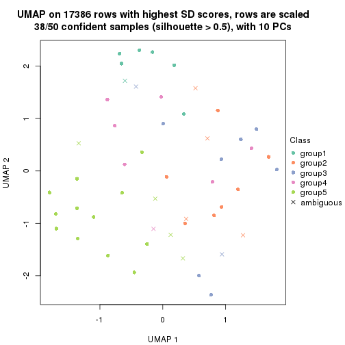
dimension_reduction(res, k = 6, method = "UMAP")
Following heatmap shows how subgroups are split when increasing k:
collect_classes(res)
If matrix rows can be associated to genes, consider to use functional_enrichment(res,
...) to perform function enrichment for the signature genes. See this vignette for more detailed explanations.
The object with results only for a single top-value method and a single partition method can be extracted as:
res = res_list["CV", "hclust"]
# you can also extract it by
# res = res_list["CV:hclust"]
A summary of res and all the functions that can be applied to it:
res
#> A 'ConsensusPartition' object with k = 2, 3, 4, 5, 6.
#> On a matrix with 17386 rows and 50 columns.
#> Top rows (1000, 2000, 3000, 4000, 5000) are extracted by 'CV' method.
#> Subgroups are detected by 'hclust' method.
#> Performed in total 1250 partitions by row resampling.
#> Best k for subgroups seems to be 5.
#>
#> Following methods can be applied to this 'ConsensusPartition' object:
#> [1] "cola_report" "collect_classes" "collect_plots"
#> [4] "collect_stats" "colnames" "compare_signatures"
#> [7] "consensus_heatmap" "dimension_reduction" "functional_enrichment"
#> [10] "get_anno_col" "get_anno" "get_classes"
#> [13] "get_consensus" "get_matrix" "get_membership"
#> [16] "get_param" "get_signatures" "get_stats"
#> [19] "is_best_k" "is_stable_k" "membership_heatmap"
#> [22] "ncol" "nrow" "plot_ecdf"
#> [25] "rownames" "select_partition_number" "show"
#> [28] "suggest_best_k" "test_to_known_factors"
collect_plots() function collects all the plots made from res for all k (number of partitions)
into one single page to provide an easy and fast comparison between different k.
collect_plots(res)
The plots are:
k and the heatmap of
predicted classes for each k.k.k.k.All the plots in panels can be made by individual functions and they are plotted later in this section.
select_partition_number() produces several plots showing different
statistics for choosing “optimized” k. There are following statistics:
k;k, the area increased is defined as \(A_k - A_{k-1}\).The detailed explanations of these statistics can be found in the cola vignette.
Generally speaking, lower PAC score, higher mean silhouette score or higher
concordance corresponds to better partition. Rand index and Jaccard index
measure how similar the current partition is compared to partition with k-1.
If they are too similar, we won't accept k is better than k-1.
select_partition_number(res)
The numeric values for all these statistics can be obtained by get_stats().
get_stats(res)
#> k 1-PAC mean_silhouette concordance area_increased Rand Jaccard
#> 2 2 0.537 0.832 0.921 0.2958 0.726 0.726
#> 3 3 0.510 0.793 0.894 0.3087 0.988 0.983
#> 4 4 0.370 0.540 0.789 0.5082 0.657 0.533
#> 5 5 0.444 0.590 0.773 0.1123 0.910 0.790
#> 6 6 0.423 0.542 0.729 0.0656 0.947 0.865
suggest_best_k() suggests the best \(k\) based on these statistics. The rules are as follows:
suggest_best_k(res)
#> [1] 5
Following shows the table of the partitions (You need to click the show/hide
code output link to see it). The membership matrix (columns with name p*)
is inferred by
clue::cl_consensus()
function with the SE method. Basically the value in the membership matrix
represents the probability to belong to a certain group. The finall class
label for an item is determined with the group with highest probability it
belongs to.
In get_classes() function, the entropy is calculated from the membership
matrix and the silhouette score is calculated from the consensus matrix.
cbind(get_classes(res, k = 2), get_membership(res, k = 2))
#> class entropy silhouette p1 p2
#> SRR2305538 2 0.0000 0.920 0.000 1.000
#> SRR2305506 2 0.5178 0.818 0.116 0.884
#> SRR2305537 2 0.2423 0.889 0.040 0.960
#> SRR2305476 2 0.0000 0.920 0.000 1.000
#> SRR2305508 1 0.0000 0.768 1.000 0.000
#> SRR2305521 2 0.0000 0.920 0.000 1.000
#> SRR2305486 2 0.0000 0.920 0.000 1.000
#> SRR2305503 2 0.0000 0.920 0.000 1.000
#> SRR2305519 1 0.8813 0.769 0.700 0.300
#> SRR2305515 2 0.0000 0.920 0.000 1.000
#> SRR2305528 2 0.5629 0.797 0.132 0.868
#> SRR2305518 2 0.0000 0.920 0.000 1.000
#> SRR2305527 2 0.0000 0.920 0.000 1.000
#> SRR2305498 2 0.9580 0.231 0.380 0.620
#> SRR2305488 2 0.0000 0.920 0.000 1.000
#> SRR2305512 2 0.4161 0.850 0.084 0.916
#> SRR2305474 2 0.8386 0.566 0.268 0.732
#> SRR2305495 2 0.0000 0.920 0.000 1.000
#> SRR2305536 2 0.0000 0.920 0.000 1.000
#> SRR2305525 2 0.0000 0.920 0.000 1.000
#> SRR2305494 1 0.8267 0.798 0.740 0.260
#> SRR2305532 2 0.0000 0.920 0.000 1.000
#> SRR2305500 2 0.8267 0.582 0.260 0.740
#> SRR2305509 2 0.0000 0.920 0.000 1.000
#> SRR2305501 2 0.4815 0.831 0.104 0.896
#> SRR2305524 2 0.7219 0.701 0.200 0.800
#> SRR2305491 1 0.8661 0.786 0.712 0.288
#> SRR2305489 2 0.0000 0.920 0.000 1.000
#> SRR2305516 2 0.0000 0.920 0.000 1.000
#> SRR2305507 2 0.0000 0.920 0.000 1.000
#> SRR2305497 1 0.8713 0.782 0.708 0.292
#> SRR2305482 2 0.0000 0.920 0.000 1.000
#> SRR2305485 1 0.0000 0.768 1.000 0.000
#> SRR2305472 2 0.0000 0.920 0.000 1.000
#> SRR2305513 1 0.0000 0.768 1.000 0.000
#> SRR2305540 2 0.9460 0.366 0.364 0.636
#> SRR2305522 2 0.0000 0.920 0.000 1.000
#> SRR2305520 2 0.0672 0.915 0.008 0.992
#> SRR2305533 2 0.0376 0.918 0.004 0.996
#> SRR2305534 2 0.0000 0.920 0.000 1.000
#> SRR2305517 2 0.0000 0.920 0.000 1.000
#> SRR2305504 2 0.5178 0.818 0.116 0.884
#> SRR2305511 2 0.0000 0.920 0.000 1.000
#> SRR2305492 1 0.8207 0.802 0.744 0.256
#> SRR2305514 2 0.0000 0.920 0.000 1.000
#> SRR2305531 2 0.0000 0.920 0.000 1.000
#> SRR2305535 2 0.0000 0.920 0.000 1.000
#> SRR2305477 2 0.0000 0.920 0.000 1.000
#> SRR2305480 2 0.8763 0.501 0.296 0.704
#> SRR2305529 2 0.7219 0.701 0.200 0.800
cbind(get_classes(res, k = 3), get_membership(res, k = 3))
#> class entropy silhouette p1 p2 p3
#> SRR2305538 2 0.3752 0.7966 0.000 0.856 0.144
#> SRR2305506 2 0.5961 0.7315 0.076 0.788 0.136
#> SRR2305537 2 0.3482 0.7954 0.000 0.872 0.128
#> SRR2305476 2 0.1163 0.8685 0.000 0.972 0.028
#> SRR2305508 1 0.0000 1.0000 1.000 0.000 0.000
#> SRR2305521 2 0.2356 0.8500 0.000 0.928 0.072
#> SRR2305486 2 0.1031 0.8694 0.000 0.976 0.024
#> SRR2305503 2 0.0592 0.8715 0.000 0.988 0.012
#> SRR2305519 3 0.3551 0.9212 0.000 0.132 0.868
#> SRR2305515 2 0.2448 0.8508 0.000 0.924 0.076
#> SRR2305528 2 0.4178 0.7587 0.000 0.828 0.172
#> SRR2305518 2 0.0237 0.8723 0.000 0.996 0.004
#> SRR2305527 2 0.0000 0.8725 0.000 1.000 0.000
#> SRR2305498 2 0.6305 0.0241 0.000 0.516 0.484
#> SRR2305488 2 0.1031 0.8694 0.000 0.976 0.024
#> SRR2305512 2 0.3879 0.7889 0.000 0.848 0.152
#> SRR2305474 2 0.5968 0.4375 0.000 0.636 0.364
#> SRR2305495 2 0.1529 0.8674 0.000 0.960 0.040
#> SRR2305536 2 0.0747 0.8712 0.000 0.984 0.016
#> SRR2305525 2 0.0237 0.8723 0.000 0.996 0.004
#> SRR2305494 3 0.2384 0.7538 0.008 0.056 0.936
#> SRR2305532 2 0.0000 0.8725 0.000 1.000 0.000
#> SRR2305500 2 0.5926 0.4544 0.000 0.644 0.356
#> SRR2305509 2 0.0237 0.8723 0.000 0.996 0.004
#> SRR2305501 2 0.6208 0.7251 0.076 0.772 0.152
#> SRR2305524 2 0.5968 0.4646 0.000 0.636 0.364
#> SRR2305491 3 0.3896 0.9267 0.008 0.128 0.864
#> SRR2305489 2 0.0000 0.8725 0.000 1.000 0.000
#> SRR2305516 2 0.0000 0.8725 0.000 1.000 0.000
#> SRR2305507 2 0.1411 0.8646 0.000 0.964 0.036
#> SRR2305497 3 0.3965 0.9263 0.008 0.132 0.860
#> SRR2305482 2 0.2878 0.8294 0.000 0.904 0.096
#> SRR2305485 1 0.0000 1.0000 1.000 0.000 0.000
#> SRR2305472 2 0.1643 0.8555 0.000 0.956 0.044
#> SRR2305513 1 0.0000 1.0000 1.000 0.000 0.000
#> SRR2305540 2 0.7214 0.4871 0.324 0.632 0.044
#> SRR2305522 2 0.0000 0.8725 0.000 1.000 0.000
#> SRR2305520 2 0.2711 0.8387 0.000 0.912 0.088
#> SRR2305533 2 0.3816 0.7930 0.000 0.852 0.148
#> SRR2305534 2 0.0000 0.8725 0.000 1.000 0.000
#> SRR2305517 2 0.0237 0.8724 0.000 0.996 0.004
#> SRR2305504 2 0.5897 0.7334 0.076 0.792 0.132
#> SRR2305511 2 0.0000 0.8725 0.000 1.000 0.000
#> SRR2305492 3 0.4960 0.9086 0.040 0.128 0.832
#> SRR2305514 2 0.0237 0.8723 0.000 0.996 0.004
#> SRR2305531 2 0.0000 0.8725 0.000 1.000 0.000
#> SRR2305535 2 0.0000 0.8725 0.000 1.000 0.000
#> SRR2305477 2 0.0592 0.8715 0.000 0.988 0.012
#> SRR2305480 2 0.6111 0.3521 0.000 0.604 0.396
#> SRR2305529 2 0.5968 0.4646 0.000 0.636 0.364
cbind(get_classes(res, k = 4), get_membership(res, k = 4))
#> class entropy silhouette p1 p2 p3 p4
#> SRR2305538 1 0.7159 0.28586 0.552 0.188 0.260 0.000
#> SRR2305506 1 0.3306 0.55850 0.840 0.156 0.000 0.004
#> SRR2305537 2 0.4103 0.43582 0.256 0.744 0.000 0.000
#> SRR2305476 2 0.4737 0.62047 0.252 0.728 0.020 0.000
#> SRR2305508 4 0.0000 1.00000 0.000 0.000 0.000 1.000
#> SRR2305521 1 0.5452 0.18380 0.556 0.428 0.016 0.000
#> SRR2305486 2 0.3790 0.71490 0.164 0.820 0.016 0.000
#> SRR2305503 2 0.3088 0.73501 0.128 0.864 0.008 0.000
#> SRR2305519 3 0.0779 0.50863 0.016 0.004 0.980 0.000
#> SRR2305515 2 0.5220 0.43335 0.352 0.632 0.016 0.000
#> SRR2305528 2 0.5883 0.54112 0.128 0.700 0.172 0.000
#> SRR2305518 2 0.1716 0.76474 0.064 0.936 0.000 0.000
#> SRR2305527 2 0.0469 0.76324 0.012 0.988 0.000 0.000
#> SRR2305498 3 0.7442 0.12837 0.184 0.340 0.476 0.000
#> SRR2305488 2 0.4364 0.66296 0.220 0.764 0.016 0.000
#> SRR2305512 2 0.7175 0.09466 0.360 0.496 0.144 0.000
#> SRR2305474 3 0.7896 -0.00648 0.292 0.352 0.356 0.000
#> SRR2305495 2 0.4936 0.50018 0.340 0.652 0.008 0.000
#> SRR2305536 2 0.3324 0.73446 0.136 0.852 0.012 0.000
#> SRR2305525 2 0.1792 0.76386 0.068 0.932 0.000 0.000
#> SRR2305494 3 0.3402 0.41045 0.164 0.004 0.832 0.000
#> SRR2305532 2 0.0469 0.76324 0.012 0.988 0.000 0.000
#> SRR2305500 2 0.7892 -0.26765 0.292 0.368 0.340 0.000
#> SRR2305509 2 0.1867 0.76324 0.072 0.928 0.000 0.000
#> SRR2305501 1 0.4466 0.55503 0.800 0.156 0.040 0.004
#> SRR2305524 3 0.7371 0.03485 0.360 0.168 0.472 0.000
#> SRR2305491 3 0.0188 0.50186 0.000 0.004 0.996 0.000
#> SRR2305489 2 0.0817 0.75305 0.024 0.976 0.000 0.000
#> SRR2305516 2 0.0707 0.75513 0.020 0.980 0.000 0.000
#> SRR2305507 2 0.4939 0.61216 0.220 0.740 0.040 0.000
#> SRR2305497 3 0.0672 0.50824 0.008 0.008 0.984 0.000
#> SRR2305482 2 0.4072 0.50332 0.252 0.748 0.000 0.000
#> SRR2305485 4 0.0000 1.00000 0.000 0.000 0.000 1.000
#> SRR2305472 2 0.2081 0.71124 0.084 0.916 0.000 0.000
#> SRR2305513 4 0.0000 1.00000 0.000 0.000 0.000 1.000
#> SRR2305540 1 0.5279 0.27338 0.704 0.044 0.000 0.252
#> SRR2305522 2 0.0921 0.76637 0.028 0.972 0.000 0.000
#> SRR2305520 2 0.5989 0.47696 0.264 0.656 0.080 0.000
#> SRR2305533 1 0.7180 0.28065 0.548 0.188 0.264 0.000
#> SRR2305534 2 0.0592 0.76249 0.016 0.984 0.000 0.000
#> SRR2305517 2 0.1389 0.76558 0.048 0.952 0.000 0.000
#> SRR2305504 1 0.4920 0.41159 0.628 0.368 0.000 0.004
#> SRR2305511 2 0.0707 0.75513 0.020 0.980 0.000 0.000
#> SRR2305492 3 0.1109 0.47265 0.028 0.000 0.968 0.004
#> SRR2305514 2 0.1389 0.76799 0.048 0.952 0.000 0.000
#> SRR2305531 2 0.0707 0.75513 0.020 0.980 0.000 0.000
#> SRR2305535 2 0.0817 0.75305 0.024 0.976 0.000 0.000
#> SRR2305477 2 0.4220 0.63791 0.248 0.748 0.004 0.000
#> SRR2305480 3 0.7838 0.06313 0.280 0.316 0.404 0.000
#> SRR2305529 3 0.7371 0.03485 0.360 0.168 0.472 0.000
cbind(get_classes(res, k = 5), get_membership(res, k = 5))
#> class entropy silhouette p1 p2 p3 p4 p5
#> SRR2305538 1 0.0865 0.385 0.972 0.024 0.000 0.000 0.004
#> SRR2305506 2 0.3365 0.602 0.044 0.836 0.000 0.000 0.120
#> SRR2305537 5 0.3963 0.430 0.004 0.256 0.008 0.000 0.732
#> SRR2305476 5 0.5140 0.553 0.296 0.056 0.004 0.000 0.644
#> SRR2305508 4 0.0000 1.000 0.000 0.000 0.000 1.000 0.000
#> SRR2305521 2 0.6208 0.318 0.116 0.512 0.008 0.000 0.364
#> SRR2305486 5 0.4085 0.698 0.208 0.028 0.004 0.000 0.760
#> SRR2305503 5 0.3692 0.723 0.136 0.052 0.000 0.000 0.812
#> SRR2305519 3 0.3424 0.717 0.240 0.000 0.760 0.000 0.000
#> SRR2305515 5 0.6487 0.371 0.268 0.192 0.008 0.000 0.532
#> SRR2305528 5 0.5814 0.509 0.196 0.016 0.136 0.000 0.652
#> SRR2305518 5 0.1830 0.772 0.068 0.008 0.000 0.000 0.924
#> SRR2305527 5 0.0451 0.771 0.008 0.004 0.000 0.000 0.988
#> SRR2305498 3 0.7512 -0.460 0.332 0.048 0.404 0.000 0.216
#> SRR2305488 5 0.4405 0.619 0.280 0.020 0.004 0.000 0.696
#> SRR2305512 1 0.7086 0.241 0.464 0.064 0.108 0.000 0.364
#> SRR2305474 1 0.7383 0.482 0.460 0.048 0.280 0.000 0.212
#> SRR2305495 5 0.5793 0.362 0.364 0.100 0.000 0.000 0.536
#> SRR2305536 5 0.3252 0.743 0.156 0.008 0.008 0.000 0.828
#> SRR2305525 5 0.1894 0.772 0.072 0.008 0.000 0.000 0.920
#> SRR2305494 3 0.1830 0.597 0.068 0.008 0.924 0.000 0.000
#> SRR2305532 5 0.0451 0.771 0.008 0.004 0.000 0.000 0.988
#> SRR2305500 1 0.7418 0.481 0.456 0.048 0.268 0.000 0.228
#> SRR2305509 5 0.2068 0.770 0.092 0.004 0.000 0.000 0.904
#> SRR2305501 2 0.6414 0.567 0.084 0.644 0.152 0.000 0.120
#> SRR2305524 1 0.4470 0.317 0.720 0.008 0.244 0.000 0.028
#> SRR2305491 3 0.3305 0.722 0.224 0.000 0.776 0.000 0.000
#> SRR2305489 5 0.1041 0.757 0.004 0.032 0.000 0.000 0.964
#> SRR2305516 5 0.0703 0.764 0.000 0.024 0.000 0.000 0.976
#> SRR2305507 5 0.5268 0.486 0.312 0.052 0.008 0.000 0.628
#> SRR2305497 3 0.3452 0.714 0.244 0.000 0.756 0.000 0.000
#> SRR2305482 5 0.5191 0.498 0.100 0.192 0.008 0.000 0.700
#> SRR2305485 4 0.0000 1.000 0.000 0.000 0.000 1.000 0.000
#> SRR2305472 5 0.2237 0.711 0.004 0.084 0.008 0.000 0.904
#> SRR2305513 4 0.0000 1.000 0.000 0.000 0.000 1.000 0.000
#> SRR2305540 2 0.4573 0.179 0.020 0.728 0.000 0.228 0.024
#> SRR2305522 5 0.0703 0.774 0.024 0.000 0.000 0.000 0.976
#> SRR2305520 5 0.5793 0.222 0.404 0.056 0.016 0.000 0.524
#> SRR2305533 1 0.1026 0.385 0.968 0.024 0.004 0.000 0.004
#> SRR2305534 5 0.0451 0.769 0.008 0.004 0.000 0.000 0.988
#> SRR2305517 5 0.1444 0.774 0.040 0.012 0.000 0.000 0.948
#> SRR2305504 2 0.4473 0.529 0.020 0.656 0.000 0.000 0.324
#> SRR2305511 5 0.0703 0.764 0.000 0.024 0.000 0.000 0.976
#> SRR2305492 3 0.3224 0.691 0.160 0.016 0.824 0.000 0.000
#> SRR2305514 5 0.1740 0.776 0.056 0.012 0.000 0.000 0.932
#> SRR2305531 5 0.0703 0.764 0.000 0.024 0.000 0.000 0.976
#> SRR2305535 5 0.1041 0.757 0.004 0.032 0.000 0.000 0.964
#> SRR2305477 5 0.4465 0.584 0.304 0.024 0.000 0.000 0.672
#> SRR2305480 1 0.7145 0.448 0.468 0.036 0.312 0.000 0.184
#> SRR2305529 1 0.4470 0.317 0.720 0.008 0.244 0.000 0.028
cbind(get_classes(res, k = 6), get_membership(res, k = 6))
#> class entropy silhouette p1 p2 p3 p4 p5 p6
#> SRR2305538 6 0.0291 0.6861 NA 0.000 0.004 0.000 0.000 0.992
#> SRR2305506 2 0.3767 0.5993 NA 0.788 0.000 0.000 0.128 0.004
#> SRR2305537 5 0.5696 0.1687 NA 0.220 0.000 0.000 0.524 0.000
#> SRR2305476 5 0.5402 0.5481 NA 0.000 0.024 0.000 0.612 0.096
#> SRR2305508 4 0.0000 1.0000 NA 0.000 0.000 1.000 0.000 0.000
#> SRR2305521 2 0.6256 0.2678 NA 0.460 0.012 0.000 0.360 0.012
#> SRR2305486 5 0.4390 0.6593 NA 0.000 0.020 0.000 0.740 0.068
#> SRR2305503 5 0.3250 0.6457 NA 0.000 0.012 0.000 0.788 0.004
#> SRR2305519 3 0.0363 0.4040 NA 0.000 0.988 0.000 0.000 0.000
#> SRR2305515 5 0.6929 0.3594 NA 0.136 0.016 0.000 0.524 0.100
#> SRR2305528 5 0.5777 0.4953 NA 0.004 0.172 0.000 0.640 0.056
#> SRR2305518 5 0.1674 0.7004 NA 0.000 0.004 0.000 0.924 0.004
#> SRR2305527 5 0.1007 0.6938 NA 0.000 0.000 0.000 0.956 0.000
#> SRR2305498 3 0.6832 0.3020 NA 0.000 0.476 0.000 0.192 0.084
#> SRR2305488 5 0.4982 0.6209 NA 0.000 0.020 0.000 0.688 0.120
#> SRR2305512 5 0.7701 0.0111 NA 0.008 0.144 0.000 0.328 0.228
#> SRR2305474 3 0.7577 0.2699 NA 0.000 0.356 0.000 0.208 0.204
#> SRR2305495 5 0.6596 0.4428 NA 0.044 0.012 0.000 0.516 0.168
#> SRR2305536 5 0.3504 0.6883 NA 0.000 0.016 0.000 0.820 0.052
#> SRR2305525 5 0.1732 0.6998 NA 0.000 0.004 0.000 0.920 0.004
#> SRR2305494 3 0.3298 0.3122 NA 0.008 0.756 0.000 0.000 0.000
#> SRR2305532 5 0.1007 0.6938 NA 0.000 0.000 0.000 0.956 0.000
#> SRR2305500 3 0.7618 0.2614 NA 0.000 0.340 0.000 0.220 0.204
#> SRR2305509 5 0.2113 0.6992 NA 0.000 0.004 0.000 0.896 0.008
#> SRR2305501 2 0.5290 0.5609 NA 0.596 0.000 0.000 0.128 0.004
#> SRR2305524 6 0.5478 0.6158 NA 0.004 0.312 0.000 0.016 0.580
#> SRR2305491 3 0.0146 0.4036 NA 0.000 0.996 0.000 0.000 0.000
#> SRR2305489 5 0.3101 0.5904 NA 0.000 0.000 0.000 0.756 0.000
#> SRR2305516 5 0.1501 0.6830 NA 0.000 0.000 0.000 0.924 0.000
#> SRR2305507 5 0.5719 0.5069 NA 0.000 0.040 0.000 0.608 0.120
#> SRR2305497 3 0.0458 0.4046 NA 0.000 0.984 0.000 0.000 0.000
#> SRR2305482 5 0.6469 0.2908 NA 0.164 0.004 0.000 0.540 0.060
#> SRR2305485 4 0.0000 1.0000 NA 0.000 0.000 1.000 0.000 0.000
#> SRR2305472 5 0.4204 0.5197 NA 0.052 0.000 0.000 0.696 0.000
#> SRR2305513 4 0.0000 1.0000 NA 0.000 0.000 1.000 0.000 0.000
#> SRR2305540 2 0.3489 0.2086 NA 0.800 0.000 0.164 0.008 0.004
#> SRR2305522 5 0.0458 0.6993 NA 0.000 0.000 0.000 0.984 0.000
#> SRR2305520 5 0.6506 0.3787 NA 0.000 0.080 0.000 0.504 0.124
#> SRR2305533 6 0.0260 0.6888 NA 0.000 0.008 0.000 0.000 0.992
#> SRR2305534 5 0.2178 0.6628 NA 0.000 0.000 0.000 0.868 0.000
#> SRR2305517 5 0.2163 0.6973 NA 0.000 0.000 0.000 0.892 0.016
#> SRR2305504 2 0.5458 0.5113 NA 0.588 0.000 0.000 0.236 0.004
#> SRR2305511 5 0.1327 0.6859 NA 0.000 0.000 0.000 0.936 0.000
#> SRR2305492 3 0.3466 0.2578 NA 0.008 0.760 0.000 0.000 0.008
#> SRR2305514 5 0.1787 0.7060 NA 0.000 0.004 0.000 0.920 0.008
#> SRR2305531 5 0.1267 0.6869 NA 0.000 0.000 0.000 0.940 0.000
#> SRR2305535 5 0.3101 0.5904 NA 0.000 0.000 0.000 0.756 0.000
#> SRR2305477 5 0.5131 0.6025 NA 0.004 0.008 0.000 0.664 0.140
#> SRR2305480 3 0.7418 0.2804 NA 0.000 0.404 0.000 0.192 0.204
#> SRR2305529 6 0.5478 0.6158 NA 0.004 0.312 0.000 0.016 0.580
Heatmaps for the consensus matrix. It visualizes the probability of two samples to be in a same group.
consensus_heatmap(res, k = 2)
consensus_heatmap(res, k = 3)
consensus_heatmap(res, k = 4)
consensus_heatmap(res, k = 5)
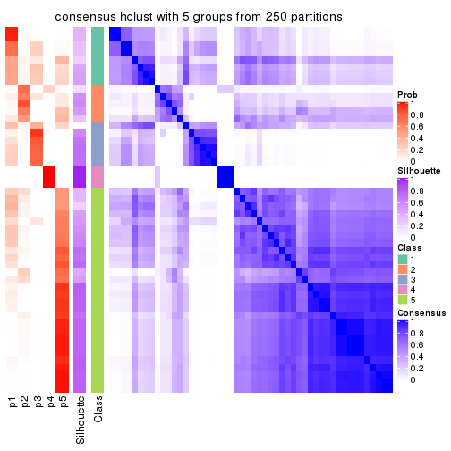
consensus_heatmap(res, k = 6)
Heatmaps for the membership of samples in all partitions to see how consistent they are:
membership_heatmap(res, k = 2)
membership_heatmap(res, k = 3)
membership_heatmap(res, k = 4)
membership_heatmap(res, k = 5)
membership_heatmap(res, k = 6)
As soon as we have had the classes for columns, we can look for signatures which are significantly different between classes which can be candidate marks for certain classes. Following are the heatmaps for signatures.
Signature heatmaps where rows are scaled:
get_signatures(res, k = 2)
get_signatures(res, k = 3)
get_signatures(res, k = 4)
get_signatures(res, k = 5)
get_signatures(res, k = 6)
Signature heatmaps where rows are not scaled:
get_signatures(res, k = 2, scale_rows = FALSE)
get_signatures(res, k = 3, scale_rows = FALSE)
get_signatures(res, k = 4, scale_rows = FALSE)
get_signatures(res, k = 5, scale_rows = FALSE)
get_signatures(res, k = 6, scale_rows = FALSE)
Compare the overlap of signatures from different k:
compare_signatures(res)
get_signature() returns a data frame invisibly. TO get the list of signatures, the function
call should be assigned to a variable explicitly. In following code, if plot argument is set
to FALSE, no heatmap is plotted while only the differential analysis is performed.
# code only for demonstration
tb = get_signature(res, k = ..., plot = FALSE)
An example of the output of tb is:
#> which_row fdr mean_1 mean_2 scaled_mean_1 scaled_mean_2 km
#> 1 38 0.042760348 8.373488 9.131774 -0.5533452 0.5164555 1
#> 2 40 0.018707592 7.106213 8.469186 -0.6173731 0.5762149 1
#> 3 55 0.019134737 10.221463 11.207825 -0.6159697 0.5749050 1
#> 4 59 0.006059896 5.921854 7.869574 -0.6899429 0.6439467 1
#> 5 60 0.018055526 8.928898 10.211722 -0.6204761 0.5791110 1
#> 6 98 0.009384629 15.714769 14.887706 0.6635654 -0.6193277 2
...
The columns in tb are:
which_row: row indices corresponding to the input matrix.fdr: FDR for the differential test. mean_x: The mean value in group x.scaled_mean_x: The mean value in group x after rows are scaled.km: Row groups if k-means clustering is applied to rows.UMAP plot which shows how samples are separated.
dimension_reduction(res, k = 2, method = "UMAP")
dimension_reduction(res, k = 3, method = "UMAP")
dimension_reduction(res, k = 4, method = "UMAP")
dimension_reduction(res, k = 5, method = "UMAP")
dimension_reduction(res, k = 6, method = "UMAP")
Following heatmap shows how subgroups are split when increasing k:
collect_classes(res)
If matrix rows can be associated to genes, consider to use functional_enrichment(res,
...) to perform function enrichment for the signature genes. See this vignette for more detailed explanations.
The object with results only for a single top-value method and a single partition method can be extracted as:
res = res_list["CV", "kmeans"]
# you can also extract it by
# res = res_list["CV:kmeans"]
A summary of res and all the functions that can be applied to it:
res
#> A 'ConsensusPartition' object with k = 2, 3, 4, 5, 6.
#> On a matrix with 17386 rows and 50 columns.
#> Top rows (1000, 2000, 3000, 4000, 5000) are extracted by 'CV' method.
#> Subgroups are detected by 'kmeans' method.
#> Performed in total 1250 partitions by row resampling.
#> Best k for subgroups seems to be 3.
#>
#> Following methods can be applied to this 'ConsensusPartition' object:
#> [1] "cola_report" "collect_classes" "collect_plots"
#> [4] "collect_stats" "colnames" "compare_signatures"
#> [7] "consensus_heatmap" "dimension_reduction" "functional_enrichment"
#> [10] "get_anno_col" "get_anno" "get_classes"
#> [13] "get_consensus" "get_matrix" "get_membership"
#> [16] "get_param" "get_signatures" "get_stats"
#> [19] "is_best_k" "is_stable_k" "membership_heatmap"
#> [22] "ncol" "nrow" "plot_ecdf"
#> [25] "rownames" "select_partition_number" "show"
#> [28] "suggest_best_k" "test_to_known_factors"
collect_plots() function collects all the plots made from res for all k (number of partitions)
into one single page to provide an easy and fast comparison between different k.
collect_plots(res)
The plots are:
k and the heatmap of
predicted classes for each k.k.k.k.All the plots in panels can be made by individual functions and they are plotted later in this section.
select_partition_number() produces several plots showing different
statistics for choosing “optimized” k. There are following statistics:
k;k, the area increased is defined as \(A_k - A_{k-1}\).The detailed explanations of these statistics can be found in the cola vignette.
Generally speaking, lower PAC score, higher mean silhouette score or higher
concordance corresponds to better partition. Rand index and Jaccard index
measure how similar the current partition is compared to partition with k-1.
If they are too similar, we won't accept k is better than k-1.
select_partition_number(res)
The numeric values for all these statistics can be obtained by get_stats().
get_stats(res)
#> k 1-PAC mean_silhouette concordance area_increased Rand Jaccard
#> 2 2 0.567 0.495 0.822 0.3789 0.754 0.754
#> 3 3 0.573 0.810 0.881 0.4468 0.598 0.506
#> 4 4 0.561 0.688 0.812 0.2161 0.830 0.657
#> 5 5 0.618 0.623 0.752 0.1136 0.891 0.701
#> 6 6 0.636 0.493 0.686 0.0687 0.858 0.530
suggest_best_k() suggests the best \(k\) based on these statistics. The rules are as follows:
suggest_best_k(res)
#> [1] 3
Following shows the table of the partitions (You need to click the show/hide
code output link to see it). The membership matrix (columns with name p*)
is inferred by
clue::cl_consensus()
function with the SE method. Basically the value in the membership matrix
represents the probability to belong to a certain group. The finall class
label for an item is determined with the group with highest probability it
belongs to.
In get_classes() function, the entropy is calculated from the membership
matrix and the silhouette score is calculated from the consensus matrix.
cbind(get_classes(res, k = 2), get_membership(res, k = 2))
#> class entropy silhouette p1 p2
#> SRR2305538 2 0.9998 0.759 0.492 0.508
#> SRR2305506 1 0.7674 -0.397 0.776 0.224
#> SRR2305537 2 0.9998 0.759 0.492 0.508
#> SRR2305476 2 0.9998 0.759 0.492 0.508
#> SRR2305508 1 0.9998 0.692 0.508 0.492
#> SRR2305521 2 0.9998 0.759 0.492 0.508
#> SRR2305486 2 0.9998 0.759 0.492 0.508
#> SRR2305503 2 0.9998 0.759 0.492 0.508
#> SRR2305519 2 0.7602 -0.332 0.220 0.780
#> SRR2305515 2 0.9998 0.759 0.492 0.508
#> SRR2305528 2 0.9998 0.759 0.492 0.508
#> SRR2305518 2 0.9998 0.759 0.492 0.508
#> SRR2305527 2 0.9998 0.759 0.492 0.508
#> SRR2305498 2 0.0000 0.137 0.000 1.000
#> SRR2305488 2 0.9998 0.759 0.492 0.508
#> SRR2305512 2 0.5059 0.320 0.112 0.888
#> SRR2305474 2 0.1414 0.176 0.020 0.980
#> SRR2305495 2 0.9998 0.759 0.492 0.508
#> SRR2305536 2 0.9998 0.759 0.492 0.508
#> SRR2305525 2 0.9998 0.759 0.492 0.508
#> SRR2305494 1 1.0000 0.689 0.504 0.496
#> SRR2305532 2 0.9998 0.759 0.492 0.508
#> SRR2305500 2 0.8861 0.571 0.304 0.696
#> SRR2305509 2 0.9998 0.759 0.492 0.508
#> SRR2305501 2 0.9954 -0.688 0.460 0.540
#> SRR2305524 2 0.1414 0.176 0.020 0.980
#> SRR2305491 2 0.7602 -0.332 0.220 0.780
#> SRR2305489 2 0.9998 0.759 0.492 0.508
#> SRR2305516 2 0.9998 0.759 0.492 0.508
#> SRR2305507 2 0.9998 0.759 0.492 0.508
#> SRR2305497 2 0.6148 -0.209 0.152 0.848
#> SRR2305482 2 0.9998 0.759 0.492 0.508
#> SRR2305485 1 0.9998 0.692 0.508 0.492
#> SRR2305472 2 0.9998 0.759 0.492 0.508
#> SRR2305513 1 0.9998 0.692 0.508 0.492
#> SRR2305540 1 0.9998 0.692 0.508 0.492
#> SRR2305522 2 0.9998 0.759 0.492 0.508
#> SRR2305520 2 0.9998 0.759 0.492 0.508
#> SRR2305533 2 0.7602 -0.332 0.220 0.780
#> SRR2305534 2 0.9998 0.759 0.492 0.508
#> SRR2305517 2 0.9998 0.759 0.492 0.508
#> SRR2305504 1 0.8267 -0.452 0.740 0.260
#> SRR2305511 2 0.9998 0.759 0.492 0.508
#> SRR2305492 2 0.8499 -0.428 0.276 0.724
#> SRR2305514 2 0.9998 0.759 0.492 0.508
#> SRR2305531 2 0.9998 0.759 0.492 0.508
#> SRR2305535 2 0.9998 0.759 0.492 0.508
#> SRR2305477 2 0.9998 0.759 0.492 0.508
#> SRR2305480 2 0.0938 0.161 0.012 0.988
#> SRR2305529 2 0.0000 0.137 0.000 1.000
cbind(get_classes(res, k = 3), get_membership(res, k = 3))
#> class entropy silhouette p1 p2 p3
#> SRR2305538 2 0.5688 0.733 0.044 0.788 0.168
#> SRR2305506 2 0.8694 0.537 0.268 0.580 0.152
#> SRR2305537 2 0.4556 0.816 0.080 0.860 0.060
#> SRR2305476 2 0.3267 0.872 0.000 0.884 0.116
#> SRR2305508 1 0.2625 0.976 0.916 0.000 0.084
#> SRR2305521 2 0.5692 0.823 0.040 0.784 0.176
#> SRR2305486 2 0.2261 0.893 0.000 0.932 0.068
#> SRR2305503 2 0.2625 0.887 0.000 0.916 0.084
#> SRR2305519 3 0.4146 0.796 0.080 0.044 0.876
#> SRR2305515 2 0.4840 0.844 0.016 0.816 0.168
#> SRR2305528 2 0.6140 0.317 0.000 0.596 0.404
#> SRR2305518 2 0.2356 0.892 0.000 0.928 0.072
#> SRR2305527 2 0.0237 0.889 0.000 0.996 0.004
#> SRR2305498 3 0.2261 0.824 0.000 0.068 0.932
#> SRR2305488 2 0.2261 0.893 0.000 0.932 0.068
#> SRR2305512 3 0.2496 0.824 0.004 0.068 0.928
#> SRR2305474 3 0.2959 0.806 0.000 0.100 0.900
#> SRR2305495 2 0.3340 0.870 0.000 0.880 0.120
#> SRR2305536 2 0.2356 0.892 0.000 0.928 0.072
#> SRR2305525 2 0.2356 0.892 0.000 0.928 0.072
#> SRR2305494 3 0.2796 0.730 0.092 0.000 0.908
#> SRR2305532 2 0.0237 0.889 0.000 0.996 0.004
#> SRR2305500 3 0.5058 0.647 0.000 0.244 0.756
#> SRR2305509 2 0.2711 0.886 0.000 0.912 0.088
#> SRR2305501 3 0.7979 0.322 0.272 0.100 0.628
#> SRR2305524 3 0.2356 0.823 0.000 0.072 0.928
#> SRR2305491 3 0.4146 0.796 0.080 0.044 0.876
#> SRR2305489 2 0.1878 0.875 0.044 0.952 0.004
#> SRR2305516 2 0.0237 0.888 0.004 0.996 0.000
#> SRR2305507 2 0.2711 0.886 0.000 0.912 0.088
#> SRR2305497 3 0.4146 0.796 0.080 0.044 0.876
#> SRR2305482 2 0.5174 0.807 0.076 0.832 0.092
#> SRR2305485 1 0.2625 0.976 0.916 0.000 0.084
#> SRR2305472 2 0.1643 0.874 0.044 0.956 0.000
#> SRR2305513 1 0.2625 0.976 0.916 0.000 0.084
#> SRR2305540 1 0.2866 0.929 0.916 0.008 0.076
#> SRR2305522 2 0.2165 0.893 0.000 0.936 0.064
#> SRR2305520 3 0.6192 0.293 0.000 0.420 0.580
#> SRR2305533 3 0.4146 0.796 0.080 0.044 0.876
#> SRR2305534 2 0.1878 0.875 0.044 0.952 0.004
#> SRR2305517 2 0.0000 0.889 0.000 1.000 0.000
#> SRR2305504 2 0.7970 0.497 0.300 0.612 0.088
#> SRR2305511 2 0.0000 0.889 0.000 1.000 0.000
#> SRR2305492 3 0.4289 0.784 0.092 0.040 0.868
#> SRR2305514 2 0.2261 0.893 0.000 0.932 0.068
#> SRR2305531 2 0.0000 0.889 0.000 1.000 0.000
#> SRR2305535 2 0.1878 0.875 0.044 0.952 0.004
#> SRR2305477 2 0.2261 0.893 0.000 0.932 0.068
#> SRR2305480 3 0.2625 0.817 0.000 0.084 0.916
#> SRR2305529 3 0.2261 0.824 0.000 0.068 0.932
cbind(get_classes(res, k = 4), get_membership(res, k = 4))
#> class entropy silhouette p1 p2 p3 p4
#> SRR2305538 2 0.7739 0.10770 0.356 0.440 0.200 0.004
#> SRR2305506 1 0.6510 0.66714 0.604 0.304 0.004 0.088
#> SRR2305537 1 0.4400 0.40682 0.744 0.248 0.004 0.004
#> SRR2305476 2 0.4877 0.55887 0.204 0.752 0.044 0.000
#> SRR2305508 4 0.0707 0.82426 0.000 0.000 0.020 0.980
#> SRR2305521 1 0.5441 0.67646 0.644 0.332 0.008 0.016
#> SRR2305486 2 0.1022 0.76360 0.032 0.968 0.000 0.000
#> SRR2305503 2 0.3351 0.66852 0.148 0.844 0.008 0.000
#> SRR2305519 3 0.1082 0.89148 0.004 0.004 0.972 0.020
#> SRR2305515 1 0.5386 0.66008 0.636 0.344 0.012 0.008
#> SRR2305528 2 0.4465 0.64079 0.144 0.800 0.056 0.000
#> SRR2305518 2 0.0672 0.76975 0.008 0.984 0.008 0.000
#> SRR2305527 2 0.1398 0.76472 0.040 0.956 0.004 0.000
#> SRR2305498 3 0.2443 0.88362 0.060 0.024 0.916 0.000
#> SRR2305488 2 0.2662 0.73256 0.084 0.900 0.016 0.000
#> SRR2305512 3 0.4692 0.77149 0.212 0.032 0.756 0.000
#> SRR2305474 3 0.3082 0.86725 0.084 0.032 0.884 0.000
#> SRR2305495 2 0.4136 0.60859 0.196 0.788 0.016 0.000
#> SRR2305536 2 0.1489 0.75679 0.044 0.952 0.004 0.000
#> SRR2305525 2 0.0804 0.76971 0.012 0.980 0.008 0.000
#> SRR2305494 3 0.3441 0.81038 0.120 0.000 0.856 0.024
#> SRR2305532 2 0.1902 0.75526 0.064 0.932 0.004 0.000
#> SRR2305500 3 0.5018 0.73085 0.088 0.144 0.768 0.000
#> SRR2305509 2 0.3142 0.68490 0.132 0.860 0.008 0.000
#> SRR2305501 1 0.7261 0.54903 0.652 0.176 0.084 0.088
#> SRR2305524 3 0.2256 0.88307 0.056 0.020 0.924 0.000
#> SRR2305491 3 0.1082 0.89148 0.004 0.004 0.972 0.020
#> SRR2305489 2 0.4634 0.55814 0.280 0.712 0.004 0.004
#> SRR2305516 2 0.3448 0.67203 0.168 0.828 0.000 0.004
#> SRR2305507 2 0.4212 0.58695 0.216 0.772 0.012 0.000
#> SRR2305497 3 0.1114 0.89240 0.004 0.008 0.972 0.016
#> SRR2305482 1 0.3760 0.46212 0.828 0.156 0.012 0.004
#> SRR2305485 4 0.0707 0.82426 0.000 0.000 0.020 0.980
#> SRR2305472 2 0.4560 0.53612 0.296 0.700 0.000 0.004
#> SRR2305513 4 0.0707 0.82426 0.000 0.000 0.020 0.980
#> SRR2305540 4 0.6922 0.11503 0.412 0.068 0.016 0.504
#> SRR2305522 2 0.0469 0.77007 0.012 0.988 0.000 0.000
#> SRR2305520 2 0.7408 -0.00987 0.212 0.512 0.276 0.000
#> SRR2305533 3 0.1930 0.87990 0.056 0.004 0.936 0.004
#> SRR2305534 2 0.4401 0.56681 0.272 0.724 0.004 0.000
#> SRR2305517 2 0.1118 0.76541 0.036 0.964 0.000 0.000
#> SRR2305504 1 0.5816 0.64651 0.688 0.224 0.000 0.088
#> SRR2305511 2 0.1211 0.76581 0.040 0.960 0.000 0.000
#> SRR2305492 3 0.1191 0.88957 0.004 0.004 0.968 0.024
#> SRR2305514 2 0.0188 0.76973 0.004 0.996 0.000 0.000
#> SRR2305531 2 0.1824 0.75542 0.060 0.936 0.000 0.004
#> SRR2305535 2 0.4762 0.53149 0.300 0.692 0.004 0.004
#> SRR2305477 2 0.0336 0.77073 0.000 0.992 0.008 0.000
#> SRR2305480 3 0.3082 0.86725 0.084 0.032 0.884 0.000
#> SRR2305529 3 0.2142 0.88387 0.056 0.016 0.928 0.000
cbind(get_classes(res, k = 5), get_membership(res, k = 5))
#> class entropy silhouette p1 p2 p3 p4 p5
#> SRR2305538 1 0.4139 0.3872 0.804 0.020 0.124 0.000 0.052
#> SRR2305506 2 0.2302 0.7765 0.008 0.904 0.000 0.008 0.080
#> SRR2305537 1 0.4953 0.1031 0.532 0.440 0.000 0.000 0.028
#> SRR2305476 5 0.3807 0.4456 0.028 0.176 0.004 0.000 0.792
#> SRR2305508 4 0.0000 1.0000 0.000 0.000 0.000 1.000 0.000
#> SRR2305521 2 0.3160 0.7367 0.004 0.808 0.000 0.000 0.188
#> SRR2305486 5 0.3750 0.6884 0.232 0.012 0.000 0.000 0.756
#> SRR2305503 5 0.5041 0.5628 0.132 0.148 0.004 0.000 0.716
#> SRR2305519 3 0.0566 0.7601 0.000 0.004 0.984 0.012 0.000
#> SRR2305515 2 0.4567 0.5639 0.012 0.628 0.004 0.000 0.356
#> SRR2305528 5 0.2507 0.5414 0.016 0.072 0.012 0.000 0.900
#> SRR2305518 5 0.3790 0.6895 0.272 0.000 0.004 0.000 0.724
#> SRR2305527 5 0.3999 0.6482 0.344 0.000 0.000 0.000 0.656
#> SRR2305498 3 0.3972 0.7359 0.012 0.020 0.780 0.000 0.188
#> SRR2305488 5 0.1216 0.5983 0.020 0.020 0.000 0.000 0.960
#> SRR2305512 3 0.6493 0.5998 0.036 0.108 0.560 0.000 0.296
#> SRR2305474 3 0.5202 0.6825 0.016 0.052 0.672 0.000 0.260
#> SRR2305495 5 0.2491 0.5572 0.036 0.068 0.000 0.000 0.896
#> SRR2305536 5 0.3563 0.6832 0.208 0.012 0.000 0.000 0.780
#> SRR2305525 5 0.3906 0.6844 0.292 0.000 0.004 0.000 0.704
#> SRR2305494 3 0.3774 0.6541 0.008 0.200 0.780 0.012 0.000
#> SRR2305532 5 0.4101 0.6167 0.372 0.000 0.000 0.000 0.628
#> SRR2305500 3 0.5318 0.6561 0.012 0.052 0.636 0.000 0.300
#> SRR2305509 5 0.3814 0.6308 0.116 0.064 0.004 0.000 0.816
#> SRR2305501 2 0.1314 0.7583 0.004 0.960 0.004 0.008 0.024
#> SRR2305524 3 0.4698 0.6893 0.168 0.064 0.752 0.000 0.016
#> SRR2305491 3 0.0566 0.7590 0.000 0.004 0.984 0.012 0.000
#> SRR2305489 1 0.3242 0.5378 0.784 0.000 0.000 0.000 0.216
#> SRR2305516 5 0.4350 0.5912 0.408 0.004 0.000 0.000 0.588
#> SRR2305507 5 0.3289 0.4441 0.008 0.172 0.004 0.000 0.816
#> SRR2305497 3 0.1074 0.7618 0.000 0.004 0.968 0.012 0.016
#> SRR2305482 1 0.5111 -0.0108 0.500 0.464 0.000 0.000 0.036
#> SRR2305485 4 0.0000 1.0000 0.000 0.000 0.000 1.000 0.000
#> SRR2305472 1 0.3123 0.5440 0.812 0.004 0.000 0.000 0.184
#> SRR2305513 4 0.0000 1.0000 0.000 0.000 0.000 1.000 0.000
#> SRR2305540 2 0.4086 0.4850 0.024 0.736 0.000 0.240 0.000
#> SRR2305522 5 0.3906 0.6844 0.292 0.000 0.004 0.000 0.704
#> SRR2305520 5 0.5577 0.1615 0.012 0.188 0.128 0.000 0.672
#> SRR2305533 3 0.4836 0.6822 0.164 0.072 0.748 0.004 0.012
#> SRR2305534 1 0.3857 0.3374 0.688 0.000 0.000 0.000 0.312
#> SRR2305517 5 0.4211 0.6523 0.360 0.004 0.000 0.000 0.636
#> SRR2305504 2 0.2661 0.7605 0.052 0.896 0.000 0.008 0.044
#> SRR2305511 5 0.4264 0.6371 0.376 0.004 0.000 0.000 0.620
#> SRR2305492 3 0.0693 0.7579 0.000 0.008 0.980 0.012 0.000
#> SRR2305514 5 0.4009 0.6823 0.312 0.004 0.000 0.000 0.684
#> SRR2305531 5 0.4321 0.6107 0.396 0.004 0.000 0.000 0.600
#> SRR2305535 1 0.3366 0.5438 0.784 0.004 0.000 0.000 0.212
#> SRR2305477 5 0.4067 0.6860 0.300 0.008 0.000 0.000 0.692
#> SRR2305480 3 0.5226 0.6823 0.016 0.052 0.668 0.000 0.264
#> SRR2305529 3 0.4660 0.6922 0.164 0.064 0.756 0.000 0.016
cbind(get_classes(res, k = 6), get_membership(res, k = 6))
#> class entropy silhouette p1 p2 p3 p4 p5 p6
#> SRR2305538 1 0.2402 0.3228 0.904 0.032 0.040 0.004 0.020 0.000
#> SRR2305506 6 0.2070 0.7575 0.000 0.100 0.000 0.000 0.008 0.892
#> SRR2305537 1 0.5390 0.2620 0.452 0.004 0.000 0.000 0.096 0.448
#> SRR2305476 2 0.5046 0.5955 0.076 0.648 0.000 0.000 0.256 0.020
#> SRR2305508 4 0.0146 0.9986 0.000 0.000 0.000 0.996 0.000 0.004
#> SRR2305521 6 0.4922 0.2936 0.044 0.444 0.000 0.000 0.008 0.504
#> SRR2305486 5 0.4685 0.1199 0.040 0.388 0.000 0.000 0.568 0.004
#> SRR2305503 2 0.4301 0.4850 0.004 0.580 0.000 0.000 0.400 0.016
#> SRR2305519 3 0.0260 0.6711 0.000 0.008 0.992 0.000 0.000 0.000
#> SRR2305515 2 0.5007 0.0109 0.044 0.604 0.000 0.000 0.024 0.328
#> SRR2305528 2 0.3486 0.6044 0.024 0.788 0.008 0.000 0.180 0.000
#> SRR2305518 5 0.3999 0.5308 0.032 0.272 0.000 0.000 0.696 0.000
#> SRR2305527 5 0.2163 0.7015 0.016 0.092 0.000 0.000 0.892 0.000
#> SRR2305498 3 0.3457 0.6320 0.016 0.232 0.752 0.000 0.000 0.000
#> SRR2305488 2 0.5325 0.4055 0.080 0.544 0.000 0.000 0.364 0.012
#> SRR2305512 2 0.5907 -0.1306 0.152 0.532 0.300 0.000 0.004 0.012
#> SRR2305474 3 0.4276 0.4675 0.020 0.416 0.564 0.000 0.000 0.000
#> SRR2305495 5 0.5492 -0.3392 0.088 0.424 0.000 0.000 0.476 0.012
#> SRR2305536 2 0.4664 0.0734 0.032 0.484 0.000 0.000 0.480 0.004
#> SRR2305525 5 0.3221 0.6547 0.020 0.188 0.000 0.000 0.792 0.000
#> SRR2305494 3 0.3208 0.6142 0.044 0.024 0.848 0.000 0.000 0.084
#> SRR2305532 5 0.2066 0.6983 0.024 0.072 0.000 0.000 0.904 0.000
#> SRR2305500 3 0.4337 0.3779 0.020 0.480 0.500 0.000 0.000 0.000
#> SRR2305509 2 0.4368 0.4156 0.016 0.592 0.000 0.000 0.384 0.008
#> SRR2305501 6 0.2843 0.7492 0.036 0.116 0.000 0.000 0.000 0.848
#> SRR2305524 3 0.6625 0.4652 0.352 0.116 0.456 0.004 0.000 0.072
#> SRR2305491 3 0.0146 0.6697 0.004 0.000 0.996 0.000 0.000 0.000
#> SRR2305489 1 0.5015 0.2618 0.504 0.072 0.000 0.000 0.424 0.000
#> SRR2305516 5 0.0547 0.7035 0.020 0.000 0.000 0.000 0.980 0.000
#> SRR2305507 2 0.3288 0.6305 0.000 0.800 0.008 0.000 0.176 0.016
#> SRR2305497 3 0.0692 0.6712 0.004 0.020 0.976 0.000 0.000 0.000
#> SRR2305482 1 0.4939 0.2346 0.532 0.004 0.000 0.000 0.056 0.408
#> SRR2305485 4 0.0146 0.9986 0.000 0.000 0.000 0.996 0.000 0.004
#> SRR2305472 5 0.4089 -0.3627 0.468 0.000 0.000 0.000 0.524 0.008
#> SRR2305513 4 0.0291 0.9973 0.000 0.004 0.000 0.992 0.000 0.004
#> SRR2305540 6 0.3121 0.5427 0.008 0.020 0.000 0.148 0.000 0.824
#> SRR2305522 5 0.2631 0.6826 0.008 0.152 0.000 0.000 0.840 0.000
#> SRR2305520 2 0.3497 0.5714 0.000 0.824 0.064 0.000 0.096 0.016
#> SRR2305533 3 0.6680 0.4555 0.364 0.116 0.440 0.004 0.000 0.076
#> SRR2305534 5 0.4974 0.0950 0.324 0.088 0.000 0.000 0.588 0.000
#> SRR2305517 5 0.0858 0.7049 0.004 0.028 0.000 0.000 0.968 0.000
#> SRR2305504 6 0.1845 0.7465 0.008 0.072 0.000 0.000 0.004 0.916
#> SRR2305511 5 0.0363 0.7061 0.012 0.000 0.000 0.000 0.988 0.000
#> SRR2305492 3 0.0964 0.6623 0.012 0.016 0.968 0.000 0.000 0.004
#> SRR2305514 5 0.1663 0.6820 0.000 0.088 0.000 0.000 0.912 0.000
#> SRR2305531 5 0.0458 0.7051 0.016 0.000 0.000 0.000 0.984 0.000
#> SRR2305535 1 0.5222 0.3005 0.516 0.072 0.000 0.000 0.404 0.008
#> SRR2305477 5 0.3474 0.6263 0.056 0.112 0.000 0.000 0.820 0.012
#> SRR2305480 3 0.4569 0.4719 0.040 0.396 0.564 0.000 0.000 0.000
#> SRR2305529 3 0.6613 0.4669 0.352 0.120 0.456 0.004 0.000 0.068
Heatmaps for the consensus matrix. It visualizes the probability of two samples to be in a same group.
consensus_heatmap(res, k = 2)
consensus_heatmap(res, k = 3)
consensus_heatmap(res, k = 4)
consensus_heatmap(res, k = 5)
consensus_heatmap(res, k = 6)
Heatmaps for the membership of samples in all partitions to see how consistent they are:
membership_heatmap(res, k = 2)
membership_heatmap(res, k = 3)
membership_heatmap(res, k = 4)
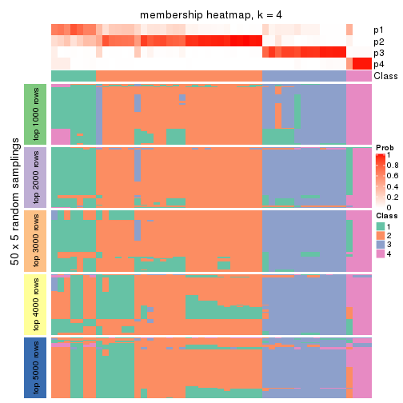
membership_heatmap(res, k = 5)
membership_heatmap(res, k = 6)
As soon as we have had the classes for columns, we can look for signatures which are significantly different between classes which can be candidate marks for certain classes. Following are the heatmaps for signatures.
Signature heatmaps where rows are scaled:
get_signatures(res, k = 2)
get_signatures(res, k = 3)
get_signatures(res, k = 4)
get_signatures(res, k = 5)
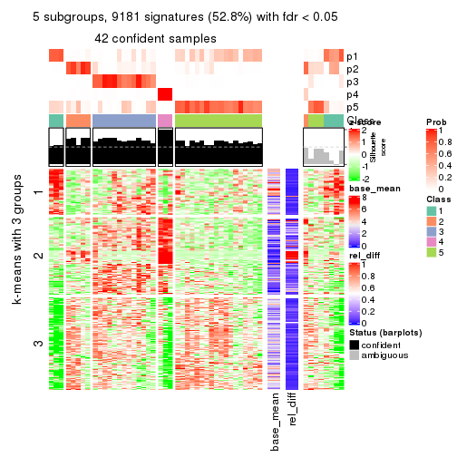
get_signatures(res, k = 6)
Signature heatmaps where rows are not scaled:
get_signatures(res, k = 2, scale_rows = FALSE)
get_signatures(res, k = 3, scale_rows = FALSE)
get_signatures(res, k = 4, scale_rows = FALSE)
get_signatures(res, k = 5, scale_rows = FALSE)
get_signatures(res, k = 6, scale_rows = FALSE)
Compare the overlap of signatures from different k:
compare_signatures(res)
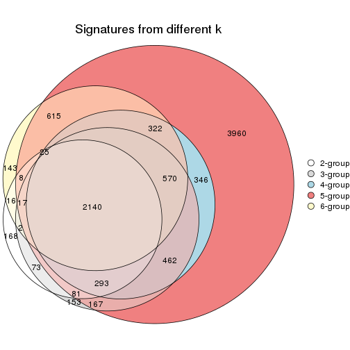
get_signature() returns a data frame invisibly. TO get the list of signatures, the function
call should be assigned to a variable explicitly. In following code, if plot argument is set
to FALSE, no heatmap is plotted while only the differential analysis is performed.
# code only for demonstration
tb = get_signature(res, k = ..., plot = FALSE)
An example of the output of tb is:
#> which_row fdr mean_1 mean_2 scaled_mean_1 scaled_mean_2 km
#> 1 38 0.042760348 8.373488 9.131774 -0.5533452 0.5164555 1
#> 2 40 0.018707592 7.106213 8.469186 -0.6173731 0.5762149 1
#> 3 55 0.019134737 10.221463 11.207825 -0.6159697 0.5749050 1
#> 4 59 0.006059896 5.921854 7.869574 -0.6899429 0.6439467 1
#> 5 60 0.018055526 8.928898 10.211722 -0.6204761 0.5791110 1
#> 6 98 0.009384629 15.714769 14.887706 0.6635654 -0.6193277 2
...
The columns in tb are:
which_row: row indices corresponding to the input matrix.fdr: FDR for the differential test. mean_x: The mean value in group x.scaled_mean_x: The mean value in group x after rows are scaled.km: Row groups if k-means clustering is applied to rows.UMAP plot which shows how samples are separated.
dimension_reduction(res, k = 2, method = "UMAP")
dimension_reduction(res, k = 3, method = "UMAP")
dimension_reduction(res, k = 4, method = "UMAP")
dimension_reduction(res, k = 5, method = "UMAP")
dimension_reduction(res, k = 6, method = "UMAP")
Following heatmap shows how subgroups are split when increasing k:
collect_classes(res)
If matrix rows can be associated to genes, consider to use functional_enrichment(res,
...) to perform function enrichment for the signature genes. See this vignette for more detailed explanations.
The object with results only for a single top-value method and a single partition method can be extracted as:
res = res_list["CV", "skmeans"]
# you can also extract it by
# res = res_list["CV:skmeans"]
A summary of res and all the functions that can be applied to it:
res
#> A 'ConsensusPartition' object with k = 2, 3, 4, 5, 6.
#> On a matrix with 17386 rows and 50 columns.
#> Top rows (1000, 2000, 3000, 4000, 5000) are extracted by 'CV' method.
#> Subgroups are detected by 'skmeans' method.
#> Performed in total 1250 partitions by row resampling.
#> Best k for subgroups seems to be 2.
#>
#> Following methods can be applied to this 'ConsensusPartition' object:
#> [1] "cola_report" "collect_classes" "collect_plots"
#> [4] "collect_stats" "colnames" "compare_signatures"
#> [7] "consensus_heatmap" "dimension_reduction" "functional_enrichment"
#> [10] "get_anno_col" "get_anno" "get_classes"
#> [13] "get_consensus" "get_matrix" "get_membership"
#> [16] "get_param" "get_signatures" "get_stats"
#> [19] "is_best_k" "is_stable_k" "membership_heatmap"
#> [22] "ncol" "nrow" "plot_ecdf"
#> [25] "rownames" "select_partition_number" "show"
#> [28] "suggest_best_k" "test_to_known_factors"
collect_plots() function collects all the plots made from res for all k (number of partitions)
into one single page to provide an easy and fast comparison between different k.
collect_plots(res)
The plots are:
k and the heatmap of
predicted classes for each k.k.k.k.All the plots in panels can be made by individual functions and they are plotted later in this section.
select_partition_number() produces several plots showing different
statistics for choosing “optimized” k. There are following statistics:
k;k, the area increased is defined as \(A_k - A_{k-1}\).The detailed explanations of these statistics can be found in the cola vignette.
Generally speaking, lower PAC score, higher mean silhouette score or higher
concordance corresponds to better partition. Rand index and Jaccard index
measure how similar the current partition is compared to partition with k-1.
If they are too similar, we won't accept k is better than k-1.
select_partition_number(res)
The numeric values for all these statistics can be obtained by get_stats().
get_stats(res)
#> k 1-PAC mean_silhouette concordance area_increased Rand Jaccard
#> 2 2 0.693 0.804 0.923 0.4944 0.497 0.497
#> 3 3 0.682 0.802 0.897 0.3018 0.821 0.657
#> 4 4 0.618 0.531 0.753 0.1395 0.898 0.741
#> 5 5 0.586 0.494 0.710 0.0692 0.866 0.601
#> 6 6 0.592 0.403 0.653 0.0456 0.926 0.696
suggest_best_k() suggests the best \(k\) based on these statistics. The rules are as follows:
suggest_best_k(res)
#> [1] 2
Following shows the table of the partitions (You need to click the show/hide
code output link to see it). The membership matrix (columns with name p*)
is inferred by
clue::cl_consensus()
function with the SE method. Basically the value in the membership matrix
represents the probability to belong to a certain group. The finall class
label for an item is determined with the group with highest probability it
belongs to.
In get_classes() function, the entropy is calculated from the membership
matrix and the silhouette score is calculated from the consensus matrix.
cbind(get_classes(res, k = 2), get_membership(res, k = 2))
#> class entropy silhouette p1 p2
#> SRR2305538 2 0.0000 0.944 0.000 1.000
#> SRR2305506 1 0.9710 0.334 0.600 0.400
#> SRR2305537 2 0.7219 0.703 0.200 0.800
#> SRR2305476 2 0.0000 0.944 0.000 1.000
#> SRR2305508 1 0.0000 0.858 1.000 0.000
#> SRR2305521 1 0.9795 0.295 0.584 0.416
#> SRR2305486 2 0.0000 0.944 0.000 1.000
#> SRR2305503 2 0.0000 0.944 0.000 1.000
#> SRR2305519 1 0.0000 0.858 1.000 0.000
#> SRR2305515 1 0.9833 0.273 0.576 0.424
#> SRR2305528 2 0.9710 0.173 0.400 0.600
#> SRR2305518 2 0.0000 0.944 0.000 1.000
#> SRR2305527 2 0.0000 0.944 0.000 1.000
#> SRR2305498 1 0.0000 0.858 1.000 0.000
#> SRR2305488 2 0.0000 0.944 0.000 1.000
#> SRR2305512 1 0.0000 0.858 1.000 0.000
#> SRR2305474 1 0.7219 0.715 0.800 0.200
#> SRR2305495 2 0.0672 0.936 0.008 0.992
#> SRR2305536 2 0.0000 0.944 0.000 1.000
#> SRR2305525 2 0.0000 0.944 0.000 1.000
#> SRR2305494 1 0.0000 0.858 1.000 0.000
#> SRR2305532 2 0.0000 0.944 0.000 1.000
#> SRR2305500 1 0.9710 0.395 0.600 0.400
#> SRR2305509 2 0.0000 0.944 0.000 1.000
#> SRR2305501 1 0.0000 0.858 1.000 0.000
#> SRR2305524 1 0.2778 0.841 0.952 0.048
#> SRR2305491 1 0.0000 0.858 1.000 0.000
#> SRR2305489 2 0.0000 0.944 0.000 1.000
#> SRR2305516 2 0.0000 0.944 0.000 1.000
#> SRR2305507 2 0.0000 0.944 0.000 1.000
#> SRR2305497 1 0.2778 0.841 0.952 0.048
#> SRR2305482 2 0.7219 0.703 0.200 0.800
#> SRR2305485 1 0.0000 0.858 1.000 0.000
#> SRR2305472 2 0.0000 0.944 0.000 1.000
#> SRR2305513 1 0.0000 0.858 1.000 0.000
#> SRR2305540 1 0.0000 0.858 1.000 0.000
#> SRR2305522 2 0.0000 0.944 0.000 1.000
#> SRR2305520 1 0.9896 0.298 0.560 0.440
#> SRR2305533 1 0.0000 0.858 1.000 0.000
#> SRR2305534 2 0.0000 0.944 0.000 1.000
#> SRR2305517 2 0.0000 0.944 0.000 1.000
#> SRR2305504 2 0.9896 0.136 0.440 0.560
#> SRR2305511 2 0.0000 0.944 0.000 1.000
#> SRR2305492 1 0.0000 0.858 1.000 0.000
#> SRR2305514 2 0.0000 0.944 0.000 1.000
#> SRR2305531 2 0.0000 0.944 0.000 1.000
#> SRR2305535 2 0.0000 0.944 0.000 1.000
#> SRR2305477 2 0.0000 0.944 0.000 1.000
#> SRR2305480 1 0.7219 0.715 0.800 0.200
#> SRR2305529 1 0.2778 0.841 0.952 0.048
cbind(get_classes(res, k = 3), get_membership(res, k = 3))
#> class entropy silhouette p1 p2 p3
#> SRR2305538 2 0.5406 0.720 0.020 0.780 0.200
#> SRR2305506 1 0.1129 0.816 0.976 0.020 0.004
#> SRR2305537 2 0.5859 0.435 0.344 0.656 0.000
#> SRR2305476 2 0.6144 0.765 0.088 0.780 0.132
#> SRR2305508 1 0.4399 0.811 0.812 0.000 0.188
#> SRR2305521 1 0.0892 0.814 0.980 0.020 0.000
#> SRR2305486 2 0.0892 0.901 0.020 0.980 0.000
#> SRR2305503 2 0.4121 0.829 0.168 0.832 0.000
#> SRR2305519 3 0.0000 0.887 0.000 0.000 1.000
#> SRR2305515 1 0.1031 0.812 0.976 0.024 0.000
#> SRR2305528 3 0.8691 0.250 0.116 0.356 0.528
#> SRR2305518 2 0.2625 0.884 0.084 0.916 0.000
#> SRR2305527 2 0.2261 0.891 0.068 0.932 0.000
#> SRR2305498 3 0.0000 0.887 0.000 0.000 1.000
#> SRR2305488 2 0.1031 0.896 0.024 0.976 0.000
#> SRR2305512 3 0.2200 0.844 0.056 0.004 0.940
#> SRR2305474 3 0.0000 0.887 0.000 0.000 1.000
#> SRR2305495 2 0.5111 0.756 0.168 0.808 0.024
#> SRR2305536 2 0.2356 0.894 0.072 0.928 0.000
#> SRR2305525 2 0.2625 0.884 0.084 0.916 0.000
#> SRR2305494 3 0.6267 -0.048 0.452 0.000 0.548
#> SRR2305532 2 0.1529 0.899 0.040 0.960 0.000
#> SRR2305500 3 0.2356 0.823 0.000 0.072 0.928
#> SRR2305509 2 0.4692 0.820 0.168 0.820 0.012
#> SRR2305501 1 0.3267 0.826 0.884 0.000 0.116
#> SRR2305524 3 0.0000 0.887 0.000 0.000 1.000
#> SRR2305491 3 0.0000 0.887 0.000 0.000 1.000
#> SRR2305489 2 0.0892 0.895 0.020 0.980 0.000
#> SRR2305516 2 0.0237 0.899 0.004 0.996 0.000
#> SRR2305507 2 0.8683 0.506 0.172 0.592 0.236
#> SRR2305497 3 0.0000 0.887 0.000 0.000 1.000
#> SRR2305482 1 0.6026 0.408 0.624 0.376 0.000
#> SRR2305485 1 0.4399 0.811 0.812 0.000 0.188
#> SRR2305472 2 0.0892 0.895 0.020 0.980 0.000
#> SRR2305513 1 0.4399 0.811 0.812 0.000 0.188
#> SRR2305540 1 0.4399 0.811 0.812 0.000 0.188
#> SRR2305522 2 0.2537 0.887 0.080 0.920 0.000
#> SRR2305520 3 0.5791 0.689 0.168 0.048 0.784
#> SRR2305533 3 0.0237 0.885 0.004 0.000 0.996
#> SRR2305534 2 0.0892 0.895 0.020 0.980 0.000
#> SRR2305517 2 0.0237 0.899 0.004 0.996 0.000
#> SRR2305504 1 0.2796 0.798 0.908 0.092 0.000
#> SRR2305511 2 0.1163 0.900 0.028 0.972 0.000
#> SRR2305492 3 0.0000 0.887 0.000 0.000 1.000
#> SRR2305514 2 0.1289 0.900 0.032 0.968 0.000
#> SRR2305531 2 0.1163 0.900 0.028 0.972 0.000
#> SRR2305535 2 0.0892 0.895 0.020 0.980 0.000
#> SRR2305477 2 0.0747 0.896 0.016 0.984 0.000
#> SRR2305480 3 0.0000 0.887 0.000 0.000 1.000
#> SRR2305529 3 0.0000 0.887 0.000 0.000 1.000
cbind(get_classes(res, k = 4), get_membership(res, k = 4))
#> class entropy silhouette p1 p2 p3 p4
#> SRR2305538 1 0.6254 0.4591 0.624 0.300 0.072 0.004
#> SRR2305506 4 0.1004 0.7697 0.024 0.004 0.000 0.972
#> SRR2305537 1 0.7883 0.3682 0.376 0.336 0.000 0.288
#> SRR2305476 1 0.4744 0.3105 0.704 0.284 0.000 0.012
#> SRR2305508 4 0.1637 0.7763 0.000 0.000 0.060 0.940
#> SRR2305521 4 0.3205 0.7159 0.104 0.024 0.000 0.872
#> SRR2305486 2 0.3219 0.5522 0.164 0.836 0.000 0.000
#> SRR2305503 2 0.5460 0.3725 0.340 0.632 0.000 0.028
#> SRR2305519 3 0.0188 0.8683 0.004 0.000 0.996 0.000
#> SRR2305515 4 0.6859 0.4304 0.240 0.136 0.008 0.616
#> SRR2305528 2 0.8102 0.0134 0.268 0.400 0.324 0.008
#> SRR2305518 2 0.2530 0.5745 0.112 0.888 0.000 0.000
#> SRR2305527 2 0.1940 0.5876 0.076 0.924 0.000 0.000
#> SRR2305498 3 0.0336 0.8680 0.008 0.000 0.992 0.000
#> SRR2305488 2 0.5220 0.0664 0.424 0.568 0.008 0.000
#> SRR2305512 3 0.5594 0.7196 0.164 0.000 0.724 0.112
#> SRR2305474 3 0.1637 0.8538 0.060 0.000 0.940 0.000
#> SRR2305495 2 0.8023 -0.0454 0.304 0.516 0.044 0.136
#> SRR2305536 2 0.3688 0.5352 0.208 0.792 0.000 0.000
#> SRR2305525 2 0.2589 0.5715 0.116 0.884 0.000 0.000
#> SRR2305494 4 0.4996 0.0221 0.000 0.000 0.484 0.516
#> SRR2305532 2 0.1118 0.5879 0.036 0.964 0.000 0.000
#> SRR2305500 3 0.3037 0.8227 0.076 0.036 0.888 0.000
#> SRR2305509 2 0.4982 0.4165 0.276 0.704 0.004 0.016
#> SRR2305501 4 0.0376 0.7752 0.004 0.000 0.004 0.992
#> SRR2305524 3 0.3808 0.8028 0.176 0.000 0.812 0.012
#> SRR2305491 3 0.0336 0.8681 0.008 0.000 0.992 0.000
#> SRR2305489 2 0.4661 0.2349 0.348 0.652 0.000 0.000
#> SRR2305516 2 0.3726 0.4783 0.212 0.788 0.000 0.000
#> SRR2305507 2 0.8356 0.0563 0.352 0.424 0.192 0.032
#> SRR2305497 3 0.0336 0.8681 0.008 0.000 0.992 0.000
#> SRR2305482 4 0.7626 -0.4157 0.384 0.204 0.000 0.412
#> SRR2305485 4 0.1716 0.7742 0.000 0.000 0.064 0.936
#> SRR2305472 2 0.4830 0.1477 0.392 0.608 0.000 0.000
#> SRR2305513 4 0.1557 0.7775 0.000 0.000 0.056 0.944
#> SRR2305540 4 0.0921 0.7794 0.000 0.000 0.028 0.972
#> SRR2305522 2 0.2469 0.5736 0.108 0.892 0.000 0.000
#> SRR2305520 3 0.7634 0.4001 0.300 0.108 0.552 0.040
#> SRR2305533 3 0.5421 0.7402 0.200 0.000 0.724 0.076
#> SRR2305534 2 0.4522 0.2905 0.320 0.680 0.000 0.000
#> SRR2305517 2 0.3172 0.5311 0.160 0.840 0.000 0.000
#> SRR2305504 4 0.1824 0.7601 0.060 0.004 0.000 0.936
#> SRR2305511 2 0.2408 0.5725 0.104 0.896 0.000 0.000
#> SRR2305492 3 0.1211 0.8625 0.040 0.000 0.960 0.000
#> SRR2305514 2 0.1867 0.5881 0.072 0.928 0.000 0.000
#> SRR2305531 2 0.2345 0.5737 0.100 0.900 0.000 0.000
#> SRR2305535 2 0.4761 0.1781 0.372 0.628 0.000 0.000
#> SRR2305477 2 0.3942 0.4569 0.236 0.764 0.000 0.000
#> SRR2305480 3 0.1557 0.8556 0.056 0.000 0.944 0.000
#> SRR2305529 3 0.3311 0.8103 0.172 0.000 0.828 0.000
cbind(get_classes(res, k = 5), get_membership(res, k = 5))
#> class entropy silhouette p1 p2 p3 p4 p5
#> SRR2305538 1 0.3237 0.4007 0.860 0.016 0.028 0.000 0.096
#> SRR2305506 4 0.3257 0.7739 0.028 0.124 0.000 0.844 0.004
#> SRR2305537 1 0.7736 0.4207 0.456 0.088 0.000 0.212 0.244
#> SRR2305476 1 0.7044 0.0873 0.420 0.360 0.008 0.008 0.204
#> SRR2305508 4 0.0703 0.8277 0.000 0.000 0.024 0.976 0.000
#> SRR2305521 4 0.5142 0.5559 0.032 0.296 0.000 0.652 0.020
#> SRR2305486 5 0.5125 0.5337 0.148 0.156 0.000 0.000 0.696
#> SRR2305503 2 0.5156 -0.1457 0.024 0.504 0.000 0.008 0.464
#> SRR2305519 3 0.1087 0.7866 0.016 0.008 0.968 0.008 0.000
#> SRR2305515 2 0.6236 -0.1264 0.028 0.532 0.008 0.376 0.056
#> SRR2305528 2 0.7808 0.2100 0.084 0.408 0.196 0.000 0.312
#> SRR2305518 5 0.3966 0.5932 0.072 0.132 0.000 0.000 0.796
#> SRR2305527 5 0.2735 0.6370 0.036 0.084 0.000 0.000 0.880
#> SRR2305498 3 0.0992 0.7824 0.000 0.024 0.968 0.008 0.000
#> SRR2305488 1 0.6759 0.1616 0.436 0.196 0.008 0.000 0.360
#> SRR2305512 3 0.6921 0.4527 0.280 0.044 0.528 0.148 0.000
#> SRR2305474 3 0.1965 0.7490 0.000 0.096 0.904 0.000 0.000
#> SRR2305495 5 0.8889 -0.1354 0.216 0.268 0.072 0.072 0.372
#> SRR2305536 5 0.5472 0.4804 0.140 0.208 0.000 0.000 0.652
#> SRR2305525 5 0.3317 0.6180 0.044 0.116 0.000 0.000 0.840
#> SRR2305494 4 0.4367 0.1860 0.004 0.000 0.416 0.580 0.000
#> SRR2305532 5 0.2491 0.6300 0.068 0.036 0.000 0.000 0.896
#> SRR2305500 3 0.4082 0.6663 0.024 0.160 0.792 0.000 0.024
#> SRR2305509 5 0.4965 0.0671 0.028 0.452 0.000 0.000 0.520
#> SRR2305501 4 0.1443 0.8202 0.004 0.044 0.004 0.948 0.000
#> SRR2305524 3 0.5866 0.6184 0.296 0.044 0.612 0.048 0.000
#> SRR2305491 3 0.1461 0.7852 0.028 0.004 0.952 0.016 0.000
#> SRR2305489 5 0.5393 -0.0593 0.440 0.056 0.000 0.000 0.504
#> SRR2305516 5 0.4372 0.5673 0.172 0.072 0.000 0.000 0.756
#> SRR2305507 2 0.5135 0.4088 0.000 0.696 0.100 0.004 0.200
#> SRR2305497 3 0.0404 0.7828 0.000 0.012 0.988 0.000 0.000
#> SRR2305482 1 0.6973 0.3697 0.540 0.084 0.000 0.280 0.096
#> SRR2305485 4 0.0703 0.8277 0.000 0.000 0.024 0.976 0.000
#> SRR2305472 1 0.6024 0.1721 0.472 0.116 0.000 0.000 0.412
#> SRR2305513 4 0.0703 0.8277 0.000 0.000 0.024 0.976 0.000
#> SRR2305540 4 0.0613 0.8271 0.008 0.004 0.004 0.984 0.000
#> SRR2305522 5 0.2625 0.6380 0.016 0.108 0.000 0.000 0.876
#> SRR2305520 2 0.5477 0.1049 0.016 0.556 0.396 0.004 0.028
#> SRR2305533 3 0.7001 0.4724 0.344 0.032 0.464 0.160 0.000
#> SRR2305534 5 0.4908 0.2480 0.320 0.044 0.000 0.000 0.636
#> SRR2305517 5 0.4158 0.5985 0.124 0.092 0.000 0.000 0.784
#> SRR2305504 4 0.3590 0.7673 0.080 0.092 0.000 0.828 0.000
#> SRR2305511 5 0.3704 0.6170 0.088 0.092 0.000 0.000 0.820
#> SRR2305492 3 0.1630 0.7837 0.036 0.004 0.944 0.016 0.000
#> SRR2305514 5 0.2491 0.6440 0.036 0.068 0.000 0.000 0.896
#> SRR2305531 5 0.3558 0.6267 0.108 0.064 0.000 0.000 0.828
#> SRR2305535 1 0.5524 0.1255 0.516 0.068 0.000 0.000 0.416
#> SRR2305477 5 0.4764 0.5379 0.140 0.128 0.000 0.000 0.732
#> SRR2305480 3 0.1544 0.7626 0.000 0.068 0.932 0.000 0.000
#> SRR2305529 3 0.5324 0.6311 0.304 0.040 0.636 0.020 0.000
cbind(get_classes(res, k = 6), get_membership(res, k = 6))
#> class entropy silhouette p1 p2 p3 p4 p5 p6
#> SRR2305538 1 0.5147 0.20004 0.504 0.016 0.008 0.004 0.024 0.444
#> SRR2305506 4 0.4472 0.68415 0.052 0.132 0.000 0.756 0.000 0.060
#> SRR2305537 1 0.6304 0.42276 0.600 0.028 0.000 0.184 0.148 0.040
#> SRR2305476 2 0.7951 0.05453 0.264 0.316 0.008 0.012 0.128 0.272
#> SRR2305508 4 0.1391 0.77555 0.000 0.000 0.040 0.944 0.000 0.016
#> SRR2305521 4 0.6155 0.42307 0.064 0.320 0.000 0.536 0.008 0.072
#> SRR2305486 5 0.6207 0.44051 0.212 0.160 0.000 0.000 0.568 0.060
#> SRR2305503 2 0.6285 0.00130 0.112 0.500 0.000 0.004 0.336 0.048
#> SRR2305519 3 0.1565 0.65470 0.004 0.028 0.940 0.000 0.000 0.028
#> SRR2305515 2 0.6511 -0.05218 0.048 0.540 0.012 0.308 0.024 0.068
#> SRR2305528 2 0.8451 0.18118 0.076 0.288 0.136 0.000 0.284 0.216
#> SRR2305518 5 0.4686 0.51068 0.072 0.084 0.000 0.000 0.748 0.096
#> SRR2305527 5 0.2466 0.57319 0.052 0.024 0.000 0.000 0.896 0.028
#> SRR2305498 3 0.1723 0.65980 0.000 0.036 0.928 0.000 0.000 0.036
#> SRR2305488 5 0.7390 -0.00202 0.312 0.136 0.000 0.004 0.380 0.168
#> SRR2305512 3 0.7632 -0.16353 0.152 0.040 0.464 0.132 0.000 0.212
#> SRR2305474 3 0.3297 0.62673 0.008 0.100 0.832 0.000 0.000 0.060
#> SRR2305495 1 0.9154 -0.07249 0.276 0.144 0.064 0.052 0.252 0.212
#> SRR2305536 5 0.6425 0.35583 0.180 0.240 0.000 0.000 0.524 0.056
#> SRR2305525 5 0.3926 0.54814 0.080 0.024 0.000 0.000 0.796 0.100
#> SRR2305494 4 0.4670 0.13584 0.000 0.012 0.380 0.580 0.000 0.028
#> SRR2305532 5 0.2009 0.57445 0.068 0.000 0.000 0.000 0.908 0.024
#> SRR2305500 3 0.5019 0.53099 0.024 0.128 0.732 0.000 0.032 0.084
#> SRR2305509 5 0.6768 -0.00213 0.084 0.380 0.004 0.000 0.416 0.116
#> SRR2305501 4 0.1793 0.76323 0.000 0.036 0.004 0.928 0.000 0.032
#> SRR2305524 6 0.4731 0.54142 0.004 0.004 0.476 0.028 0.000 0.488
#> SRR2305491 3 0.1493 0.63066 0.004 0.004 0.936 0.000 0.000 0.056
#> SRR2305489 1 0.4523 0.12092 0.556 0.012 0.000 0.000 0.416 0.016
#> SRR2305516 5 0.4677 0.46727 0.308 0.028 0.000 0.000 0.640 0.024
#> SRR2305507 2 0.4779 0.42893 0.012 0.728 0.092 0.000 0.152 0.016
#> SRR2305497 3 0.0909 0.66527 0.000 0.020 0.968 0.000 0.000 0.012
#> SRR2305482 1 0.5652 0.35824 0.648 0.036 0.000 0.228 0.044 0.044
#> SRR2305485 4 0.1391 0.77555 0.000 0.000 0.040 0.944 0.000 0.016
#> SRR2305472 1 0.3874 0.26439 0.704 0.012 0.000 0.000 0.276 0.008
#> SRR2305513 4 0.1391 0.77555 0.000 0.000 0.040 0.944 0.000 0.016
#> SRR2305540 4 0.1121 0.77406 0.008 0.004 0.008 0.964 0.000 0.016
#> SRR2305522 5 0.3607 0.58088 0.056 0.048 0.000 0.000 0.828 0.068
#> SRR2305520 2 0.5873 0.10015 0.024 0.544 0.348 0.004 0.016 0.064
#> SRR2305533 6 0.5764 0.62572 0.004 0.000 0.336 0.164 0.000 0.496
#> SRR2305534 5 0.4637 0.06220 0.408 0.008 0.000 0.000 0.556 0.028
#> SRR2305517 5 0.5311 0.51871 0.248 0.044 0.000 0.000 0.640 0.068
#> SRR2305504 4 0.5100 0.64937 0.144 0.080 0.000 0.712 0.004 0.060
#> SRR2305511 5 0.4947 0.54332 0.216 0.064 0.000 0.000 0.684 0.036
#> SRR2305492 3 0.1668 0.62185 0.000 0.008 0.928 0.004 0.000 0.060
#> SRR2305514 5 0.4424 0.58062 0.148 0.064 0.000 0.000 0.752 0.036
#> SRR2305531 5 0.4456 0.54752 0.208 0.048 0.000 0.000 0.720 0.024
#> SRR2305535 1 0.4797 0.27610 0.608 0.012 0.000 0.000 0.336 0.044
#> SRR2305477 5 0.6003 0.45444 0.236 0.044 0.000 0.004 0.588 0.128
#> SRR2305480 3 0.3510 0.61875 0.012 0.100 0.820 0.000 0.000 0.068
#> SRR2305529 3 0.4775 -0.65869 0.004 0.020 0.508 0.012 0.000 0.456
Heatmaps for the consensus matrix. It visualizes the probability of two samples to be in a same group.
consensus_heatmap(res, k = 2)
consensus_heatmap(res, k = 3)

consensus_heatmap(res, k = 4)
consensus_heatmap(res, k = 5)
consensus_heatmap(res, k = 6)
Heatmaps for the membership of samples in all partitions to see how consistent they are:
membership_heatmap(res, k = 2)
membership_heatmap(res, k = 3)
membership_heatmap(res, k = 4)
membership_heatmap(res, k = 5)
membership_heatmap(res, k = 6)
As soon as we have had the classes for columns, we can look for signatures which are significantly different between classes which can be candidate marks for certain classes. Following are the heatmaps for signatures.
Signature heatmaps where rows are scaled:
get_signatures(res, k = 2)
get_signatures(res, k = 3)
get_signatures(res, k = 4)
get_signatures(res, k = 5)
get_signatures(res, k = 6)
Signature heatmaps where rows are not scaled:
get_signatures(res, k = 2, scale_rows = FALSE)
get_signatures(res, k = 3, scale_rows = FALSE)
get_signatures(res, k = 4, scale_rows = FALSE)

get_signatures(res, k = 5, scale_rows = FALSE)
get_signatures(res, k = 6, scale_rows = FALSE)
Compare the overlap of signatures from different k:
compare_signatures(res)
get_signature() returns a data frame invisibly. TO get the list of signatures, the function
call should be assigned to a variable explicitly. In following code, if plot argument is set
to FALSE, no heatmap is plotted while only the differential analysis is performed.
# code only for demonstration
tb = get_signature(res, k = ..., plot = FALSE)
An example of the output of tb is:
#> which_row fdr mean_1 mean_2 scaled_mean_1 scaled_mean_2 km
#> 1 38 0.042760348 8.373488 9.131774 -0.5533452 0.5164555 1
#> 2 40 0.018707592 7.106213 8.469186 -0.6173731 0.5762149 1
#> 3 55 0.019134737 10.221463 11.207825 -0.6159697 0.5749050 1
#> 4 59 0.006059896 5.921854 7.869574 -0.6899429 0.6439467 1
#> 5 60 0.018055526 8.928898 10.211722 -0.6204761 0.5791110 1
#> 6 98 0.009384629 15.714769 14.887706 0.6635654 -0.6193277 2
...
The columns in tb are:
which_row: row indices corresponding to the input matrix.fdr: FDR for the differential test. mean_x: The mean value in group x.scaled_mean_x: The mean value in group x after rows are scaled.km: Row groups if k-means clustering is applied to rows.UMAP plot which shows how samples are separated.
dimension_reduction(res, k = 2, method = "UMAP")
dimension_reduction(res, k = 3, method = "UMAP")
dimension_reduction(res, k = 4, method = "UMAP")
dimension_reduction(res, k = 5, method = "UMAP")
dimension_reduction(res, k = 6, method = "UMAP")
Following heatmap shows how subgroups are split when increasing k:
collect_classes(res)
If matrix rows can be associated to genes, consider to use functional_enrichment(res,
...) to perform function enrichment for the signature genes. See this vignette for more detailed explanations.
The object with results only for a single top-value method and a single partition method can be extracted as:
res = res_list["CV", "pam"]
# you can also extract it by
# res = res_list["CV:pam"]
A summary of res and all the functions that can be applied to it:
res
#> A 'ConsensusPartition' object with k = 2, 3, 4, 5, 6.
#> On a matrix with 17386 rows and 50 columns.
#> Top rows (1000, 2000, 3000, 4000, 5000) are extracted by 'CV' method.
#> Subgroups are detected by 'pam' method.
#> Performed in total 1250 partitions by row resampling.
#> Best k for subgroups seems to be 5.
#>
#> Following methods can be applied to this 'ConsensusPartition' object:
#> [1] "cola_report" "collect_classes" "collect_plots"
#> [4] "collect_stats" "colnames" "compare_signatures"
#> [7] "consensus_heatmap" "dimension_reduction" "functional_enrichment"
#> [10] "get_anno_col" "get_anno" "get_classes"
#> [13] "get_consensus" "get_matrix" "get_membership"
#> [16] "get_param" "get_signatures" "get_stats"
#> [19] "is_best_k" "is_stable_k" "membership_heatmap"
#> [22] "ncol" "nrow" "plot_ecdf"
#> [25] "rownames" "select_partition_number" "show"
#> [28] "suggest_best_k" "test_to_known_factors"
collect_plots() function collects all the plots made from res for all k (number of partitions)
into one single page to provide an easy and fast comparison between different k.
collect_plots(res)
The plots are:
k and the heatmap of
predicted classes for each k.k.k.k.All the plots in panels can be made by individual functions and they are plotted later in this section.
select_partition_number() produces several plots showing different
statistics for choosing “optimized” k. There are following statistics:
k;k, the area increased is defined as \(A_k - A_{k-1}\).The detailed explanations of these statistics can be found in the cola vignette.
Generally speaking, lower PAC score, higher mean silhouette score or higher
concordance corresponds to better partition. Rand index and Jaccard index
measure how similar the current partition is compared to partition with k-1.
If they are too similar, we won't accept k is better than k-1.
select_partition_number(res)
The numeric values for all these statistics can be obtained by get_stats().
get_stats(res)
#> k 1-PAC mean_silhouette concordance area_increased Rand Jaccard
#> 2 2 0.578 0.866 0.940 0.2111 0.850 0.850
#> 3 3 0.351 0.720 0.816 1.7054 0.569 0.493
#> 4 4 0.635 0.580 0.834 0.1973 0.878 0.719
#> 5 5 0.636 0.782 0.851 0.1013 0.819 0.510
#> 6 6 0.722 0.829 0.885 0.0503 0.962 0.841
suggest_best_k() suggests the best \(k\) based on these statistics. The rules are as follows:
suggest_best_k(res)
#> [1] 5
Following shows the table of the partitions (You need to click the show/hide
code output link to see it). The membership matrix (columns with name p*)
is inferred by
clue::cl_consensus()
function with the SE method. Basically the value in the membership matrix
represents the probability to belong to a certain group. The finall class
label for an item is determined with the group with highest probability it
belongs to.
In get_classes() function, the entropy is calculated from the membership
matrix and the silhouette score is calculated from the consensus matrix.
cbind(get_classes(res, k = 2), get_membership(res, k = 2))
#> class entropy silhouette p1 p2
#> SRR2305538 2 0.0000 0.931 0.000 1.000
#> SRR2305506 2 0.6973 0.757 0.188 0.812
#> SRR2305537 2 0.6973 0.757 0.188 0.812
#> SRR2305476 2 0.0000 0.931 0.000 1.000
#> SRR2305508 1 0.0000 0.851 1.000 0.000
#> SRR2305521 2 0.5842 0.814 0.140 0.860
#> SRR2305486 2 0.0000 0.931 0.000 1.000
#> SRR2305503 2 0.0000 0.931 0.000 1.000
#> SRR2305519 2 0.5842 0.824 0.140 0.860
#> SRR2305515 2 0.1184 0.922 0.016 0.984
#> SRR2305528 2 0.0000 0.931 0.000 1.000
#> SRR2305518 2 0.0000 0.931 0.000 1.000
#> SRR2305527 2 0.0000 0.931 0.000 1.000
#> SRR2305498 2 0.5842 0.824 0.140 0.860
#> SRR2305488 2 0.0000 0.931 0.000 1.000
#> SRR2305512 2 0.0000 0.931 0.000 1.000
#> SRR2305474 2 0.1633 0.919 0.024 0.976
#> SRR2305495 2 0.0000 0.931 0.000 1.000
#> SRR2305536 2 0.0000 0.931 0.000 1.000
#> SRR2305525 2 0.0000 0.931 0.000 1.000
#> SRR2305494 2 0.9044 0.585 0.320 0.680
#> SRR2305532 2 0.0000 0.931 0.000 1.000
#> SRR2305500 2 0.2043 0.913 0.032 0.968
#> SRR2305509 2 0.0000 0.931 0.000 1.000
#> SRR2305501 2 0.7139 0.750 0.196 0.804
#> SRR2305524 2 0.0000 0.931 0.000 1.000
#> SRR2305491 2 0.5946 0.820 0.144 0.856
#> SRR2305489 2 0.0000 0.931 0.000 1.000
#> SRR2305516 2 0.0000 0.931 0.000 1.000
#> SRR2305507 2 0.0000 0.931 0.000 1.000
#> SRR2305497 2 0.6048 0.815 0.148 0.852
#> SRR2305482 2 0.6973 0.757 0.188 0.812
#> SRR2305485 1 0.0000 0.851 1.000 0.000
#> SRR2305472 2 0.0000 0.931 0.000 1.000
#> SRR2305513 1 0.0000 0.851 1.000 0.000
#> SRR2305540 1 0.9635 0.219 0.612 0.388
#> SRR2305522 2 0.0000 0.931 0.000 1.000
#> SRR2305520 2 0.0000 0.931 0.000 1.000
#> SRR2305533 2 0.6048 0.815 0.148 0.852
#> SRR2305534 2 0.0000 0.931 0.000 1.000
#> SRR2305517 2 0.0000 0.931 0.000 1.000
#> SRR2305504 2 0.6973 0.757 0.188 0.812
#> SRR2305511 2 0.0000 0.931 0.000 1.000
#> SRR2305492 2 0.8267 0.653 0.260 0.740
#> SRR2305514 2 0.0000 0.931 0.000 1.000
#> SRR2305531 2 0.0000 0.931 0.000 1.000
#> SRR2305535 2 0.0000 0.931 0.000 1.000
#> SRR2305477 2 0.0000 0.931 0.000 1.000
#> SRR2305480 2 0.0376 0.930 0.004 0.996
#> SRR2305529 2 0.5946 0.820 0.144 0.856
cbind(get_classes(res, k = 3), get_membership(res, k = 3))
#> class entropy silhouette p1 p2 p3
#> SRR2305538 2 0.1163 0.821 0.000 0.972 0.028
#> SRR2305506 3 0.7164 0.201 0.044 0.316 0.640
#> SRR2305537 2 0.4786 0.693 0.044 0.844 0.112
#> SRR2305476 3 0.5465 0.615 0.000 0.288 0.712
#> SRR2305508 1 0.0000 0.919 1.000 0.000 0.000
#> SRR2305521 3 0.2318 0.744 0.028 0.028 0.944
#> SRR2305486 2 0.6026 0.436 0.000 0.624 0.376
#> SRR2305503 2 0.6095 0.391 0.000 0.608 0.392
#> SRR2305519 3 0.2878 0.821 0.000 0.096 0.904
#> SRR2305515 3 0.4842 0.699 0.000 0.224 0.776
#> SRR2305528 3 0.3482 0.817 0.000 0.128 0.872
#> SRR2305518 2 0.0592 0.828 0.000 0.988 0.012
#> SRR2305527 2 0.4796 0.690 0.000 0.780 0.220
#> SRR2305498 3 0.3112 0.821 0.004 0.096 0.900
#> SRR2305488 2 0.6215 0.303 0.000 0.572 0.428
#> SRR2305512 3 0.2959 0.822 0.000 0.100 0.900
#> SRR2305474 3 0.3192 0.823 0.000 0.112 0.888
#> SRR2305495 2 0.4346 0.656 0.000 0.816 0.184
#> SRR2305536 2 0.5835 0.505 0.000 0.660 0.340
#> SRR2305525 2 0.4702 0.697 0.000 0.788 0.212
#> SRR2305494 3 0.5158 0.515 0.232 0.004 0.764
#> SRR2305532 2 0.0000 0.828 0.000 1.000 0.000
#> SRR2305500 3 0.3267 0.823 0.000 0.116 0.884
#> SRR2305509 3 0.5859 0.505 0.000 0.344 0.656
#> SRR2305501 3 0.1753 0.712 0.048 0.000 0.952
#> SRR2305524 3 0.3192 0.824 0.000 0.112 0.888
#> SRR2305491 3 0.7651 0.671 0.220 0.108 0.672
#> SRR2305489 2 0.0000 0.828 0.000 1.000 0.000
#> SRR2305516 2 0.0000 0.828 0.000 1.000 0.000
#> SRR2305507 3 0.3116 0.824 0.000 0.108 0.892
#> SRR2305497 3 0.7444 0.669 0.220 0.096 0.684
#> SRR2305482 2 0.5330 0.688 0.044 0.812 0.144
#> SRR2305485 1 0.0000 0.919 1.000 0.000 0.000
#> SRR2305472 2 0.0237 0.826 0.000 0.996 0.004
#> SRR2305513 1 0.0000 0.919 1.000 0.000 0.000
#> SRR2305540 1 0.5618 0.701 0.732 0.008 0.260
#> SRR2305522 2 0.1860 0.815 0.000 0.948 0.052
#> SRR2305520 3 0.3267 0.822 0.000 0.116 0.884
#> SRR2305533 3 0.7515 0.668 0.220 0.100 0.680
#> SRR2305534 2 0.0000 0.828 0.000 1.000 0.000
#> SRR2305517 2 0.0000 0.828 0.000 1.000 0.000
#> SRR2305504 2 0.7657 0.397 0.044 0.508 0.448
#> SRR2305511 2 0.0237 0.827 0.000 0.996 0.004
#> SRR2305492 3 0.7673 0.651 0.236 0.100 0.664
#> SRR2305514 2 0.0000 0.828 0.000 1.000 0.000
#> SRR2305531 2 0.0237 0.827 0.000 0.996 0.004
#> SRR2305535 2 0.0000 0.828 0.000 1.000 0.000
#> SRR2305477 2 0.4002 0.748 0.000 0.840 0.160
#> SRR2305480 3 0.3116 0.823 0.000 0.108 0.892
#> SRR2305529 3 0.7108 0.706 0.184 0.100 0.716
cbind(get_classes(res, k = 4), get_membership(res, k = 4))
#> class entropy silhouette p1 p2 p3 p4
#> SRR2305538 2 0.2048 0.7349 0.008 0.928 0.064 0.000
#> SRR2305506 1 0.0336 0.6174 0.992 0.008 0.000 0.000
#> SRR2305537 2 0.4999 0.1253 0.492 0.508 0.000 0.000
#> SRR2305476 3 0.6743 0.1902 0.392 0.096 0.512 0.000
#> SRR2305508 4 0.0000 1.0000 0.000 0.000 0.000 1.000
#> SRR2305521 1 0.2546 0.6102 0.900 0.008 0.092 0.000
#> SRR2305486 2 0.6510 0.1375 0.380 0.540 0.080 0.000
#> SRR2305503 1 0.6552 0.0662 0.484 0.440 0.076 0.000
#> SRR2305519 3 0.4790 0.4015 0.380 0.000 0.620 0.000
#> SRR2305515 1 0.5296 -0.2703 0.500 0.008 0.492 0.000
#> SRR2305528 3 0.5735 0.3347 0.392 0.032 0.576 0.000
#> SRR2305518 2 0.0927 0.7682 0.016 0.976 0.008 0.000
#> SRR2305527 2 0.4134 0.5394 0.260 0.740 0.000 0.000
#> SRR2305498 3 0.1211 0.7903 0.040 0.000 0.960 0.000
#> SRR2305488 2 0.7627 -0.1745 0.388 0.408 0.204 0.000
#> SRR2305512 3 0.1978 0.7811 0.068 0.004 0.928 0.000
#> SRR2305474 3 0.1211 0.7903 0.040 0.000 0.960 0.000
#> SRR2305495 2 0.5193 0.3188 0.008 0.580 0.412 0.000
#> SRR2305536 2 0.5125 0.2897 0.388 0.604 0.008 0.000
#> SRR2305525 2 0.4040 0.5679 0.248 0.752 0.000 0.000
#> SRR2305494 3 0.1118 0.7518 0.036 0.000 0.964 0.000
#> SRR2305532 2 0.0000 0.7716 0.000 1.000 0.000 0.000
#> SRR2305500 3 0.1211 0.7903 0.040 0.000 0.960 0.000
#> SRR2305509 1 0.7253 0.2528 0.484 0.364 0.152 0.000
#> SRR2305501 1 0.0000 0.6160 1.000 0.000 0.000 0.000
#> SRR2305524 3 0.2469 0.7524 0.108 0.000 0.892 0.000
#> SRR2305491 3 0.0000 0.7768 0.000 0.000 1.000 0.000
#> SRR2305489 2 0.0524 0.7700 0.008 0.988 0.004 0.000
#> SRR2305516 2 0.0000 0.7716 0.000 1.000 0.000 0.000
#> SRR2305507 3 0.4998 0.1760 0.488 0.000 0.512 0.000
#> SRR2305497 3 0.0000 0.7768 0.000 0.000 1.000 0.000
#> SRR2305482 2 0.5000 0.1244 0.500 0.500 0.000 0.000
#> SRR2305485 4 0.0000 1.0000 0.000 0.000 0.000 1.000
#> SRR2305472 2 0.0000 0.7716 0.000 1.000 0.000 0.000
#> SRR2305513 4 0.0000 1.0000 0.000 0.000 0.000 1.000
#> SRR2305540 1 0.4595 0.3768 0.780 0.000 0.176 0.044
#> SRR2305522 2 0.1637 0.7445 0.060 0.940 0.000 0.000
#> SRR2305520 3 0.4999 0.1707 0.492 0.000 0.508 0.000
#> SRR2305533 3 0.0336 0.7764 0.008 0.000 0.992 0.000
#> SRR2305534 2 0.0336 0.7700 0.008 0.992 0.000 0.000
#> SRR2305517 2 0.0000 0.7716 0.000 1.000 0.000 0.000
#> SRR2305504 1 0.0336 0.6174 0.992 0.008 0.000 0.000
#> SRR2305511 2 0.0000 0.7716 0.000 1.000 0.000 0.000
#> SRR2305492 3 0.0000 0.7768 0.000 0.000 1.000 0.000
#> SRR2305514 2 0.0000 0.7716 0.000 1.000 0.000 0.000
#> SRR2305531 2 0.0000 0.7716 0.000 1.000 0.000 0.000
#> SRR2305535 2 0.0524 0.7700 0.008 0.988 0.004 0.000
#> SRR2305477 2 0.4879 0.6279 0.128 0.780 0.092 0.000
#> SRR2305480 3 0.1211 0.7903 0.040 0.000 0.960 0.000
#> SRR2305529 3 0.1474 0.7882 0.052 0.000 0.948 0.000
cbind(get_classes(res, k = 5), get_membership(res, k = 5))
#> class entropy silhouette p1 p2 p3 p4 p5
#> SRR2305538 5 0.6161 0.466 0.196 0.248 0.000 0 0.556
#> SRR2305506 1 0.3074 0.792 0.804 0.196 0.000 0 0.000
#> SRR2305537 1 0.3752 0.602 0.708 0.000 0.000 0 0.292
#> SRR2305476 2 0.4575 0.794 0.052 0.712 0.236 0 0.000
#> SRR2305508 4 0.0000 1.000 0.000 0.000 0.000 1 0.000
#> SRR2305521 2 0.4548 0.704 0.156 0.748 0.096 0 0.000
#> SRR2305486 2 0.5203 0.764 0.052 0.740 0.072 0 0.136
#> SRR2305503 2 0.4323 0.725 0.004 0.752 0.044 0 0.200
#> SRR2305519 2 0.3816 0.761 0.000 0.696 0.304 0 0.000
#> SRR2305515 2 0.3728 0.802 0.008 0.748 0.244 0 0.000
#> SRR2305528 2 0.4387 0.818 0.044 0.744 0.208 0 0.004
#> SRR2305518 5 0.2681 0.811 0.052 0.052 0.004 0 0.892
#> SRR2305527 5 0.4229 0.565 0.020 0.276 0.000 0 0.704
#> SRR2305498 3 0.0162 0.888 0.000 0.004 0.996 0 0.000
#> SRR2305488 2 0.4924 0.819 0.052 0.740 0.176 0 0.032
#> SRR2305512 3 0.1915 0.852 0.032 0.040 0.928 0 0.000
#> SRR2305474 3 0.0290 0.888 0.000 0.008 0.992 0 0.000
#> SRR2305495 5 0.5920 0.353 0.052 0.028 0.376 0 0.544
#> SRR2305536 2 0.4578 0.682 0.048 0.724 0.004 0 0.224
#> SRR2305525 5 0.4575 0.622 0.052 0.236 0.000 0 0.712
#> SRR2305494 3 0.1399 0.861 0.028 0.020 0.952 0 0.000
#> SRR2305532 5 0.0000 0.854 0.000 0.000 0.000 0 1.000
#> SRR2305500 3 0.0671 0.886 0.004 0.016 0.980 0 0.000
#> SRR2305509 2 0.3751 0.700 0.004 0.772 0.012 0 0.212
#> SRR2305501 1 0.3109 0.789 0.800 0.200 0.000 0 0.000
#> SRR2305524 3 0.5482 0.572 0.144 0.204 0.652 0 0.000
#> SRR2305491 3 0.0162 0.888 0.004 0.000 0.996 0 0.000
#> SRR2305489 5 0.2450 0.814 0.052 0.048 0.000 0 0.900
#> SRR2305516 5 0.0000 0.854 0.000 0.000 0.000 0 1.000
#> SRR2305507 2 0.3430 0.817 0.004 0.776 0.220 0 0.000
#> SRR2305497 3 0.0000 0.888 0.000 0.000 1.000 0 0.000
#> SRR2305482 1 0.3241 0.716 0.832 0.024 0.000 0 0.144
#> SRR2305485 4 0.0000 1.000 0.000 0.000 0.000 1 0.000
#> SRR2305472 5 0.0000 0.854 0.000 0.000 0.000 0 1.000
#> SRR2305513 4 0.0000 1.000 0.000 0.000 0.000 1 0.000
#> SRR2305540 1 0.0324 0.700 0.992 0.004 0.004 0 0.000
#> SRR2305522 5 0.1341 0.829 0.000 0.056 0.000 0 0.944
#> SRR2305520 2 0.3300 0.821 0.004 0.792 0.204 0 0.000
#> SRR2305533 3 0.6026 0.539 0.192 0.228 0.580 0 0.000
#> SRR2305534 5 0.0000 0.854 0.000 0.000 0.000 0 1.000
#> SRR2305517 5 0.0000 0.854 0.000 0.000 0.000 0 1.000
#> SRR2305504 1 0.3039 0.793 0.808 0.192 0.000 0 0.000
#> SRR2305511 5 0.0000 0.854 0.000 0.000 0.000 0 1.000
#> SRR2305492 3 0.0000 0.888 0.000 0.000 1.000 0 0.000
#> SRR2305514 5 0.0162 0.853 0.000 0.004 0.000 0 0.996
#> SRR2305531 5 0.0000 0.854 0.000 0.000 0.000 0 1.000
#> SRR2305535 5 0.0290 0.853 0.000 0.008 0.000 0 0.992
#> SRR2305477 5 0.5715 0.621 0.052 0.192 0.072 0 0.684
#> SRR2305480 3 0.0609 0.886 0.000 0.020 0.980 0 0.000
#> SRR2305529 3 0.5091 0.698 0.196 0.112 0.692 0 0.000
cbind(get_classes(res, k = 6), get_membership(res, k = 6))
#> class entropy silhouette p1 p2 p3 p4 p5 p6
#> SRR2305538 1 0.0000 0.717 1.000 0.000 0.000 0 0.000 0.000
#> SRR2305506 6 0.0000 0.877 0.000 0.000 0.000 0 0.000 1.000
#> SRR2305537 6 0.2941 0.667 0.000 0.000 0.000 0 0.220 0.780
#> SRR2305476 2 0.3081 0.791 0.004 0.776 0.220 0 0.000 0.000
#> SRR2305508 4 0.0000 1.000 0.000 0.000 0.000 1 0.000 0.000
#> SRR2305521 2 0.2230 0.757 0.000 0.892 0.024 0 0.000 0.084
#> SRR2305486 2 0.3663 0.794 0.000 0.784 0.068 0 0.148 0.000
#> SRR2305503 2 0.3961 0.785 0.000 0.776 0.028 0 0.160 0.036
#> SRR2305519 2 0.3076 0.793 0.000 0.760 0.240 0 0.000 0.000
#> SRR2305515 2 0.2179 0.779 0.000 0.900 0.064 0 0.000 0.036
#> SRR2305528 2 0.2260 0.830 0.000 0.860 0.140 0 0.000 0.000
#> SRR2305518 5 0.1910 0.855 0.000 0.108 0.000 0 0.892 0.000
#> SRR2305527 5 0.3563 0.571 0.000 0.336 0.000 0 0.664 0.000
#> SRR2305498 3 0.0000 0.955 0.000 0.000 1.000 0 0.000 0.000
#> SRR2305488 2 0.3608 0.816 0.000 0.788 0.148 0 0.064 0.000
#> SRR2305512 3 0.0937 0.923 0.000 0.040 0.960 0 0.000 0.000
#> SRR2305474 3 0.0146 0.954 0.000 0.004 0.996 0 0.000 0.000
#> SRR2305495 5 0.4480 0.474 0.000 0.044 0.340 0 0.616 0.000
#> SRR2305536 2 0.2558 0.777 0.000 0.840 0.004 0 0.156 0.000
#> SRR2305525 5 0.3198 0.700 0.000 0.260 0.000 0 0.740 0.000
#> SRR2305494 3 0.2513 0.765 0.008 0.140 0.852 0 0.000 0.000
#> SRR2305532 5 0.0713 0.874 0.000 0.028 0.000 0 0.972 0.000
#> SRR2305500 3 0.0713 0.940 0.000 0.028 0.972 0 0.000 0.000
#> SRR2305509 2 0.3867 0.737 0.000 0.744 0.004 0 0.216 0.036
#> SRR2305501 6 0.2178 0.831 0.000 0.132 0.000 0 0.000 0.868
#> SRR2305524 1 0.3266 0.702 0.728 0.000 0.272 0 0.000 0.000
#> SRR2305491 3 0.0000 0.955 0.000 0.000 1.000 0 0.000 0.000
#> SRR2305489 5 0.1814 0.856 0.000 0.100 0.000 0 0.900 0.000
#> SRR2305516 5 0.0000 0.876 0.000 0.000 0.000 0 1.000 0.000
#> SRR2305507 2 0.3354 0.826 0.000 0.796 0.168 0 0.000 0.036
#> SRR2305497 3 0.0000 0.955 0.000 0.000 1.000 0 0.000 0.000
#> SRR2305482 6 0.2260 0.846 0.000 0.140 0.000 0 0.000 0.860
#> SRR2305485 4 0.0000 1.000 0.000 0.000 0.000 1 0.000 0.000
#> SRR2305472 5 0.1141 0.855 0.052 0.000 0.000 0 0.948 0.000
#> SRR2305513 4 0.0000 1.000 0.000 0.000 0.000 1 0.000 0.000
#> SRR2305540 6 0.0790 0.867 0.000 0.032 0.000 0 0.000 0.968
#> SRR2305522 5 0.2053 0.843 0.000 0.108 0.000 0 0.888 0.004
#> SRR2305520 2 0.3422 0.822 0.000 0.788 0.176 0 0.000 0.036
#> SRR2305533 1 0.0000 0.717 1.000 0.000 0.000 0 0.000 0.000
#> SRR2305534 5 0.0458 0.875 0.000 0.016 0.000 0 0.984 0.000
#> SRR2305517 5 0.0000 0.876 0.000 0.000 0.000 0 1.000 0.000
#> SRR2305504 6 0.0000 0.877 0.000 0.000 0.000 0 0.000 1.000
#> SRR2305511 5 0.0000 0.876 0.000 0.000 0.000 0 1.000 0.000
#> SRR2305492 3 0.0000 0.955 0.000 0.000 1.000 0 0.000 0.000
#> SRR2305514 5 0.0000 0.876 0.000 0.000 0.000 0 1.000 0.000
#> SRR2305531 5 0.0000 0.876 0.000 0.000 0.000 0 1.000 0.000
#> SRR2305535 5 0.2889 0.830 0.108 0.044 0.000 0 0.848 0.000
#> SRR2305477 5 0.4037 0.694 0.000 0.200 0.064 0 0.736 0.000
#> SRR2305480 3 0.0632 0.942 0.000 0.024 0.976 0 0.000 0.000
#> SRR2305529 1 0.4348 0.689 0.688 0.064 0.248 0 0.000 0.000
Heatmaps for the consensus matrix. It visualizes the probability of two samples to be in a same group.
consensus_heatmap(res, k = 2)
consensus_heatmap(res, k = 3)
consensus_heatmap(res, k = 4)

consensus_heatmap(res, k = 5)
consensus_heatmap(res, k = 6)
Heatmaps for the membership of samples in all partitions to see how consistent they are:
membership_heatmap(res, k = 2)
membership_heatmap(res, k = 3)
membership_heatmap(res, k = 4)
membership_heatmap(res, k = 5)
membership_heatmap(res, k = 6)
As soon as we have had the classes for columns, we can look for signatures which are significantly different between classes which can be candidate marks for certain classes. Following are the heatmaps for signatures.
Signature heatmaps where rows are scaled:
get_signatures(res, k = 2)
get_signatures(res, k = 3)
get_signatures(res, k = 4)
get_signatures(res, k = 5)
get_signatures(res, k = 6)
Signature heatmaps where rows are not scaled:
get_signatures(res, k = 2, scale_rows = FALSE)
get_signatures(res, k = 3, scale_rows = FALSE)
get_signatures(res, k = 4, scale_rows = FALSE)
get_signatures(res, k = 5, scale_rows = FALSE)
get_signatures(res, k = 6, scale_rows = FALSE)
Compare the overlap of signatures from different k:
compare_signatures(res)
get_signature() returns a data frame invisibly. TO get the list of signatures, the function
call should be assigned to a variable explicitly. In following code, if plot argument is set
to FALSE, no heatmap is plotted while only the differential analysis is performed.
# code only for demonstration
tb = get_signature(res, k = ..., plot = FALSE)
An example of the output of tb is:
#> which_row fdr mean_1 mean_2 scaled_mean_1 scaled_mean_2 km
#> 1 38 0.042760348 8.373488 9.131774 -0.5533452 0.5164555 1
#> 2 40 0.018707592 7.106213 8.469186 -0.6173731 0.5762149 1
#> 3 55 0.019134737 10.221463 11.207825 -0.6159697 0.5749050 1
#> 4 59 0.006059896 5.921854 7.869574 -0.6899429 0.6439467 1
#> 5 60 0.018055526 8.928898 10.211722 -0.6204761 0.5791110 1
#> 6 98 0.009384629 15.714769 14.887706 0.6635654 -0.6193277 2
...
The columns in tb are:
which_row: row indices corresponding to the input matrix.fdr: FDR for the differential test. mean_x: The mean value in group x.scaled_mean_x: The mean value in group x after rows are scaled.km: Row groups if k-means clustering is applied to rows.UMAP plot which shows how samples are separated.
dimension_reduction(res, k = 2, method = "UMAP")
dimension_reduction(res, k = 3, method = "UMAP")
dimension_reduction(res, k = 4, method = "UMAP")
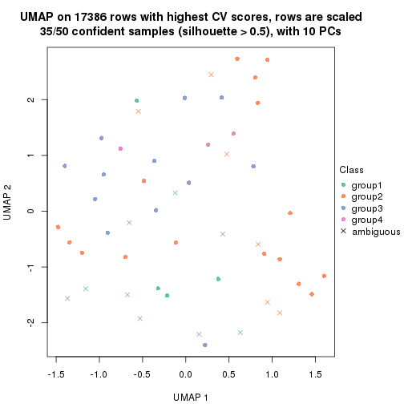
dimension_reduction(res, k = 5, method = "UMAP")
dimension_reduction(res, k = 6, method = "UMAP")
Following heatmap shows how subgroups are split when increasing k:
collect_classes(res)
If matrix rows can be associated to genes, consider to use functional_enrichment(res,
...) to perform function enrichment for the signature genes. See this vignette for more detailed explanations.
The object with results only for a single top-value method and a single partition method can be extracted as:
res = res_list["CV", "mclust"]
# you can also extract it by
# res = res_list["CV:mclust"]
A summary of res and all the functions that can be applied to it:
res
#> A 'ConsensusPartition' object with k = 2, 3, 4, 5, 6.
#> On a matrix with 17386 rows and 50 columns.
#> Top rows (1000, 2000, 3000, 4000, 5000) are extracted by 'CV' method.
#> Subgroups are detected by 'mclust' method.
#> Performed in total 1250 partitions by row resampling.
#> Best k for subgroups seems to be 2.
#>
#> Following methods can be applied to this 'ConsensusPartition' object:
#> [1] "cola_report" "collect_classes" "collect_plots"
#> [4] "collect_stats" "colnames" "compare_signatures"
#> [7] "consensus_heatmap" "dimension_reduction" "functional_enrichment"
#> [10] "get_anno_col" "get_anno" "get_classes"
#> [13] "get_consensus" "get_matrix" "get_membership"
#> [16] "get_param" "get_signatures" "get_stats"
#> [19] "is_best_k" "is_stable_k" "membership_heatmap"
#> [22] "ncol" "nrow" "plot_ecdf"
#> [25] "rownames" "select_partition_number" "show"
#> [28] "suggest_best_k" "test_to_known_factors"
collect_plots() function collects all the plots made from res for all k (number of partitions)
into one single page to provide an easy and fast comparison between different k.
collect_plots(res)
The plots are:
k and the heatmap of
predicted classes for each k.k.k.k.All the plots in panels can be made by individual functions and they are plotted later in this section.
select_partition_number() produces several plots showing different
statistics for choosing “optimized” k. There are following statistics:
k;k, the area increased is defined as \(A_k - A_{k-1}\).The detailed explanations of these statistics can be found in the cola vignette.
Generally speaking, lower PAC score, higher mean silhouette score or higher
concordance corresponds to better partition. Rand index and Jaccard index
measure how similar the current partition is compared to partition with k-1.
If they are too similar, we won't accept k is better than k-1.
select_partition_number(res)
The numeric values for all these statistics can be obtained by get_stats().
get_stats(res)
#> k 1-PAC mean_silhouette concordance area_increased Rand Jaccard
#> 2 2 0.642 0.885 0.938 0.4452 0.530 0.530
#> 3 3 0.434 0.515 0.778 0.1124 0.841 0.730
#> 4 4 0.338 0.477 0.627 0.2887 0.745 0.516
#> 5 5 0.496 0.447 0.734 0.0738 0.869 0.635
#> 6 6 0.653 0.676 0.756 0.0463 0.822 0.543
suggest_best_k() suggests the best \(k\) based on these statistics. The rules are as follows:
suggest_best_k(res)
#> [1] 2
Following shows the table of the partitions (You need to click the show/hide
code output link to see it). The membership matrix (columns with name p*)
is inferred by
clue::cl_consensus()
function with the SE method. Basically the value in the membership matrix
represents the probability to belong to a certain group. The finall class
label for an item is determined with the group with highest probability it
belongs to.
In get_classes() function, the entropy is calculated from the membership
matrix and the silhouette score is calculated from the consensus matrix.
cbind(get_classes(res, k = 2), get_membership(res, k = 2))
#> class entropy silhouette p1 p2
#> SRR2305538 1 0.8016 0.783 0.756 0.244
#> SRR2305506 1 0.0000 0.871 1.000 0.000
#> SRR2305537 1 0.0000 0.871 1.000 0.000
#> SRR2305476 1 0.8909 0.689 0.692 0.308
#> SRR2305508 1 0.0000 0.871 1.000 0.000
#> SRR2305521 1 0.0000 0.871 1.000 0.000
#> SRR2305486 2 0.0000 0.957 0.000 1.000
#> SRR2305503 2 0.0376 0.955 0.004 0.996
#> SRR2305519 2 0.3879 0.898 0.076 0.924
#> SRR2305515 1 0.0000 0.871 1.000 0.000
#> SRR2305528 2 0.0000 0.957 0.000 1.000
#> SRR2305518 2 0.0000 0.957 0.000 1.000
#> SRR2305527 2 0.0000 0.957 0.000 1.000
#> SRR2305498 2 0.9522 0.332 0.372 0.628
#> SRR2305488 2 0.0000 0.957 0.000 1.000
#> SRR2305512 1 0.7950 0.788 0.760 0.240
#> SRR2305474 2 0.0000 0.957 0.000 1.000
#> SRR2305495 1 0.7745 0.799 0.772 0.228
#> SRR2305536 2 0.0000 0.957 0.000 1.000
#> SRR2305525 2 0.0000 0.957 0.000 1.000
#> SRR2305494 1 0.7745 0.799 0.772 0.228
#> SRR2305532 2 0.0000 0.957 0.000 1.000
#> SRR2305500 2 0.0000 0.957 0.000 1.000
#> SRR2305509 2 0.0000 0.957 0.000 1.000
#> SRR2305501 1 0.0000 0.871 1.000 0.000
#> SRR2305524 2 0.6623 0.786 0.172 0.828
#> SRR2305491 2 0.4690 0.874 0.100 0.900
#> SRR2305489 2 0.0672 0.953 0.008 0.992
#> SRR2305516 2 0.0000 0.957 0.000 1.000
#> SRR2305507 2 0.0000 0.957 0.000 1.000
#> SRR2305497 2 0.2948 0.920 0.052 0.948
#> SRR2305482 1 0.7745 0.799 0.772 0.228
#> SRR2305485 1 0.0000 0.871 1.000 0.000
#> SRR2305472 1 0.7745 0.799 0.772 0.228
#> SRR2305513 1 0.0000 0.871 1.000 0.000
#> SRR2305540 1 0.0000 0.871 1.000 0.000
#> SRR2305522 2 0.0000 0.957 0.000 1.000
#> SRR2305520 2 0.0000 0.957 0.000 1.000
#> SRR2305533 1 0.7950 0.788 0.760 0.240
#> SRR2305534 2 0.0376 0.955 0.004 0.996
#> SRR2305517 2 0.0000 0.957 0.000 1.000
#> SRR2305504 1 0.0000 0.871 1.000 0.000
#> SRR2305511 2 0.0000 0.957 0.000 1.000
#> SRR2305492 2 0.6048 0.818 0.148 0.852
#> SRR2305514 2 0.0000 0.957 0.000 1.000
#> SRR2305531 2 0.0000 0.957 0.000 1.000
#> SRR2305535 2 0.1633 0.941 0.024 0.976
#> SRR2305477 2 0.0000 0.957 0.000 1.000
#> SRR2305480 2 0.1414 0.945 0.020 0.980
#> SRR2305529 2 0.6623 0.786 0.172 0.828
cbind(get_classes(res, k = 3), get_membership(res, k = 3))
#> class entropy silhouette p1 p2 p3
#> SRR2305538 2 0.6490 0.4193 0.172 0.752 0.076
#> SRR2305506 1 0.9927 0.1850 0.392 0.316 0.292
#> SRR2305537 3 0.9904 -0.2404 0.284 0.316 0.400
#> SRR2305476 2 0.6897 0.1313 0.292 0.668 0.040
#> SRR2305508 3 0.0424 0.5394 0.008 0.000 0.992
#> SRR2305521 1 0.7797 0.4236 0.608 0.320 0.072
#> SRR2305486 2 0.0000 0.7859 0.000 1.000 0.000
#> SRR2305503 2 0.1163 0.7796 0.028 0.972 0.000
#> SRR2305519 2 0.6095 0.4737 0.392 0.608 0.000
#> SRR2305515 1 0.7467 0.4279 0.624 0.320 0.056
#> SRR2305528 2 0.0892 0.7833 0.020 0.980 0.000
#> SRR2305518 2 0.0000 0.7859 0.000 1.000 0.000
#> SRR2305527 2 0.0000 0.7859 0.000 1.000 0.000
#> SRR2305498 1 0.6314 -0.0894 0.604 0.392 0.004
#> SRR2305488 2 0.1337 0.7785 0.016 0.972 0.012
#> SRR2305512 1 0.8795 0.3970 0.444 0.444 0.112
#> SRR2305474 2 0.5948 0.4997 0.360 0.640 0.000
#> SRR2305495 1 0.8346 0.4360 0.548 0.360 0.092
#> SRR2305536 2 0.0000 0.7859 0.000 1.000 0.000
#> SRR2305525 2 0.0000 0.7859 0.000 1.000 0.000
#> SRR2305494 1 0.4164 0.0153 0.848 0.008 0.144
#> SRR2305532 2 0.0592 0.7824 0.000 0.988 0.012
#> SRR2305500 2 0.5591 0.5527 0.304 0.696 0.000
#> SRR2305509 2 0.0424 0.7854 0.008 0.992 0.000
#> SRR2305501 3 0.9937 -0.2552 0.296 0.316 0.388
#> SRR2305524 2 0.6172 0.5418 0.308 0.680 0.012
#> SRR2305491 2 0.6111 0.4708 0.396 0.604 0.000
#> SRR2305489 2 0.2229 0.7635 0.044 0.944 0.012
#> SRR2305516 2 0.0237 0.7849 0.004 0.996 0.000
#> SRR2305507 2 0.1411 0.7774 0.036 0.964 0.000
#> SRR2305497 2 0.6111 0.4639 0.396 0.604 0.000
#> SRR2305482 1 0.9588 0.3502 0.460 0.324 0.216
#> SRR2305485 3 0.0424 0.5394 0.008 0.000 0.992
#> SRR2305472 1 0.9974 0.2235 0.368 0.324 0.308
#> SRR2305513 3 0.0000 0.5382 0.000 0.000 1.000
#> SRR2305540 3 0.5754 0.2190 0.004 0.296 0.700
#> SRR2305522 2 0.0661 0.7855 0.008 0.988 0.004
#> SRR2305520 2 0.1411 0.7774 0.036 0.964 0.000
#> SRR2305533 1 0.8264 -0.2070 0.488 0.436 0.076
#> SRR2305534 2 0.2339 0.7600 0.048 0.940 0.012
#> SRR2305517 2 0.0000 0.7859 0.000 1.000 0.000
#> SRR2305504 1 0.9985 0.1496 0.360 0.316 0.324
#> SRR2305511 2 0.0892 0.7763 0.020 0.980 0.000
#> SRR2305492 2 0.6154 0.4553 0.408 0.592 0.000
#> SRR2305514 2 0.0000 0.7859 0.000 1.000 0.000
#> SRR2305531 2 0.0592 0.7814 0.012 0.988 0.000
#> SRR2305535 2 0.2689 0.7429 0.036 0.932 0.032
#> SRR2305477 2 0.0747 0.7840 0.016 0.984 0.000
#> SRR2305480 2 0.6180 0.4387 0.416 0.584 0.000
#> SRR2305529 2 0.6490 0.4894 0.360 0.628 0.012
cbind(get_classes(res, k = 4), get_membership(res, k = 4))
#> class entropy silhouette p1 p2 p3 p4
#> SRR2305538 3 0.8414 -0.13336 0.344 0.040 0.436 0.180
#> SRR2305506 1 0.7148 0.15154 0.560 0.220 0.000 0.220
#> SRR2305537 1 0.7113 -0.11049 0.596 0.020 0.112 0.272
#> SRR2305476 2 0.6711 0.34635 0.180 0.644 0.168 0.008
#> SRR2305508 4 0.3528 0.76958 0.192 0.000 0.000 0.808
#> SRR2305521 1 0.6111 0.34738 0.672 0.260 0.032 0.036
#> SRR2305486 2 0.0707 0.80891 0.000 0.980 0.020 0.000
#> SRR2305503 2 0.3810 0.72539 0.060 0.848 0.092 0.000
#> SRR2305519 3 0.6545 0.58939 0.072 0.372 0.552 0.004
#> SRR2305515 1 0.6597 0.35168 0.640 0.268 0.064 0.028
#> SRR2305528 2 0.1743 0.79433 0.004 0.940 0.056 0.000
#> SRR2305518 2 0.0672 0.81239 0.008 0.984 0.000 0.008
#> SRR2305527 2 0.0336 0.81151 0.000 0.992 0.000 0.008
#> SRR2305498 3 0.8016 0.42410 0.300 0.300 0.396 0.004
#> SRR2305488 2 0.3025 0.77721 0.044 0.896 0.056 0.004
#> SRR2305512 1 0.8117 0.32975 0.424 0.400 0.140 0.036
#> SRR2305474 3 0.5406 0.42437 0.012 0.480 0.508 0.000
#> SRR2305495 1 0.7588 0.32683 0.464 0.416 0.080 0.040
#> SRR2305536 2 0.1174 0.80920 0.012 0.968 0.020 0.000
#> SRR2305525 2 0.0937 0.81191 0.012 0.976 0.000 0.012
#> SRR2305494 1 0.6603 0.01725 0.548 0.004 0.372 0.076
#> SRR2305532 2 0.1732 0.80242 0.040 0.948 0.004 0.008
#> SRR2305500 2 0.4989 -0.39303 0.000 0.528 0.472 0.000
#> SRR2305509 2 0.1798 0.80424 0.016 0.944 0.040 0.000
#> SRR2305501 1 0.7688 -0.06184 0.416 0.220 0.000 0.364
#> SRR2305524 3 0.7758 0.58992 0.020 0.268 0.532 0.180
#> SRR2305491 3 0.5113 0.64571 0.024 0.292 0.684 0.000
#> SRR2305489 2 0.8190 -0.04899 0.364 0.424 0.188 0.024
#> SRR2305516 2 0.1452 0.80418 0.036 0.956 0.000 0.008
#> SRR2305507 2 0.4640 0.60275 0.032 0.776 0.188 0.004
#> SRR2305497 3 0.6522 0.59810 0.072 0.364 0.560 0.004
#> SRR2305482 1 0.7725 0.01842 0.600 0.060 0.136 0.204
#> SRR2305485 4 0.3528 0.76958 0.192 0.000 0.000 0.808
#> SRR2305472 1 0.7336 -0.03331 0.608 0.032 0.132 0.228
#> SRR2305513 4 0.3569 0.76737 0.196 0.000 0.000 0.804
#> SRR2305540 4 0.7490 0.00247 0.284 0.220 0.000 0.496
#> SRR2305522 2 0.1305 0.80704 0.004 0.960 0.036 0.000
#> SRR2305520 2 0.4074 0.60570 0.008 0.792 0.196 0.004
#> SRR2305533 3 0.5603 0.20816 0.072 0.012 0.736 0.180
#> SRR2305534 2 0.7497 0.35560 0.192 0.600 0.176 0.032
#> SRR2305517 2 0.0336 0.81151 0.000 0.992 0.000 0.008
#> SRR2305504 1 0.7521 0.07065 0.488 0.220 0.000 0.292
#> SRR2305511 2 0.1639 0.80339 0.036 0.952 0.004 0.008
#> SRR2305492 3 0.5489 0.64480 0.040 0.296 0.664 0.000
#> SRR2305514 2 0.0469 0.81139 0.000 0.988 0.000 0.012
#> SRR2305531 2 0.1452 0.80418 0.036 0.956 0.000 0.008
#> SRR2305535 1 0.8612 -0.03568 0.368 0.344 0.256 0.032
#> SRR2305477 2 0.2731 0.78776 0.032 0.912 0.048 0.008
#> SRR2305480 3 0.6112 0.53607 0.040 0.412 0.544 0.004
#> SRR2305529 3 0.7937 0.59306 0.028 0.268 0.524 0.180
cbind(get_classes(res, k = 5), get_membership(res, k = 5))
#> class entropy silhouette p1 p2 p3 p4 p5
#> SRR2305538 1 0.0798 0.2524 0.976 0.008 0.000 0.000 0.016
#> SRR2305506 2 0.2277 0.4669 0.024 0.920 0.000 0.028 0.028
#> SRR2305537 1 0.7426 -0.3285 0.332 0.328 0.028 0.312 0.000
#> SRR2305476 5 0.7051 0.2318 0.020 0.132 0.280 0.028 0.540
#> SRR2305508 4 0.0703 0.9933 0.000 0.024 0.000 0.976 0.000
#> SRR2305521 2 0.5436 0.3397 0.036 0.588 0.012 0.004 0.360
#> SRR2305486 5 0.0451 0.7992 0.000 0.000 0.004 0.008 0.988
#> SRR2305503 5 0.4173 0.6097 0.000 0.204 0.028 0.008 0.760
#> SRR2305519 3 0.3774 0.6140 0.000 0.000 0.704 0.000 0.296
#> SRR2305515 2 0.5636 0.3004 0.012 0.560 0.056 0.000 0.372
#> SRR2305528 5 0.1884 0.7769 0.008 0.024 0.020 0.008 0.940
#> SRR2305518 5 0.0162 0.7999 0.000 0.000 0.004 0.000 0.996
#> SRR2305527 5 0.0324 0.7995 0.000 0.000 0.004 0.004 0.992
#> SRR2305498 3 0.6914 0.4160 0.000 0.248 0.424 0.008 0.320
#> SRR2305488 5 0.3123 0.7429 0.012 0.068 0.040 0.004 0.876
#> SRR2305512 3 0.7797 -0.1282 0.144 0.200 0.536 0.028 0.092
#> SRR2305474 3 0.5582 0.4766 0.000 0.044 0.492 0.012 0.452
#> SRR2305495 5 0.7536 -0.3200 0.012 0.356 0.224 0.024 0.384
#> SRR2305536 5 0.0290 0.7983 0.000 0.000 0.000 0.008 0.992
#> SRR2305525 5 0.0162 0.7993 0.000 0.000 0.000 0.004 0.996
#> SRR2305494 3 0.5841 -0.0493 0.056 0.240 0.656 0.044 0.004
#> SRR2305532 5 0.1708 0.7801 0.004 0.004 0.032 0.016 0.944
#> SRR2305500 5 0.5571 -0.3739 0.012 0.024 0.424 0.012 0.528
#> SRR2305509 5 0.1588 0.7815 0.000 0.028 0.016 0.008 0.948
#> SRR2305501 2 0.5433 0.3006 0.040 0.664 0.004 0.264 0.028
#> SRR2305524 1 0.6749 -0.3181 0.400 0.000 0.328 0.000 0.272
#> SRR2305491 3 0.4854 0.6095 0.044 0.000 0.648 0.000 0.308
#> SRR2305489 1 0.5590 0.2184 0.556 0.004 0.056 0.004 0.380
#> SRR2305516 5 0.0613 0.7992 0.000 0.004 0.008 0.004 0.984
#> SRR2305507 5 0.4879 0.5424 0.000 0.092 0.156 0.012 0.740
#> SRR2305497 3 0.4653 0.6230 0.008 0.016 0.652 0.000 0.324
#> SRR2305482 2 0.7776 0.1659 0.400 0.412 0.072 0.056 0.060
#> SRR2305485 4 0.0703 0.9933 0.000 0.024 0.000 0.976 0.000
#> SRR2305472 1 0.8770 -0.2466 0.396 0.224 0.072 0.244 0.064
#> SRR2305513 4 0.0609 0.9867 0.000 0.020 0.000 0.980 0.000
#> SRR2305540 2 0.5531 0.1077 0.024 0.532 0.000 0.416 0.028
#> SRR2305522 5 0.0798 0.7968 0.000 0.000 0.016 0.008 0.976
#> SRR2305520 5 0.4157 0.5761 0.000 0.040 0.164 0.012 0.784
#> SRR2305533 1 0.4236 0.2043 0.728 0.008 0.248 0.000 0.016
#> SRR2305534 5 0.5638 -0.1248 0.460 0.004 0.052 0.004 0.480
#> SRR2305517 5 0.0162 0.7993 0.000 0.000 0.000 0.004 0.996
#> SRR2305504 2 0.3946 0.4372 0.032 0.816 0.000 0.124 0.028
#> SRR2305511 5 0.1205 0.7845 0.000 0.000 0.040 0.004 0.956
#> SRR2305492 3 0.5721 0.6057 0.040 0.040 0.612 0.000 0.308
#> SRR2305514 5 0.0324 0.7995 0.000 0.000 0.004 0.004 0.992
#> SRR2305531 5 0.0613 0.7989 0.000 0.004 0.008 0.004 0.984
#> SRR2305535 1 0.5222 0.2562 0.636 0.004 0.048 0.004 0.308
#> SRR2305477 5 0.0912 0.7918 0.012 0.000 0.016 0.000 0.972
#> SRR2305480 3 0.6169 0.5890 0.016 0.060 0.528 0.012 0.384
#> SRR2305529 1 0.6754 -0.3226 0.396 0.000 0.332 0.000 0.272
cbind(get_classes(res, k = 6), get_membership(res, k = 6))
#> class entropy silhouette p1 p2 p3 p4 p5 p6
#> SRR2305538 1 0.2982 0.3624 0.820 0.164 0.004 0.000 0.000 0.012
#> SRR2305506 6 0.0458 0.8007 0.000 0.016 0.000 0.000 0.000 0.984
#> SRR2305537 6 0.3353 0.6205 0.032 0.160 0.000 0.004 0.000 0.804
#> SRR2305476 5 0.4678 0.4698 0.004 0.332 0.024 0.000 0.624 0.016
#> SRR2305508 4 0.0000 1.0000 0.000 0.000 0.000 1.000 0.000 0.000
#> SRR2305521 2 0.5083 0.6285 0.000 0.632 0.000 0.000 0.164 0.204
#> SRR2305486 5 0.0520 0.8393 0.008 0.008 0.000 0.000 0.984 0.000
#> SRR2305503 5 0.2394 0.8129 0.008 0.052 0.004 0.000 0.900 0.036
#> SRR2305519 3 0.0405 0.9770 0.000 0.008 0.988 0.000 0.004 0.000
#> SRR2305515 2 0.5140 0.6272 0.000 0.640 0.004 0.000 0.164 0.192
#> SRR2305528 5 0.1956 0.8235 0.004 0.080 0.008 0.000 0.908 0.000
#> SRR2305518 5 0.0717 0.8388 0.008 0.016 0.000 0.000 0.976 0.000
#> SRR2305527 5 0.0458 0.8383 0.000 0.016 0.000 0.000 0.984 0.000
#> SRR2305498 5 0.7217 0.4358 0.152 0.176 0.092 0.000 0.532 0.048
#> SRR2305488 5 0.1471 0.8301 0.000 0.064 0.000 0.000 0.932 0.004
#> SRR2305512 1 0.7901 -0.2016 0.380 0.256 0.028 0.000 0.176 0.160
#> SRR2305474 5 0.6523 0.4694 0.156 0.172 0.116 0.000 0.556 0.000
#> SRR2305495 2 0.5890 0.5535 0.004 0.576 0.020 0.000 0.236 0.164
#> SRR2305536 5 0.0520 0.8393 0.008 0.008 0.000 0.000 0.984 0.000
#> SRR2305525 5 0.0806 0.8386 0.008 0.020 0.000 0.000 0.972 0.000
#> SRR2305494 2 0.5487 0.4681 0.008 0.600 0.184 0.000 0.000 0.208
#> SRR2305532 5 0.0858 0.8370 0.004 0.028 0.000 0.000 0.968 0.000
#> SRR2305500 5 0.6630 0.4363 0.156 0.168 0.132 0.000 0.544 0.000
#> SRR2305509 5 0.1349 0.8306 0.004 0.056 0.000 0.000 0.940 0.000
#> SRR2305501 6 0.0603 0.7936 0.000 0.016 0.000 0.004 0.000 0.980
#> SRR2305524 1 0.5631 0.1927 0.516 0.012 0.380 0.000 0.084 0.008
#> SRR2305491 3 0.0260 0.9825 0.008 0.000 0.992 0.000 0.000 0.000
#> SRR2305489 5 0.3568 0.7061 0.032 0.172 0.000 0.000 0.788 0.008
#> SRR2305516 5 0.0858 0.8370 0.004 0.028 0.000 0.000 0.968 0.000
#> SRR2305507 5 0.3562 0.7458 0.004 0.168 0.040 0.000 0.788 0.000
#> SRR2305497 3 0.0260 0.9780 0.000 0.000 0.992 0.000 0.008 0.000
#> SRR2305482 2 0.5608 0.4120 0.200 0.540 0.000 0.000 0.000 0.260
#> SRR2305485 4 0.0000 1.0000 0.000 0.000 0.000 1.000 0.000 0.000
#> SRR2305472 2 0.6236 0.4317 0.200 0.536 0.000 0.004 0.028 0.232
#> SRR2305513 4 0.0000 1.0000 0.000 0.000 0.000 1.000 0.000 0.000
#> SRR2305540 6 0.3695 0.3977 0.000 0.000 0.000 0.376 0.000 0.624
#> SRR2305522 5 0.0436 0.8403 0.004 0.004 0.000 0.000 0.988 0.004
#> SRR2305520 5 0.3596 0.7435 0.004 0.172 0.040 0.000 0.784 0.000
#> SRR2305533 1 0.1167 0.4661 0.960 0.020 0.008 0.000 0.000 0.012
#> SRR2305534 5 0.3495 0.7144 0.028 0.172 0.000 0.000 0.792 0.008
#> SRR2305517 5 0.0260 0.8382 0.000 0.008 0.000 0.000 0.992 0.000
#> SRR2305504 6 0.0458 0.8007 0.000 0.016 0.000 0.000 0.000 0.984
#> SRR2305511 5 0.0858 0.8370 0.004 0.028 0.000 0.000 0.968 0.000
#> SRR2305492 3 0.0260 0.9825 0.008 0.000 0.992 0.000 0.000 0.000
#> SRR2305514 5 0.0520 0.8385 0.008 0.008 0.000 0.000 0.984 0.000
#> SRR2305531 5 0.0858 0.8370 0.004 0.028 0.000 0.000 0.968 0.000
#> SRR2305535 5 0.5029 0.5499 0.144 0.184 0.000 0.000 0.664 0.008
#> SRR2305477 5 0.0858 0.8388 0.004 0.028 0.000 0.000 0.968 0.000
#> SRR2305480 5 0.7405 -0.0166 0.152 0.184 0.300 0.000 0.364 0.000
#> SRR2305529 1 0.4400 0.0535 0.524 0.012 0.456 0.000 0.000 0.008
Heatmaps for the consensus matrix. It visualizes the probability of two samples to be in a same group.
consensus_heatmap(res, k = 2)
consensus_heatmap(res, k = 3)
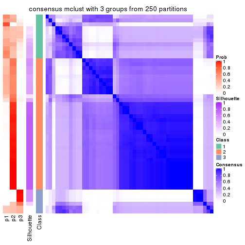
consensus_heatmap(res, k = 4)
consensus_heatmap(res, k = 5)
consensus_heatmap(res, k = 6)
Heatmaps for the membership of samples in all partitions to see how consistent they are:
membership_heatmap(res, k = 2)
membership_heatmap(res, k = 3)
membership_heatmap(res, k = 4)
membership_heatmap(res, k = 5)

membership_heatmap(res, k = 6)
As soon as we have had the classes for columns, we can look for signatures which are significantly different between classes which can be candidate marks for certain classes. Following are the heatmaps for signatures.
Signature heatmaps where rows are scaled:
get_signatures(res, k = 2)
get_signatures(res, k = 3)
get_signatures(res, k = 4)
get_signatures(res, k = 5)
get_signatures(res, k = 6)
Signature heatmaps where rows are not scaled:
get_signatures(res, k = 2, scale_rows = FALSE)
get_signatures(res, k = 3, scale_rows = FALSE)
get_signatures(res, k = 4, scale_rows = FALSE)
get_signatures(res, k = 5, scale_rows = FALSE)
get_signatures(res, k = 6, scale_rows = FALSE)
Compare the overlap of signatures from different k:
compare_signatures(res)
get_signature() returns a data frame invisibly. TO get the list of signatures, the function
call should be assigned to a variable explicitly. In following code, if plot argument is set
to FALSE, no heatmap is plotted while only the differential analysis is performed.
# code only for demonstration
tb = get_signature(res, k = ..., plot = FALSE)
An example of the output of tb is:
#> which_row fdr mean_1 mean_2 scaled_mean_1 scaled_mean_2 km
#> 1 38 0.042760348 8.373488 9.131774 -0.5533452 0.5164555 1
#> 2 40 0.018707592 7.106213 8.469186 -0.6173731 0.5762149 1
#> 3 55 0.019134737 10.221463 11.207825 -0.6159697 0.5749050 1
#> 4 59 0.006059896 5.921854 7.869574 -0.6899429 0.6439467 1
#> 5 60 0.018055526 8.928898 10.211722 -0.6204761 0.5791110 1
#> 6 98 0.009384629 15.714769 14.887706 0.6635654 -0.6193277 2
...
The columns in tb are:
which_row: row indices corresponding to the input matrix.fdr: FDR for the differential test. mean_x: The mean value in group x.scaled_mean_x: The mean value in group x after rows are scaled.km: Row groups if k-means clustering is applied to rows.UMAP plot which shows how samples are separated.
dimension_reduction(res, k = 2, method = "UMAP")
dimension_reduction(res, k = 3, method = "UMAP")
dimension_reduction(res, k = 4, method = "UMAP")
dimension_reduction(res, k = 5, method = "UMAP")

dimension_reduction(res, k = 6, method = "UMAP")

Following heatmap shows how subgroups are split when increasing k:
collect_classes(res)
If matrix rows can be associated to genes, consider to use functional_enrichment(res,
...) to perform function enrichment for the signature genes. See this vignette for more detailed explanations.
The object with results only for a single top-value method and a single partition method can be extracted as:
res = res_list["CV", "NMF"]
# you can also extract it by
# res = res_list["CV:NMF"]
A summary of res and all the functions that can be applied to it:
res
#> A 'ConsensusPartition' object with k = 2, 3, 4, 5, 6.
#> On a matrix with 17386 rows and 50 columns.
#> Top rows (1000, 2000, 3000, 4000, 5000) are extracted by 'CV' method.
#> Subgroups are detected by 'NMF' method.
#> Performed in total 1250 partitions by row resampling.
#> Best k for subgroups seems to be 3.
#>
#> Following methods can be applied to this 'ConsensusPartition' object:
#> [1] "cola_report" "collect_classes" "collect_plots"
#> [4] "collect_stats" "colnames" "compare_signatures"
#> [7] "consensus_heatmap" "dimension_reduction" "functional_enrichment"
#> [10] "get_anno_col" "get_anno" "get_classes"
#> [13] "get_consensus" "get_matrix" "get_membership"
#> [16] "get_param" "get_signatures" "get_stats"
#> [19] "is_best_k" "is_stable_k" "membership_heatmap"
#> [22] "ncol" "nrow" "plot_ecdf"
#> [25] "rownames" "select_partition_number" "show"
#> [28] "suggest_best_k" "test_to_known_factors"
collect_plots() function collects all the plots made from res for all k (number of partitions)
into one single page to provide an easy and fast comparison between different k.
collect_plots(res)
The plots are:
k and the heatmap of
predicted classes for each k.k.k.k.All the plots in panels can be made by individual functions and they are plotted later in this section.
select_partition_number() produces several plots showing different
statistics for choosing “optimized” k. There are following statistics:
k;k, the area increased is defined as \(A_k - A_{k-1}\).The detailed explanations of these statistics can be found in the cola vignette.
Generally speaking, lower PAC score, higher mean silhouette score or higher
concordance corresponds to better partition. Rand index and Jaccard index
measure how similar the current partition is compared to partition with k-1.
If they are too similar, we won't accept k is better than k-1.
select_partition_number(res)
The numeric values for all these statistics can be obtained by get_stats().
get_stats(res)
#> k 1-PAC mean_silhouette concordance area_increased Rand Jaccard
#> 2 2 0.762 0.836 0.936 0.3626 0.650 0.650
#> 3 3 0.830 0.881 0.946 0.7729 0.686 0.525
#> 4 4 0.578 0.665 0.793 0.1282 0.771 0.479
#> 5 5 0.550 0.471 0.706 0.1017 0.727 0.281
#> 6 6 0.619 0.441 0.656 0.0471 0.872 0.470
suggest_best_k() suggests the best \(k\) based on these statistics. The rules are as follows:
suggest_best_k(res)
#> [1] 3
Following shows the table of the partitions (You need to click the show/hide
code output link to see it). The membership matrix (columns with name p*)
is inferred by
clue::cl_consensus()
function with the SE method. Basically the value in the membership matrix
represents the probability to belong to a certain group. The finall class
label for an item is determined with the group with highest probability it
belongs to.
In get_classes() function, the entropy is calculated from the membership
matrix and the silhouette score is calculated from the consensus matrix.
cbind(get_classes(res, k = 2), get_membership(res, k = 2))
#> class entropy silhouette p1 p2
#> SRR2305538 2 0.000 0.939 0.000 1.000
#> SRR2305506 1 0.000 0.857 1.000 0.000
#> SRR2305537 1 0.966 0.430 0.608 0.392
#> SRR2305476 2 0.000 0.939 0.000 1.000
#> SRR2305508 1 0.000 0.857 1.000 0.000
#> SRR2305521 1 0.997 0.248 0.532 0.468
#> SRR2305486 2 0.000 0.939 0.000 1.000
#> SRR2305503 2 0.000 0.939 0.000 1.000
#> SRR2305519 2 0.958 0.367 0.380 0.620
#> SRR2305515 2 0.932 0.342 0.348 0.652
#> SRR2305528 2 0.000 0.939 0.000 1.000
#> SRR2305518 2 0.000 0.939 0.000 1.000
#> SRR2305527 2 0.000 0.939 0.000 1.000
#> SRR2305498 2 0.000 0.939 0.000 1.000
#> SRR2305488 2 0.000 0.939 0.000 1.000
#> SRR2305512 2 0.895 0.521 0.312 0.688
#> SRR2305474 2 0.000 0.939 0.000 1.000
#> SRR2305495 2 0.163 0.919 0.024 0.976
#> SRR2305536 2 0.000 0.939 0.000 1.000
#> SRR2305525 2 0.000 0.939 0.000 1.000
#> SRR2305494 1 0.000 0.857 1.000 0.000
#> SRR2305532 2 0.000 0.939 0.000 1.000
#> SRR2305500 2 0.000 0.939 0.000 1.000
#> SRR2305509 2 0.000 0.939 0.000 1.000
#> SRR2305501 1 0.000 0.857 1.000 0.000
#> SRR2305524 2 0.000 0.939 0.000 1.000
#> SRR2305491 2 0.311 0.890 0.056 0.944
#> SRR2305489 2 0.000 0.939 0.000 1.000
#> SRR2305516 2 0.000 0.939 0.000 1.000
#> SRR2305507 2 0.000 0.939 0.000 1.000
#> SRR2305497 2 0.224 0.909 0.036 0.964
#> SRR2305482 1 0.992 0.307 0.552 0.448
#> SRR2305485 1 0.000 0.857 1.000 0.000
#> SRR2305472 2 0.730 0.678 0.204 0.796
#> SRR2305513 1 0.000 0.857 1.000 0.000
#> SRR2305540 1 0.000 0.857 1.000 0.000
#> SRR2305522 2 0.000 0.939 0.000 1.000
#> SRR2305520 2 0.000 0.939 0.000 1.000
#> SRR2305533 2 0.929 0.455 0.344 0.656
#> SRR2305534 2 0.000 0.939 0.000 1.000
#> SRR2305517 2 0.000 0.939 0.000 1.000
#> SRR2305504 1 0.000 0.857 1.000 0.000
#> SRR2305511 2 0.000 0.939 0.000 1.000
#> SRR2305492 2 0.745 0.694 0.212 0.788
#> SRR2305514 2 0.000 0.939 0.000 1.000
#> SRR2305531 2 0.000 0.939 0.000 1.000
#> SRR2305535 2 0.000 0.939 0.000 1.000
#> SRR2305477 2 0.000 0.939 0.000 1.000
#> SRR2305480 2 0.000 0.939 0.000 1.000
#> SRR2305529 2 0.000 0.939 0.000 1.000
cbind(get_classes(res, k = 3), get_membership(res, k = 3))
#> class entropy silhouette p1 p2 p3
#> SRR2305538 2 0.9071 -0.0405 0.136 0.432 0.432
#> SRR2305506 1 0.0000 0.9414 1.000 0.000 0.000
#> SRR2305537 1 0.2878 0.8693 0.904 0.096 0.000
#> SRR2305476 3 0.0747 0.9457 0.000 0.016 0.984
#> SRR2305508 1 0.0000 0.9414 1.000 0.000 0.000
#> SRR2305521 1 0.7971 0.5004 0.624 0.280 0.096
#> SRR2305486 2 0.1163 0.9177 0.000 0.972 0.028
#> SRR2305503 2 0.3482 0.8458 0.000 0.872 0.128
#> SRR2305519 3 0.0000 0.9505 0.000 0.000 1.000
#> SRR2305515 3 0.7101 0.6167 0.240 0.068 0.692
#> SRR2305528 2 0.3192 0.8589 0.000 0.888 0.112
#> SRR2305518 2 0.0237 0.9268 0.000 0.996 0.004
#> SRR2305527 2 0.0000 0.9275 0.000 1.000 0.000
#> SRR2305498 3 0.0000 0.9505 0.000 0.000 1.000
#> SRR2305488 2 0.1860 0.9043 0.000 0.948 0.052
#> SRR2305512 3 0.0000 0.9505 0.000 0.000 1.000
#> SRR2305474 3 0.0000 0.9505 0.000 0.000 1.000
#> SRR2305495 2 0.0829 0.9243 0.004 0.984 0.012
#> SRR2305536 2 0.0747 0.9235 0.000 0.984 0.016
#> SRR2305525 2 0.0747 0.9235 0.000 0.984 0.016
#> SRR2305494 3 0.3752 0.8233 0.144 0.000 0.856
#> SRR2305532 2 0.0000 0.9275 0.000 1.000 0.000
#> SRR2305500 2 0.5216 0.6748 0.000 0.740 0.260
#> SRR2305509 2 0.3551 0.8418 0.000 0.868 0.132
#> SRR2305501 1 0.0000 0.9414 1.000 0.000 0.000
#> SRR2305524 3 0.1529 0.9301 0.000 0.040 0.960
#> SRR2305491 3 0.0000 0.9505 0.000 0.000 1.000
#> SRR2305489 2 0.0000 0.9275 0.000 1.000 0.000
#> SRR2305516 2 0.0000 0.9275 0.000 1.000 0.000
#> SRR2305507 3 0.0424 0.9493 0.000 0.008 0.992
#> SRR2305497 3 0.0000 0.9505 0.000 0.000 1.000
#> SRR2305482 1 0.0892 0.9283 0.980 0.020 0.000
#> SRR2305485 1 0.0000 0.9414 1.000 0.000 0.000
#> SRR2305472 2 0.4452 0.7212 0.192 0.808 0.000
#> SRR2305513 1 0.0000 0.9414 1.000 0.000 0.000
#> SRR2305540 1 0.0000 0.9414 1.000 0.000 0.000
#> SRR2305522 2 0.0000 0.9275 0.000 1.000 0.000
#> SRR2305520 3 0.0592 0.9480 0.000 0.012 0.988
#> SRR2305533 3 0.3091 0.8917 0.072 0.016 0.912
#> SRR2305534 2 0.0000 0.9275 0.000 1.000 0.000
#> SRR2305517 2 0.0000 0.9275 0.000 1.000 0.000
#> SRR2305504 1 0.0000 0.9414 1.000 0.000 0.000
#> SRR2305511 2 0.0000 0.9275 0.000 1.000 0.000
#> SRR2305492 3 0.0000 0.9505 0.000 0.000 1.000
#> SRR2305514 2 0.0000 0.9275 0.000 1.000 0.000
#> SRR2305531 2 0.0000 0.9275 0.000 1.000 0.000
#> SRR2305535 2 0.0000 0.9275 0.000 1.000 0.000
#> SRR2305477 2 0.0000 0.9275 0.000 1.000 0.000
#> SRR2305480 3 0.1411 0.9321 0.000 0.036 0.964
#> SRR2305529 3 0.1529 0.9301 0.000 0.040 0.960
cbind(get_classes(res, k = 4), get_membership(res, k = 4))
#> class entropy silhouette p1 p2 p3 p4
#> SRR2305538 1 0.4855 0.4232 0.600 0.000 0.400 0.000
#> SRR2305506 4 0.0188 0.9719 0.004 0.000 0.000 0.996
#> SRR2305537 4 0.4030 0.7932 0.092 0.072 0.000 0.836
#> SRR2305476 3 0.3634 0.6938 0.048 0.096 0.856 0.000
#> SRR2305508 4 0.0000 0.9720 0.000 0.000 0.000 1.000
#> SRR2305521 2 0.5113 0.5251 0.024 0.684 0.000 0.292
#> SRR2305486 2 0.2921 0.7121 0.140 0.860 0.000 0.000
#> SRR2305503 2 0.4220 0.6754 0.248 0.748 0.004 0.000
#> SRR2305519 3 0.4564 0.7446 0.328 0.000 0.672 0.000
#> SRR2305515 2 0.6459 0.5865 0.284 0.620 0.004 0.092
#> SRR2305528 2 0.3074 0.7079 0.152 0.848 0.000 0.000
#> SRR2305518 2 0.1302 0.7026 0.044 0.956 0.000 0.000
#> SRR2305527 2 0.2149 0.6627 0.088 0.912 0.000 0.000
#> SRR2305498 3 0.7582 0.5108 0.336 0.208 0.456 0.000
#> SRR2305488 1 0.6133 0.7509 0.644 0.268 0.088 0.000
#> SRR2305512 3 0.3400 0.7410 0.180 0.000 0.820 0.000
#> SRR2305474 2 0.7763 0.0453 0.332 0.420 0.248 0.000
#> SRR2305495 2 0.3552 0.7106 0.128 0.848 0.000 0.024
#> SRR2305536 2 0.0469 0.7121 0.012 0.988 0.000 0.000
#> SRR2305525 2 0.1867 0.6778 0.072 0.928 0.000 0.000
#> SRR2305494 3 0.6616 0.6256 0.156 0.000 0.624 0.220
#> SRR2305532 2 0.4522 0.1623 0.320 0.680 0.000 0.000
#> SRR2305500 2 0.6700 0.4596 0.316 0.572 0.112 0.000
#> SRR2305509 2 0.4509 0.6463 0.288 0.708 0.004 0.000
#> SRR2305501 4 0.0188 0.9719 0.004 0.000 0.000 0.996
#> SRR2305524 3 0.0592 0.6607 0.016 0.000 0.984 0.000
#> SRR2305491 3 0.3837 0.7546 0.224 0.000 0.776 0.000
#> SRR2305489 1 0.5989 0.7616 0.656 0.264 0.080 0.000
#> SRR2305516 2 0.3837 0.4084 0.224 0.776 0.000 0.000
#> SRR2305507 2 0.5511 0.5646 0.332 0.636 0.032 0.000
#> SRR2305497 3 0.6106 0.7185 0.332 0.064 0.604 0.000
#> SRR2305482 1 0.6497 0.0303 0.488 0.004 0.060 0.448
#> SRR2305485 4 0.0000 0.9720 0.000 0.000 0.000 1.000
#> SRR2305472 1 0.6081 0.7237 0.612 0.336 0.008 0.044
#> SRR2305513 4 0.0000 0.9720 0.000 0.000 0.000 1.000
#> SRR2305540 4 0.0188 0.9705 0.004 0.000 0.000 0.996
#> SRR2305522 2 0.0188 0.7120 0.004 0.996 0.000 0.000
#> SRR2305520 2 0.5903 0.5377 0.332 0.616 0.052 0.000
#> SRR2305533 3 0.3801 0.3951 0.220 0.000 0.780 0.000
#> SRR2305534 1 0.4643 0.7223 0.656 0.344 0.000 0.000
#> SRR2305517 2 0.1022 0.7039 0.032 0.968 0.000 0.000
#> SRR2305504 4 0.0188 0.9719 0.004 0.000 0.000 0.996
#> SRR2305511 2 0.0336 0.7107 0.008 0.992 0.000 0.000
#> SRR2305492 3 0.3942 0.7571 0.236 0.000 0.764 0.000
#> SRR2305514 2 0.1211 0.6945 0.040 0.960 0.000 0.000
#> SRR2305531 2 0.2149 0.6538 0.088 0.912 0.000 0.000
#> SRR2305535 1 0.6303 0.7337 0.660 0.192 0.148 0.000
#> SRR2305477 1 0.4916 0.6399 0.576 0.424 0.000 0.000
#> SRR2305480 3 0.6954 0.6594 0.280 0.152 0.568 0.000
#> SRR2305529 3 0.1867 0.6308 0.072 0.000 0.928 0.000
cbind(get_classes(res, k = 5), get_membership(res, k = 5))
#> class entropy silhouette p1 p2 p3 p4 p5
#> SRR2305538 1 0.2947 0.5467 0.876 0.020 0.016 0.000 0.088
#> SRR2305506 4 0.0671 0.9328 0.004 0.000 0.000 0.980 0.016
#> SRR2305537 4 0.6299 0.5364 0.124 0.172 0.000 0.644 0.060
#> SRR2305476 5 0.6005 0.2816 0.332 0.008 0.104 0.000 0.556
#> SRR2305508 4 0.0693 0.9261 0.012 0.000 0.008 0.980 0.000
#> SRR2305521 2 0.8289 -0.0553 0.004 0.328 0.108 0.324 0.236
#> SRR2305486 5 0.5268 0.4294 0.000 0.112 0.220 0.000 0.668
#> SRR2305503 5 0.6112 0.2264 0.000 0.344 0.140 0.000 0.516
#> SRR2305519 3 0.1788 0.6071 0.056 0.004 0.932 0.000 0.008
#> SRR2305515 3 0.7773 0.2933 0.004 0.304 0.420 0.064 0.208
#> SRR2305528 2 0.2233 0.5438 0.000 0.892 0.104 0.000 0.004
#> SRR2305518 2 0.1153 0.5845 0.004 0.964 0.008 0.000 0.024
#> SRR2305527 2 0.2476 0.5632 0.064 0.904 0.012 0.000 0.020
#> SRR2305498 3 0.2011 0.6360 0.000 0.088 0.908 0.000 0.004
#> SRR2305488 2 0.6225 -0.2148 0.396 0.484 0.008 0.000 0.112
#> SRR2305512 3 0.5964 0.2454 0.320 0.008 0.568 0.000 0.104
#> SRR2305474 3 0.4078 0.6096 0.004 0.072 0.796 0.000 0.128
#> SRR2305495 5 0.4459 0.5479 0.004 0.216 0.036 0.004 0.740
#> SRR2305536 5 0.4995 0.4041 0.000 0.264 0.068 0.000 0.668
#> SRR2305525 2 0.1822 0.5800 0.024 0.936 0.004 0.000 0.036
#> SRR2305494 3 0.6984 0.2778 0.140 0.060 0.544 0.256 0.000
#> SRR2305532 2 0.3861 0.4851 0.128 0.804 0.000 0.000 0.068
#> SRR2305500 3 0.4577 0.6034 0.000 0.144 0.748 0.000 0.108
#> SRR2305509 3 0.6367 0.2874 0.000 0.372 0.460 0.000 0.168
#> SRR2305501 4 0.0290 0.9348 0.008 0.000 0.000 0.992 0.000
#> SRR2305524 1 0.4647 0.5404 0.736 0.172 0.092 0.000 0.000
#> SRR2305491 3 0.2583 0.5446 0.132 0.000 0.864 0.000 0.004
#> SRR2305489 1 0.6300 0.1118 0.428 0.420 0.000 0.000 0.152
#> SRR2305516 5 0.3400 0.5723 0.036 0.136 0.000 0.000 0.828
#> SRR2305507 3 0.5954 0.4673 0.000 0.216 0.592 0.000 0.192
#> SRR2305497 3 0.1124 0.6104 0.036 0.000 0.960 0.000 0.004
#> SRR2305482 5 0.6676 -0.0136 0.200 0.004 0.000 0.364 0.432
#> SRR2305485 4 0.0162 0.9341 0.004 0.000 0.000 0.996 0.000
#> SRR2305472 5 0.4687 0.4272 0.200 0.052 0.000 0.012 0.736
#> SRR2305513 4 0.0000 0.9344 0.000 0.000 0.000 1.000 0.000
#> SRR2305540 4 0.0609 0.9330 0.000 0.000 0.000 0.980 0.020
#> SRR2305522 2 0.4397 0.2613 0.000 0.696 0.028 0.000 0.276
#> SRR2305520 3 0.5301 0.5365 0.000 0.148 0.676 0.000 0.176
#> SRR2305533 1 0.3509 0.4766 0.792 0.008 0.196 0.000 0.004
#> SRR2305534 2 0.5304 0.0797 0.292 0.628 0.000 0.000 0.080
#> SRR2305517 5 0.4001 0.5558 0.024 0.208 0.004 0.000 0.764
#> SRR2305504 4 0.0955 0.9282 0.004 0.000 0.000 0.968 0.028
#> SRR2305511 5 0.2966 0.5539 0.000 0.184 0.000 0.000 0.816
#> SRR2305492 3 0.4938 0.3507 0.308 0.028 0.652 0.000 0.012
#> SRR2305514 2 0.4588 0.0056 0.000 0.604 0.016 0.000 0.380
#> SRR2305531 5 0.4114 0.3523 0.000 0.376 0.000 0.000 0.624
#> SRR2305535 1 0.6570 0.1816 0.408 0.388 0.000 0.000 0.204
#> SRR2305477 5 0.5018 0.4412 0.052 0.284 0.004 0.000 0.660
#> SRR2305480 5 0.5811 0.4157 0.120 0.004 0.272 0.000 0.604
#> SRR2305529 1 0.5466 0.5485 0.656 0.192 0.152 0.000 0.000
cbind(get_classes(res, k = 6), get_membership(res, k = 6))
#> class entropy silhouette p1 p2 p3 p4 p5 p6
#> SRR2305538 1 0.2747 0.5435 0.860 0.004 0.000 0.000 0.028 0.108
#> SRR2305506 4 0.1644 0.8573 0.000 0.076 0.000 0.920 0.000 0.004
#> SRR2305537 4 0.5423 0.2016 0.004 0.044 0.000 0.488 0.028 0.436
#> SRR2305476 1 0.6244 -0.1902 0.428 0.096 0.040 0.000 0.428 0.008
#> SRR2305508 4 0.1381 0.8725 0.020 0.004 0.020 0.952 0.004 0.000
#> SRR2305521 2 0.4740 0.3587 0.000 0.644 0.008 0.288 0.060 0.000
#> SRR2305486 2 0.7830 0.2137 0.048 0.360 0.248 0.000 0.272 0.072
#> SRR2305503 2 0.4350 0.3646 0.000 0.660 0.048 0.000 0.292 0.000
#> SRR2305519 3 0.2942 0.5439 0.032 0.132 0.836 0.000 0.000 0.000
#> SRR2305515 2 0.4761 0.3446 0.000 0.664 0.264 0.060 0.008 0.004
#> SRR2305528 6 0.5186 0.4032 0.012 0.460 0.024 0.000 0.020 0.484
#> SRR2305518 6 0.5025 0.5063 0.012 0.376 0.008 0.000 0.036 0.568
#> SRR2305527 6 0.4284 0.5216 0.008 0.384 0.000 0.000 0.012 0.596
#> SRR2305498 3 0.3302 0.5663 0.008 0.104 0.836 0.000 0.048 0.004
#> SRR2305488 6 0.4611 0.3541 0.160 0.020 0.028 0.000 0.044 0.748
#> SRR2305512 3 0.6494 0.2919 0.320 0.056 0.524 0.000 0.044 0.056
#> SRR2305474 3 0.5594 0.3787 0.016 0.120 0.568 0.000 0.296 0.000
#> SRR2305495 5 0.3411 0.5686 0.020 0.072 0.044 0.000 0.848 0.016
#> SRR2305536 2 0.7928 0.2624 0.060 0.420 0.112 0.000 0.240 0.168
#> SRR2305525 6 0.6348 0.3820 0.016 0.396 0.024 0.000 0.120 0.444
#> SRR2305494 3 0.8444 0.0492 0.216 0.060 0.356 0.240 0.116 0.012
#> SRR2305532 6 0.4045 0.5404 0.000 0.312 0.000 0.000 0.024 0.664
#> SRR2305500 3 0.5233 0.4811 0.004 0.084 0.644 0.000 0.248 0.020
#> SRR2305509 2 0.4531 0.4229 0.000 0.712 0.216 0.000 0.032 0.040
#> SRR2305501 4 0.1680 0.8748 0.004 0.040 0.016 0.936 0.000 0.004
#> SRR2305524 1 0.5579 0.5025 0.616 0.048 0.084 0.000 0.000 0.252
#> SRR2305491 3 0.2415 0.5777 0.084 0.012 0.888 0.000 0.000 0.016
#> SRR2305489 6 0.4104 0.2969 0.208 0.016 0.000 0.000 0.036 0.740
#> SRR2305516 5 0.3647 0.5785 0.068 0.104 0.000 0.000 0.812 0.016
#> SRR2305507 2 0.4095 0.0333 0.000 0.512 0.480 0.000 0.008 0.000
#> SRR2305497 3 0.2043 0.5815 0.012 0.064 0.912 0.000 0.012 0.000
#> SRR2305482 5 0.8165 0.1668 0.220 0.064 0.012 0.260 0.376 0.068
#> SRR2305485 4 0.0893 0.8810 0.016 0.004 0.004 0.972 0.004 0.000
#> SRR2305472 5 0.5863 0.4848 0.160 0.104 0.000 0.008 0.648 0.080
#> SRR2305513 4 0.0291 0.8838 0.000 0.004 0.000 0.992 0.004 0.000
#> SRR2305540 4 0.0291 0.8845 0.000 0.000 0.000 0.992 0.004 0.004
#> SRR2305522 2 0.4990 0.2635 0.000 0.636 0.000 0.000 0.232 0.132
#> SRR2305520 3 0.4542 0.2202 0.024 0.332 0.628 0.000 0.000 0.016
#> SRR2305533 1 0.4282 0.5562 0.768 0.016 0.152 0.000 0.016 0.048
#> SRR2305534 6 0.1426 0.4594 0.028 0.008 0.000 0.000 0.016 0.948
#> SRR2305517 5 0.1668 0.5978 0.000 0.060 0.008 0.000 0.928 0.004
#> SRR2305504 4 0.1511 0.8731 0.000 0.044 0.000 0.940 0.012 0.004
#> SRR2305511 5 0.4054 0.5080 0.052 0.192 0.000 0.000 0.748 0.008
#> SRR2305492 3 0.6617 0.1746 0.312 0.060 0.480 0.000 0.144 0.004
#> SRR2305514 5 0.6257 0.0626 0.004 0.316 0.024 0.000 0.492 0.164
#> SRR2305531 2 0.4847 0.1497 0.004 0.532 0.000 0.000 0.416 0.048
#> SRR2305535 6 0.5687 0.1101 0.328 0.032 0.012 0.000 0.060 0.568
#> SRR2305477 5 0.3416 0.5752 0.012 0.064 0.024 0.000 0.848 0.052
#> SRR2305480 5 0.5870 0.4305 0.132 0.032 0.220 0.000 0.608 0.008
#> SRR2305529 1 0.5529 0.4592 0.568 0.012 0.100 0.000 0.004 0.316
Heatmaps for the consensus matrix. It visualizes the probability of two samples to be in a same group.
consensus_heatmap(res, k = 2)
consensus_heatmap(res, k = 3)
consensus_heatmap(res, k = 4)
consensus_heatmap(res, k = 5)
consensus_heatmap(res, k = 6)
Heatmaps for the membership of samples in all partitions to see how consistent they are:
membership_heatmap(res, k = 2)
membership_heatmap(res, k = 3)
membership_heatmap(res, k = 4)
membership_heatmap(res, k = 5)
membership_heatmap(res, k = 6)
As soon as we have had the classes for columns, we can look for signatures which are significantly different between classes which can be candidate marks for certain classes. Following are the heatmaps for signatures.
Signature heatmaps where rows are scaled:
get_signatures(res, k = 2)
get_signatures(res, k = 3)
get_signatures(res, k = 4)
get_signatures(res, k = 5)
get_signatures(res, k = 6)
Signature heatmaps where rows are not scaled:
get_signatures(res, k = 2, scale_rows = FALSE)
get_signatures(res, k = 3, scale_rows = FALSE)
get_signatures(res, k = 4, scale_rows = FALSE)
get_signatures(res, k = 5, scale_rows = FALSE)
get_signatures(res, k = 6, scale_rows = FALSE)
Compare the overlap of signatures from different k:
compare_signatures(res)
get_signature() returns a data frame invisibly. TO get the list of signatures, the function
call should be assigned to a variable explicitly. In following code, if plot argument is set
to FALSE, no heatmap is plotted while only the differential analysis is performed.
# code only for demonstration
tb = get_signature(res, k = ..., plot = FALSE)
An example of the output of tb is:
#> which_row fdr mean_1 mean_2 scaled_mean_1 scaled_mean_2 km
#> 1 38 0.042760348 8.373488 9.131774 -0.5533452 0.5164555 1
#> 2 40 0.018707592 7.106213 8.469186 -0.6173731 0.5762149 1
#> 3 55 0.019134737 10.221463 11.207825 -0.6159697 0.5749050 1
#> 4 59 0.006059896 5.921854 7.869574 -0.6899429 0.6439467 1
#> 5 60 0.018055526 8.928898 10.211722 -0.6204761 0.5791110 1
#> 6 98 0.009384629 15.714769 14.887706 0.6635654 -0.6193277 2
...
The columns in tb are:
which_row: row indices corresponding to the input matrix.fdr: FDR for the differential test. mean_x: The mean value in group x.scaled_mean_x: The mean value in group x after rows are scaled.km: Row groups if k-means clustering is applied to rows.UMAP plot which shows how samples are separated.
dimension_reduction(res, k = 2, method = "UMAP")
dimension_reduction(res, k = 3, method = "UMAP")
dimension_reduction(res, k = 4, method = "UMAP")
dimension_reduction(res, k = 5, method = "UMAP")
dimension_reduction(res, k = 6, method = "UMAP")
Following heatmap shows how subgroups are split when increasing k:
collect_classes(res)
If matrix rows can be associated to genes, consider to use functional_enrichment(res,
...) to perform function enrichment for the signature genes. See this vignette for more detailed explanations.
The object with results only for a single top-value method and a single partition method can be extracted as:
res = res_list["MAD", "hclust"]
# you can also extract it by
# res = res_list["MAD:hclust"]
A summary of res and all the functions that can be applied to it:
res
#> A 'ConsensusPartition' object with k = 2, 3, 4, 5, 6.
#> On a matrix with 17386 rows and 50 columns.
#> Top rows (1000, 2000, 3000, 4000, 5000) are extracted by 'MAD' method.
#> Subgroups are detected by 'hclust' method.
#> Performed in total 1250 partitions by row resampling.
#> Best k for subgroups seems to be 3.
#>
#> Following methods can be applied to this 'ConsensusPartition' object:
#> [1] "cola_report" "collect_classes" "collect_plots"
#> [4] "collect_stats" "colnames" "compare_signatures"
#> [7] "consensus_heatmap" "dimension_reduction" "functional_enrichment"
#> [10] "get_anno_col" "get_anno" "get_classes"
#> [13] "get_consensus" "get_matrix" "get_membership"
#> [16] "get_param" "get_signatures" "get_stats"
#> [19] "is_best_k" "is_stable_k" "membership_heatmap"
#> [22] "ncol" "nrow" "plot_ecdf"
#> [25] "rownames" "select_partition_number" "show"
#> [28] "suggest_best_k" "test_to_known_factors"
collect_plots() function collects all the plots made from res for all k (number of partitions)
into one single page to provide an easy and fast comparison between different k.
collect_plots(res)
The plots are:
k and the heatmap of
predicted classes for each k.k.k.k.All the plots in panels can be made by individual functions and they are plotted later in this section.
select_partition_number() produces several plots showing different
statistics for choosing “optimized” k. There are following statistics:
k;k, the area increased is defined as \(A_k - A_{k-1}\).The detailed explanations of these statistics can be found in the cola vignette.
Generally speaking, lower PAC score, higher mean silhouette score or higher
concordance corresponds to better partition. Rand index and Jaccard index
measure how similar the current partition is compared to partition with k-1.
If they are too similar, we won't accept k is better than k-1.
select_partition_number(res)
The numeric values for all these statistics can be obtained by get_stats().
get_stats(res)
#> k 1-PAC mean_silhouette concordance area_increased Rand Jaccard
#> 2 2 0.657 0.864 0.936 0.3947 0.628 0.628
#> 3 3 0.516 0.790 0.856 0.4794 0.735 0.577
#> 4 4 0.630 0.753 0.855 0.1181 0.978 0.939
#> 5 5 0.653 0.735 0.841 0.0922 0.918 0.767
#> 6 6 0.662 0.698 0.818 0.0779 0.979 0.925
suggest_best_k() suggests the best \(k\) based on these statistics. The rules are as follows:
suggest_best_k(res)
#> [1] 3
Following shows the table of the partitions (You need to click the show/hide
code output link to see it). The membership matrix (columns with name p*)
is inferred by
clue::cl_consensus()
function with the SE method. Basically the value in the membership matrix
represents the probability to belong to a certain group. The finall class
label for an item is determined with the group with highest probability it
belongs to.
In get_classes() function, the entropy is calculated from the membership
matrix and the silhouette score is calculated from the consensus matrix.
cbind(get_classes(res, k = 2), get_membership(res, k = 2))
#> class entropy silhouette p1 p2
#> SRR2305538 2 0.0000 0.927 0.000 1.000
#> SRR2305506 2 0.0376 0.927 0.004 0.996
#> SRR2305537 2 0.0000 0.927 0.000 1.000
#> SRR2305476 2 0.5946 0.816 0.144 0.856
#> SRR2305508 1 0.0000 0.924 1.000 0.000
#> SRR2305521 2 0.0376 0.927 0.004 0.996
#> SRR2305486 2 0.0376 0.927 0.004 0.996
#> SRR2305503 2 0.0376 0.927 0.004 0.996
#> SRR2305519 1 0.0376 0.925 0.996 0.004
#> SRR2305515 2 0.0672 0.925 0.008 0.992
#> SRR2305528 2 0.0672 0.925 0.008 0.992
#> SRR2305518 2 0.0000 0.927 0.000 1.000
#> SRR2305527 2 0.0000 0.927 0.000 1.000
#> SRR2305498 1 0.4161 0.905 0.916 0.084
#> SRR2305488 2 0.5842 0.817 0.140 0.860
#> SRR2305512 2 0.9686 0.386 0.396 0.604
#> SRR2305474 1 0.5946 0.855 0.856 0.144
#> SRR2305495 2 0.0376 0.927 0.004 0.996
#> SRR2305536 2 0.0672 0.925 0.008 0.992
#> SRR2305525 2 0.0376 0.927 0.004 0.996
#> SRR2305494 1 0.4161 0.905 0.916 0.084
#> SRR2305532 2 0.0000 0.927 0.000 1.000
#> SRR2305500 1 0.6973 0.804 0.812 0.188
#> SRR2305509 2 0.0376 0.927 0.004 0.996
#> SRR2305501 2 0.0376 0.927 0.004 0.996
#> SRR2305524 2 0.9552 0.417 0.376 0.624
#> SRR2305491 1 0.1414 0.925 0.980 0.020
#> SRR2305489 2 0.0000 0.927 0.000 1.000
#> SRR2305516 2 0.0000 0.927 0.000 1.000
#> SRR2305507 2 0.0672 0.925 0.008 0.992
#> SRR2305497 1 0.0376 0.925 0.996 0.004
#> SRR2305482 2 0.5737 0.821 0.136 0.864
#> SRR2305485 1 0.1184 0.925 0.984 0.016
#> SRR2305472 2 0.0000 0.927 0.000 1.000
#> SRR2305513 1 0.0000 0.924 1.000 0.000
#> SRR2305540 2 0.7815 0.709 0.232 0.768
#> SRR2305522 2 0.0000 0.927 0.000 1.000
#> SRR2305520 2 0.4022 0.868 0.080 0.920
#> SRR2305533 2 0.9209 0.513 0.336 0.664
#> SRR2305534 2 0.0000 0.927 0.000 1.000
#> SRR2305517 2 0.0376 0.927 0.004 0.996
#> SRR2305504 2 0.5946 0.816 0.144 0.856
#> SRR2305511 2 0.0000 0.927 0.000 1.000
#> SRR2305492 1 0.0000 0.924 1.000 0.000
#> SRR2305514 2 0.0376 0.927 0.004 0.996
#> SRR2305531 2 0.0000 0.927 0.000 1.000
#> SRR2305535 2 0.0000 0.927 0.000 1.000
#> SRR2305477 2 0.0000 0.927 0.000 1.000
#> SRR2305480 2 0.9754 0.354 0.408 0.592
#> SRR2305529 1 0.7299 0.781 0.796 0.204
cbind(get_classes(res, k = 3), get_membership(res, k = 3))
#> class entropy silhouette p1 p2 p3
#> SRR2305538 1 0.4346 0.729 0.816 0.184 0.000
#> SRR2305506 2 0.0237 0.934 0.004 0.996 0.000
#> SRR2305537 1 0.4702 0.711 0.788 0.212 0.000
#> SRR2305476 1 0.9093 0.560 0.460 0.400 0.140
#> SRR2305508 3 0.3551 0.817 0.132 0.000 0.868
#> SRR2305521 2 0.0237 0.934 0.004 0.996 0.000
#> SRR2305486 2 0.0000 0.934 0.000 1.000 0.000
#> SRR2305503 2 0.0424 0.932 0.008 0.992 0.000
#> SRR2305519 3 0.0424 0.860 0.000 0.008 0.992
#> SRR2305515 2 0.0475 0.933 0.004 0.992 0.004
#> SRR2305528 2 0.0237 0.933 0.000 0.996 0.004
#> SRR2305518 2 0.0892 0.935 0.020 0.980 0.000
#> SRR2305527 2 0.1289 0.931 0.032 0.968 0.000
#> SRR2305498 3 0.2711 0.847 0.000 0.088 0.912
#> SRR2305488 1 0.9098 0.559 0.456 0.404 0.140
#> SRR2305512 1 0.9207 0.334 0.456 0.152 0.392
#> SRR2305474 3 0.3816 0.783 0.000 0.148 0.852
#> SRR2305495 2 0.0892 0.935 0.020 0.980 0.000
#> SRR2305536 2 0.0475 0.933 0.004 0.992 0.004
#> SRR2305525 2 0.1031 0.935 0.024 0.976 0.000
#> SRR2305494 3 0.2711 0.847 0.000 0.088 0.912
#> SRR2305532 2 0.1289 0.931 0.032 0.968 0.000
#> SRR2305500 3 0.4452 0.733 0.000 0.192 0.808
#> SRR2305509 2 0.0000 0.934 0.000 1.000 0.000
#> SRR2305501 2 0.0237 0.934 0.004 0.996 0.000
#> SRR2305524 2 0.7741 0.088 0.056 0.568 0.376
#> SRR2305491 3 0.1267 0.863 0.004 0.024 0.972
#> SRR2305489 1 0.3619 0.718 0.864 0.136 0.000
#> SRR2305516 2 0.1163 0.933 0.028 0.972 0.000
#> SRR2305507 2 0.0475 0.933 0.004 0.992 0.004
#> SRR2305497 3 0.0424 0.860 0.000 0.008 0.992
#> SRR2305482 1 0.7545 0.695 0.692 0.172 0.136
#> SRR2305485 3 0.4277 0.815 0.132 0.016 0.852
#> SRR2305472 1 0.3551 0.715 0.868 0.132 0.000
#> SRR2305513 3 0.3551 0.817 0.132 0.000 0.868
#> SRR2305540 2 0.6981 0.434 0.068 0.704 0.228
#> SRR2305522 2 0.1163 0.933 0.028 0.972 0.000
#> SRR2305520 2 0.2866 0.836 0.008 0.916 0.076
#> SRR2305533 1 0.9623 0.454 0.448 0.216 0.336
#> SRR2305534 1 0.4750 0.712 0.784 0.216 0.000
#> SRR2305517 2 0.1031 0.935 0.024 0.976 0.000
#> SRR2305504 1 0.9075 0.586 0.472 0.388 0.140
#> SRR2305511 2 0.1163 0.933 0.028 0.972 0.000
#> SRR2305492 3 0.0237 0.856 0.004 0.000 0.996
#> SRR2305514 2 0.1031 0.935 0.024 0.976 0.000
#> SRR2305531 2 0.1163 0.933 0.028 0.972 0.000
#> SRR2305535 1 0.3686 0.719 0.860 0.140 0.000
#> SRR2305477 2 0.1031 0.935 0.024 0.976 0.000
#> SRR2305480 1 0.9181 0.307 0.448 0.148 0.404
#> SRR2305529 3 0.4834 0.705 0.004 0.204 0.792
cbind(get_classes(res, k = 4), get_membership(res, k = 4))
#> class entropy silhouette p1 p2 p3 p4
#> SRR2305538 1 0.2644 0.6519 0.908 0.060 0.000 0.032
#> SRR2305506 2 0.1042 0.9028 0.020 0.972 0.000 0.008
#> SRR2305537 1 0.3239 0.6113 0.880 0.052 0.000 0.068
#> SRR2305476 1 0.7789 0.5038 0.484 0.356 0.024 0.136
#> SRR2305508 4 0.3907 0.8137 0.000 0.000 0.232 0.768
#> SRR2305521 2 0.0657 0.9055 0.012 0.984 0.000 0.004
#> SRR2305486 2 0.0000 0.9059 0.000 1.000 0.000 0.000
#> SRR2305503 2 0.0927 0.9060 0.008 0.976 0.000 0.016
#> SRR2305519 3 0.1004 0.8166 0.000 0.004 0.972 0.024
#> SRR2305515 2 0.1262 0.9028 0.016 0.968 0.008 0.008
#> SRR2305528 2 0.0188 0.9064 0.000 0.996 0.004 0.000
#> SRR2305518 2 0.2335 0.9060 0.060 0.920 0.000 0.020
#> SRR2305527 2 0.2522 0.8981 0.076 0.908 0.000 0.016
#> SRR2305498 3 0.1716 0.8409 0.000 0.064 0.936 0.000
#> SRR2305488 1 0.7770 0.5061 0.492 0.348 0.024 0.136
#> SRR2305512 1 0.8937 0.4316 0.460 0.112 0.284 0.144
#> SRR2305474 3 0.2918 0.7801 0.000 0.116 0.876 0.008
#> SRR2305495 2 0.1743 0.9097 0.056 0.940 0.000 0.004
#> SRR2305536 2 0.1004 0.8990 0.004 0.972 0.024 0.000
#> SRR2305525 2 0.1716 0.9081 0.064 0.936 0.000 0.000
#> SRR2305494 3 0.1716 0.8409 0.000 0.064 0.936 0.000
#> SRR2305532 2 0.2522 0.8981 0.076 0.908 0.000 0.016
#> SRR2305500 3 0.3632 0.7298 0.004 0.156 0.832 0.008
#> SRR2305509 2 0.0000 0.9059 0.000 1.000 0.000 0.000
#> SRR2305501 2 0.1042 0.9028 0.020 0.972 0.000 0.008
#> SRR2305524 2 0.9309 -0.0454 0.112 0.416 0.252 0.220
#> SRR2305491 3 0.0188 0.8180 0.000 0.000 0.996 0.004
#> SRR2305489 1 0.0000 0.6390 1.000 0.000 0.000 0.000
#> SRR2305516 2 0.1792 0.9057 0.068 0.932 0.000 0.000
#> SRR2305507 2 0.1262 0.9028 0.016 0.968 0.008 0.008
#> SRR2305497 3 0.1004 0.8166 0.000 0.004 0.972 0.024
#> SRR2305482 1 0.4673 0.6406 0.796 0.060 0.004 0.140
#> SRR2305485 4 0.4331 0.5765 0.000 0.000 0.288 0.712
#> SRR2305472 1 0.0188 0.6372 0.996 0.000 0.000 0.004
#> SRR2305513 4 0.3907 0.8137 0.000 0.000 0.232 0.768
#> SRR2305540 2 0.7980 0.3497 0.100 0.580 0.096 0.224
#> SRR2305522 2 0.2450 0.9001 0.072 0.912 0.000 0.016
#> SRR2305520 2 0.3202 0.8425 0.012 0.888 0.076 0.024
#> SRR2305533 1 0.8566 0.3915 0.504 0.068 0.204 0.224
#> SRR2305534 1 0.3164 0.6138 0.884 0.052 0.000 0.064
#> SRR2305517 2 0.1637 0.9088 0.060 0.940 0.000 0.000
#> SRR2305504 1 0.7350 0.5423 0.540 0.300 0.008 0.152
#> SRR2305511 2 0.1637 0.9085 0.060 0.940 0.000 0.000
#> SRR2305492 3 0.1022 0.8077 0.000 0.000 0.968 0.032
#> SRR2305514 2 0.1716 0.9081 0.064 0.936 0.000 0.000
#> SRR2305531 2 0.1637 0.9085 0.060 0.940 0.000 0.000
#> SRR2305535 1 0.0188 0.6383 0.996 0.000 0.000 0.004
#> SRR2305477 2 0.1978 0.9074 0.068 0.928 0.000 0.004
#> SRR2305480 1 0.8943 0.4170 0.452 0.112 0.296 0.140
#> SRR2305529 3 0.4395 0.7197 0.008 0.132 0.816 0.044
cbind(get_classes(res, k = 5), get_membership(res, k = 5))
#> class entropy silhouette p1 p2 p3 p4 p5
#> SRR2305538 1 0.4126 0.3782 0.620 0.000 0.000 0.000 0.380
#> SRR2305506 2 0.1197 0.8909 0.000 0.952 0.000 0.000 0.048
#> SRR2305537 1 0.2471 0.7064 0.864 0.000 0.000 0.000 0.136
#> SRR2305476 5 0.6909 0.4168 0.296 0.216 0.016 0.000 0.472
#> SRR2305508 4 0.0000 0.8273 0.000 0.000 0.000 1.000 0.000
#> SRR2305521 2 0.0880 0.8962 0.000 0.968 0.000 0.000 0.032
#> SRR2305486 2 0.0162 0.8997 0.000 0.996 0.000 0.000 0.004
#> SRR2305503 2 0.3305 0.7335 0.000 0.776 0.000 0.000 0.224
#> SRR2305519 3 0.0865 0.8839 0.000 0.000 0.972 0.004 0.024
#> SRR2305515 2 0.1331 0.8925 0.000 0.952 0.008 0.000 0.040
#> SRR2305528 2 0.0865 0.9015 0.000 0.972 0.004 0.000 0.024
#> SRR2305518 2 0.3390 0.8623 0.060 0.840 0.000 0.000 0.100
#> SRR2305527 2 0.3586 0.8574 0.076 0.828 0.000 0.000 0.096
#> SRR2305498 3 0.1836 0.8914 0.000 0.032 0.932 0.000 0.036
#> SRR2305488 5 0.6978 0.3965 0.316 0.220 0.016 0.000 0.448
#> SRR2305512 5 0.6768 0.3218 0.268 0.004 0.276 0.000 0.452
#> SRR2305474 3 0.2824 0.8524 0.000 0.032 0.872 0.000 0.096
#> SRR2305495 2 0.2074 0.9038 0.044 0.920 0.000 0.000 0.036
#> SRR2305536 2 0.2236 0.8474 0.000 0.908 0.024 0.000 0.068
#> SRR2305525 2 0.2171 0.9004 0.064 0.912 0.000 0.000 0.024
#> SRR2305494 3 0.1836 0.8914 0.000 0.032 0.932 0.000 0.036
#> SRR2305532 2 0.3532 0.8596 0.076 0.832 0.000 0.000 0.092
#> SRR2305500 3 0.3586 0.8124 0.000 0.076 0.828 0.000 0.096
#> SRR2305509 2 0.0290 0.8996 0.000 0.992 0.000 0.000 0.008
#> SRR2305501 2 0.1197 0.8909 0.000 0.952 0.000 0.000 0.048
#> SRR2305524 5 0.5183 0.2903 0.004 0.200 0.104 0.000 0.692
#> SRR2305491 3 0.0451 0.8887 0.000 0.000 0.988 0.004 0.008
#> SRR2305489 1 0.0162 0.7640 0.996 0.000 0.000 0.000 0.004
#> SRR2305516 2 0.1544 0.8997 0.068 0.932 0.000 0.000 0.000
#> SRR2305507 2 0.1331 0.8925 0.000 0.952 0.008 0.000 0.040
#> SRR2305497 3 0.0865 0.8839 0.000 0.000 0.972 0.004 0.024
#> SRR2305482 1 0.4840 0.2595 0.640 0.040 0.000 0.000 0.320
#> SRR2305485 4 0.5107 0.5763 0.000 0.000 0.064 0.640 0.296
#> SRR2305472 1 0.0000 0.7639 1.000 0.000 0.000 0.000 0.000
#> SRR2305513 4 0.0000 0.8273 0.000 0.000 0.000 1.000 0.000
#> SRR2305540 5 0.4523 0.2848 0.004 0.344 0.012 0.000 0.640
#> SRR2305522 2 0.3526 0.8590 0.072 0.832 0.000 0.000 0.096
#> SRR2305520 2 0.4959 0.6039 0.000 0.684 0.076 0.000 0.240
#> SRR2305533 5 0.4465 0.0837 0.212 0.000 0.056 0.000 0.732
#> SRR2305534 1 0.2516 0.7084 0.860 0.000 0.000 0.000 0.140
#> SRR2305517 2 0.1809 0.9030 0.060 0.928 0.000 0.000 0.012
#> SRR2305504 5 0.5987 0.3685 0.324 0.132 0.000 0.000 0.544
#> SRR2305511 2 0.1410 0.9021 0.060 0.940 0.000 0.000 0.000
#> SRR2305492 3 0.0992 0.8815 0.000 0.000 0.968 0.008 0.024
#> SRR2305514 2 0.1638 0.9012 0.064 0.932 0.000 0.000 0.004
#> SRR2305531 2 0.1410 0.9021 0.060 0.940 0.000 0.000 0.000
#> SRR2305535 1 0.0404 0.7623 0.988 0.000 0.000 0.000 0.012
#> SRR2305477 2 0.2300 0.9013 0.052 0.908 0.000 0.000 0.040
#> SRR2305480 5 0.6789 0.3207 0.264 0.004 0.288 0.000 0.444
#> SRR2305529 3 0.4223 0.7136 0.000 0.028 0.724 0.000 0.248
cbind(get_classes(res, k = 6), get_membership(res, k = 6))
#> class entropy silhouette p1 p2 p3 p4 p5 p6
#> SRR2305538 1 0.5758 0.295 0.496 0.200 0.000 0.00 0.000 0.304
#> SRR2305506 5 0.2981 0.772 0.000 0.020 0.000 0.00 0.820 0.160
#> SRR2305537 1 0.1787 0.769 0.920 0.068 0.000 0.00 0.004 0.008
#> SRR2305476 6 0.3373 0.615 0.012 0.032 0.000 0.00 0.140 0.816
#> SRR2305508 4 0.0000 0.807 0.000 0.000 0.000 1.00 0.000 0.000
#> SRR2305521 5 0.2664 0.784 0.000 0.016 0.000 0.00 0.848 0.136
#> SRR2305486 5 0.1226 0.811 0.004 0.004 0.000 0.00 0.952 0.040
#> SRR2305503 5 0.5908 0.351 0.068 0.376 0.000 0.00 0.500 0.056
#> SRR2305519 3 0.1194 0.868 0.008 0.004 0.956 0.00 0.000 0.032
#> SRR2305515 5 0.3035 0.776 0.000 0.016 0.008 0.00 0.828 0.148
#> SRR2305528 5 0.1931 0.811 0.004 0.028 0.004 0.00 0.924 0.040
#> SRR2305518 5 0.5307 0.605 0.100 0.228 0.000 0.00 0.644 0.028
#> SRR2305527 5 0.5035 0.604 0.104 0.228 0.000 0.00 0.656 0.012
#> SRR2305498 3 0.2000 0.876 0.000 0.048 0.916 0.00 0.004 0.032
#> SRR2305488 6 0.3999 0.605 0.036 0.032 0.000 0.00 0.156 0.776
#> SRR2305512 6 0.3314 0.586 0.000 0.004 0.256 0.00 0.000 0.740
#> SRR2305474 3 0.2868 0.837 0.000 0.032 0.852 0.00 0.004 0.112
#> SRR2305495 5 0.2401 0.808 0.020 0.036 0.000 0.00 0.900 0.044
#> SRR2305536 5 0.2884 0.770 0.004 0.012 0.008 0.00 0.848 0.128
#> SRR2305525 5 0.1780 0.808 0.028 0.028 0.000 0.00 0.932 0.012
#> SRR2305494 3 0.2000 0.876 0.000 0.048 0.916 0.00 0.004 0.032
#> SRR2305532 5 0.4987 0.610 0.104 0.220 0.000 0.00 0.664 0.012
#> SRR2305500 3 0.3659 0.806 0.000 0.032 0.808 0.00 0.032 0.128
#> SRR2305509 5 0.1340 0.811 0.004 0.008 0.000 0.00 0.948 0.040
#> SRR2305501 5 0.2981 0.772 0.000 0.020 0.000 0.00 0.820 0.160
#> SRR2305524 2 0.3001 0.522 0.008 0.872 0.040 0.00 0.024 0.056
#> SRR2305491 3 0.0909 0.878 0.000 0.012 0.968 0.00 0.000 0.020
#> SRR2305489 1 0.1753 0.824 0.912 0.000 0.000 0.00 0.004 0.084
#> SRR2305516 5 0.1622 0.808 0.028 0.016 0.000 0.00 0.940 0.016
#> SRR2305507 5 0.3035 0.776 0.000 0.016 0.008 0.00 0.828 0.148
#> SRR2305497 3 0.1194 0.868 0.008 0.004 0.956 0.00 0.000 0.032
#> SRR2305482 6 0.3965 0.245 0.376 0.004 0.000 0.00 0.004 0.616
#> SRR2305485 4 0.4062 0.500 0.000 0.344 0.012 0.64 0.000 0.004
#> SRR2305472 1 0.1956 0.823 0.908 0.008 0.000 0.00 0.004 0.080
#> SRR2305513 4 0.0000 0.807 0.000 0.000 0.000 1.00 0.000 0.000
#> SRR2305540 2 0.4361 0.467 0.060 0.780 0.004 0.00 0.088 0.068
#> SRR2305522 5 0.4950 0.608 0.096 0.228 0.000 0.00 0.664 0.012
#> SRR2305520 5 0.7263 0.193 0.068 0.372 0.076 0.00 0.412 0.072
#> SRR2305533 2 0.5442 0.299 0.164 0.588 0.004 0.00 0.000 0.244
#> SRR2305534 1 0.1668 0.772 0.928 0.060 0.000 0.00 0.004 0.008
#> SRR2305517 5 0.1829 0.809 0.028 0.036 0.000 0.00 0.928 0.008
#> SRR2305504 6 0.3930 0.585 0.048 0.152 0.000 0.00 0.020 0.780
#> SRR2305511 5 0.1458 0.810 0.020 0.016 0.000 0.00 0.948 0.016
#> SRR2305492 3 0.1542 0.859 0.008 0.004 0.936 0.00 0.000 0.052
#> SRR2305514 5 0.1218 0.810 0.028 0.004 0.000 0.00 0.956 0.012
#> SRR2305531 5 0.1458 0.810 0.020 0.016 0.000 0.00 0.948 0.016
#> SRR2305535 1 0.1949 0.820 0.904 0.004 0.000 0.00 0.004 0.088
#> SRR2305477 5 0.2755 0.803 0.028 0.036 0.000 0.00 0.880 0.056
#> SRR2305480 6 0.3244 0.581 0.000 0.000 0.268 0.00 0.000 0.732
#> SRR2305529 3 0.4545 0.605 0.004 0.288 0.660 0.00 0.004 0.044
Heatmaps for the consensus matrix. It visualizes the probability of two samples to be in a same group.
consensus_heatmap(res, k = 2)
consensus_heatmap(res, k = 3)
consensus_heatmap(res, k = 4)
consensus_heatmap(res, k = 5)
consensus_heatmap(res, k = 6)
Heatmaps for the membership of samples in all partitions to see how consistent they are:
membership_heatmap(res, k = 2)
membership_heatmap(res, k = 3)
membership_heatmap(res, k = 4)
membership_heatmap(res, k = 5)
membership_heatmap(res, k = 6)
As soon as we have had the classes for columns, we can look for signatures which are significantly different between classes which can be candidate marks for certain classes. Following are the heatmaps for signatures.
Signature heatmaps where rows are scaled:
get_signatures(res, k = 2)
get_signatures(res, k = 3)
get_signatures(res, k = 4)
get_signatures(res, k = 5)
get_signatures(res, k = 6)
Signature heatmaps where rows are not scaled:
get_signatures(res, k = 2, scale_rows = FALSE)
get_signatures(res, k = 3, scale_rows = FALSE)
get_signatures(res, k = 4, scale_rows = FALSE)
get_signatures(res, k = 5, scale_rows = FALSE)
get_signatures(res, k = 6, scale_rows = FALSE)
Compare the overlap of signatures from different k:
compare_signatures(res)
get_signature() returns a data frame invisibly. TO get the list of signatures, the function
call should be assigned to a variable explicitly. In following code, if plot argument is set
to FALSE, no heatmap is plotted while only the differential analysis is performed.
# code only for demonstration
tb = get_signature(res, k = ..., plot = FALSE)
An example of the output of tb is:
#> which_row fdr mean_1 mean_2 scaled_mean_1 scaled_mean_2 km
#> 1 38 0.042760348 8.373488 9.131774 -0.5533452 0.5164555 1
#> 2 40 0.018707592 7.106213 8.469186 -0.6173731 0.5762149 1
#> 3 55 0.019134737 10.221463 11.207825 -0.6159697 0.5749050 1
#> 4 59 0.006059896 5.921854 7.869574 -0.6899429 0.6439467 1
#> 5 60 0.018055526 8.928898 10.211722 -0.6204761 0.5791110 1
#> 6 98 0.009384629 15.714769 14.887706 0.6635654 -0.6193277 2
...
The columns in tb are:
which_row: row indices corresponding to the input matrix.fdr: FDR for the differential test. mean_x: The mean value in group x.scaled_mean_x: The mean value in group x after rows are scaled.km: Row groups if k-means clustering is applied to rows.UMAP plot which shows how samples are separated.
dimension_reduction(res, k = 2, method = "UMAP")
dimension_reduction(res, k = 3, method = "UMAP")
dimension_reduction(res, k = 4, method = "UMAP")
dimension_reduction(res, k = 5, method = "UMAP")
dimension_reduction(res, k = 6, method = "UMAP")
Following heatmap shows how subgroups are split when increasing k:
collect_classes(res)
If matrix rows can be associated to genes, consider to use functional_enrichment(res,
...) to perform function enrichment for the signature genes. See this vignette for more detailed explanations.
The object with results only for a single top-value method and a single partition method can be extracted as:
res = res_list["MAD", "kmeans"]
# you can also extract it by
# res = res_list["MAD:kmeans"]
A summary of res and all the functions that can be applied to it:
res
#> A 'ConsensusPartition' object with k = 2, 3, 4, 5, 6.
#> On a matrix with 17386 rows and 50 columns.
#> Top rows (1000, 2000, 3000, 4000, 5000) are extracted by 'MAD' method.
#> Subgroups are detected by 'kmeans' method.
#> Performed in total 1250 partitions by row resampling.
#> Best k for subgroups seems to be 3.
#>
#> Following methods can be applied to this 'ConsensusPartition' object:
#> [1] "cola_report" "collect_classes" "collect_plots"
#> [4] "collect_stats" "colnames" "compare_signatures"
#> [7] "consensus_heatmap" "dimension_reduction" "functional_enrichment"
#> [10] "get_anno_col" "get_anno" "get_classes"
#> [13] "get_consensus" "get_matrix" "get_membership"
#> [16] "get_param" "get_signatures" "get_stats"
#> [19] "is_best_k" "is_stable_k" "membership_heatmap"
#> [22] "ncol" "nrow" "plot_ecdf"
#> [25] "rownames" "select_partition_number" "show"
#> [28] "suggest_best_k" "test_to_known_factors"
collect_plots() function collects all the plots made from res for all k (number of partitions)
into one single page to provide an easy and fast comparison between different k.
collect_plots(res)
The plots are:
k and the heatmap of
predicted classes for each k.k.k.k.All the plots in panels can be made by individual functions and they are plotted later in this section.
select_partition_number() produces several plots showing different
statistics for choosing “optimized” k. There are following statistics:
k;k, the area increased is defined as \(A_k - A_{k-1}\).The detailed explanations of these statistics can be found in the cola vignette.
Generally speaking, lower PAC score, higher mean silhouette score or higher
concordance corresponds to better partition. Rand index and Jaccard index
measure how similar the current partition is compared to partition with k-1.
If they are too similar, we won't accept k is better than k-1.
select_partition_number(res)
The numeric values for all these statistics can be obtained by get_stats().
get_stats(res)
#> k 1-PAC mean_silhouette concordance area_increased Rand Jaccard
#> 2 2 0.312 0.223 0.645 0.4429 0.503 0.503
#> 3 3 0.634 0.827 0.891 0.4100 0.585 0.358
#> 4 4 0.562 0.616 0.762 0.1464 0.871 0.683
#> 5 5 0.631 0.582 0.749 0.0845 0.838 0.534
#> 6 6 0.670 0.597 0.739 0.0529 0.873 0.512
suggest_best_k() suggests the best \(k\) based on these statistics. The rules are as follows:
suggest_best_k(res)
#> [1] 3
Following shows the table of the partitions (You need to click the show/hide
code output link to see it). The membership matrix (columns with name p*)
is inferred by
clue::cl_consensus()
function with the SE method. Basically the value in the membership matrix
represents the probability to belong to a certain group. The finall class
label for an item is determined with the group with highest probability it
belongs to.
In get_classes() function, the entropy is calculated from the membership
matrix and the silhouette score is calculated from the consensus matrix.
cbind(get_classes(res, k = 2), get_membership(res, k = 2))
#> class entropy silhouette p1 p2
#> SRR2305538 1 0.1843 0.44202 0.972 0.028
#> SRR2305506 2 0.9993 -0.13899 0.484 0.516
#> SRR2305537 1 0.0376 0.45667 0.996 0.004
#> SRR2305476 1 0.9983 0.19239 0.524 0.476
#> SRR2305508 2 0.8327 0.30484 0.264 0.736
#> SRR2305521 2 0.9963 -0.11422 0.464 0.536
#> SRR2305486 2 0.9963 -0.11422 0.464 0.536
#> SRR2305503 2 0.9963 -0.11422 0.464 0.536
#> SRR2305519 2 0.0376 0.45915 0.004 0.996
#> SRR2305515 2 0.9922 -0.08417 0.448 0.552
#> SRR2305528 2 0.8443 0.25811 0.272 0.728
#> SRR2305518 1 0.9998 0.20679 0.508 0.492
#> SRR2305527 1 0.9998 0.20679 0.508 0.492
#> SRR2305498 2 0.0000 0.45891 0.000 1.000
#> SRR2305488 1 0.1843 0.45891 0.972 0.028
#> SRR2305512 2 0.9977 0.10238 0.472 0.528
#> SRR2305474 2 0.0000 0.45891 0.000 1.000
#> SRR2305495 2 0.9963 -0.11422 0.464 0.536
#> SRR2305536 2 0.9963 -0.11422 0.464 0.536
#> SRR2305525 2 0.9963 -0.11422 0.464 0.536
#> SRR2305494 2 0.1414 0.45491 0.020 0.980
#> SRR2305532 1 0.9998 0.20679 0.508 0.492
#> SRR2305500 2 0.0376 0.45915 0.004 0.996
#> SRR2305509 2 0.9963 -0.11422 0.464 0.536
#> SRR2305501 2 0.7602 0.34836 0.220 0.780
#> SRR2305524 2 0.9358 0.26050 0.352 0.648
#> SRR2305491 2 0.4815 0.42522 0.104 0.896
#> SRR2305489 1 0.1843 0.45891 0.972 0.028
#> SRR2305516 1 0.9998 0.20679 0.508 0.492
#> SRR2305507 2 0.9775 -0.00968 0.412 0.588
#> SRR2305497 2 0.0000 0.45891 0.000 1.000
#> SRR2305482 1 0.1843 0.44202 0.972 0.028
#> SRR2305485 2 0.8327 0.30484 0.264 0.736
#> SRR2305472 1 0.0672 0.45607 0.992 0.008
#> SRR2305513 2 0.9998 0.09407 0.492 0.508
#> SRR2305540 1 0.9922 0.12913 0.552 0.448
#> SRR2305522 1 0.9998 0.20679 0.508 0.492
#> SRR2305520 2 0.7376 0.34036 0.208 0.792
#> SRR2305533 1 0.9944 -0.11951 0.544 0.456
#> SRR2305534 1 0.1843 0.45891 0.972 0.028
#> SRR2305517 1 1.0000 0.19474 0.504 0.496
#> SRR2305504 1 0.0672 0.45607 0.992 0.008
#> SRR2305511 1 0.9998 0.20679 0.508 0.492
#> SRR2305492 2 0.4815 0.42522 0.104 0.896
#> SRR2305514 2 0.9963 -0.11422 0.464 0.536
#> SRR2305531 1 0.9998 0.20679 0.508 0.492
#> SRR2305535 1 0.2778 0.44624 0.952 0.048
#> SRR2305477 1 0.9998 0.19855 0.508 0.492
#> SRR2305480 2 0.9866 0.13649 0.432 0.568
#> SRR2305529 2 0.4815 0.42522 0.104 0.896
cbind(get_classes(res, k = 3), get_membership(res, k = 3))
#> class entropy silhouette p1 p2 p3
#> SRR2305538 1 0.3213 0.8958 0.900 0.092 0.008
#> SRR2305506 2 0.0000 0.8988 0.000 1.000 0.000
#> SRR2305537 1 0.4519 0.8894 0.852 0.116 0.032
#> SRR2305476 2 0.1129 0.8945 0.020 0.976 0.004
#> SRR2305508 3 0.3973 0.8760 0.088 0.032 0.880
#> SRR2305521 2 0.0661 0.8973 0.008 0.988 0.004
#> SRR2305486 2 0.0237 0.8990 0.000 0.996 0.004
#> SRR2305503 2 0.0661 0.8980 0.008 0.988 0.004
#> SRR2305519 3 0.1529 0.9078 0.000 0.040 0.960
#> SRR2305515 2 0.3406 0.8552 0.028 0.904 0.068
#> SRR2305528 2 0.4324 0.8203 0.028 0.860 0.112
#> SRR2305518 2 0.1877 0.8794 0.012 0.956 0.032
#> SRR2305527 2 0.1877 0.8794 0.012 0.956 0.032
#> SRR2305498 3 0.4602 0.8261 0.016 0.152 0.832
#> SRR2305488 1 0.4413 0.8920 0.860 0.104 0.036
#> SRR2305512 1 0.6291 0.0297 0.532 0.000 0.468
#> SRR2305474 3 0.4539 0.8264 0.016 0.148 0.836
#> SRR2305495 2 0.0475 0.8996 0.004 0.992 0.004
#> SRR2305536 2 0.1399 0.8926 0.028 0.968 0.004
#> SRR2305525 2 0.0475 0.8996 0.004 0.992 0.004
#> SRR2305494 3 0.2918 0.9028 0.032 0.044 0.924
#> SRR2305532 2 0.1877 0.8794 0.012 0.956 0.032
#> SRR2305500 3 0.5119 0.8047 0.028 0.160 0.812
#> SRR2305509 2 0.3043 0.8534 0.008 0.908 0.084
#> SRR2305501 2 0.7128 0.5842 0.064 0.684 0.252
#> SRR2305524 2 0.9269 0.3640 0.184 0.508 0.308
#> SRR2305491 3 0.1411 0.9081 0.000 0.036 0.964
#> SRR2305489 1 0.3272 0.8971 0.892 0.104 0.004
#> SRR2305516 2 0.0475 0.8996 0.004 0.992 0.004
#> SRR2305507 2 0.3678 0.8451 0.028 0.892 0.080
#> SRR2305497 3 0.1529 0.9078 0.000 0.040 0.960
#> SRR2305482 1 0.3213 0.8958 0.900 0.092 0.008
#> SRR2305485 3 0.2945 0.8557 0.088 0.004 0.908
#> SRR2305472 1 0.3682 0.8915 0.876 0.116 0.008
#> SRR2305513 3 0.3879 0.8316 0.152 0.000 0.848
#> SRR2305540 2 0.8804 0.4664 0.204 0.584 0.212
#> SRR2305522 2 0.1711 0.8803 0.008 0.960 0.032
#> SRR2305520 2 0.7339 0.4073 0.036 0.572 0.392
#> SRR2305533 1 0.5595 0.6540 0.756 0.016 0.228
#> SRR2305534 1 0.4519 0.8894 0.852 0.116 0.032
#> SRR2305517 2 0.0475 0.8996 0.004 0.992 0.004
#> SRR2305504 1 0.4371 0.8929 0.860 0.108 0.032
#> SRR2305511 2 0.0475 0.8996 0.004 0.992 0.004
#> SRR2305492 3 0.1411 0.9081 0.000 0.036 0.964
#> SRR2305514 2 0.0475 0.8996 0.004 0.992 0.004
#> SRR2305531 2 0.0475 0.8996 0.004 0.992 0.004
#> SRR2305535 1 0.3213 0.8958 0.900 0.092 0.008
#> SRR2305477 2 0.0475 0.8996 0.004 0.992 0.004
#> SRR2305480 3 0.2537 0.8725 0.080 0.000 0.920
#> SRR2305529 3 0.1399 0.8894 0.028 0.004 0.968
cbind(get_classes(res, k = 4), get_membership(res, k = 4))
#> class entropy silhouette p1 p2 p3 p4
#> SRR2305538 1 0.0524 0.7645 0.988 0.008 0.004 0.000
#> SRR2305506 2 0.3025 0.8048 0.004 0.896 0.044 0.056
#> SRR2305537 1 0.4148 0.7495 0.816 0.016 0.012 0.156
#> SRR2305476 2 0.4087 0.7887 0.008 0.844 0.080 0.068
#> SRR2305508 4 0.4356 0.9070 0.000 0.000 0.292 0.708
#> SRR2305521 2 0.3508 0.8022 0.004 0.872 0.064 0.060
#> SRR2305486 2 0.2782 0.8043 0.004 0.904 0.068 0.024
#> SRR2305503 2 0.5050 0.7285 0.000 0.756 0.176 0.068
#> SRR2305519 3 0.4756 0.2687 0.004 0.020 0.744 0.232
#> SRR2305515 2 0.5192 0.7375 0.004 0.760 0.160 0.076
#> SRR2305528 3 0.6080 0.3817 0.000 0.236 0.664 0.100
#> SRR2305518 2 0.7728 0.4944 0.024 0.556 0.208 0.212
#> SRR2305527 2 0.7782 0.4898 0.024 0.548 0.208 0.220
#> SRR2305498 3 0.1545 0.5255 0.000 0.040 0.952 0.008
#> SRR2305488 1 0.7319 0.6567 0.624 0.040 0.132 0.204
#> SRR2305512 1 0.6658 0.0806 0.532 0.000 0.376 0.092
#> SRR2305474 3 0.1452 0.5272 0.000 0.036 0.956 0.008
#> SRR2305495 2 0.2262 0.8125 0.016 0.932 0.040 0.012
#> SRR2305536 2 0.3679 0.8000 0.000 0.856 0.084 0.060
#> SRR2305525 2 0.3138 0.8014 0.020 0.896 0.060 0.024
#> SRR2305494 3 0.2706 0.4875 0.000 0.020 0.900 0.080
#> SRR2305532 2 0.4409 0.7201 0.024 0.804 0.012 0.160
#> SRR2305500 3 0.3013 0.5202 0.000 0.032 0.888 0.080
#> SRR2305509 2 0.3716 0.7935 0.000 0.852 0.096 0.052
#> SRR2305501 2 0.6435 0.6414 0.008 0.672 0.164 0.156
#> SRR2305524 3 0.8143 0.2991 0.132 0.072 0.552 0.244
#> SRR2305491 3 0.4722 0.1260 0.008 0.000 0.692 0.300
#> SRR2305489 1 0.0657 0.7642 0.984 0.012 0.000 0.004
#> SRR2305516 2 0.1151 0.8148 0.024 0.968 0.000 0.008
#> SRR2305507 2 0.5598 0.6802 0.000 0.704 0.220 0.076
#> SRR2305497 3 0.4976 0.2102 0.004 0.020 0.716 0.260
#> SRR2305482 1 0.0992 0.7627 0.976 0.008 0.004 0.012
#> SRR2305485 4 0.4585 0.8730 0.000 0.000 0.332 0.668
#> SRR2305472 1 0.0937 0.7629 0.976 0.012 0.000 0.012
#> SRR2305513 4 0.5312 0.8652 0.052 0.000 0.236 0.712
#> SRR2305540 3 0.9676 0.0670 0.152 0.216 0.352 0.280
#> SRR2305522 2 0.7551 0.5265 0.024 0.580 0.200 0.196
#> SRR2305520 3 0.6273 0.4018 0.000 0.108 0.644 0.248
#> SRR2305533 1 0.7401 0.5822 0.556 0.008 0.192 0.244
#> SRR2305534 1 0.5497 0.7314 0.748 0.016 0.064 0.172
#> SRR2305517 2 0.1151 0.8153 0.024 0.968 0.000 0.008
#> SRR2305504 1 0.7609 0.6481 0.600 0.056 0.116 0.228
#> SRR2305511 2 0.1004 0.8151 0.024 0.972 0.000 0.004
#> SRR2305492 3 0.4792 0.0885 0.008 0.000 0.680 0.312
#> SRR2305514 2 0.3058 0.8030 0.020 0.900 0.056 0.024
#> SRR2305531 2 0.1004 0.8151 0.024 0.972 0.000 0.004
#> SRR2305535 1 0.0859 0.7629 0.980 0.008 0.004 0.008
#> SRR2305477 2 0.3712 0.7980 0.024 0.868 0.080 0.028
#> SRR2305480 3 0.4606 0.1942 0.012 0.000 0.724 0.264
#> SRR2305529 3 0.2342 0.5005 0.008 0.000 0.912 0.080
cbind(get_classes(res, k = 5), get_membership(res, k = 5))
#> class entropy silhouette p1 p2 p3 p4 p5
#> SRR2305538 1 0.0510 0.755 0.984 0.016 0.000 0.000 0.000
#> SRR2305506 5 0.5624 0.578 0.000 0.272 0.064 0.024 0.640
#> SRR2305537 1 0.4890 0.372 0.628 0.340 0.000 0.024 0.008
#> SRR2305476 5 0.5061 0.575 0.000 0.312 0.024 0.020 0.644
#> SRR2305508 4 0.1908 0.917 0.000 0.000 0.092 0.908 0.000
#> SRR2305521 5 0.5768 0.579 0.000 0.268 0.076 0.024 0.632
#> SRR2305486 5 0.1960 0.776 0.000 0.048 0.004 0.020 0.928
#> SRR2305503 5 0.6429 0.218 0.000 0.408 0.104 0.020 0.468
#> SRR2305519 3 0.2466 0.835 0.000 0.012 0.900 0.076 0.012
#> SRR2305515 2 0.6731 -0.241 0.000 0.448 0.132 0.024 0.396
#> SRR2305528 3 0.4983 0.607 0.000 0.220 0.712 0.024 0.044
#> SRR2305518 2 0.4465 0.494 0.000 0.732 0.028 0.012 0.228
#> SRR2305527 2 0.4449 0.505 0.008 0.748 0.020 0.012 0.212
#> SRR2305498 3 0.2012 0.822 0.000 0.060 0.920 0.000 0.020
#> SRR2305488 2 0.6140 -0.113 0.420 0.504 0.028 0.028 0.020
#> SRR2305512 1 0.5774 0.206 0.556 0.060 0.368 0.016 0.000
#> SRR2305474 3 0.1117 0.838 0.000 0.016 0.964 0.000 0.020
#> SRR2305495 5 0.0854 0.784 0.000 0.012 0.004 0.008 0.976
#> SRR2305536 5 0.3730 0.755 0.000 0.120 0.028 0.024 0.828
#> SRR2305525 5 0.2472 0.766 0.000 0.052 0.020 0.020 0.908
#> SRR2305494 3 0.2712 0.822 0.000 0.088 0.880 0.032 0.000
#> SRR2305532 2 0.4846 0.116 0.008 0.512 0.004 0.004 0.472
#> SRR2305500 3 0.1569 0.828 0.000 0.044 0.944 0.004 0.008
#> SRR2305509 5 0.4364 0.733 0.000 0.104 0.076 0.024 0.796
#> SRR2305501 5 0.7275 0.388 0.004 0.332 0.120 0.064 0.480
#> SRR2305524 2 0.5458 0.389 0.128 0.728 0.104 0.032 0.008
#> SRR2305491 3 0.3409 0.787 0.000 0.032 0.824 0.144 0.000
#> SRR2305489 1 0.0771 0.753 0.976 0.020 0.000 0.000 0.004
#> SRR2305516 5 0.1251 0.781 0.008 0.036 0.000 0.000 0.956
#> SRR2305507 2 0.6679 -0.225 0.000 0.456 0.136 0.020 0.388
#> SRR2305497 3 0.2630 0.832 0.000 0.012 0.892 0.080 0.016
#> SRR2305482 1 0.1209 0.753 0.964 0.012 0.012 0.012 0.000
#> SRR2305485 4 0.3456 0.850 0.000 0.016 0.184 0.800 0.000
#> SRR2305472 1 0.1012 0.752 0.968 0.020 0.000 0.000 0.012
#> SRR2305513 4 0.2104 0.902 0.024 0.000 0.060 0.916 0.000
#> SRR2305540 2 0.4811 0.393 0.144 0.768 0.028 0.052 0.008
#> SRR2305522 2 0.4577 0.480 0.000 0.716 0.028 0.012 0.244
#> SRR2305520 2 0.3766 0.402 0.000 0.728 0.268 0.004 0.000
#> SRR2305533 2 0.6186 -0.127 0.408 0.500 0.048 0.044 0.000
#> SRR2305534 1 0.5267 0.267 0.572 0.388 0.008 0.028 0.004
#> SRR2305517 5 0.0955 0.783 0.004 0.028 0.000 0.000 0.968
#> SRR2305504 2 0.5628 0.208 0.272 0.652 0.028 0.036 0.012
#> SRR2305511 5 0.1041 0.783 0.004 0.032 0.000 0.000 0.964
#> SRR2305492 3 0.3409 0.787 0.000 0.032 0.824 0.144 0.000
#> SRR2305514 5 0.1646 0.773 0.000 0.032 0.004 0.020 0.944
#> SRR2305531 5 0.1041 0.783 0.004 0.032 0.000 0.000 0.964
#> SRR2305535 1 0.0968 0.753 0.972 0.004 0.012 0.012 0.000
#> SRR2305477 5 0.2122 0.765 0.008 0.040 0.008 0.016 0.928
#> SRR2305480 3 0.3592 0.784 0.016 0.028 0.832 0.124 0.000
#> SRR2305529 3 0.3532 0.795 0.004 0.108 0.840 0.044 0.004
cbind(get_classes(res, k = 6), get_membership(res, k = 6))
#> class entropy silhouette p1 p2 p3 p4 p5 p6
#> SRR2305538 1 0.0713 0.8250 0.972 0.000 0.000 0.000 0.000 0.028
#> SRR2305506 2 0.4625 0.3882 0.000 0.604 0.020 0.000 0.356 0.020
#> SRR2305537 6 0.5088 0.3263 0.424 0.048 0.000 0.008 0.004 0.516
#> SRR2305476 2 0.5002 0.2421 0.000 0.516 0.000 0.000 0.412 0.072
#> SRR2305508 4 0.1444 0.8876 0.000 0.000 0.072 0.928 0.000 0.000
#> SRR2305521 2 0.4394 0.3807 0.000 0.608 0.020 0.000 0.364 0.008
#> SRR2305486 5 0.2024 0.7772 0.000 0.028 0.000 0.016 0.920 0.036
#> SRR2305503 2 0.3197 0.5110 0.000 0.804 0.000 0.012 0.176 0.008
#> SRR2305519 3 0.2865 0.8094 0.000 0.060 0.880 0.024 0.024 0.012
#> SRR2305515 2 0.2959 0.5349 0.000 0.852 0.036 0.000 0.104 0.008
#> SRR2305528 3 0.6318 0.5626 0.000 0.220 0.596 0.024 0.096 0.064
#> SRR2305518 2 0.6677 -0.1495 0.000 0.392 0.012 0.028 0.180 0.388
#> SRR2305527 6 0.6511 -0.0149 0.000 0.376 0.008 0.024 0.176 0.416
#> SRR2305498 3 0.3062 0.8044 0.000 0.116 0.844 0.000 0.024 0.016
#> SRR2305488 6 0.5135 0.6311 0.208 0.072 0.004 0.000 0.036 0.680
#> SRR2305512 1 0.5994 0.2878 0.548 0.060 0.316 0.004 0.000 0.072
#> SRR2305474 3 0.2239 0.8219 0.000 0.072 0.900 0.000 0.020 0.008
#> SRR2305495 5 0.0972 0.7925 0.000 0.028 0.000 0.000 0.964 0.008
#> SRR2305536 5 0.4240 0.6550 0.000 0.152 0.008 0.020 0.768 0.052
#> SRR2305525 5 0.2402 0.7706 0.000 0.016 0.012 0.016 0.904 0.052
#> SRR2305494 3 0.3860 0.7587 0.000 0.056 0.792 0.020 0.000 0.132
#> SRR2305532 5 0.6490 -0.1634 0.000 0.320 0.000 0.020 0.392 0.268
#> SRR2305500 3 0.2420 0.8196 0.000 0.076 0.888 0.004 0.000 0.032
#> SRR2305509 5 0.4713 0.6057 0.000 0.148 0.044 0.020 0.748 0.040
#> SRR2305501 2 0.5998 0.3805 0.004 0.564 0.028 0.004 0.284 0.116
#> SRR2305524 6 0.4617 0.6255 0.092 0.052 0.064 0.020 0.000 0.772
#> SRR2305491 3 0.2414 0.7891 0.000 0.012 0.896 0.056 0.000 0.036
#> SRR2305489 1 0.1829 0.8058 0.920 0.012 0.000 0.004 0.000 0.064
#> SRR2305516 5 0.2344 0.7747 0.000 0.068 0.000 0.008 0.896 0.028
#> SRR2305507 2 0.2984 0.5342 0.000 0.848 0.044 0.000 0.104 0.004
#> SRR2305497 3 0.2395 0.8098 0.000 0.020 0.908 0.028 0.032 0.012
#> SRR2305482 1 0.1565 0.8175 0.940 0.028 0.000 0.004 0.000 0.028
#> SRR2305485 4 0.4201 0.7750 0.000 0.004 0.176 0.740 0.000 0.080
#> SRR2305472 1 0.2089 0.8114 0.908 0.012 0.000 0.004 0.004 0.072
#> SRR2305513 4 0.1524 0.8821 0.008 0.000 0.060 0.932 0.000 0.000
#> SRR2305540 6 0.4087 0.6184 0.040 0.100 0.036 0.020 0.000 0.804
#> SRR2305522 2 0.6710 -0.1231 0.000 0.388 0.012 0.028 0.188 0.384
#> SRR2305520 2 0.6159 -0.1628 0.000 0.468 0.192 0.016 0.000 0.324
#> SRR2305533 6 0.4521 0.6023 0.136 0.012 0.076 0.020 0.000 0.756
#> SRR2305534 6 0.4987 0.5171 0.340 0.064 0.000 0.008 0.000 0.588
#> SRR2305517 5 0.1863 0.7807 0.000 0.060 0.000 0.004 0.920 0.016
#> SRR2305504 6 0.4716 0.5687 0.108 0.224 0.000 0.000 0.000 0.668
#> SRR2305511 5 0.2401 0.7751 0.000 0.072 0.000 0.008 0.892 0.028
#> SRR2305492 3 0.2265 0.7908 0.000 0.012 0.904 0.056 0.000 0.028
#> SRR2305514 5 0.1313 0.7863 0.000 0.004 0.000 0.016 0.952 0.028
#> SRR2305531 5 0.2401 0.7751 0.000 0.072 0.000 0.008 0.892 0.028
#> SRR2305535 1 0.0291 0.8269 0.992 0.004 0.000 0.004 0.000 0.000
#> SRR2305477 5 0.1434 0.7831 0.000 0.024 0.000 0.008 0.948 0.020
#> SRR2305480 3 0.4350 0.7539 0.028 0.064 0.796 0.048 0.000 0.064
#> SRR2305529 3 0.4169 0.7017 0.004 0.032 0.748 0.020 0.000 0.196
Heatmaps for the consensus matrix. It visualizes the probability of two samples to be in a same group.
consensus_heatmap(res, k = 2)
consensus_heatmap(res, k = 3)
consensus_heatmap(res, k = 4)
consensus_heatmap(res, k = 5)
consensus_heatmap(res, k = 6)
Heatmaps for the membership of samples in all partitions to see how consistent they are:
membership_heatmap(res, k = 2)
membership_heatmap(res, k = 3)
membership_heatmap(res, k = 4)
membership_heatmap(res, k = 5)
membership_heatmap(res, k = 6)
As soon as we have had the classes for columns, we can look for signatures which are significantly different between classes which can be candidate marks for certain classes. Following are the heatmaps for signatures.
Signature heatmaps where rows are scaled:
get_signatures(res, k = 2)

get_signatures(res, k = 3)
get_signatures(res, k = 4)
get_signatures(res, k = 5)
get_signatures(res, k = 6)
Signature heatmaps where rows are not scaled:
get_signatures(res, k = 2, scale_rows = FALSE)

get_signatures(res, k = 3, scale_rows = FALSE)
get_signatures(res, k = 4, scale_rows = FALSE)
get_signatures(res, k = 5, scale_rows = FALSE)
get_signatures(res, k = 6, scale_rows = FALSE)
Compare the overlap of signatures from different k:
compare_signatures(res)
get_signature() returns a data frame invisibly. TO get the list of signatures, the function
call should be assigned to a variable explicitly. In following code, if plot argument is set
to FALSE, no heatmap is plotted while only the differential analysis is performed.
# code only for demonstration
tb = get_signature(res, k = ..., plot = FALSE)
An example of the output of tb is:
#> which_row fdr mean_1 mean_2 scaled_mean_1 scaled_mean_2 km
#> 1 38 0.042760348 8.373488 9.131774 -0.5533452 0.5164555 1
#> 2 40 0.018707592 7.106213 8.469186 -0.6173731 0.5762149 1
#> 3 55 0.019134737 10.221463 11.207825 -0.6159697 0.5749050 1
#> 4 59 0.006059896 5.921854 7.869574 -0.6899429 0.6439467 1
#> 5 60 0.018055526 8.928898 10.211722 -0.6204761 0.5791110 1
#> 6 98 0.009384629 15.714769 14.887706 0.6635654 -0.6193277 2
...
The columns in tb are:
which_row: row indices corresponding to the input matrix.fdr: FDR for the differential test. mean_x: The mean value in group x.scaled_mean_x: The mean value in group x after rows are scaled.km: Row groups if k-means clustering is applied to rows.UMAP plot which shows how samples are separated.
dimension_reduction(res, k = 2, method = "UMAP")
dimension_reduction(res, k = 3, method = "UMAP")
dimension_reduction(res, k = 4, method = "UMAP")
dimension_reduction(res, k = 5, method = "UMAP")
dimension_reduction(res, k = 6, method = "UMAP")
Following heatmap shows how subgroups are split when increasing k:
collect_classes(res)
If matrix rows can be associated to genes, consider to use functional_enrichment(res,
...) to perform function enrichment for the signature genes. See this vignette for more detailed explanations.
The object with results only for a single top-value method and a single partition method can be extracted as:
res = res_list["MAD", "skmeans"]
# you can also extract it by
# res = res_list["MAD:skmeans"]
A summary of res and all the functions that can be applied to it:
res
#> A 'ConsensusPartition' object with k = 2, 3, 4, 5, 6.
#> On a matrix with 17386 rows and 50 columns.
#> Top rows (1000, 2000, 3000, 4000, 5000) are extracted by 'MAD' method.
#> Subgroups are detected by 'skmeans' method.
#> Performed in total 1250 partitions by row resampling.
#> Best k for subgroups seems to be 3.
#>
#> Following methods can be applied to this 'ConsensusPartition' object:
#> [1] "cola_report" "collect_classes" "collect_plots"
#> [4] "collect_stats" "colnames" "compare_signatures"
#> [7] "consensus_heatmap" "dimension_reduction" "functional_enrichment"
#> [10] "get_anno_col" "get_anno" "get_classes"
#> [13] "get_consensus" "get_matrix" "get_membership"
#> [16] "get_param" "get_signatures" "get_stats"
#> [19] "is_best_k" "is_stable_k" "membership_heatmap"
#> [22] "ncol" "nrow" "plot_ecdf"
#> [25] "rownames" "select_partition_number" "show"
#> [28] "suggest_best_k" "test_to_known_factors"
collect_plots() function collects all the plots made from res for all k (number of partitions)
into one single page to provide an easy and fast comparison between different k.
collect_plots(res)
The plots are:
k and the heatmap of
predicted classes for each k.k.k.k.All the plots in panels can be made by individual functions and they are plotted later in this section.
select_partition_number() produces several plots showing different
statistics for choosing “optimized” k. There are following statistics:
k;k, the area increased is defined as \(A_k - A_{k-1}\).The detailed explanations of these statistics can be found in the cola vignette.
Generally speaking, lower PAC score, higher mean silhouette score or higher
concordance corresponds to better partition. Rand index and Jaccard index
measure how similar the current partition is compared to partition with k-1.
If they are too similar, we won't accept k is better than k-1.
select_partition_number(res)
The numeric values for all these statistics can be obtained by get_stats().
get_stats(res)
#> k 1-PAC mean_silhouette concordance area_increased Rand Jaccard
#> 2 2 0.472 0.661 0.808 0.5023 0.503 0.503
#> 3 3 0.780 0.802 0.924 0.3359 0.695 0.460
#> 4 4 0.638 0.636 0.814 0.1267 0.824 0.522
#> 5 5 0.661 0.565 0.759 0.0658 0.902 0.626
#> 6 6 0.675 0.632 0.758 0.0377 0.952 0.759
suggest_best_k() suggests the best \(k\) based on these statistics. The rules are as follows:
suggest_best_k(res)
#> [1] 3
Following shows the table of the partitions (You need to click the show/hide
code output link to see it). The membership matrix (columns with name p*)
is inferred by
clue::cl_consensus()
function with the SE method. Basically the value in the membership matrix
represents the probability to belong to a certain group. The finall class
label for an item is determined with the group with highest probability it
belongs to.
In get_classes() function, the entropy is calculated from the membership
matrix and the silhouette score is calculated from the consensus matrix.
cbind(get_classes(res, k = 2), get_membership(res, k = 2))
#> class entropy silhouette p1 p2
#> SRR2305538 1 0.971 0.676 0.600 0.400
#> SRR2305506 2 0.000 0.725 0.000 1.000
#> SRR2305537 1 0.973 0.672 0.596 0.404
#> SRR2305476 2 0.932 -0.128 0.348 0.652
#> SRR2305508 1 0.000 0.680 1.000 0.000
#> SRR2305521 2 0.584 0.693 0.140 0.860
#> SRR2305486 2 0.000 0.725 0.000 1.000
#> SRR2305503 2 0.000 0.725 0.000 1.000
#> SRR2305519 2 0.973 0.615 0.404 0.596
#> SRR2305515 2 0.921 0.642 0.336 0.664
#> SRR2305528 2 0.971 0.617 0.400 0.600
#> SRR2305518 2 0.000 0.725 0.000 1.000
#> SRR2305527 2 0.000 0.725 0.000 1.000
#> SRR2305498 2 0.973 0.615 0.404 0.596
#> SRR2305488 1 0.971 0.676 0.600 0.400
#> SRR2305512 1 0.000 0.680 1.000 0.000
#> SRR2305474 2 0.973 0.615 0.404 0.596
#> SRR2305495 2 0.000 0.725 0.000 1.000
#> SRR2305536 2 0.000 0.725 0.000 1.000
#> SRR2305525 2 0.000 0.725 0.000 1.000
#> SRR2305494 2 0.973 0.615 0.404 0.596
#> SRR2305532 2 0.000 0.725 0.000 1.000
#> SRR2305500 2 0.990 0.574 0.440 0.560
#> SRR2305509 2 0.909 0.646 0.324 0.676
#> SRR2305501 2 0.973 0.615 0.404 0.596
#> SRR2305524 1 0.000 0.680 1.000 0.000
#> SRR2305491 1 0.000 0.680 1.000 0.000
#> SRR2305489 1 0.971 0.676 0.600 0.400
#> SRR2305516 2 0.000 0.725 0.000 1.000
#> SRR2305507 2 0.971 0.617 0.400 0.600
#> SRR2305497 2 0.973 0.615 0.404 0.596
#> SRR2305482 1 0.971 0.676 0.600 0.400
#> SRR2305485 1 0.000 0.680 1.000 0.000
#> SRR2305472 1 0.973 0.672 0.596 0.404
#> SRR2305513 1 0.000 0.680 1.000 0.000
#> SRR2305540 1 0.929 0.668 0.656 0.344
#> SRR2305522 2 0.000 0.725 0.000 1.000
#> SRR2305520 2 0.981 0.599 0.420 0.580
#> SRR2305533 1 0.000 0.680 1.000 0.000
#> SRR2305534 1 0.973 0.672 0.596 0.404
#> SRR2305517 2 0.000 0.725 0.000 1.000
#> SRR2305504 1 0.971 0.676 0.600 0.400
#> SRR2305511 2 0.000 0.725 0.000 1.000
#> SRR2305492 1 0.000 0.680 1.000 0.000
#> SRR2305514 2 0.000 0.725 0.000 1.000
#> SRR2305531 2 0.000 0.725 0.000 1.000
#> SRR2305535 1 0.971 0.676 0.600 0.400
#> SRR2305477 1 0.973 0.672 0.596 0.404
#> SRR2305480 1 0.000 0.680 1.000 0.000
#> SRR2305529 1 0.000 0.680 1.000 0.000
cbind(get_classes(res, k = 3), get_membership(res, k = 3))
#> class entropy silhouette p1 p2 p3
#> SRR2305538 1 0.0000 0.836 1.000 0.000 0.000
#> SRR2305506 2 0.0237 0.979 0.004 0.996 0.000
#> SRR2305537 1 0.0424 0.837 0.992 0.008 0.000
#> SRR2305476 1 0.5678 0.521 0.684 0.316 0.000
#> SRR2305508 3 0.0424 0.864 0.008 0.000 0.992
#> SRR2305521 2 0.0237 0.979 0.004 0.996 0.000
#> SRR2305486 2 0.0000 0.982 0.000 1.000 0.000
#> SRR2305503 2 0.0000 0.982 0.000 1.000 0.000
#> SRR2305519 3 0.0000 0.868 0.000 0.000 1.000
#> SRR2305515 2 0.3192 0.864 0.000 0.888 0.112
#> SRR2305528 3 0.5835 0.445 0.000 0.340 0.660
#> SRR2305518 2 0.0000 0.982 0.000 1.000 0.000
#> SRR2305527 2 0.0000 0.982 0.000 1.000 0.000
#> SRR2305498 3 0.0000 0.868 0.000 0.000 1.000
#> SRR2305488 1 0.0237 0.837 0.996 0.004 0.000
#> SRR2305512 1 0.6111 0.260 0.604 0.000 0.396
#> SRR2305474 3 0.0000 0.868 0.000 0.000 1.000
#> SRR2305495 2 0.0000 0.982 0.000 1.000 0.000
#> SRR2305536 2 0.0000 0.982 0.000 1.000 0.000
#> SRR2305525 2 0.0000 0.982 0.000 1.000 0.000
#> SRR2305494 3 0.0237 0.866 0.004 0.000 0.996
#> SRR2305532 2 0.0000 0.982 0.000 1.000 0.000
#> SRR2305500 3 0.0000 0.868 0.000 0.000 1.000
#> SRR2305509 2 0.0424 0.976 0.000 0.992 0.008
#> SRR2305501 3 0.6434 0.371 0.008 0.380 0.612
#> SRR2305524 1 0.6305 0.104 0.516 0.000 0.484
#> SRR2305491 3 0.0000 0.868 0.000 0.000 1.000
#> SRR2305489 1 0.0424 0.837 0.992 0.008 0.000
#> SRR2305516 2 0.0000 0.982 0.000 1.000 0.000
#> SRR2305507 2 0.3941 0.805 0.000 0.844 0.156
#> SRR2305497 3 0.0000 0.868 0.000 0.000 1.000
#> SRR2305482 1 0.0000 0.836 1.000 0.000 0.000
#> SRR2305485 3 0.0424 0.864 0.008 0.000 0.992
#> SRR2305472 1 0.0424 0.837 0.992 0.008 0.000
#> SRR2305513 3 0.6154 0.255 0.408 0.000 0.592
#> SRR2305540 1 0.6286 0.162 0.536 0.000 0.464
#> SRR2305522 2 0.0000 0.982 0.000 1.000 0.000
#> SRR2305520 3 0.0000 0.868 0.000 0.000 1.000
#> SRR2305533 1 0.0237 0.835 0.996 0.000 0.004
#> SRR2305534 1 0.0424 0.837 0.992 0.008 0.000
#> SRR2305517 2 0.0000 0.982 0.000 1.000 0.000
#> SRR2305504 1 0.0000 0.836 1.000 0.000 0.000
#> SRR2305511 2 0.0000 0.982 0.000 1.000 0.000
#> SRR2305492 3 0.0000 0.868 0.000 0.000 1.000
#> SRR2305514 2 0.0000 0.982 0.000 1.000 0.000
#> SRR2305531 2 0.0000 0.982 0.000 1.000 0.000
#> SRR2305535 1 0.0237 0.837 0.996 0.004 0.000
#> SRR2305477 1 0.5254 0.620 0.736 0.264 0.000
#> SRR2305480 3 0.6140 0.256 0.404 0.000 0.596
#> SRR2305529 3 0.0000 0.868 0.000 0.000 1.000
cbind(get_classes(res, k = 4), get_membership(res, k = 4))
#> class entropy silhouette p1 p2 p3 p4
#> SRR2305538 1 0.0000 0.86976 1.000 0.000 0.000 0.000
#> SRR2305506 2 0.4522 0.50200 0.000 0.680 0.000 0.320
#> SRR2305537 1 0.3105 0.79160 0.856 0.004 0.000 0.140
#> SRR2305476 2 0.7374 0.26231 0.308 0.504 0.000 0.188
#> SRR2305508 3 0.3870 0.71228 0.004 0.000 0.788 0.208
#> SRR2305521 2 0.4356 0.55299 0.000 0.708 0.000 0.292
#> SRR2305486 2 0.0469 0.83720 0.000 0.988 0.000 0.012
#> SRR2305503 4 0.4746 0.42896 0.000 0.368 0.000 0.632
#> SRR2305519 3 0.0469 0.80598 0.000 0.000 0.988 0.012
#> SRR2305515 4 0.5833 0.48916 0.000 0.212 0.096 0.692
#> SRR2305528 3 0.6592 -0.01321 0.000 0.084 0.524 0.392
#> SRR2305518 4 0.4957 0.54045 0.016 0.300 0.000 0.684
#> SRR2305527 4 0.4868 0.53875 0.012 0.304 0.000 0.684
#> SRR2305498 3 0.1022 0.79781 0.000 0.000 0.968 0.032
#> SRR2305488 1 0.0188 0.87052 0.996 0.004 0.000 0.000
#> SRR2305512 1 0.6407 0.29616 0.584 0.000 0.332 0.084
#> SRR2305474 3 0.0592 0.80475 0.000 0.000 0.984 0.016
#> SRR2305495 2 0.0336 0.83906 0.000 0.992 0.000 0.008
#> SRR2305536 2 0.3237 0.78117 0.008 0.888 0.040 0.064
#> SRR2305525 2 0.0707 0.83388 0.000 0.980 0.000 0.020
#> SRR2305494 3 0.3710 0.72458 0.004 0.000 0.804 0.192
#> SRR2305532 4 0.5378 0.33716 0.012 0.448 0.000 0.540
#> SRR2305500 3 0.1118 0.79536 0.000 0.000 0.964 0.036
#> SRR2305509 2 0.2675 0.78451 0.000 0.908 0.048 0.044
#> SRR2305501 4 0.7988 0.00651 0.004 0.352 0.260 0.384
#> SRR2305524 4 0.7383 -0.16376 0.388 0.000 0.164 0.448
#> SRR2305491 3 0.0000 0.80668 0.000 0.000 1.000 0.000
#> SRR2305489 1 0.0188 0.87052 0.996 0.004 0.000 0.000
#> SRR2305516 2 0.0336 0.83884 0.000 0.992 0.000 0.008
#> SRR2305507 4 0.6463 0.49597 0.000 0.160 0.196 0.644
#> SRR2305497 3 0.0469 0.80598 0.000 0.000 0.988 0.012
#> SRR2305482 1 0.0000 0.86976 1.000 0.000 0.000 0.000
#> SRR2305485 3 0.3870 0.71228 0.004 0.000 0.788 0.208
#> SRR2305472 1 0.0188 0.87052 0.996 0.004 0.000 0.000
#> SRR2305513 3 0.7625 0.21233 0.360 0.000 0.432 0.208
#> SRR2305540 4 0.5995 0.21160 0.256 0.000 0.084 0.660
#> SRR2305522 4 0.4500 0.53142 0.000 0.316 0.000 0.684
#> SRR2305520 4 0.4277 0.42257 0.000 0.000 0.280 0.720
#> SRR2305533 1 0.4988 0.65425 0.692 0.000 0.020 0.288
#> SRR2305534 1 0.3208 0.78450 0.848 0.004 0.000 0.148
#> SRR2305517 2 0.0188 0.83814 0.000 0.996 0.000 0.004
#> SRR2305504 1 0.2814 0.81981 0.868 0.000 0.000 0.132
#> SRR2305511 2 0.0469 0.83799 0.000 0.988 0.000 0.012
#> SRR2305492 3 0.0188 0.80672 0.000 0.000 0.996 0.004
#> SRR2305514 2 0.0000 0.83893 0.000 1.000 0.000 0.000
#> SRR2305531 2 0.0469 0.83799 0.000 0.988 0.000 0.012
#> SRR2305535 1 0.0188 0.87052 0.996 0.004 0.000 0.000
#> SRR2305477 2 0.3831 0.61520 0.204 0.792 0.000 0.004
#> SRR2305480 3 0.5057 0.42577 0.340 0.000 0.648 0.012
#> SRR2305529 3 0.1118 0.79933 0.000 0.000 0.964 0.036
cbind(get_classes(res, k = 5), get_membership(res, k = 5))
#> class entropy silhouette p1 p2 p3 p4 p5
#> SRR2305538 1 0.0000 0.834395 1.000 0.000 0.000 0.000 0.000
#> SRR2305506 4 0.7047 -0.310643 0.000 0.340 0.008 0.352 0.300
#> SRR2305537 1 0.4459 0.656514 0.744 0.200 0.000 0.052 0.004
#> SRR2305476 4 0.8365 -0.077182 0.276 0.136 0.000 0.300 0.288
#> SRR2305508 4 0.4249 -0.000178 0.000 0.000 0.432 0.568 0.000
#> SRR2305521 5 0.7121 -0.106216 0.000 0.292 0.012 0.328 0.368
#> SRR2305486 5 0.1864 0.821358 0.000 0.068 0.004 0.004 0.924
#> SRR2305503 2 0.5908 0.509459 0.000 0.592 0.004 0.276 0.128
#> SRR2305519 3 0.0609 0.811530 0.000 0.000 0.980 0.020 0.000
#> SRR2305515 2 0.5342 0.461974 0.000 0.620 0.048 0.320 0.012
#> SRR2305528 3 0.5885 0.516009 0.000 0.200 0.668 0.052 0.080
#> SRR2305518 2 0.3513 0.595121 0.020 0.800 0.000 0.000 0.180
#> SRR2305527 2 0.3716 0.589751 0.020 0.800 0.000 0.008 0.172
#> SRR2305498 3 0.2067 0.785099 0.000 0.032 0.920 0.048 0.000
#> SRR2305488 1 0.1173 0.832625 0.964 0.020 0.000 0.012 0.004
#> SRR2305512 1 0.5954 0.269496 0.576 0.000 0.272 0.152 0.000
#> SRR2305474 3 0.0162 0.815462 0.000 0.000 0.996 0.004 0.000
#> SRR2305495 5 0.1579 0.828072 0.000 0.032 0.000 0.024 0.944
#> SRR2305536 5 0.4657 0.717896 0.000 0.172 0.048 0.024 0.756
#> SRR2305525 5 0.2116 0.807538 0.000 0.076 0.008 0.004 0.912
#> SRR2305494 3 0.4547 0.284745 0.000 0.012 0.588 0.400 0.000
#> SRR2305532 2 0.4426 0.363850 0.004 0.612 0.000 0.004 0.380
#> SRR2305500 3 0.0807 0.814597 0.000 0.012 0.976 0.012 0.000
#> SRR2305509 5 0.4404 0.723733 0.000 0.144 0.032 0.040 0.784
#> SRR2305501 4 0.5048 0.165189 0.008 0.108 0.036 0.764 0.084
#> SRR2305524 4 0.7022 0.295094 0.144 0.320 0.044 0.492 0.000
#> SRR2305491 3 0.0880 0.808140 0.000 0.000 0.968 0.032 0.000
#> SRR2305489 1 0.0671 0.834827 0.980 0.016 0.000 0.000 0.004
#> SRR2305516 5 0.2228 0.821390 0.000 0.048 0.000 0.040 0.912
#> SRR2305507 2 0.5987 0.457609 0.000 0.576 0.112 0.304 0.008
#> SRR2305497 3 0.0162 0.815462 0.000 0.000 0.996 0.004 0.000
#> SRR2305482 1 0.0510 0.831682 0.984 0.000 0.000 0.016 0.000
#> SRR2305485 4 0.4227 0.012512 0.000 0.000 0.420 0.580 0.000
#> SRR2305472 1 0.0798 0.832537 0.976 0.008 0.000 0.000 0.016
#> SRR2305513 4 0.6100 0.287353 0.252 0.000 0.184 0.564 0.000
#> SRR2305540 4 0.5739 0.275761 0.064 0.352 0.008 0.572 0.004
#> SRR2305522 2 0.3132 0.601512 0.000 0.820 0.000 0.008 0.172
#> SRR2305520 2 0.5515 0.381501 0.000 0.628 0.260 0.112 0.000
#> SRR2305533 4 0.6506 0.201043 0.296 0.196 0.004 0.504 0.000
#> SRR2305534 1 0.4808 0.600115 0.696 0.248 0.000 0.052 0.004
#> SRR2305517 5 0.1830 0.825809 0.000 0.040 0.000 0.028 0.932
#> SRR2305504 1 0.3736 0.754819 0.824 0.072 0.000 0.100 0.004
#> SRR2305511 5 0.2446 0.818855 0.000 0.056 0.000 0.044 0.900
#> SRR2305492 3 0.0794 0.810375 0.000 0.000 0.972 0.028 0.000
#> SRR2305514 5 0.1043 0.822762 0.000 0.040 0.000 0.000 0.960
#> SRR2305531 5 0.2291 0.821327 0.000 0.056 0.000 0.036 0.908
#> SRR2305535 1 0.0162 0.833950 0.996 0.000 0.000 0.004 0.000
#> SRR2305477 5 0.2241 0.785721 0.076 0.008 0.000 0.008 0.908
#> SRR2305480 3 0.5562 0.344935 0.296 0.000 0.604 0.100 0.000
#> SRR2305529 3 0.3634 0.687719 0.012 0.008 0.796 0.184 0.000
cbind(get_classes(res, k = 6), get_membership(res, k = 6))
#> class entropy silhouette p1 p2 p3 p4 p5 p6
#> SRR2305538 1 0.0870 0.789 0.972 0.004 0.000 0.012 0.000 0.012
#> SRR2305506 2 0.4406 0.562 0.000 0.736 0.000 0.008 0.140 0.116
#> SRR2305537 1 0.4785 0.679 0.704 0.028 0.000 0.056 0.004 0.208
#> SRR2305476 2 0.6538 0.379 0.224 0.560 0.000 0.028 0.148 0.040
#> SRR2305508 4 0.4396 0.552 0.000 0.088 0.208 0.704 0.000 0.000
#> SRR2305521 2 0.5805 0.499 0.000 0.600 0.016 0.020 0.256 0.108
#> SRR2305486 5 0.2313 0.802 0.000 0.044 0.000 0.016 0.904 0.036
#> SRR2305503 2 0.5802 0.292 0.000 0.472 0.000 0.020 0.108 0.400
#> SRR2305519 3 0.0993 0.779 0.000 0.024 0.964 0.012 0.000 0.000
#> SRR2305515 2 0.4144 0.509 0.000 0.668 0.004 0.004 0.016 0.308
#> SRR2305528 3 0.6332 0.497 0.000 0.068 0.632 0.044 0.112 0.144
#> SRR2305518 6 0.2449 0.737 0.012 0.020 0.000 0.000 0.080 0.888
#> SRR2305527 6 0.2239 0.732 0.020 0.008 0.000 0.000 0.072 0.900
#> SRR2305498 3 0.2415 0.755 0.000 0.032 0.904 0.036 0.004 0.024
#> SRR2305488 1 0.3217 0.776 0.848 0.028 0.000 0.024 0.004 0.096
#> SRR2305512 1 0.6514 0.222 0.536 0.052 0.236 0.168 0.000 0.008
#> SRR2305474 3 0.0551 0.780 0.000 0.004 0.984 0.008 0.000 0.004
#> SRR2305495 5 0.3345 0.806 0.000 0.080 0.004 0.020 0.844 0.052
#> SRR2305536 5 0.5408 0.666 0.000 0.136 0.032 0.020 0.692 0.120
#> SRR2305525 5 0.4080 0.764 0.000 0.032 0.048 0.032 0.812 0.076
#> SRR2305494 3 0.4751 0.125 0.000 0.028 0.536 0.424 0.000 0.012
#> SRR2305532 6 0.3968 0.611 0.008 0.020 0.000 0.012 0.208 0.752
#> SRR2305500 3 0.1230 0.779 0.000 0.008 0.956 0.028 0.000 0.008
#> SRR2305509 5 0.5342 0.657 0.000 0.128 0.060 0.032 0.716 0.064
#> SRR2305501 2 0.4610 0.268 0.000 0.632 0.004 0.324 0.032 0.008
#> SRR2305524 4 0.6309 0.539 0.096 0.076 0.016 0.592 0.000 0.220
#> SRR2305491 3 0.2726 0.735 0.000 0.032 0.856 0.112 0.000 0.000
#> SRR2305489 1 0.1531 0.794 0.928 0.000 0.000 0.004 0.000 0.068
#> SRR2305516 5 0.3864 0.794 0.000 0.092 0.000 0.016 0.796 0.096
#> SRR2305507 2 0.5488 0.440 0.000 0.568 0.072 0.012 0.012 0.336
#> SRR2305497 3 0.0260 0.779 0.000 0.008 0.992 0.000 0.000 0.000
#> SRR2305482 1 0.1059 0.790 0.964 0.016 0.000 0.016 0.000 0.004
#> SRR2305485 4 0.3456 0.598 0.000 0.040 0.172 0.788 0.000 0.000
#> SRR2305472 1 0.1440 0.796 0.948 0.012 0.000 0.004 0.004 0.032
#> SRR2305513 4 0.5081 0.599 0.124 0.088 0.076 0.712 0.000 0.000
#> SRR2305540 4 0.4963 0.523 0.008 0.076 0.004 0.648 0.000 0.264
#> SRR2305522 6 0.2432 0.726 0.000 0.024 0.000 0.000 0.100 0.876
#> SRR2305520 6 0.6299 0.192 0.000 0.148 0.248 0.060 0.000 0.544
#> SRR2305533 4 0.5659 0.555 0.196 0.072 0.000 0.640 0.000 0.092
#> SRR2305534 1 0.5328 0.560 0.608 0.028 0.000 0.060 0.004 0.300
#> SRR2305517 5 0.3219 0.808 0.000 0.064 0.000 0.020 0.848 0.068
#> SRR2305504 1 0.5412 0.652 0.684 0.112 0.000 0.112 0.000 0.092
#> SRR2305511 5 0.3753 0.785 0.000 0.100 0.000 0.004 0.792 0.104
#> SRR2305492 3 0.2019 0.757 0.000 0.012 0.900 0.088 0.000 0.000
#> SRR2305514 5 0.1710 0.809 0.000 0.020 0.000 0.016 0.936 0.028
#> SRR2305531 5 0.3707 0.797 0.000 0.100 0.000 0.004 0.796 0.100
#> SRR2305535 1 0.0862 0.788 0.972 0.004 0.000 0.016 0.000 0.008
#> SRR2305477 5 0.2915 0.801 0.036 0.016 0.000 0.020 0.880 0.048
#> SRR2305480 3 0.6353 0.392 0.196 0.064 0.568 0.168 0.000 0.004
#> SRR2305529 3 0.5138 0.553 0.012 0.048 0.660 0.252 0.000 0.028
Heatmaps for the consensus matrix. It visualizes the probability of two samples to be in a same group.
consensus_heatmap(res, k = 2)
consensus_heatmap(res, k = 3)
consensus_heatmap(res, k = 4)
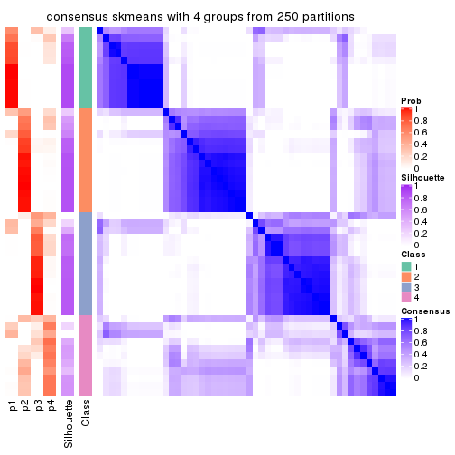
consensus_heatmap(res, k = 5)
consensus_heatmap(res, k = 6)
Heatmaps for the membership of samples in all partitions to see how consistent they are:
membership_heatmap(res, k = 2)
membership_heatmap(res, k = 3)
membership_heatmap(res, k = 4)
membership_heatmap(res, k = 5)
membership_heatmap(res, k = 6)

As soon as we have had the classes for columns, we can look for signatures which are significantly different between classes which can be candidate marks for certain classes. Following are the heatmaps for signatures.
Signature heatmaps where rows are scaled:
get_signatures(res, k = 2)

get_signatures(res, k = 3)
get_signatures(res, k = 4)
get_signatures(res, k = 5)
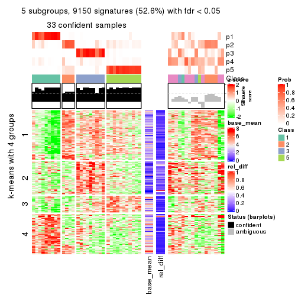
get_signatures(res, k = 6)
Signature heatmaps where rows are not scaled:
get_signatures(res, k = 2, scale_rows = FALSE)
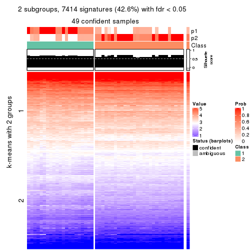
get_signatures(res, k = 3, scale_rows = FALSE)
get_signatures(res, k = 4, scale_rows = FALSE)
get_signatures(res, k = 5, scale_rows = FALSE)
get_signatures(res, k = 6, scale_rows = FALSE)
Compare the overlap of signatures from different k:
compare_signatures(res)
get_signature() returns a data frame invisibly. TO get the list of signatures, the function
call should be assigned to a variable explicitly. In following code, if plot argument is set
to FALSE, no heatmap is plotted while only the differential analysis is performed.
# code only for demonstration
tb = get_signature(res, k = ..., plot = FALSE)
An example of the output of tb is:
#> which_row fdr mean_1 mean_2 scaled_mean_1 scaled_mean_2 km
#> 1 38 0.042760348 8.373488 9.131774 -0.5533452 0.5164555 1
#> 2 40 0.018707592 7.106213 8.469186 -0.6173731 0.5762149 1
#> 3 55 0.019134737 10.221463 11.207825 -0.6159697 0.5749050 1
#> 4 59 0.006059896 5.921854 7.869574 -0.6899429 0.6439467 1
#> 5 60 0.018055526 8.928898 10.211722 -0.6204761 0.5791110 1
#> 6 98 0.009384629 15.714769 14.887706 0.6635654 -0.6193277 2
...
The columns in tb are:
which_row: row indices corresponding to the input matrix.fdr: FDR for the differential test. mean_x: The mean value in group x.scaled_mean_x: The mean value in group x after rows are scaled.km: Row groups if k-means clustering is applied to rows.UMAP plot which shows how samples are separated.
dimension_reduction(res, k = 2, method = "UMAP")
dimension_reduction(res, k = 3, method = "UMAP")
dimension_reduction(res, k = 4, method = "UMAP")
dimension_reduction(res, k = 5, method = "UMAP")
dimension_reduction(res, k = 6, method = "UMAP")
Following heatmap shows how subgroups are split when increasing k:
collect_classes(res)
If matrix rows can be associated to genes, consider to use functional_enrichment(res,
...) to perform function enrichment for the signature genes. See this vignette for more detailed explanations.
The object with results only for a single top-value method and a single partition method can be extracted as:
res = res_list["MAD", "pam"]
# you can also extract it by
# res = res_list["MAD:pam"]
A summary of res and all the functions that can be applied to it:
res
#> A 'ConsensusPartition' object with k = 2, 3, 4, 5, 6.
#> On a matrix with 17386 rows and 50 columns.
#> Top rows (1000, 2000, 3000, 4000, 5000) are extracted by 'MAD' method.
#> Subgroups are detected by 'pam' method.
#> Performed in total 1250 partitions by row resampling.
#> Best k for subgroups seems to be 2.
#>
#> Following methods can be applied to this 'ConsensusPartition' object:
#> [1] "cola_report" "collect_classes" "collect_plots"
#> [4] "collect_stats" "colnames" "compare_signatures"
#> [7] "consensus_heatmap" "dimension_reduction" "functional_enrichment"
#> [10] "get_anno_col" "get_anno" "get_classes"
#> [13] "get_consensus" "get_matrix" "get_membership"
#> [16] "get_param" "get_signatures" "get_stats"
#> [19] "is_best_k" "is_stable_k" "membership_heatmap"
#> [22] "ncol" "nrow" "plot_ecdf"
#> [25] "rownames" "select_partition_number" "show"
#> [28] "suggest_best_k" "test_to_known_factors"
collect_plots() function collects all the plots made from res for all k (number of partitions)
into one single page to provide an easy and fast comparison between different k.
collect_plots(res)
The plots are:
k and the heatmap of
predicted classes for each k.k.k.k.All the plots in panels can be made by individual functions and they are plotted later in this section.
select_partition_number() produces several plots showing different
statistics for choosing “optimized” k. There are following statistics:
k;k, the area increased is defined as \(A_k - A_{k-1}\).The detailed explanations of these statistics can be found in the cola vignette.
Generally speaking, lower PAC score, higher mean silhouette score or higher
concordance corresponds to better partition. Rand index and Jaccard index
measure how similar the current partition is compared to partition with k-1.
If they are too similar, we won't accept k is better than k-1.
select_partition_number(res)
The numeric values for all these statistics can be obtained by get_stats().
get_stats(res)
#> k 1-PAC mean_silhouette concordance area_increased Rand Jaccard
#> 2 2 0.517 0.759 0.893 0.5000 0.497 0.497
#> 3 3 0.418 0.537 0.734 0.2966 0.563 0.331
#> 4 4 0.590 0.683 0.834 0.1357 0.848 0.613
#> 5 5 0.761 0.801 0.887 0.0470 0.938 0.777
#> 6 6 0.849 0.695 0.866 0.0652 0.889 0.580
suggest_best_k() suggests the best \(k\) based on these statistics. The rules are as follows:
suggest_best_k(res)
#> [1] 2
Following shows the table of the partitions (You need to click the show/hide
code output link to see it). The membership matrix (columns with name p*)
is inferred by
clue::cl_consensus()
function with the SE method. Basically the value in the membership matrix
represents the probability to belong to a certain group. The finall class
label for an item is determined with the group with highest probability it
belongs to.
In get_classes() function, the entropy is calculated from the membership
matrix and the silhouette score is calculated from the consensus matrix.
cbind(get_classes(res, k = 2), get_membership(res, k = 2))
#> class entropy silhouette p1 p2
#> SRR2305538 1 0.0000 0.881 1.000 0.000
#> SRR2305506 2 0.5842 0.788 0.140 0.860
#> SRR2305537 1 0.0000 0.881 1.000 0.000
#> SRR2305476 1 0.1843 0.877 0.972 0.028
#> SRR2305508 2 0.6343 0.709 0.160 0.840
#> SRR2305521 2 0.0000 0.852 0.000 1.000
#> SRR2305486 2 0.1414 0.851 0.020 0.980
#> SRR2305503 2 0.1414 0.849 0.020 0.980
#> SRR2305519 2 0.0000 0.852 0.000 1.000
#> SRR2305515 2 0.0000 0.852 0.000 1.000
#> SRR2305528 2 0.0672 0.852 0.008 0.992
#> SRR2305518 2 0.9795 0.433 0.416 0.584
#> SRR2305527 2 0.9661 0.484 0.392 0.608
#> SRR2305498 2 0.0000 0.852 0.000 1.000
#> SRR2305488 1 0.0938 0.883 0.988 0.012
#> SRR2305512 1 0.9732 0.369 0.596 0.404
#> SRR2305474 2 0.0000 0.852 0.000 1.000
#> SRR2305495 1 0.1184 0.882 0.984 0.016
#> SRR2305536 2 0.0938 0.852 0.012 0.988
#> SRR2305525 2 0.7219 0.742 0.200 0.800
#> SRR2305494 2 0.0000 0.852 0.000 1.000
#> SRR2305532 1 0.9686 0.153 0.604 0.396
#> SRR2305500 2 0.0376 0.852 0.004 0.996
#> SRR2305509 2 0.0000 0.852 0.000 1.000
#> SRR2305501 2 0.1414 0.851 0.020 0.980
#> SRR2305524 1 0.7745 0.621 0.772 0.228
#> SRR2305491 1 0.9522 0.436 0.628 0.372
#> SRR2305489 1 0.0000 0.881 1.000 0.000
#> SRR2305516 1 0.0938 0.883 0.988 0.012
#> SRR2305507 2 0.0000 0.852 0.000 1.000
#> SRR2305497 2 0.0000 0.852 0.000 1.000
#> SRR2305482 1 0.0000 0.881 1.000 0.000
#> SRR2305485 2 0.0672 0.850 0.008 0.992
#> SRR2305472 1 0.0000 0.881 1.000 0.000
#> SRR2305513 1 0.1414 0.874 0.980 0.020
#> SRR2305540 1 0.0938 0.883 0.988 0.012
#> SRR2305522 2 0.9323 0.558 0.348 0.652
#> SRR2305520 2 0.7745 0.694 0.228 0.772
#> SRR2305533 1 0.0938 0.883 0.988 0.012
#> SRR2305534 1 0.0938 0.883 0.988 0.012
#> SRR2305517 2 0.9522 0.520 0.372 0.628
#> SRR2305504 1 0.2236 0.869 0.964 0.036
#> SRR2305511 2 0.9393 0.546 0.356 0.644
#> SRR2305492 2 0.5408 0.754 0.124 0.876
#> SRR2305514 2 0.4690 0.816 0.100 0.900
#> SRR2305531 2 0.9427 0.539 0.360 0.640
#> SRR2305535 1 0.0000 0.881 1.000 0.000
#> SRR2305477 1 0.0938 0.883 0.988 0.012
#> SRR2305480 1 0.9977 0.203 0.528 0.472
#> SRR2305529 1 0.2236 0.872 0.964 0.036
cbind(get_classes(res, k = 3), get_membership(res, k = 3))
#> class entropy silhouette p1 p2 p3
#> SRR2305538 1 0.0000 0.818 1.000 0.000 0.000
#> SRR2305506 2 0.6104 0.621 0.004 0.648 0.348
#> SRR2305537 1 0.0237 0.817 0.996 0.000 0.004
#> SRR2305476 2 0.6244 0.357 0.440 0.560 0.000
#> SRR2305508 3 0.5882 0.767 0.000 0.348 0.652
#> SRR2305521 2 0.1643 0.570 0.000 0.956 0.044
#> SRR2305486 2 0.5988 0.636 0.008 0.688 0.304
#> SRR2305503 2 0.5397 0.633 0.000 0.720 0.280
#> SRR2305519 2 0.0892 0.538 0.000 0.980 0.020
#> SRR2305515 2 0.0892 0.538 0.000 0.980 0.020
#> SRR2305528 3 0.6267 0.709 0.000 0.452 0.548
#> SRR2305518 2 0.6280 0.326 0.460 0.540 0.000
#> SRR2305527 2 0.6442 0.376 0.432 0.564 0.004
#> SRR2305498 3 0.5882 0.767 0.000 0.348 0.652
#> SRR2305488 2 0.6468 0.351 0.444 0.552 0.004
#> SRR2305512 2 0.9716 -0.392 0.344 0.428 0.228
#> SRR2305474 3 0.6280 0.702 0.000 0.460 0.540
#> SRR2305495 3 0.5882 0.340 0.348 0.000 0.652
#> SRR2305536 2 0.2845 0.583 0.012 0.920 0.068
#> SRR2305525 3 0.7441 0.617 0.136 0.164 0.700
#> SRR2305494 3 0.5882 0.767 0.000 0.348 0.652
#> SRR2305532 2 0.9136 0.500 0.264 0.540 0.196
#> SRR2305500 3 0.6489 0.705 0.004 0.456 0.540
#> SRR2305509 2 0.3686 0.555 0.000 0.860 0.140
#> SRR2305501 2 0.1482 0.547 0.012 0.968 0.020
#> SRR2305524 2 0.8324 0.356 0.372 0.540 0.088
#> SRR2305491 3 0.5882 0.767 0.000 0.348 0.652
#> SRR2305489 1 0.0000 0.818 1.000 0.000 0.000
#> SRR2305516 2 0.8604 0.558 0.112 0.540 0.348
#> SRR2305507 2 0.0892 0.538 0.000 0.980 0.020
#> SRR2305497 3 0.6111 0.746 0.000 0.396 0.604
#> SRR2305482 1 0.1031 0.807 0.976 0.024 0.000
#> SRR2305485 3 0.5882 0.767 0.000 0.348 0.652
#> SRR2305472 1 0.5623 0.506 0.716 0.004 0.280
#> SRR2305513 1 0.3116 0.746 0.892 0.000 0.108
#> SRR2305540 3 0.6566 0.276 0.376 0.012 0.612
#> SRR2305522 2 0.5953 0.632 0.012 0.708 0.280
#> SRR2305520 2 0.5480 0.539 0.264 0.732 0.004
#> SRR2305533 1 0.6062 0.253 0.616 0.000 0.384
#> SRR2305534 1 0.5327 0.378 0.728 0.272 0.000
#> SRR2305517 2 0.6818 0.614 0.024 0.628 0.348
#> SRR2305504 2 0.8332 0.488 0.316 0.580 0.104
#> SRR2305511 2 0.6104 0.621 0.004 0.648 0.348
#> SRR2305492 3 0.5882 0.767 0.000 0.348 0.652
#> SRR2305514 3 0.4342 0.371 0.024 0.120 0.856
#> SRR2305531 2 0.6104 0.621 0.004 0.648 0.348
#> SRR2305535 1 0.0237 0.817 0.996 0.004 0.000
#> SRR2305477 3 0.6824 0.233 0.408 0.016 0.576
#> SRR2305480 2 0.9629 -0.399 0.320 0.456 0.224
#> SRR2305529 3 0.6062 0.286 0.384 0.000 0.616
cbind(get_classes(res, k = 4), get_membership(res, k = 4))
#> class entropy silhouette p1 p2 p3 p4
#> SRR2305538 1 0.0000 0.808 1.000 0.000 0.000 0.000
#> SRR2305506 2 0.3400 0.727 0.000 0.820 0.000 0.180
#> SRR2305537 1 0.0707 0.803 0.980 0.000 0.000 0.020
#> SRR2305476 2 0.3688 0.706 0.208 0.792 0.000 0.000
#> SRR2305508 3 0.0000 0.705 0.000 0.000 1.000 0.000
#> SRR2305521 2 0.0000 0.744 0.000 1.000 0.000 0.000
#> SRR2305486 4 0.2611 0.854 0.008 0.096 0.000 0.896
#> SRR2305503 2 0.3172 0.735 0.000 0.840 0.000 0.160
#> SRR2305519 2 0.0000 0.744 0.000 1.000 0.000 0.000
#> SRR2305515 2 0.0000 0.744 0.000 1.000 0.000 0.000
#> SRR2305528 3 0.4866 0.620 0.000 0.404 0.596 0.000
#> SRR2305518 2 0.4420 0.677 0.240 0.748 0.000 0.012
#> SRR2305527 2 0.3907 0.692 0.232 0.768 0.000 0.000
#> SRR2305498 3 0.3266 0.798 0.000 0.168 0.832 0.000
#> SRR2305488 2 0.3801 0.699 0.220 0.780 0.000 0.000
#> SRR2305512 2 0.7869 -0.304 0.340 0.380 0.280 0.000
#> SRR2305474 3 0.4992 0.505 0.000 0.476 0.524 0.000
#> SRR2305495 4 0.3311 0.773 0.172 0.000 0.000 0.828
#> SRR2305536 2 0.0657 0.752 0.012 0.984 0.000 0.004
#> SRR2305525 4 0.2675 0.871 0.048 0.044 0.000 0.908
#> SRR2305494 3 0.3266 0.798 0.000 0.168 0.832 0.000
#> SRR2305532 2 0.6974 0.469 0.152 0.564 0.000 0.284
#> SRR2305500 3 0.5158 0.507 0.004 0.472 0.524 0.000
#> SRR2305509 4 0.3356 0.777 0.000 0.176 0.000 0.824
#> SRR2305501 2 0.0937 0.753 0.012 0.976 0.012 0.000
#> SRR2305524 2 0.5229 0.686 0.168 0.748 0.084 0.000
#> SRR2305491 3 0.3266 0.798 0.000 0.168 0.832 0.000
#> SRR2305489 1 0.0000 0.808 1.000 0.000 0.000 0.000
#> SRR2305516 4 0.0000 0.896 0.000 0.000 0.000 1.000
#> SRR2305507 2 0.0000 0.744 0.000 1.000 0.000 0.000
#> SRR2305497 3 0.4290 0.781 0.000 0.212 0.772 0.016
#> SRR2305482 1 0.0707 0.802 0.980 0.020 0.000 0.000
#> SRR2305485 3 0.0000 0.705 0.000 0.000 1.000 0.000
#> SRR2305472 1 0.3610 0.637 0.800 0.000 0.000 0.200
#> SRR2305513 1 0.4843 0.478 0.604 0.000 0.396 0.000
#> SRR2305540 3 0.3836 0.644 0.168 0.016 0.816 0.000
#> SRR2305522 2 0.3591 0.731 0.008 0.824 0.000 0.168
#> SRR2305520 2 0.2011 0.761 0.080 0.920 0.000 0.000
#> SRR2305533 1 0.4804 0.310 0.616 0.000 0.384 0.000
#> SRR2305534 1 0.4304 0.408 0.716 0.284 0.000 0.000
#> SRR2305517 4 0.0000 0.896 0.000 0.000 0.000 1.000
#> SRR2305504 2 0.4444 0.738 0.072 0.808 0.000 0.120
#> SRR2305511 4 0.0000 0.896 0.000 0.000 0.000 1.000
#> SRR2305492 3 0.3266 0.798 0.000 0.168 0.832 0.000
#> SRR2305514 4 0.0000 0.896 0.000 0.000 0.000 1.000
#> SRR2305531 4 0.0000 0.896 0.000 0.000 0.000 1.000
#> SRR2305535 1 0.0000 0.808 1.000 0.000 0.000 0.000
#> SRR2305477 4 0.3610 0.745 0.200 0.000 0.000 0.800
#> SRR2305480 2 0.7852 -0.298 0.332 0.392 0.276 0.000
#> SRR2305529 3 0.3356 0.646 0.176 0.000 0.824 0.000
cbind(get_classes(res, k = 5), get_membership(res, k = 5))
#> class entropy silhouette p1 p2 p3 p4 p5
#> SRR2305538 1 0.3216 0.808 0.848 0.044 0.000 0.108 0.000
#> SRR2305506 2 0.1608 0.860 0.000 0.928 0.000 0.000 0.072
#> SRR2305537 1 0.1106 0.826 0.964 0.000 0.000 0.012 0.024
#> SRR2305476 2 0.3395 0.773 0.236 0.764 0.000 0.000 0.000
#> SRR2305508 4 0.2280 0.896 0.000 0.000 0.120 0.880 0.000
#> SRR2305521 2 0.1121 0.873 0.000 0.956 0.044 0.000 0.000
#> SRR2305486 5 0.2172 0.890 0.004 0.060 0.020 0.000 0.916
#> SRR2305503 2 0.1121 0.866 0.000 0.956 0.000 0.000 0.044
#> SRR2305519 2 0.1121 0.873 0.000 0.956 0.044 0.000 0.000
#> SRR2305515 2 0.1121 0.873 0.000 0.956 0.044 0.000 0.000
#> SRR2305528 3 0.1197 0.809 0.000 0.048 0.952 0.000 0.000
#> SRR2305518 2 0.3548 0.797 0.188 0.796 0.000 0.012 0.004
#> SRR2305527 2 0.3163 0.817 0.164 0.824 0.000 0.012 0.000
#> SRR2305498 3 0.0000 0.810 0.000 0.000 1.000 0.000 0.000
#> SRR2305488 2 0.3480 0.764 0.248 0.752 0.000 0.000 0.000
#> SRR2305512 3 0.5311 0.639 0.164 0.036 0.720 0.080 0.000
#> SRR2305474 3 0.1851 0.794 0.000 0.088 0.912 0.000 0.000
#> SRR2305495 5 0.2280 0.853 0.120 0.000 0.000 0.000 0.880
#> SRR2305536 2 0.1205 0.874 0.004 0.956 0.040 0.000 0.000
#> SRR2305525 5 0.0963 0.921 0.036 0.000 0.000 0.000 0.964
#> SRR2305494 3 0.0000 0.810 0.000 0.000 1.000 0.000 0.000
#> SRR2305532 2 0.6278 0.472 0.132 0.552 0.000 0.012 0.304
#> SRR2305500 3 0.1851 0.794 0.000 0.088 0.912 0.000 0.000
#> SRR2305509 5 0.2359 0.875 0.000 0.060 0.036 0.000 0.904
#> SRR2305501 2 0.1205 0.873 0.000 0.956 0.040 0.004 0.000
#> SRR2305524 2 0.3113 0.816 0.100 0.864 0.016 0.020 0.000
#> SRR2305491 3 0.1197 0.804 0.048 0.000 0.952 0.000 0.000
#> SRR2305489 1 0.0404 0.825 0.988 0.000 0.000 0.012 0.000
#> SRR2305516 5 0.0000 0.932 0.000 0.000 0.000 0.000 1.000
#> SRR2305507 2 0.1121 0.873 0.000 0.956 0.044 0.000 0.000
#> SRR2305497 3 0.0912 0.813 0.000 0.016 0.972 0.000 0.012
#> SRR2305482 1 0.2136 0.830 0.904 0.008 0.000 0.088 0.000
#> SRR2305485 3 0.4060 0.336 0.000 0.000 0.640 0.360 0.000
#> SRR2305472 1 0.3749 0.754 0.816 0.000 0.000 0.080 0.104
#> SRR2305513 4 0.1043 0.891 0.000 0.000 0.040 0.960 0.000
#> SRR2305540 3 0.6374 0.421 0.144 0.208 0.612 0.000 0.036
#> SRR2305522 2 0.1671 0.858 0.000 0.924 0.000 0.000 0.076
#> SRR2305520 2 0.1251 0.874 0.008 0.956 0.036 0.000 0.000
#> SRR2305533 1 0.4518 0.653 0.772 0.044 0.156 0.028 0.000
#> SRR2305534 1 0.3123 0.650 0.828 0.160 0.000 0.012 0.000
#> SRR2305517 5 0.0000 0.932 0.000 0.000 0.000 0.000 1.000
#> SRR2305504 2 0.4277 0.799 0.156 0.768 0.000 0.000 0.076
#> SRR2305511 5 0.0000 0.932 0.000 0.000 0.000 0.000 1.000
#> SRR2305492 3 0.0000 0.810 0.000 0.000 1.000 0.000 0.000
#> SRR2305514 5 0.0000 0.932 0.000 0.000 0.000 0.000 1.000
#> SRR2305531 5 0.0000 0.932 0.000 0.000 0.000 0.000 1.000
#> SRR2305535 1 0.1851 0.830 0.912 0.000 0.000 0.088 0.000
#> SRR2305477 5 0.2561 0.829 0.144 0.000 0.000 0.000 0.856
#> SRR2305480 3 0.5017 0.665 0.156 0.040 0.744 0.060 0.000
#> SRR2305529 3 0.3395 0.639 0.236 0.000 0.764 0.000 0.000
cbind(get_classes(res, k = 6), get_membership(res, k = 6))
#> class entropy silhouette p1 p2 p3 p4 p5 p6
#> SRR2305538 1 0.0000 0.6411 1.000 0.000 0.000 0.0 0.000 0.000
#> SRR2305506 2 0.0790 0.8109 0.000 0.968 0.000 0.0 0.032 0.000
#> SRR2305537 6 0.3778 0.4715 0.272 0.000 0.000 0.0 0.020 0.708
#> SRR2305476 6 0.3531 0.5042 0.000 0.328 0.000 0.0 0.000 0.672
#> SRR2305508 4 0.0000 1.0000 0.000 0.000 0.000 1.0 0.000 0.000
#> SRR2305521 2 0.0000 0.8324 0.000 1.000 0.000 0.0 0.000 0.000
#> SRR2305486 5 0.1204 0.9322 0.000 0.056 0.000 0.0 0.944 0.000
#> SRR2305503 2 0.0000 0.8324 0.000 1.000 0.000 0.0 0.000 0.000
#> SRR2305519 2 0.0000 0.8324 0.000 1.000 0.000 0.0 0.000 0.000
#> SRR2305515 2 0.0000 0.8324 0.000 1.000 0.000 0.0 0.000 0.000
#> SRR2305528 3 0.0458 0.8799 0.000 0.016 0.984 0.0 0.000 0.000
#> SRR2305518 2 0.3854 0.3292 0.000 0.536 0.000 0.0 0.000 0.464
#> SRR2305527 2 0.3774 0.4290 0.000 0.592 0.000 0.0 0.000 0.408
#> SRR2305498 3 0.0000 0.8920 0.000 0.000 1.000 0.0 0.000 0.000
#> SRR2305488 6 0.1556 0.6097 0.000 0.080 0.000 0.0 0.000 0.920
#> SRR2305512 1 0.3857 0.0339 0.532 0.000 0.468 0.0 0.000 0.000
#> SRR2305474 3 0.0000 0.8920 0.000 0.000 1.000 0.0 0.000 0.000
#> SRR2305495 5 0.1444 0.9196 0.000 0.000 0.000 0.0 0.928 0.072
#> SRR2305536 2 0.0000 0.8324 0.000 1.000 0.000 0.0 0.000 0.000
#> SRR2305525 5 0.0547 0.9545 0.000 0.000 0.000 0.0 0.980 0.020
#> SRR2305494 3 0.0000 0.8920 0.000 0.000 1.000 0.0 0.000 0.000
#> SRR2305532 6 0.5022 -0.1246 0.000 0.396 0.000 0.0 0.076 0.528
#> SRR2305500 3 0.0000 0.8920 0.000 0.000 1.000 0.0 0.000 0.000
#> SRR2305509 5 0.1204 0.9322 0.000 0.056 0.000 0.0 0.944 0.000
#> SRR2305501 2 0.0000 0.8324 0.000 1.000 0.000 0.0 0.000 0.000
#> SRR2305524 2 0.5720 -0.2774 0.164 0.436 0.000 0.0 0.000 0.400
#> SRR2305491 3 0.0865 0.8628 0.000 0.000 0.964 0.0 0.000 0.036
#> SRR2305489 6 0.2854 0.5266 0.208 0.000 0.000 0.0 0.000 0.792
#> SRR2305516 5 0.0146 0.9595 0.000 0.000 0.000 0.0 0.996 0.004
#> SRR2305507 2 0.0000 0.8324 0.000 1.000 0.000 0.0 0.000 0.000
#> SRR2305497 3 0.0000 0.8920 0.000 0.000 1.000 0.0 0.000 0.000
#> SRR2305482 1 0.3874 0.6286 0.760 0.068 0.000 0.0 0.000 0.172
#> SRR2305485 3 0.3756 0.2718 0.000 0.000 0.600 0.4 0.000 0.000
#> SRR2305472 1 0.3078 0.6917 0.836 0.000 0.000 0.0 0.056 0.108
#> SRR2305513 4 0.0000 1.0000 0.000 0.000 0.000 1.0 0.000 0.000
#> SRR2305540 6 0.2595 0.5853 0.160 0.000 0.004 0.0 0.000 0.836
#> SRR2305522 2 0.3671 0.6381 0.000 0.756 0.000 0.0 0.036 0.208
#> SRR2305520 2 0.0000 0.8324 0.000 1.000 0.000 0.0 0.000 0.000
#> SRR2305533 6 0.3857 0.4101 0.468 0.000 0.000 0.0 0.000 0.532
#> SRR2305534 6 0.0000 0.5868 0.000 0.000 0.000 0.0 0.000 1.000
#> SRR2305517 5 0.0000 0.9607 0.000 0.000 0.000 0.0 1.000 0.000
#> SRR2305504 6 0.4344 0.4787 0.000 0.336 0.000 0.0 0.036 0.628
#> SRR2305511 5 0.0000 0.9607 0.000 0.000 0.000 0.0 1.000 0.000
#> SRR2305492 3 0.0000 0.8920 0.000 0.000 1.000 0.0 0.000 0.000
#> SRR2305514 5 0.0000 0.9607 0.000 0.000 0.000 0.0 1.000 0.000
#> SRR2305531 5 0.0000 0.9607 0.000 0.000 0.000 0.0 1.000 0.000
#> SRR2305535 1 0.2491 0.6961 0.836 0.000 0.000 0.0 0.000 0.164
#> SRR2305477 5 0.1610 0.9099 0.000 0.000 0.000 0.0 0.916 0.084
#> SRR2305480 3 0.3659 0.2810 0.364 0.000 0.636 0.0 0.000 0.000
#> SRR2305529 6 0.5152 0.2991 0.092 0.000 0.376 0.0 0.000 0.532
Heatmaps for the consensus matrix. It visualizes the probability of two samples to be in a same group.
consensus_heatmap(res, k = 2)

consensus_heatmap(res, k = 3)
consensus_heatmap(res, k = 4)
consensus_heatmap(res, k = 5)
consensus_heatmap(res, k = 6)
Heatmaps for the membership of samples in all partitions to see how consistent they are:
membership_heatmap(res, k = 2)
membership_heatmap(res, k = 3)

membership_heatmap(res, k = 4)
membership_heatmap(res, k = 5)
membership_heatmap(res, k = 6)
As soon as we have had the classes for columns, we can look for signatures which are significantly different between classes which can be candidate marks for certain classes. Following are the heatmaps for signatures.
Signature heatmaps where rows are scaled:
get_signatures(res, k = 2)
get_signatures(res, k = 3)
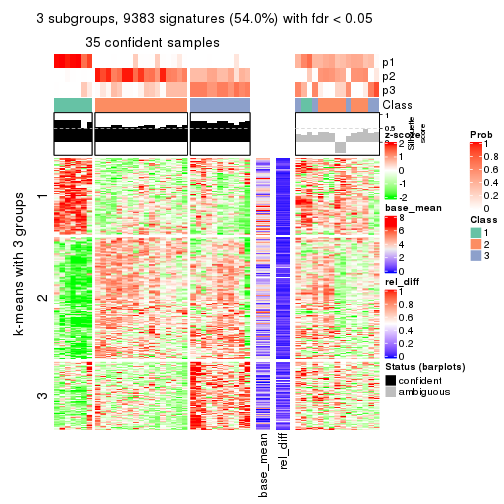
get_signatures(res, k = 4)
get_signatures(res, k = 5)

get_signatures(res, k = 6)
Signature heatmaps where rows are not scaled:
get_signatures(res, k = 2, scale_rows = FALSE)
get_signatures(res, k = 3, scale_rows = FALSE)
get_signatures(res, k = 4, scale_rows = FALSE)

get_signatures(res, k = 5, scale_rows = FALSE)
get_signatures(res, k = 6, scale_rows = FALSE)
Compare the overlap of signatures from different k:
compare_signatures(res)

get_signature() returns a data frame invisibly. TO get the list of signatures, the function
call should be assigned to a variable explicitly. In following code, if plot argument is set
to FALSE, no heatmap is plotted while only the differential analysis is performed.
# code only for demonstration
tb = get_signature(res, k = ..., plot = FALSE)
An example of the output of tb is:
#> which_row fdr mean_1 mean_2 scaled_mean_1 scaled_mean_2 km
#> 1 38 0.042760348 8.373488 9.131774 -0.5533452 0.5164555 1
#> 2 40 0.018707592 7.106213 8.469186 -0.6173731 0.5762149 1
#> 3 55 0.019134737 10.221463 11.207825 -0.6159697 0.5749050 1
#> 4 59 0.006059896 5.921854 7.869574 -0.6899429 0.6439467 1
#> 5 60 0.018055526 8.928898 10.211722 -0.6204761 0.5791110 1
#> 6 98 0.009384629 15.714769 14.887706 0.6635654 -0.6193277 2
...
The columns in tb are:
which_row: row indices corresponding to the input matrix.fdr: FDR for the differential test. mean_x: The mean value in group x.scaled_mean_x: The mean value in group x after rows are scaled.km: Row groups if k-means clustering is applied to rows.UMAP plot which shows how samples are separated.
dimension_reduction(res, k = 2, method = "UMAP")
dimension_reduction(res, k = 3, method = "UMAP")
dimension_reduction(res, k = 4, method = "UMAP")
dimension_reduction(res, k = 5, method = "UMAP")
dimension_reduction(res, k = 6, method = "UMAP")
Following heatmap shows how subgroups are split when increasing k:
collect_classes(res)
If matrix rows can be associated to genes, consider to use functional_enrichment(res,
...) to perform function enrichment for the signature genes. See this vignette for more detailed explanations.
The object with results only for a single top-value method and a single partition method can be extracted as:
res = res_list["MAD", "mclust"]
# you can also extract it by
# res = res_list["MAD:mclust"]
A summary of res and all the functions that can be applied to it:
res
#> A 'ConsensusPartition' object with k = 2, 3, 4, 5, 6.
#> On a matrix with 17386 rows and 50 columns.
#> Top rows (1000, 2000, 3000, 4000, 5000) are extracted by 'MAD' method.
#> Subgroups are detected by 'mclust' method.
#> Performed in total 1250 partitions by row resampling.
#> Best k for subgroups seems to be 2.
#>
#> Following methods can be applied to this 'ConsensusPartition' object:
#> [1] "cola_report" "collect_classes" "collect_plots"
#> [4] "collect_stats" "colnames" "compare_signatures"
#> [7] "consensus_heatmap" "dimension_reduction" "functional_enrichment"
#> [10] "get_anno_col" "get_anno" "get_classes"
#> [13] "get_consensus" "get_matrix" "get_membership"
#> [16] "get_param" "get_signatures" "get_stats"
#> [19] "is_best_k" "is_stable_k" "membership_heatmap"
#> [22] "ncol" "nrow" "plot_ecdf"
#> [25] "rownames" "select_partition_number" "show"
#> [28] "suggest_best_k" "test_to_known_factors"
collect_plots() function collects all the plots made from res for all k (number of partitions)
into one single page to provide an easy and fast comparison between different k.
collect_plots(res)
The plots are:
k and the heatmap of
predicted classes for each k.k.k.k.All the plots in panels can be made by individual functions and they are plotted later in this section.
select_partition_number() produces several plots showing different
statistics for choosing “optimized” k. There are following statistics:
k;k, the area increased is defined as \(A_k - A_{k-1}\).The detailed explanations of these statistics can be found in the cola vignette.
Generally speaking, lower PAC score, higher mean silhouette score or higher
concordance corresponds to better partition. Rand index and Jaccard index
measure how similar the current partition is compared to partition with k-1.
If they are too similar, we won't accept k is better than k-1.
select_partition_number(res)
The numeric values for all these statistics can be obtained by get_stats().
get_stats(res)
#> k 1-PAC mean_silhouette concordance area_increased Rand Jaccard
#> 2 2 0.249 0.755 0.848 0.4159 0.503 0.503
#> 3 3 0.565 0.744 0.884 0.1767 0.739 0.595
#> 4 4 0.572 0.618 0.782 0.2100 0.876 0.788
#> 5 5 0.523 0.553 0.736 0.2163 0.666 0.401
#> 6 6 0.498 0.516 0.712 0.0735 0.742 0.336
suggest_best_k() suggests the best \(k\) based on these statistics. The rules are as follows:
suggest_best_k(res)
#> [1] 2
Following shows the table of the partitions (You need to click the show/hide
code output link to see it). The membership matrix (columns with name p*)
is inferred by
clue::cl_consensus()
function with the SE method. Basically the value in the membership matrix
represents the probability to belong to a certain group. The finall class
label for an item is determined with the group with highest probability it
belongs to.
In get_classes() function, the entropy is calculated from the membership
matrix and the silhouette score is calculated from the consensus matrix.
cbind(get_classes(res, k = 2), get_membership(res, k = 2))
#> class entropy silhouette p1 p2
#> SRR2305538 1 0.7056 0.7396 0.808 0.192
#> SRR2305506 2 0.6343 0.7605 0.160 0.840
#> SRR2305537 1 0.7139 0.7410 0.804 0.196
#> SRR2305476 2 0.6438 0.7519 0.164 0.836
#> SRR2305508 1 0.6973 0.7424 0.812 0.188
#> SRR2305521 2 0.1184 0.8934 0.016 0.984
#> SRR2305486 2 0.0938 0.8939 0.012 0.988
#> SRR2305503 2 0.0672 0.8932 0.008 0.992
#> SRR2305519 1 0.9393 0.5437 0.644 0.356
#> SRR2305515 2 0.1184 0.8934 0.016 0.984
#> SRR2305528 2 0.2603 0.8798 0.044 0.956
#> SRR2305518 2 0.0000 0.8898 0.000 1.000
#> SRR2305527 2 0.0938 0.8881 0.012 0.988
#> SRR2305498 2 0.8081 0.6356 0.248 0.752
#> SRR2305488 1 0.9635 0.6723 0.612 0.388
#> SRR2305512 1 0.8386 0.7388 0.732 0.268
#> SRR2305474 2 0.6148 0.7933 0.152 0.848
#> SRR2305495 2 0.0672 0.8933 0.008 0.992
#> SRR2305536 2 0.1184 0.8934 0.016 0.984
#> SRR2305525 2 0.0938 0.8939 0.012 0.988
#> SRR2305494 1 0.9993 0.1469 0.516 0.484
#> SRR2305532 2 0.0000 0.8898 0.000 1.000
#> SRR2305500 2 0.6247 0.7646 0.156 0.844
#> SRR2305509 2 0.2043 0.8867 0.032 0.968
#> SRR2305501 2 0.6887 0.7213 0.184 0.816
#> SRR2305524 2 0.8909 0.3996 0.308 0.692
#> SRR2305491 1 0.7056 0.7423 0.808 0.192
#> SRR2305489 1 0.7139 0.7402 0.804 0.196
#> SRR2305516 2 0.0000 0.8898 0.000 1.000
#> SRR2305507 2 0.0672 0.8933 0.008 0.992
#> SRR2305497 1 0.8713 0.6508 0.708 0.292
#> SRR2305482 1 0.7056 0.7396 0.808 0.192
#> SRR2305485 1 0.6973 0.7424 0.812 0.188
#> SRR2305472 1 0.7056 0.7396 0.808 0.192
#> SRR2305513 1 0.0000 0.6610 1.000 0.000
#> SRR2305540 2 0.9686 0.0174 0.396 0.604
#> SRR2305522 2 0.0000 0.8898 0.000 1.000
#> SRR2305520 2 0.5178 0.8173 0.116 0.884
#> SRR2305533 1 0.9580 0.6818 0.620 0.380
#> SRR2305534 1 0.9608 0.6779 0.616 0.384
#> SRR2305517 2 0.0000 0.8898 0.000 1.000
#> SRR2305504 1 0.9580 0.6818 0.620 0.380
#> SRR2305511 2 0.0000 0.8898 0.000 1.000
#> SRR2305492 1 0.7056 0.7423 0.808 0.192
#> SRR2305514 2 0.0938 0.8939 0.012 0.988
#> SRR2305531 2 0.0000 0.8898 0.000 1.000
#> SRR2305535 1 0.7139 0.7402 0.804 0.196
#> SRR2305477 2 0.3431 0.8651 0.064 0.936
#> SRR2305480 1 0.7056 0.7423 0.808 0.192
#> SRR2305529 1 0.9323 0.7074 0.652 0.348
cbind(get_classes(res, k = 3), get_membership(res, k = 3))
#> class entropy silhouette p1 p2 p3
#> SRR2305538 1 0.1525 0.8380 0.964 0.032 0.004
#> SRR2305506 2 0.2625 0.8620 0.084 0.916 0.000
#> SRR2305537 1 0.1525 0.8380 0.964 0.032 0.004
#> SRR2305476 2 0.2625 0.8620 0.084 0.916 0.000
#> SRR2305508 3 0.3816 0.6452 0.148 0.000 0.852
#> SRR2305521 2 0.0237 0.8878 0.000 0.996 0.004
#> SRR2305486 2 0.0592 0.8874 0.000 0.988 0.012
#> SRR2305503 2 0.0424 0.8878 0.000 0.992 0.008
#> SRR2305519 3 0.6267 0.1248 0.000 0.452 0.548
#> SRR2305515 2 0.0424 0.8878 0.000 0.992 0.008
#> SRR2305528 2 0.3038 0.8523 0.000 0.896 0.104
#> SRR2305518 2 0.1031 0.8842 0.000 0.976 0.024
#> SRR2305527 2 0.0892 0.8854 0.000 0.980 0.020
#> SRR2305498 2 0.4654 0.7446 0.000 0.792 0.208
#> SRR2305488 2 0.3116 0.8488 0.108 0.892 0.000
#> SRR2305512 2 0.9982 -0.2884 0.308 0.360 0.332
#> SRR2305474 2 0.3551 0.8298 0.000 0.868 0.132
#> SRR2305495 2 0.0892 0.8868 0.020 0.980 0.000
#> SRR2305536 2 0.0592 0.8874 0.000 0.988 0.012
#> SRR2305525 2 0.0592 0.8874 0.000 0.988 0.012
#> SRR2305494 2 0.7653 0.4724 0.080 0.644 0.276
#> SRR2305532 2 0.1031 0.8842 0.000 0.976 0.024
#> SRR2305500 2 0.3340 0.8396 0.000 0.880 0.120
#> SRR2305509 2 0.2356 0.8701 0.000 0.928 0.072
#> SRR2305501 2 0.3030 0.8588 0.092 0.904 0.004
#> SRR2305524 2 0.2625 0.8620 0.084 0.916 0.000
#> SRR2305491 3 0.1585 0.6805 0.008 0.028 0.964
#> SRR2305489 1 0.1753 0.8364 0.952 0.048 0.000
#> SRR2305516 2 0.1267 0.8836 0.004 0.972 0.024
#> SRR2305507 2 0.0592 0.8874 0.000 0.988 0.012
#> SRR2305497 3 0.6192 0.2342 0.000 0.420 0.580
#> SRR2305482 1 0.2496 0.8120 0.928 0.068 0.004
#> SRR2305485 3 0.3816 0.6452 0.148 0.000 0.852
#> SRR2305472 1 0.1525 0.8380 0.964 0.032 0.004
#> SRR2305513 3 0.3816 0.6452 0.148 0.000 0.852
#> SRR2305540 2 0.3644 0.8390 0.124 0.872 0.004
#> SRR2305522 2 0.1411 0.8841 0.000 0.964 0.036
#> SRR2305520 2 0.3340 0.8396 0.000 0.880 0.120
#> SRR2305533 2 0.6814 0.4142 0.372 0.608 0.020
#> SRR2305534 1 0.6305 -0.0846 0.516 0.484 0.000
#> SRR2305517 2 0.1031 0.8842 0.000 0.976 0.024
#> SRR2305504 2 0.3412 0.8412 0.124 0.876 0.000
#> SRR2305511 2 0.1031 0.8842 0.000 0.976 0.024
#> SRR2305492 3 0.1411 0.6802 0.000 0.036 0.964
#> SRR2305514 2 0.0592 0.8874 0.000 0.988 0.012
#> SRR2305531 2 0.1163 0.8844 0.000 0.972 0.028
#> SRR2305535 1 0.1753 0.8364 0.952 0.048 0.000
#> SRR2305477 2 0.0237 0.8876 0.004 0.996 0.000
#> SRR2305480 3 0.3359 0.6701 0.016 0.084 0.900
#> SRR2305529 2 0.6677 0.4755 0.024 0.652 0.324
cbind(get_classes(res, k = 4), get_membership(res, k = 4))
#> class entropy silhouette p1 p2 p3 p4
#> SRR2305538 1 0.5452 0.6995 0.556 0.000 0.016 0.428
#> SRR2305506 2 0.2635 0.8028 0.000 0.904 0.020 0.076
#> SRR2305537 1 0.0592 0.5451 0.984 0.000 0.000 0.016
#> SRR2305476 2 0.1411 0.8047 0.000 0.960 0.020 0.020
#> SRR2305508 3 0.0707 0.5518 0.020 0.000 0.980 0.000
#> SRR2305521 2 0.1975 0.8071 0.000 0.936 0.016 0.048
#> SRR2305486 2 0.2469 0.7954 0.000 0.892 0.000 0.108
#> SRR2305503 2 0.0188 0.8066 0.000 0.996 0.004 0.000
#> SRR2305519 2 0.7706 -0.0679 0.000 0.412 0.224 0.364
#> SRR2305515 2 0.0336 0.8066 0.000 0.992 0.008 0.000
#> SRR2305528 2 0.3266 0.7179 0.000 0.832 0.000 0.168
#> SRR2305518 2 0.2142 0.7928 0.016 0.928 0.000 0.056
#> SRR2305527 2 0.2300 0.7900 0.016 0.920 0.000 0.064
#> SRR2305498 2 0.4916 0.3907 0.000 0.576 0.000 0.424
#> SRR2305488 2 0.3697 0.7604 0.048 0.852 0.000 0.100
#> SRR2305512 4 0.4886 0.0000 0.008 0.016 0.244 0.732
#> SRR2305474 2 0.4866 0.4111 0.000 0.596 0.000 0.404
#> SRR2305495 2 0.2089 0.8068 0.000 0.932 0.020 0.048
#> SRR2305536 2 0.3048 0.7953 0.016 0.876 0.000 0.108
#> SRR2305525 2 0.2216 0.8011 0.000 0.908 0.000 0.092
#> SRR2305494 2 0.5917 0.3296 0.000 0.520 0.036 0.444
#> SRR2305532 2 0.2861 0.7999 0.016 0.888 0.000 0.096
#> SRR2305500 2 0.5435 0.3916 0.016 0.564 0.000 0.420
#> SRR2305509 2 0.3048 0.7953 0.016 0.876 0.000 0.108
#> SRR2305501 2 0.2364 0.7983 0.008 0.928 0.028 0.036
#> SRR2305524 2 0.4057 0.7390 0.028 0.812 0.000 0.160
#> SRR2305491 3 0.5339 0.2769 0.000 0.016 0.600 0.384
#> SRR2305489 1 0.4961 0.6912 0.552 0.000 0.000 0.448
#> SRR2305516 2 0.3160 0.7928 0.000 0.872 0.020 0.108
#> SRR2305507 2 0.0188 0.8059 0.000 0.996 0.000 0.004
#> SRR2305497 2 0.8195 -0.1780 0.012 0.372 0.252 0.364
#> SRR2305482 1 0.5452 0.6995 0.556 0.000 0.016 0.428
#> SRR2305485 3 0.0707 0.5518 0.020 0.000 0.980 0.000
#> SRR2305472 1 0.4955 0.6968 0.556 0.000 0.000 0.444
#> SRR2305513 3 0.0707 0.5518 0.020 0.000 0.980 0.000
#> SRR2305540 2 0.5080 0.7031 0.136 0.784 0.016 0.064
#> SRR2305522 2 0.0188 0.8059 0.000 0.996 0.000 0.004
#> SRR2305520 2 0.4468 0.6737 0.016 0.752 0.000 0.232
#> SRR2305533 1 0.5108 0.4164 0.796 0.108 0.032 0.064
#> SRR2305534 1 0.4297 0.4331 0.820 0.096 0.000 0.084
#> SRR2305517 2 0.3048 0.7935 0.000 0.876 0.016 0.108
#> SRR2305504 2 0.2803 0.7854 0.012 0.900 0.008 0.080
#> SRR2305511 2 0.2928 0.7942 0.000 0.880 0.012 0.108
#> SRR2305492 3 0.5428 0.2812 0.000 0.020 0.600 0.380
#> SRR2305514 2 0.3048 0.7953 0.016 0.876 0.000 0.108
#> SRR2305531 2 0.2928 0.7942 0.000 0.880 0.012 0.108
#> SRR2305535 1 0.4977 0.6912 0.540 0.000 0.000 0.460
#> SRR2305477 2 0.3108 0.7993 0.016 0.872 0.000 0.112
#> SRR2305480 3 0.5428 0.2812 0.000 0.020 0.600 0.380
#> SRR2305529 2 0.5500 0.3169 0.000 0.520 0.016 0.464
cbind(get_classes(res, k = 5), get_membership(res, k = 5))
#> class entropy silhouette p1 p2 p3 p4 p5
#> SRR2305538 1 0.0000 0.8718 1.000 0.000 0.000 0.000 0.000
#> SRR2305506 5 0.4218 0.6914 0.000 0.332 0.008 0.000 0.660
#> SRR2305537 2 0.6973 -0.3406 0.380 0.416 0.020 0.184 0.000
#> SRR2305476 5 0.4482 0.6312 0.000 0.376 0.012 0.000 0.612
#> SRR2305508 4 0.2966 0.9899 0.000 0.000 0.184 0.816 0.000
#> SRR2305521 5 0.5080 0.6777 0.000 0.316 0.056 0.000 0.628
#> SRR2305486 5 0.0162 0.7513 0.000 0.000 0.004 0.000 0.996
#> SRR2305503 5 0.4062 0.7622 0.000 0.196 0.040 0.000 0.764
#> SRR2305519 3 0.1205 0.4668 0.000 0.040 0.956 0.000 0.004
#> SRR2305515 5 0.4602 0.7055 0.000 0.316 0.028 0.000 0.656
#> SRR2305528 5 0.6371 0.3719 0.000 0.200 0.292 0.000 0.508
#> SRR2305518 5 0.3835 0.7293 0.000 0.260 0.008 0.000 0.732
#> SRR2305527 2 0.4305 -0.2003 0.000 0.512 0.000 0.000 0.488
#> SRR2305498 3 0.4973 0.4530 0.000 0.320 0.632 0.000 0.048
#> SRR2305488 2 0.4943 0.4928 0.200 0.716 0.008 0.000 0.076
#> SRR2305512 3 0.6921 0.3419 0.244 0.188 0.532 0.036 0.000
#> SRR2305474 3 0.4823 0.4612 0.000 0.316 0.644 0.000 0.040
#> SRR2305495 5 0.4109 0.7322 0.000 0.288 0.012 0.000 0.700
#> SRR2305536 5 0.0324 0.7538 0.000 0.004 0.004 0.000 0.992
#> SRR2305525 5 0.3608 0.7880 0.000 0.148 0.040 0.000 0.812
#> SRR2305494 3 0.5094 0.4350 0.000 0.352 0.600 0.000 0.048
#> SRR2305532 5 0.2886 0.7984 0.000 0.148 0.008 0.000 0.844
#> SRR2305500 3 0.6456 0.1429 0.000 0.392 0.428 0.000 0.180
#> SRR2305509 5 0.2230 0.7985 0.000 0.116 0.000 0.000 0.884
#> SRR2305501 2 0.6011 -0.0521 0.000 0.528 0.128 0.000 0.344
#> SRR2305524 2 0.5613 0.4296 0.088 0.716 0.120 0.000 0.076
#> SRR2305491 3 0.3534 0.1276 0.000 0.000 0.744 0.256 0.000
#> SRR2305489 1 0.0000 0.8718 1.000 0.000 0.000 0.000 0.000
#> SRR2305516 5 0.0566 0.7433 0.000 0.012 0.004 0.000 0.984
#> SRR2305507 5 0.4400 0.7495 0.000 0.196 0.060 0.000 0.744
#> SRR2305497 3 0.0794 0.4235 0.000 0.000 0.972 0.000 0.028
#> SRR2305482 1 0.0000 0.8718 1.000 0.000 0.000 0.000 0.000
#> SRR2305485 4 0.3355 0.9846 0.000 0.012 0.184 0.804 0.000
#> SRR2305472 1 0.0703 0.8555 0.976 0.024 0.000 0.000 0.000
#> SRR2305513 4 0.3123 0.9901 0.004 0.000 0.184 0.812 0.000
#> SRR2305540 2 0.3018 0.5046 0.056 0.872 0.004 0.000 0.068
#> SRR2305522 5 0.3885 0.7202 0.000 0.268 0.008 0.000 0.724
#> SRR2305520 2 0.5090 0.2760 0.000 0.688 0.208 0.000 0.104
#> SRR2305533 2 0.6638 0.1239 0.212 0.588 0.156 0.044 0.000
#> SRR2305534 1 0.6978 0.1189 0.400 0.396 0.020 0.184 0.000
#> SRR2305517 5 0.2522 0.7987 0.000 0.108 0.012 0.000 0.880
#> SRR2305504 2 0.1608 0.4860 0.000 0.928 0.000 0.000 0.072
#> SRR2305511 5 0.0566 0.7433 0.000 0.012 0.004 0.000 0.984
#> SRR2305492 3 0.4201 -0.2874 0.000 0.000 0.592 0.408 0.000
#> SRR2305514 5 0.0162 0.7513 0.000 0.000 0.004 0.000 0.996
#> SRR2305531 5 0.0566 0.7433 0.000 0.012 0.004 0.000 0.984
#> SRR2305535 1 0.0000 0.8718 1.000 0.000 0.000 0.000 0.000
#> SRR2305477 5 0.2389 0.7984 0.000 0.116 0.004 0.000 0.880
#> SRR2305480 3 0.6147 0.2719 0.000 0.188 0.556 0.256 0.000
#> SRR2305529 3 0.5037 0.4218 0.000 0.376 0.584 0.000 0.040
cbind(get_classes(res, k = 6), get_membership(res, k = 6))
#> class entropy silhouette p1 p2 p3 p4 p5 p6
#> SRR2305538 1 0.0363 0.907 0.988 0.000 0.012 0.000 0.000 0.000
#> SRR2305506 5 0.6159 0.320 0.004 0.256 0.000 0.000 0.404 0.336
#> SRR2305537 6 0.5571 0.552 0.224 0.000 0.224 0.000 0.000 0.552
#> SRR2305476 2 0.5700 0.339 0.004 0.548 0.000 0.000 0.236 0.212
#> SRR2305508 4 0.1501 0.549 0.000 0.000 0.076 0.924 0.000 0.000
#> SRR2305521 2 0.5855 0.250 0.000 0.456 0.000 0.000 0.340 0.204
#> SRR2305486 5 0.0632 0.740 0.000 0.024 0.000 0.000 0.976 0.000
#> SRR2305503 2 0.5749 0.365 0.000 0.548 0.012 0.000 0.284 0.156
#> SRR2305519 3 0.3983 0.615 0.000 0.348 0.640 0.008 0.004 0.000
#> SRR2305515 2 0.5383 0.490 0.000 0.580 0.000 0.000 0.172 0.248
#> SRR2305528 2 0.3221 0.484 0.000 0.772 0.004 0.000 0.220 0.004
#> SRR2305518 2 0.6387 0.336 0.000 0.412 0.016 0.000 0.256 0.316
#> SRR2305527 2 0.6364 0.332 0.000 0.416 0.016 0.000 0.244 0.324
#> SRR2305498 2 0.3454 0.425 0.000 0.812 0.124 0.000 0.060 0.004
#> SRR2305488 2 0.3542 0.516 0.184 0.784 0.016 0.000 0.000 0.016
#> SRR2305512 2 0.6820 -0.369 0.332 0.380 0.048 0.240 0.000 0.000
#> SRR2305474 2 0.3395 0.416 0.000 0.812 0.136 0.000 0.048 0.004
#> SRR2305495 5 0.5809 0.405 0.000 0.232 0.000 0.000 0.496 0.272
#> SRR2305536 5 0.1387 0.746 0.000 0.068 0.000 0.000 0.932 0.000
#> SRR2305525 5 0.2632 0.683 0.000 0.164 0.000 0.000 0.832 0.004
#> SRR2305494 2 0.3731 0.476 0.004 0.800 0.076 0.000 0.004 0.116
#> SRR2305532 5 0.6177 0.363 0.000 0.280 0.020 0.000 0.496 0.204
#> SRR2305500 2 0.1176 0.511 0.000 0.956 0.020 0.000 0.024 0.000
#> SRR2305509 5 0.1588 0.743 0.000 0.072 0.000 0.000 0.924 0.004
#> SRR2305501 2 0.5110 0.493 0.004 0.640 0.000 0.000 0.144 0.212
#> SRR2305524 2 0.4442 0.472 0.168 0.712 0.000 0.000 0.000 0.120
#> SRR2305491 4 0.5892 0.128 0.000 0.180 0.356 0.460 0.000 0.004
#> SRR2305489 1 0.0000 0.910 1.000 0.000 0.000 0.000 0.000 0.000
#> SRR2305516 5 0.2595 0.731 0.000 0.000 0.004 0.000 0.836 0.160
#> SRR2305507 2 0.4371 0.446 0.000 0.620 0.000 0.000 0.344 0.036
#> SRR2305497 3 0.5585 0.571 0.000 0.196 0.640 0.048 0.116 0.000
#> SRR2305482 1 0.0964 0.890 0.968 0.016 0.012 0.000 0.000 0.004
#> SRR2305485 4 0.2871 0.504 0.000 0.000 0.192 0.804 0.000 0.004
#> SRR2305472 1 0.2932 0.709 0.820 0.000 0.164 0.000 0.000 0.016
#> SRR2305513 4 0.0000 0.543 0.000 0.000 0.000 1.000 0.000 0.000
#> SRR2305540 2 0.4141 0.535 0.020 0.676 0.008 0.000 0.000 0.296
#> SRR2305522 2 0.6490 0.304 0.000 0.388 0.020 0.000 0.264 0.328
#> SRR2305520 2 0.2320 0.508 0.004 0.864 0.000 0.000 0.000 0.132
#> SRR2305533 6 0.7980 0.493 0.208 0.204 0.140 0.044 0.000 0.404
#> SRR2305534 6 0.4845 0.559 0.400 0.000 0.060 0.000 0.000 0.540
#> SRR2305517 5 0.4190 0.721 0.000 0.112 0.000 0.000 0.740 0.148
#> SRR2305504 2 0.4174 0.485 0.004 0.628 0.016 0.000 0.000 0.352
#> SRR2305511 5 0.2595 0.731 0.000 0.000 0.004 0.000 0.836 0.160
#> SRR2305492 4 0.5789 0.194 0.000 0.168 0.336 0.492 0.000 0.004
#> SRR2305514 5 0.0291 0.736 0.000 0.004 0.000 0.000 0.992 0.004
#> SRR2305531 5 0.2595 0.731 0.000 0.000 0.004 0.000 0.836 0.160
#> SRR2305535 1 0.0000 0.910 1.000 0.000 0.000 0.000 0.000 0.000
#> SRR2305477 5 0.2948 0.685 0.008 0.188 0.000 0.000 0.804 0.000
#> SRR2305480 4 0.5171 0.125 0.008 0.400 0.068 0.524 0.000 0.000
#> SRR2305529 2 0.0909 0.505 0.012 0.968 0.020 0.000 0.000 0.000
Heatmaps for the consensus matrix. It visualizes the probability of two samples to be in a same group.
consensus_heatmap(res, k = 2)
consensus_heatmap(res, k = 3)

consensus_heatmap(res, k = 4)
consensus_heatmap(res, k = 5)
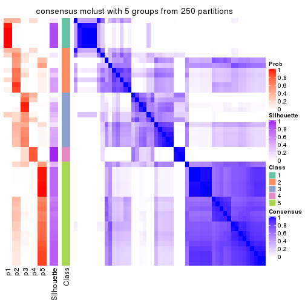
consensus_heatmap(res, k = 6)
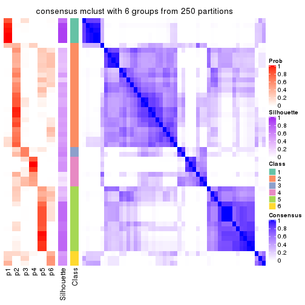
Heatmaps for the membership of samples in all partitions to see how consistent they are:
membership_heatmap(res, k = 2)
membership_heatmap(res, k = 3)
membership_heatmap(res, k = 4)
membership_heatmap(res, k = 5)
membership_heatmap(res, k = 6)
As soon as we have had the classes for columns, we can look for signatures which are significantly different between classes which can be candidate marks for certain classes. Following are the heatmaps for signatures.
Signature heatmaps where rows are scaled:
get_signatures(res, k = 2)
get_signatures(res, k = 3)
get_signatures(res, k = 4)
get_signatures(res, k = 5)
get_signatures(res, k = 6)
Signature heatmaps where rows are not scaled:
get_signatures(res, k = 2, scale_rows = FALSE)
get_signatures(res, k = 3, scale_rows = FALSE)
get_signatures(res, k = 4, scale_rows = FALSE)
get_signatures(res, k = 5, scale_rows = FALSE)
get_signatures(res, k = 6, scale_rows = FALSE)
Compare the overlap of signatures from different k:
compare_signatures(res)
get_signature() returns a data frame invisibly. TO get the list of signatures, the function
call should be assigned to a variable explicitly. In following code, if plot argument is set
to FALSE, no heatmap is plotted while only the differential analysis is performed.
# code only for demonstration
tb = get_signature(res, k = ..., plot = FALSE)
An example of the output of tb is:
#> which_row fdr mean_1 mean_2 scaled_mean_1 scaled_mean_2 km
#> 1 38 0.042760348 8.373488 9.131774 -0.5533452 0.5164555 1
#> 2 40 0.018707592 7.106213 8.469186 -0.6173731 0.5762149 1
#> 3 55 0.019134737 10.221463 11.207825 -0.6159697 0.5749050 1
#> 4 59 0.006059896 5.921854 7.869574 -0.6899429 0.6439467 1
#> 5 60 0.018055526 8.928898 10.211722 -0.6204761 0.5791110 1
#> 6 98 0.009384629 15.714769 14.887706 0.6635654 -0.6193277 2
...
The columns in tb are:
which_row: row indices corresponding to the input matrix.fdr: FDR for the differential test. mean_x: The mean value in group x.scaled_mean_x: The mean value in group x after rows are scaled.km: Row groups if k-means clustering is applied to rows.UMAP plot which shows how samples are separated.
dimension_reduction(res, k = 2, method = "UMAP")
dimension_reduction(res, k = 3, method = "UMAP")
dimension_reduction(res, k = 4, method = "UMAP")
dimension_reduction(res, k = 5, method = "UMAP")
dimension_reduction(res, k = 6, method = "UMAP")
Following heatmap shows how subgroups are split when increasing k:
collect_classes(res)
If matrix rows can be associated to genes, consider to use functional_enrichment(res,
...) to perform function enrichment for the signature genes. See this vignette for more detailed explanations.
The object with results only for a single top-value method and a single partition method can be extracted as:
res = res_list["MAD", "NMF"]
# you can also extract it by
# res = res_list["MAD:NMF"]
A summary of res and all the functions that can be applied to it:
res
#> A 'ConsensusPartition' object with k = 2, 3, 4, 5, 6.
#> On a matrix with 17386 rows and 50 columns.
#> Top rows (1000, 2000, 3000, 4000, 5000) are extracted by 'MAD' method.
#> Subgroups are detected by 'NMF' method.
#> Performed in total 1250 partitions by row resampling.
#> Best k for subgroups seems to be 3.
#>
#> Following methods can be applied to this 'ConsensusPartition' object:
#> [1] "cola_report" "collect_classes" "collect_plots"
#> [4] "collect_stats" "colnames" "compare_signatures"
#> [7] "consensus_heatmap" "dimension_reduction" "functional_enrichment"
#> [10] "get_anno_col" "get_anno" "get_classes"
#> [13] "get_consensus" "get_matrix" "get_membership"
#> [16] "get_param" "get_signatures" "get_stats"
#> [19] "is_best_k" "is_stable_k" "membership_heatmap"
#> [22] "ncol" "nrow" "plot_ecdf"
#> [25] "rownames" "select_partition_number" "show"
#> [28] "suggest_best_k" "test_to_known_factors"
collect_plots() function collects all the plots made from res for all k (number of partitions)
into one single page to provide an easy and fast comparison between different k.
collect_plots(res)
The plots are:
k and the heatmap of
predicted classes for each k.k.k.k.All the plots in panels can be made by individual functions and they are plotted later in this section.
select_partition_number() produces several plots showing different
statistics for choosing “optimized” k. There are following statistics:
k;k, the area increased is defined as \(A_k - A_{k-1}\).The detailed explanations of these statistics can be found in the cola vignette.
Generally speaking, lower PAC score, higher mean silhouette score or higher
concordance corresponds to better partition. Rand index and Jaccard index
measure how similar the current partition is compared to partition with k-1.
If they are too similar, we won't accept k is better than k-1.
select_partition_number(res)
The numeric values for all these statistics can be obtained by get_stats().
get_stats(res)
#> k 1-PAC mean_silhouette concordance area_increased Rand Jaccard
#> 2 2 0.458 0.507 0.825 0.4263 0.571 0.571
#> 3 3 0.759 0.842 0.928 0.4082 0.762 0.605
#> 4 4 0.553 0.610 0.762 0.2197 0.750 0.452
#> 5 5 0.602 0.639 0.791 0.0819 0.853 0.521
#> 6 6 0.646 0.560 0.743 0.0494 0.887 0.530
suggest_best_k() suggests the best \(k\) based on these statistics. The rules are as follows:
suggest_best_k(res)
#> [1] 3
Following shows the table of the partitions (You need to click the show/hide
code output link to see it). The membership matrix (columns with name p*)
is inferred by
clue::cl_consensus()
function with the SE method. Basically the value in the membership matrix
represents the probability to belong to a certain group. The finall class
label for an item is determined with the group with highest probability it
belongs to.
In get_classes() function, the entropy is calculated from the membership
matrix and the silhouette score is calculated from the consensus matrix.
cbind(get_classes(res, k = 2), get_membership(res, k = 2))
#> class entropy silhouette p1 p2
#> SRR2305538 1 0.9988 0.0796 0.520 0.480
#> SRR2305506 2 0.3431 0.7312 0.064 0.936
#> SRR2305537 2 1.0000 -0.0979 0.496 0.504
#> SRR2305476 2 0.2423 0.7594 0.040 0.960
#> SRR2305508 1 0.4161 0.6054 0.916 0.084
#> SRR2305521 2 0.1633 0.7741 0.024 0.976
#> SRR2305486 2 0.0000 0.7921 0.000 1.000
#> SRR2305503 2 0.0000 0.7921 0.000 1.000
#> SRR2305519 1 1.0000 0.1924 0.504 0.496
#> SRR2305515 2 0.2236 0.7633 0.036 0.964
#> SRR2305528 2 0.0000 0.7921 0.000 1.000
#> SRR2305518 2 0.0000 0.7921 0.000 1.000
#> SRR2305527 2 0.0000 0.7921 0.000 1.000
#> SRR2305498 2 0.9896 -0.1210 0.440 0.560
#> SRR2305488 2 0.9998 -0.0894 0.492 0.508
#> SRR2305512 1 0.2043 0.5917 0.968 0.032
#> SRR2305474 2 0.9286 0.1553 0.344 0.656
#> SRR2305495 2 0.0376 0.7894 0.004 0.996
#> SRR2305536 2 0.0000 0.7921 0.000 1.000
#> SRR2305525 2 0.0000 0.7921 0.000 1.000
#> SRR2305494 1 1.0000 0.1924 0.504 0.496
#> SRR2305532 2 0.0000 0.7921 0.000 1.000
#> SRR2305500 2 0.0000 0.7921 0.000 1.000
#> SRR2305509 2 0.0000 0.7921 0.000 1.000
#> SRR2305501 2 0.9963 -0.1545 0.464 0.536
#> SRR2305524 2 0.3584 0.7361 0.068 0.932
#> SRR2305491 1 0.4939 0.5981 0.892 0.108
#> SRR2305489 2 1.0000 -0.0979 0.496 0.504
#> SRR2305516 2 0.0000 0.7921 0.000 1.000
#> SRR2305507 2 0.0000 0.7921 0.000 1.000
#> SRR2305497 1 1.0000 0.1924 0.504 0.496
#> SRR2305482 1 0.9988 0.0721 0.520 0.480
#> SRR2305485 1 0.3879 0.6061 0.924 0.076
#> SRR2305472 2 1.0000 -0.0979 0.496 0.504
#> SRR2305513 1 0.0000 0.5879 1.000 0.000
#> SRR2305540 2 0.3879 0.7342 0.076 0.924
#> SRR2305522 2 0.0000 0.7921 0.000 1.000
#> SRR2305520 2 0.0000 0.7921 0.000 1.000
#> SRR2305533 1 0.8144 0.4585 0.748 0.252
#> SRR2305534 2 0.9866 0.0501 0.432 0.568
#> SRR2305517 2 0.0000 0.7921 0.000 1.000
#> SRR2305504 2 1.0000 -0.0979 0.496 0.504
#> SRR2305511 2 0.0000 0.7921 0.000 1.000
#> SRR2305492 1 0.9635 0.3500 0.612 0.388
#> SRR2305514 2 0.0000 0.7921 0.000 1.000
#> SRR2305531 2 0.0000 0.7921 0.000 1.000
#> SRR2305535 1 0.9988 0.0796 0.520 0.480
#> SRR2305477 2 0.0672 0.7864 0.008 0.992
#> SRR2305480 1 0.1633 0.5981 0.976 0.024
#> SRR2305529 1 0.9686 0.3569 0.604 0.396
cbind(get_classes(res, k = 3), get_membership(res, k = 3))
#> class entropy silhouette p1 p2 p3
#> SRR2305538 1 0.0000 0.9394 1.000 0.000 0.000
#> SRR2305506 2 0.4137 0.8314 0.032 0.872 0.096
#> SRR2305537 1 0.0000 0.9394 1.000 0.000 0.000
#> SRR2305476 2 0.6000 0.6837 0.040 0.760 0.200
#> SRR2305508 3 0.0000 0.8083 0.000 0.000 1.000
#> SRR2305521 2 0.0000 0.9368 0.000 1.000 0.000
#> SRR2305486 2 0.0000 0.9368 0.000 1.000 0.000
#> SRR2305503 2 0.0000 0.9368 0.000 1.000 0.000
#> SRR2305519 3 0.2261 0.8328 0.000 0.068 0.932
#> SRR2305515 2 0.0000 0.9368 0.000 1.000 0.000
#> SRR2305528 2 0.0000 0.9368 0.000 1.000 0.000
#> SRR2305518 2 0.0237 0.9358 0.004 0.996 0.000
#> SRR2305527 2 0.0237 0.9358 0.004 0.996 0.000
#> SRR2305498 2 0.1860 0.8961 0.000 0.948 0.052
#> SRR2305488 1 0.1163 0.9156 0.972 0.028 0.000
#> SRR2305512 1 0.6664 0.0724 0.528 0.008 0.464
#> SRR2305474 2 0.0892 0.9245 0.000 0.980 0.020
#> SRR2305495 2 0.0000 0.9368 0.000 1.000 0.000
#> SRR2305536 2 0.0000 0.9368 0.000 1.000 0.000
#> SRR2305525 2 0.0000 0.9368 0.000 1.000 0.000
#> SRR2305494 3 0.4842 0.7177 0.000 0.224 0.776
#> SRR2305532 2 0.1163 0.9214 0.028 0.972 0.000
#> SRR2305500 2 0.0000 0.9368 0.000 1.000 0.000
#> SRR2305509 2 0.0000 0.9368 0.000 1.000 0.000
#> SRR2305501 3 0.6386 0.3376 0.004 0.412 0.584
#> SRR2305524 2 0.8976 0.0667 0.416 0.456 0.128
#> SRR2305491 3 0.2959 0.8306 0.000 0.100 0.900
#> SRR2305489 1 0.0592 0.9324 0.988 0.012 0.000
#> SRR2305516 2 0.1529 0.9129 0.040 0.960 0.000
#> SRR2305507 2 0.0000 0.9368 0.000 1.000 0.000
#> SRR2305497 3 0.3551 0.8193 0.000 0.132 0.868
#> SRR2305482 1 0.0000 0.9394 1.000 0.000 0.000
#> SRR2305485 3 0.0237 0.8082 0.004 0.000 0.996
#> SRR2305472 1 0.0000 0.9394 1.000 0.000 0.000
#> SRR2305513 3 0.0237 0.8082 0.004 0.000 0.996
#> SRR2305540 2 0.6314 0.4163 0.392 0.604 0.004
#> SRR2305522 2 0.0237 0.9358 0.004 0.996 0.000
#> SRR2305520 2 0.0661 0.9320 0.008 0.988 0.004
#> SRR2305533 1 0.1031 0.9232 0.976 0.000 0.024
#> SRR2305534 1 0.0424 0.9354 0.992 0.008 0.000
#> SRR2305517 2 0.0000 0.9368 0.000 1.000 0.000
#> SRR2305504 1 0.0000 0.9394 1.000 0.000 0.000
#> SRR2305511 2 0.0237 0.9358 0.004 0.996 0.000
#> SRR2305492 3 0.3412 0.8225 0.000 0.124 0.876
#> SRR2305514 2 0.0000 0.9368 0.000 1.000 0.000
#> SRR2305531 2 0.0424 0.9339 0.008 0.992 0.000
#> SRR2305535 1 0.0000 0.9394 1.000 0.000 0.000
#> SRR2305477 2 0.1860 0.9027 0.052 0.948 0.000
#> SRR2305480 3 0.6087 0.7543 0.144 0.076 0.780
#> SRR2305529 3 0.5810 0.7903 0.072 0.132 0.796
cbind(get_classes(res, k = 4), get_membership(res, k = 4))
#> class entropy silhouette p1 p2 p3 p4
#> SRR2305538 1 0.0469 0.8290 0.988 0.000 0.000 0.012
#> SRR2305506 2 0.4406 0.5385 0.000 0.700 0.000 0.300
#> SRR2305537 4 0.4888 0.4171 0.412 0.000 0.000 0.588
#> SRR2305476 2 0.5846 0.6022 0.008 0.704 0.076 0.212
#> SRR2305508 3 0.4040 0.6944 0.000 0.000 0.752 0.248
#> SRR2305521 2 0.1118 0.7569 0.000 0.964 0.000 0.036
#> SRR2305486 2 0.1722 0.7786 0.008 0.944 0.048 0.000
#> SRR2305503 4 0.4989 0.4683 0.000 0.472 0.000 0.528
#> SRR2305519 3 0.1724 0.7020 0.000 0.020 0.948 0.032
#> SRR2305515 4 0.4999 0.4252 0.000 0.492 0.000 0.508
#> SRR2305528 2 0.4756 0.6949 0.000 0.772 0.176 0.052
#> SRR2305518 4 0.6023 0.6071 0.056 0.344 0.000 0.600
#> SRR2305527 4 0.5403 0.6053 0.024 0.348 0.000 0.628
#> SRR2305498 3 0.6157 0.3888 0.000 0.108 0.660 0.232
#> SRR2305488 1 0.1209 0.8227 0.964 0.000 0.004 0.032
#> SRR2305512 1 0.4776 0.4431 0.624 0.000 0.376 0.000
#> SRR2305474 2 0.4819 0.5392 0.004 0.652 0.344 0.000
#> SRR2305495 2 0.0469 0.7772 0.000 0.988 0.000 0.012
#> SRR2305536 2 0.2021 0.7768 0.012 0.932 0.056 0.000
#> SRR2305525 2 0.2578 0.7695 0.000 0.912 0.052 0.036
#> SRR2305494 3 0.4855 0.6369 0.000 0.004 0.644 0.352
#> SRR2305532 4 0.6876 0.6285 0.140 0.288 0.000 0.572
#> SRR2305500 2 0.6715 0.4850 0.012 0.580 0.332 0.076
#> SRR2305509 2 0.1302 0.7808 0.000 0.956 0.044 0.000
#> SRR2305501 3 0.7702 0.4920 0.000 0.224 0.416 0.360
#> SRR2305524 4 0.6741 0.4822 0.128 0.004 0.256 0.612
#> SRR2305491 3 0.2060 0.6642 0.052 0.016 0.932 0.000
#> SRR2305489 1 0.0000 0.8317 1.000 0.000 0.000 0.000
#> SRR2305516 2 0.0672 0.7735 0.008 0.984 0.000 0.008
#> SRR2305507 2 0.4746 -0.0404 0.000 0.632 0.000 0.368
#> SRR2305497 2 0.5097 0.3828 0.004 0.568 0.428 0.000
#> SRR2305482 1 0.1022 0.8279 0.968 0.000 0.000 0.032
#> SRR2305485 3 0.4697 0.6482 0.000 0.000 0.644 0.356
#> SRR2305472 1 0.1716 0.8110 0.936 0.000 0.000 0.064
#> SRR2305513 3 0.4500 0.6732 0.000 0.000 0.684 0.316
#> SRR2305540 4 0.0921 0.4759 0.028 0.000 0.000 0.972
#> SRR2305522 4 0.4955 0.5111 0.000 0.444 0.000 0.556
#> SRR2305520 4 0.6078 0.4330 0.000 0.068 0.312 0.620
#> SRR2305533 4 0.5050 0.4386 0.408 0.000 0.004 0.588
#> SRR2305534 4 0.4877 0.4482 0.408 0.000 0.000 0.592
#> SRR2305517 2 0.0000 0.7753 0.000 1.000 0.000 0.000
#> SRR2305504 4 0.3528 0.5094 0.192 0.000 0.000 0.808
#> SRR2305511 2 0.0469 0.7705 0.000 0.988 0.000 0.012
#> SRR2305492 3 0.1271 0.6882 0.008 0.012 0.968 0.012
#> SRR2305514 2 0.0469 0.7781 0.000 0.988 0.012 0.000
#> SRR2305531 2 0.0336 0.7725 0.000 0.992 0.000 0.008
#> SRR2305535 1 0.0707 0.8302 0.980 0.000 0.020 0.000
#> SRR2305477 2 0.7573 0.4166 0.292 0.548 0.136 0.024
#> SRR2305480 1 0.5452 0.3792 0.584 0.012 0.400 0.004
#> SRR2305529 3 0.4038 0.5813 0.136 0.004 0.828 0.032
cbind(get_classes(res, k = 5), get_membership(res, k = 5))
#> class entropy silhouette p1 p2 p3 p4 p5
#> SRR2305538 1 0.0290 0.850 0.992 0.008 0.000 0.000 0.000
#> SRR2305506 5 0.3967 0.733 0.000 0.092 0.000 0.108 0.800
#> SRR2305537 2 0.4286 0.558 0.340 0.652 0.000 0.004 0.004
#> SRR2305476 5 0.6030 0.584 0.100 0.052 0.004 0.168 0.676
#> SRR2305508 4 0.1043 0.817 0.000 0.000 0.040 0.960 0.000
#> SRR2305521 5 0.1717 0.811 0.000 0.052 0.008 0.004 0.936
#> SRR2305486 5 0.0609 0.819 0.000 0.000 0.020 0.000 0.980
#> SRR2305503 2 0.4436 0.324 0.000 0.596 0.008 0.000 0.396
#> SRR2305519 4 0.4953 0.224 0.000 0.000 0.440 0.532 0.028
#> SRR2305515 5 0.4504 0.151 0.000 0.428 0.008 0.000 0.564
#> SRR2305528 3 0.4893 0.654 0.000 0.208 0.704 0.000 0.088
#> SRR2305518 2 0.3003 0.637 0.000 0.864 0.092 0.000 0.044
#> SRR2305527 2 0.2754 0.653 0.000 0.880 0.080 0.000 0.040
#> SRR2305498 3 0.3733 0.679 0.000 0.156 0.808 0.008 0.028
#> SRR2305488 1 0.2677 0.799 0.872 0.112 0.016 0.000 0.000
#> SRR2305512 1 0.3885 0.663 0.724 0.000 0.268 0.008 0.000
#> SRR2305474 3 0.3742 0.603 0.000 0.004 0.788 0.020 0.188
#> SRR2305495 5 0.4012 0.738 0.000 0.044 0.104 0.032 0.820
#> SRR2305536 5 0.1168 0.816 0.000 0.008 0.032 0.000 0.960
#> SRR2305525 3 0.6219 0.537 0.000 0.212 0.548 0.000 0.240
#> SRR2305494 3 0.6304 0.431 0.000 0.220 0.532 0.248 0.000
#> SRR2305532 2 0.3693 0.707 0.072 0.836 0.012 0.000 0.080
#> SRR2305500 3 0.2221 0.680 0.000 0.036 0.912 0.000 0.052
#> SRR2305509 5 0.2676 0.786 0.000 0.080 0.036 0.000 0.884
#> SRR2305501 4 0.2681 0.740 0.000 0.012 0.004 0.876 0.108
#> SRR2305524 3 0.5525 0.261 0.060 0.392 0.544 0.000 0.004
#> SRR2305491 3 0.1992 0.614 0.032 0.000 0.924 0.044 0.000
#> SRR2305489 1 0.1914 0.838 0.924 0.060 0.016 0.000 0.000
#> SRR2305516 5 0.0579 0.820 0.008 0.008 0.000 0.000 0.984
#> SRR2305507 5 0.5639 0.137 0.000 0.396 0.080 0.000 0.524
#> SRR2305497 3 0.5144 0.371 0.000 0.000 0.640 0.068 0.292
#> SRR2305482 1 0.0451 0.847 0.988 0.004 0.000 0.000 0.008
#> SRR2305485 4 0.0324 0.811 0.000 0.004 0.004 0.992 0.000
#> SRR2305472 1 0.0693 0.846 0.980 0.012 0.000 0.000 0.008
#> SRR2305513 4 0.0794 0.820 0.000 0.000 0.028 0.972 0.000
#> SRR2305540 2 0.5030 0.612 0.000 0.688 0.072 0.236 0.004
#> SRR2305522 2 0.3720 0.632 0.000 0.760 0.012 0.000 0.228
#> SRR2305520 2 0.5105 0.450 0.008 0.624 0.336 0.004 0.028
#> SRR2305533 2 0.5645 0.549 0.276 0.628 0.012 0.084 0.000
#> SRR2305534 2 0.4496 0.637 0.232 0.724 0.040 0.000 0.004
#> SRR2305517 5 0.2914 0.774 0.000 0.076 0.052 0.000 0.872
#> SRR2305504 2 0.5769 0.584 0.156 0.632 0.000 0.208 0.004
#> SRR2305511 5 0.0566 0.821 0.004 0.012 0.000 0.000 0.984
#> SRR2305492 3 0.2621 0.677 0.004 0.112 0.876 0.008 0.000
#> SRR2305514 5 0.2773 0.769 0.000 0.112 0.020 0.000 0.868
#> SRR2305531 5 0.0290 0.820 0.000 0.008 0.000 0.000 0.992
#> SRR2305535 1 0.0963 0.851 0.964 0.000 0.036 0.000 0.000
#> SRR2305477 3 0.8444 0.319 0.232 0.220 0.352 0.000 0.196
#> SRR2305480 1 0.4697 0.471 0.592 0.000 0.388 0.020 0.000
#> SRR2305529 3 0.1471 0.649 0.020 0.024 0.952 0.004 0.000
cbind(get_classes(res, k = 6), get_membership(res, k = 6))
#> class entropy silhouette p1 p2 p3 p4 p5 p6
#> SRR2305538 1 0.1564 0.8755 0.936 0.024 0.000 0.000 0.000 0.040
#> SRR2305506 5 0.5497 0.5411 0.000 0.176 0.000 0.168 0.632 0.024
#> SRR2305537 2 0.5796 0.3635 0.252 0.588 0.004 0.024 0.000 0.132
#> SRR2305476 5 0.7321 0.3894 0.176 0.136 0.016 0.120 0.532 0.020
#> SRR2305508 4 0.1594 0.6967 0.000 0.000 0.052 0.932 0.000 0.016
#> SRR2305521 5 0.3184 0.7370 0.000 0.140 0.008 0.020 0.828 0.004
#> SRR2305486 5 0.1413 0.8024 0.004 0.008 0.004 0.000 0.948 0.036
#> SRR2305503 2 0.3679 0.4827 0.000 0.724 0.012 0.000 0.260 0.004
#> SRR2305519 3 0.2267 0.6952 0.000 0.020 0.904 0.064 0.004 0.008
#> SRR2305515 2 0.4722 0.4763 0.000 0.688 0.116 0.000 0.192 0.004
#> SRR2305528 6 0.5711 0.2992 0.000 0.028 0.288 0.000 0.112 0.572
#> SRR2305518 2 0.4077 0.4726 0.000 0.692 0.012 0.000 0.016 0.280
#> SRR2305527 2 0.3781 0.5288 0.000 0.772 0.016 0.000 0.028 0.184
#> SRR2305498 3 0.3500 0.6623 0.000 0.052 0.816 0.000 0.012 0.120
#> SRR2305488 1 0.4332 0.7480 0.744 0.120 0.008 0.000 0.000 0.128
#> SRR2305512 1 0.2771 0.8012 0.852 0.000 0.116 0.000 0.000 0.032
#> SRR2305474 3 0.2106 0.7170 0.000 0.028 0.920 0.004 0.028 0.020
#> SRR2305495 5 0.3437 0.6671 0.004 0.000 0.012 0.008 0.788 0.188
#> SRR2305536 5 0.3878 0.7284 0.048 0.060 0.084 0.000 0.808 0.000
#> SRR2305525 6 0.4794 0.4829 0.000 0.016 0.064 0.000 0.252 0.668
#> SRR2305494 4 0.6264 0.1881 0.000 0.048 0.132 0.504 0.000 0.316
#> SRR2305532 2 0.4514 0.4530 0.028 0.664 0.000 0.000 0.020 0.288
#> SRR2305500 3 0.2345 0.7153 0.020 0.044 0.908 0.000 0.008 0.020
#> SRR2305509 5 0.2537 0.7881 0.000 0.016 0.028 0.000 0.888 0.068
#> SRR2305501 4 0.3077 0.6266 0.000 0.044 0.004 0.864 0.064 0.024
#> SRR2305524 6 0.6202 0.2363 0.004 0.232 0.156 0.044 0.000 0.564
#> SRR2305491 3 0.2190 0.7059 0.040 0.000 0.908 0.008 0.000 0.044
#> SRR2305489 1 0.3353 0.8453 0.836 0.068 0.016 0.000 0.000 0.080
#> SRR2305516 5 0.0993 0.8060 0.012 0.024 0.000 0.000 0.964 0.000
#> SRR2305507 2 0.5454 0.1099 0.000 0.460 0.432 0.000 0.104 0.004
#> SRR2305497 3 0.2145 0.7112 0.000 0.004 0.912 0.008 0.056 0.020
#> SRR2305482 1 0.0146 0.8775 0.996 0.000 0.000 0.000 0.000 0.004
#> SRR2305485 4 0.1434 0.6961 0.000 0.000 0.048 0.940 0.000 0.012
#> SRR2305472 1 0.2146 0.8545 0.908 0.044 0.004 0.000 0.000 0.044
#> SRR2305513 4 0.1194 0.6949 0.000 0.004 0.032 0.956 0.000 0.008
#> SRR2305540 6 0.5662 -0.1742 0.000 0.132 0.004 0.428 0.000 0.436
#> SRR2305522 2 0.3101 0.5452 0.000 0.832 0.012 0.000 0.136 0.020
#> SRR2305520 2 0.4418 0.3272 0.012 0.604 0.368 0.000 0.016 0.000
#> SRR2305533 4 0.7550 0.1447 0.160 0.220 0.004 0.388 0.000 0.228
#> SRR2305534 2 0.5563 0.3582 0.192 0.548 0.000 0.000 0.000 0.260
#> SRR2305517 5 0.1863 0.7744 0.000 0.000 0.000 0.000 0.896 0.104
#> SRR2305504 2 0.5729 0.3757 0.136 0.604 0.004 0.232 0.000 0.024
#> SRR2305511 5 0.1155 0.8038 0.036 0.004 0.000 0.000 0.956 0.004
#> SRR2305492 3 0.5407 0.2215 0.008 0.004 0.508 0.028 0.028 0.424
#> SRR2305514 5 0.2288 0.7672 0.000 0.004 0.004 0.000 0.876 0.116
#> SRR2305531 5 0.1010 0.8023 0.000 0.036 0.000 0.000 0.960 0.004
#> SRR2305535 1 0.1151 0.8730 0.956 0.000 0.032 0.000 0.000 0.012
#> SRR2305477 6 0.5839 0.3449 0.108 0.016 0.012 0.000 0.304 0.560
#> SRR2305480 3 0.4597 -0.0516 0.484 0.004 0.488 0.004 0.000 0.020
#> SRR2305529 3 0.5617 0.4302 0.048 0.024 0.608 0.032 0.000 0.288
Heatmaps for the consensus matrix. It visualizes the probability of two samples to be in a same group.
consensus_heatmap(res, k = 2)
consensus_heatmap(res, k = 3)
consensus_heatmap(res, k = 4)
consensus_heatmap(res, k = 5)
consensus_heatmap(res, k = 6)

Heatmaps for the membership of samples in all partitions to see how consistent they are:
membership_heatmap(res, k = 2)
membership_heatmap(res, k = 3)
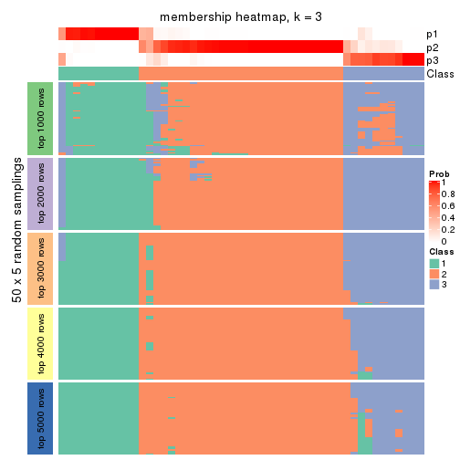
membership_heatmap(res, k = 4)
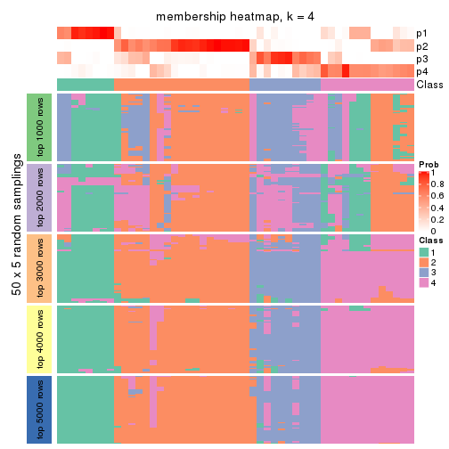
membership_heatmap(res, k = 5)
membership_heatmap(res, k = 6)
As soon as we have had the classes for columns, we can look for signatures which are significantly different between classes which can be candidate marks for certain classes. Following are the heatmaps for signatures.
Signature heatmaps where rows are scaled:
get_signatures(res, k = 2)
get_signatures(res, k = 3)
get_signatures(res, k = 4)
get_signatures(res, k = 5)
get_signatures(res, k = 6)
Signature heatmaps where rows are not scaled:
get_signatures(res, k = 2, scale_rows = FALSE)
get_signatures(res, k = 3, scale_rows = FALSE)
get_signatures(res, k = 4, scale_rows = FALSE)
get_signatures(res, k = 5, scale_rows = FALSE)
get_signatures(res, k = 6, scale_rows = FALSE)
Compare the overlap of signatures from different k:
compare_signatures(res)
get_signature() returns a data frame invisibly. TO get the list of signatures, the function
call should be assigned to a variable explicitly. In following code, if plot argument is set
to FALSE, no heatmap is plotted while only the differential analysis is performed.
# code only for demonstration
tb = get_signature(res, k = ..., plot = FALSE)
An example of the output of tb is:
#> which_row fdr mean_1 mean_2 scaled_mean_1 scaled_mean_2 km
#> 1 38 0.042760348 8.373488 9.131774 -0.5533452 0.5164555 1
#> 2 40 0.018707592 7.106213 8.469186 -0.6173731 0.5762149 1
#> 3 55 0.019134737 10.221463 11.207825 -0.6159697 0.5749050 1
#> 4 59 0.006059896 5.921854 7.869574 -0.6899429 0.6439467 1
#> 5 60 0.018055526 8.928898 10.211722 -0.6204761 0.5791110 1
#> 6 98 0.009384629 15.714769 14.887706 0.6635654 -0.6193277 2
...
The columns in tb are:
which_row: row indices corresponding to the input matrix.fdr: FDR for the differential test. mean_x: The mean value in group x.scaled_mean_x: The mean value in group x after rows are scaled.km: Row groups if k-means clustering is applied to rows.UMAP plot which shows how samples are separated.
dimension_reduction(res, k = 2, method = "UMAP")
dimension_reduction(res, k = 3, method = "UMAP")
dimension_reduction(res, k = 4, method = "UMAP")
dimension_reduction(res, k = 5, method = "UMAP")
dimension_reduction(res, k = 6, method = "UMAP")
Following heatmap shows how subgroups are split when increasing k:
collect_classes(res)
If matrix rows can be associated to genes, consider to use functional_enrichment(res,
...) to perform function enrichment for the signature genes. See this vignette for more detailed explanations.
The object with results only for a single top-value method and a single partition method can be extracted as:
res = res_list["ATC", "hclust"]
# you can also extract it by
# res = res_list["ATC:hclust"]
A summary of res and all the functions that can be applied to it:
res
#> A 'ConsensusPartition' object with k = 2, 3, 4, 5, 6.
#> On a matrix with 17386 rows and 50 columns.
#> Top rows (1000, 2000, 3000, 4000, 5000) are extracted by 'ATC' method.
#> Subgroups are detected by 'hclust' method.
#> Performed in total 1250 partitions by row resampling.
#> Best k for subgroups seems to be 2.
#>
#> Following methods can be applied to this 'ConsensusPartition' object:
#> [1] "cola_report" "collect_classes" "collect_plots"
#> [4] "collect_stats" "colnames" "compare_signatures"
#> [7] "consensus_heatmap" "dimension_reduction" "functional_enrichment"
#> [10] "get_anno_col" "get_anno" "get_classes"
#> [13] "get_consensus" "get_matrix" "get_membership"
#> [16] "get_param" "get_signatures" "get_stats"
#> [19] "is_best_k" "is_stable_k" "membership_heatmap"
#> [22] "ncol" "nrow" "plot_ecdf"
#> [25] "rownames" "select_partition_number" "show"
#> [28] "suggest_best_k" "test_to_known_factors"
collect_plots() function collects all the plots made from res for all k (number of partitions)
into one single page to provide an easy and fast comparison between different k.
collect_plots(res)
The plots are:
k and the heatmap of
predicted classes for each k.k.k.k.All the plots in panels can be made by individual functions and they are plotted later in this section.
select_partition_number() produces several plots showing different
statistics for choosing “optimized” k. There are following statistics:
k;k, the area increased is defined as \(A_k - A_{k-1}\).The detailed explanations of these statistics can be found in the cola vignette.
Generally speaking, lower PAC score, higher mean silhouette score or higher
concordance corresponds to better partition. Rand index and Jaccard index
measure how similar the current partition is compared to partition with k-1.
If they are too similar, we won't accept k is better than k-1.
select_partition_number(res)
The numeric values for all these statistics can be obtained by get_stats().
get_stats(res)
#> k 1-PAC mean_silhouette concordance area_increased Rand Jaccard
#> 2 2 0.838 0.914 0.962 0.338 0.699 0.699
#> 3 3 0.829 0.790 0.929 0.145 0.960 0.943
#> 4 4 0.478 0.734 0.825 0.376 0.852 0.778
#> 5 5 0.582 0.543 0.813 0.223 0.788 0.604
#> 6 6 0.701 0.670 0.818 0.162 0.836 0.544
suggest_best_k() suggests the best \(k\) based on these statistics. The rules are as follows:
suggest_best_k(res)
#> [1] 2
Following shows the table of the partitions (You need to click the show/hide
code output link to see it). The membership matrix (columns with name p*)
is inferred by
clue::cl_consensus()
function with the SE method. Basically the value in the membership matrix
represents the probability to belong to a certain group. The finall class
label for an item is determined with the group with highest probability it
belongs to.
In get_classes() function, the entropy is calculated from the membership
matrix and the silhouette score is calculated from the consensus matrix.
cbind(get_classes(res, k = 2), get_membership(res, k = 2))
#> class entropy silhouette p1 p2
#> SRR2305538 1 0.000 0.984 1.000 0.000
#> SRR2305506 2 0.000 0.954 0.000 1.000
#> SRR2305537 2 0.990 0.284 0.440 0.560
#> SRR2305476 2 0.000 0.954 0.000 1.000
#> SRR2305508 1 0.469 0.880 0.900 0.100
#> SRR2305521 2 0.000 0.954 0.000 1.000
#> SRR2305486 2 0.000 0.954 0.000 1.000
#> SRR2305503 2 0.000 0.954 0.000 1.000
#> SRR2305519 2 0.000 0.954 0.000 1.000
#> SRR2305515 2 0.000 0.954 0.000 1.000
#> SRR2305528 2 0.000 0.954 0.000 1.000
#> SRR2305518 2 0.000 0.954 0.000 1.000
#> SRR2305527 2 0.000 0.954 0.000 1.000
#> SRR2305498 2 0.000 0.954 0.000 1.000
#> SRR2305488 2 0.961 0.432 0.384 0.616
#> SRR2305512 1 0.000 0.984 1.000 0.000
#> SRR2305474 2 0.000 0.954 0.000 1.000
#> SRR2305495 2 0.000 0.954 0.000 1.000
#> SRR2305536 2 0.000 0.954 0.000 1.000
#> SRR2305525 2 0.000 0.954 0.000 1.000
#> SRR2305494 2 0.000 0.954 0.000 1.000
#> SRR2305532 2 0.000 0.954 0.000 1.000
#> SRR2305500 2 0.000 0.954 0.000 1.000
#> SRR2305509 2 0.000 0.954 0.000 1.000
#> SRR2305501 2 0.000 0.954 0.000 1.000
#> SRR2305524 2 0.000 0.954 0.000 1.000
#> SRR2305491 2 0.795 0.701 0.240 0.760
#> SRR2305489 1 0.000 0.984 1.000 0.000
#> SRR2305516 2 0.000 0.954 0.000 1.000
#> SRR2305507 2 0.000 0.954 0.000 1.000
#> SRR2305497 2 0.000 0.954 0.000 1.000
#> SRR2305482 1 0.000 0.984 1.000 0.000
#> SRR2305485 2 0.000 0.954 0.000 1.000
#> SRR2305472 1 0.000 0.984 1.000 0.000
#> SRR2305513 1 0.000 0.984 1.000 0.000
#> SRR2305540 2 0.000 0.954 0.000 1.000
#> SRR2305522 2 0.000 0.954 0.000 1.000
#> SRR2305520 2 0.000 0.954 0.000 1.000
#> SRR2305533 2 0.163 0.935 0.024 0.976
#> SRR2305534 2 0.615 0.812 0.152 0.848
#> SRR2305517 2 0.000 0.954 0.000 1.000
#> SRR2305504 2 0.861 0.634 0.284 0.716
#> SRR2305511 2 0.000 0.954 0.000 1.000
#> SRR2305492 2 0.000 0.954 0.000 1.000
#> SRR2305514 2 0.000 0.954 0.000 1.000
#> SRR2305531 2 0.000 0.954 0.000 1.000
#> SRR2305535 1 0.000 0.984 1.000 0.000
#> SRR2305477 2 0.795 0.701 0.240 0.760
#> SRR2305480 1 0.118 0.972 0.984 0.016
#> SRR2305529 2 0.000 0.954 0.000 1.000
cbind(get_classes(res, k = 3), get_membership(res, k = 3))
#> class entropy silhouette p1 p2 p3
#> SRR2305538 1 0.0000 0.9084 1.000 0.000 0.000
#> SRR2305506 2 0.0237 0.9200 0.000 0.996 0.004
#> SRR2305537 3 0.6495 -0.0426 0.004 0.460 0.536
#> SRR2305476 2 0.0592 0.9155 0.000 0.988 0.012
#> SRR2305508 3 0.0237 -0.1354 0.004 0.000 0.996
#> SRR2305521 2 0.0237 0.9200 0.000 0.996 0.004
#> SRR2305486 2 0.0237 0.9188 0.000 0.996 0.004
#> SRR2305503 2 0.0237 0.9200 0.000 0.996 0.004
#> SRR2305519 2 0.0237 0.9200 0.000 0.996 0.004
#> SRR2305515 2 0.0237 0.9200 0.000 0.996 0.004
#> SRR2305528 2 0.0237 0.9200 0.000 0.996 0.004
#> SRR2305518 2 0.0237 0.9200 0.000 0.996 0.004
#> SRR2305527 2 0.0237 0.9200 0.000 0.996 0.004
#> SRR2305498 2 0.0237 0.9200 0.000 0.996 0.004
#> SRR2305488 2 0.6305 -0.2982 0.000 0.516 0.484
#> SRR2305512 1 0.2066 0.8913 0.940 0.000 0.060
#> SRR2305474 2 0.1031 0.9058 0.000 0.976 0.024
#> SRR2305495 2 0.0000 0.9195 0.000 1.000 0.000
#> SRR2305536 2 0.0237 0.9188 0.000 0.996 0.004
#> SRR2305525 2 0.0237 0.9200 0.000 0.996 0.004
#> SRR2305494 2 0.0237 0.9200 0.000 0.996 0.004
#> SRR2305532 2 0.0237 0.9200 0.000 0.996 0.004
#> SRR2305500 2 0.1031 0.9058 0.000 0.976 0.024
#> SRR2305509 2 0.0237 0.9200 0.000 0.996 0.004
#> SRR2305501 2 0.0592 0.9155 0.000 0.988 0.012
#> SRR2305524 2 0.1031 0.9058 0.000 0.976 0.024
#> SRR2305491 2 0.5810 0.3413 0.000 0.664 0.336
#> SRR2305489 1 0.0000 0.9084 1.000 0.000 0.000
#> SRR2305516 2 0.0592 0.9155 0.000 0.988 0.012
#> SRR2305507 2 0.0237 0.9200 0.000 0.996 0.004
#> SRR2305497 2 0.0000 0.9195 0.000 1.000 0.000
#> SRR2305482 1 0.1411 0.9005 0.964 0.000 0.036
#> SRR2305485 2 0.2625 0.8499 0.000 0.916 0.084
#> SRR2305472 1 0.0000 0.9084 1.000 0.000 0.000
#> SRR2305513 1 0.5905 0.6501 0.648 0.000 0.352
#> SRR2305540 2 0.0237 0.9200 0.000 0.996 0.004
#> SRR2305522 2 0.0237 0.9200 0.000 0.996 0.004
#> SRR2305520 2 0.0000 0.9195 0.000 1.000 0.000
#> SRR2305533 2 0.3340 0.8060 0.000 0.880 0.120
#> SRR2305534 2 0.5098 0.5788 0.000 0.752 0.248
#> SRR2305517 2 0.0000 0.9195 0.000 1.000 0.000
#> SRR2305504 2 0.6062 0.1680 0.000 0.616 0.384
#> SRR2305511 2 0.0237 0.9188 0.000 0.996 0.004
#> SRR2305492 2 0.2625 0.8499 0.000 0.916 0.084
#> SRR2305514 2 0.0237 0.9188 0.000 0.996 0.004
#> SRR2305531 2 0.0237 0.9188 0.000 0.996 0.004
#> SRR2305535 1 0.0000 0.9084 1.000 0.000 0.000
#> SRR2305477 2 0.5835 0.3304 0.000 0.660 0.340
#> SRR2305480 1 0.6062 0.6866 0.708 0.016 0.276
#> SRR2305529 2 0.2625 0.8499 0.000 0.916 0.084
cbind(get_classes(res, k = 4), get_membership(res, k = 4))
#> class entropy silhouette p1 p2 p3 p4
#> SRR2305538 1 0.0000 0.878 1.000 0.000 0.000 0.000
#> SRR2305506 2 0.3610 0.809 0.000 0.800 0.000 0.200
#> SRR2305537 3 0.0000 0.260 0.000 0.000 1.000 0.000
#> SRR2305476 2 0.2589 0.708 0.000 0.884 0.116 0.000
#> SRR2305508 4 0.3610 0.000 0.000 0.000 0.200 0.800
#> SRR2305521 2 0.3610 0.809 0.000 0.800 0.000 0.200
#> SRR2305486 2 0.1022 0.785 0.000 0.968 0.032 0.000
#> SRR2305503 2 0.3610 0.809 0.000 0.800 0.000 0.200
#> SRR2305519 2 0.3610 0.809 0.000 0.800 0.000 0.200
#> SRR2305515 2 0.3610 0.809 0.000 0.800 0.000 0.200
#> SRR2305528 2 0.3610 0.809 0.000 0.800 0.000 0.200
#> SRR2305518 2 0.3610 0.809 0.000 0.800 0.000 0.200
#> SRR2305527 2 0.3610 0.809 0.000 0.800 0.000 0.200
#> SRR2305498 2 0.3610 0.809 0.000 0.800 0.000 0.200
#> SRR2305488 3 0.3649 0.684 0.000 0.204 0.796 0.000
#> SRR2305512 1 0.1890 0.853 0.936 0.000 0.056 0.008
#> SRR2305474 2 0.2281 0.729 0.000 0.904 0.096 0.000
#> SRR2305495 2 0.0469 0.791 0.000 0.988 0.012 0.000
#> SRR2305536 2 0.1022 0.785 0.000 0.968 0.032 0.000
#> SRR2305525 2 0.3610 0.809 0.000 0.800 0.000 0.200
#> SRR2305494 2 0.3610 0.809 0.000 0.800 0.000 0.200
#> SRR2305532 2 0.3610 0.809 0.000 0.800 0.000 0.200
#> SRR2305500 2 0.2281 0.729 0.000 0.904 0.096 0.000
#> SRR2305509 2 0.3610 0.809 0.000 0.800 0.000 0.200
#> SRR2305501 2 0.2589 0.708 0.000 0.884 0.116 0.000
#> SRR2305524 2 0.2281 0.729 0.000 0.904 0.096 0.000
#> SRR2305491 3 0.4713 0.740 0.000 0.360 0.640 0.000
#> SRR2305489 1 0.0000 0.878 1.000 0.000 0.000 0.000
#> SRR2305516 2 0.1211 0.781 0.000 0.960 0.040 0.000
#> SRR2305507 2 0.3610 0.809 0.000 0.800 0.000 0.200
#> SRR2305497 2 0.0000 0.795 0.000 1.000 0.000 0.000
#> SRR2305482 1 0.1356 0.866 0.960 0.000 0.032 0.008
#> SRR2305485 2 0.3837 0.518 0.000 0.776 0.224 0.000
#> SRR2305472 1 0.0000 0.878 1.000 0.000 0.000 0.000
#> SRR2305513 1 0.4679 0.417 0.648 0.000 0.000 0.352
#> SRR2305540 2 0.3610 0.809 0.000 0.800 0.000 0.200
#> SRR2305522 2 0.3610 0.809 0.000 0.800 0.000 0.200
#> SRR2305520 2 0.1389 0.803 0.000 0.952 0.000 0.048
#> SRR2305533 2 0.4134 0.425 0.000 0.740 0.260 0.000
#> SRR2305534 3 0.4356 0.709 0.000 0.292 0.708 0.000
#> SRR2305517 2 0.0469 0.791 0.000 0.988 0.012 0.000
#> SRR2305504 3 0.3975 0.740 0.000 0.240 0.760 0.000
#> SRR2305511 2 0.1022 0.785 0.000 0.968 0.032 0.000
#> SRR2305492 2 0.2408 0.716 0.000 0.896 0.104 0.000
#> SRR2305514 2 0.1022 0.785 0.000 0.968 0.032 0.000
#> SRR2305531 2 0.1022 0.785 0.000 0.968 0.032 0.000
#> SRR2305535 1 0.0000 0.878 1.000 0.000 0.000 0.000
#> SRR2305477 3 0.4661 0.750 0.000 0.348 0.652 0.000
#> SRR2305480 1 0.4647 0.574 0.704 0.000 0.288 0.008
#> SRR2305529 2 0.3837 0.518 0.000 0.776 0.224 0.000
cbind(get_classes(res, k = 5), get_membership(res, k = 5))
#> class entropy silhouette p1 p2 p3 p4 p5
#> SRR2305538 1 0.0000 0.8654 1.000 0.000 0.000 0.000 0.000
#> SRR2305506 2 0.0000 0.7806 0.000 1.000 0.000 0.000 0.000
#> SRR2305537 5 0.2561 0.4563 0.000 0.000 0.144 0.000 0.856
#> SRR2305476 3 0.5644 0.0753 0.000 0.440 0.484 0.000 0.076
#> SRR2305508 4 0.1121 0.0000 0.000 0.000 0.000 0.956 0.044
#> SRR2305521 2 0.0000 0.7806 0.000 1.000 0.000 0.000 0.000
#> SRR2305486 2 0.4663 0.4156 0.000 0.604 0.376 0.000 0.020
#> SRR2305503 2 0.0000 0.7806 0.000 1.000 0.000 0.000 0.000
#> SRR2305519 2 0.0000 0.7806 0.000 1.000 0.000 0.000 0.000
#> SRR2305515 2 0.0000 0.7806 0.000 1.000 0.000 0.000 0.000
#> SRR2305528 2 0.0000 0.7806 0.000 1.000 0.000 0.000 0.000
#> SRR2305518 2 0.0000 0.7806 0.000 1.000 0.000 0.000 0.000
#> SRR2305527 2 0.0000 0.7806 0.000 1.000 0.000 0.000 0.000
#> SRR2305498 2 0.0000 0.7806 0.000 1.000 0.000 0.000 0.000
#> SRR2305488 5 0.4273 0.5947 0.000 0.000 0.448 0.000 0.552
#> SRR2305512 1 0.2580 0.8314 0.892 0.000 0.000 0.044 0.064
#> SRR2305474 3 0.3707 0.5312 0.000 0.284 0.716 0.000 0.000
#> SRR2305495 2 0.4444 0.4360 0.000 0.624 0.364 0.000 0.012
#> SRR2305536 2 0.4663 0.4156 0.000 0.604 0.376 0.000 0.020
#> SRR2305525 2 0.0000 0.7806 0.000 1.000 0.000 0.000 0.000
#> SRR2305494 2 0.0000 0.7806 0.000 1.000 0.000 0.000 0.000
#> SRR2305532 2 0.0000 0.7806 0.000 1.000 0.000 0.000 0.000
#> SRR2305500 3 0.3707 0.5312 0.000 0.284 0.716 0.000 0.000
#> SRR2305509 2 0.0000 0.7806 0.000 1.000 0.000 0.000 0.000
#> SRR2305501 3 0.5644 0.0753 0.000 0.440 0.484 0.000 0.076
#> SRR2305524 3 0.3707 0.5312 0.000 0.284 0.716 0.000 0.000
#> SRR2305491 3 0.4161 -0.4978 0.000 0.000 0.608 0.000 0.392
#> SRR2305489 1 0.0000 0.8654 1.000 0.000 0.000 0.000 0.000
#> SRR2305516 2 0.4746 0.4082 0.000 0.600 0.376 0.000 0.024
#> SRR2305507 2 0.0000 0.7806 0.000 1.000 0.000 0.000 0.000
#> SRR2305497 2 0.5793 0.2532 0.000 0.536 0.364 0.000 0.100
#> SRR2305482 1 0.2153 0.8422 0.916 0.000 0.000 0.044 0.040
#> SRR2305485 3 0.1168 0.3839 0.000 0.032 0.960 0.000 0.008
#> SRR2305472 1 0.0000 0.8654 1.000 0.000 0.000 0.000 0.000
#> SRR2305513 1 0.4030 0.4059 0.648 0.000 0.000 0.352 0.000
#> SRR2305540 2 0.0000 0.7806 0.000 1.000 0.000 0.000 0.000
#> SRR2305522 2 0.0000 0.7806 0.000 1.000 0.000 0.000 0.000
#> SRR2305520 2 0.3480 0.5829 0.000 0.752 0.248 0.000 0.000
#> SRR2305533 3 0.0404 0.2964 0.000 0.000 0.988 0.000 0.012
#> SRR2305534 5 0.4256 0.4677 0.000 0.000 0.436 0.000 0.564
#> SRR2305517 2 0.4444 0.4360 0.000 0.624 0.364 0.000 0.012
#> SRR2305504 5 0.4138 0.6469 0.000 0.000 0.384 0.000 0.616
#> SRR2305511 2 0.4663 0.4156 0.000 0.604 0.376 0.000 0.020
#> SRR2305492 3 0.3255 0.3763 0.000 0.052 0.848 0.000 0.100
#> SRR2305514 2 0.4663 0.4156 0.000 0.604 0.376 0.000 0.020
#> SRR2305531 2 0.4663 0.4156 0.000 0.604 0.376 0.000 0.020
#> SRR2305535 1 0.0000 0.8654 1.000 0.000 0.000 0.000 0.000
#> SRR2305477 3 0.4192 -0.5145 0.000 0.000 0.596 0.000 0.404
#> SRR2305480 1 0.5025 0.5891 0.660 0.000 0.008 0.044 0.288
#> SRR2305529 3 0.1168 0.3839 0.000 0.032 0.960 0.000 0.008
cbind(get_classes(res, k = 6), get_membership(res, k = 6))
#> class entropy silhouette p1 p2 p3 p4 p5 p6
#> SRR2305538 1 0.0000 0.790 1.000 0.000 0.000 0.000 0.000 0.000
#> SRR2305506 2 0.0000 0.954 0.000 1.000 0.000 0.000 0.000 0.000
#> SRR2305537 6 0.3266 0.589 0.000 0.000 0.272 0.000 0.000 0.728
#> SRR2305476 5 0.5114 0.698 0.000 0.084 0.156 0.000 0.700 0.060
#> SRR2305508 4 0.0000 0.000 0.000 0.000 0.000 1.000 0.000 0.000
#> SRR2305521 2 0.0000 0.954 0.000 1.000 0.000 0.000 0.000 0.000
#> SRR2305486 5 0.1610 0.898 0.000 0.084 0.000 0.000 0.916 0.000
#> SRR2305503 2 0.0260 0.956 0.000 0.992 0.000 0.000 0.008 0.000
#> SRR2305519 2 0.0363 0.948 0.000 0.988 0.000 0.000 0.012 0.000
#> SRR2305515 2 0.0260 0.956 0.000 0.992 0.000 0.000 0.008 0.000
#> SRR2305528 2 0.0000 0.954 0.000 1.000 0.000 0.000 0.000 0.000
#> SRR2305518 2 0.0260 0.956 0.000 0.992 0.000 0.000 0.008 0.000
#> SRR2305527 2 0.0260 0.956 0.000 0.992 0.000 0.000 0.008 0.000
#> SRR2305498 2 0.0000 0.954 0.000 1.000 0.000 0.000 0.000 0.000
#> SRR2305488 3 0.3930 -0.544 0.000 0.000 0.576 0.000 0.004 0.420
#> SRR2305512 1 0.4174 0.705 0.732 0.000 0.000 0.000 0.084 0.184
#> SRR2305474 3 0.5879 0.389 0.000 0.240 0.476 0.000 0.284 0.000
#> SRR2305495 5 0.2378 0.856 0.000 0.152 0.000 0.000 0.848 0.000
#> SRR2305536 5 0.1610 0.898 0.000 0.084 0.000 0.000 0.916 0.000
#> SRR2305525 2 0.3076 0.647 0.000 0.760 0.000 0.000 0.240 0.000
#> SRR2305494 2 0.0000 0.954 0.000 1.000 0.000 0.000 0.000 0.000
#> SRR2305532 2 0.0260 0.956 0.000 0.992 0.000 0.000 0.008 0.000
#> SRR2305500 3 0.5879 0.389 0.000 0.240 0.476 0.000 0.284 0.000
#> SRR2305509 2 0.0363 0.948 0.000 0.988 0.000 0.000 0.012 0.000
#> SRR2305501 5 0.5114 0.698 0.000 0.084 0.156 0.000 0.700 0.060
#> SRR2305524 3 0.5842 0.400 0.000 0.240 0.488 0.000 0.272 0.000
#> SRR2305491 3 0.4476 -0.337 0.000 0.000 0.640 0.000 0.052 0.308
#> SRR2305489 1 0.0146 0.789 0.996 0.000 0.000 0.000 0.004 0.000
#> SRR2305516 5 0.2660 0.876 0.000 0.084 0.048 0.000 0.868 0.000
#> SRR2305507 2 0.0260 0.956 0.000 0.992 0.000 0.000 0.008 0.000
#> SRR2305497 5 0.4124 0.795 0.000 0.132 0.000 0.000 0.748 0.120
#> SRR2305482 1 0.3978 0.718 0.756 0.000 0.000 0.000 0.084 0.160
#> SRR2305485 3 0.2562 0.444 0.000 0.000 0.828 0.000 0.172 0.000
#> SRR2305472 1 0.0000 0.790 1.000 0.000 0.000 0.000 0.000 0.000
#> SRR2305513 1 0.4264 0.304 0.620 0.000 0.000 0.352 0.028 0.000
#> SRR2305540 2 0.0260 0.956 0.000 0.992 0.000 0.000 0.008 0.000
#> SRR2305522 2 0.0260 0.956 0.000 0.992 0.000 0.000 0.008 0.000
#> SRR2305520 2 0.4358 0.557 0.000 0.716 0.184 0.000 0.100 0.000
#> SRR2305533 3 0.2048 0.384 0.000 0.000 0.880 0.000 0.120 0.000
#> SRR2305534 6 0.4757 0.584 0.000 0.000 0.472 0.000 0.048 0.480
#> SRR2305517 5 0.2378 0.856 0.000 0.152 0.000 0.000 0.848 0.000
#> SRR2305504 6 0.4671 0.607 0.000 0.000 0.424 0.000 0.044 0.532
#> SRR2305511 5 0.1610 0.898 0.000 0.084 0.000 0.000 0.916 0.000
#> SRR2305492 3 0.4474 0.403 0.000 0.000 0.708 0.000 0.172 0.120
#> SRR2305514 5 0.1610 0.898 0.000 0.084 0.000 0.000 0.916 0.000
#> SRR2305531 5 0.1610 0.898 0.000 0.084 0.000 0.000 0.916 0.000
#> SRR2305535 1 0.0000 0.790 1.000 0.000 0.000 0.000 0.000 0.000
#> SRR2305477 3 0.4452 -0.361 0.000 0.000 0.636 0.000 0.048 0.316
#> SRR2305480 1 0.5352 0.456 0.500 0.000 0.008 0.000 0.084 0.408
#> SRR2305529 3 0.2562 0.444 0.000 0.000 0.828 0.000 0.172 0.000
Heatmaps for the consensus matrix. It visualizes the probability of two samples to be in a same group.
consensus_heatmap(res, k = 2)
consensus_heatmap(res, k = 3)
consensus_heatmap(res, k = 4)
consensus_heatmap(res, k = 5)
consensus_heatmap(res, k = 6)
Heatmaps for the membership of samples in all partitions to see how consistent they are:
membership_heatmap(res, k = 2)
membership_heatmap(res, k = 3)
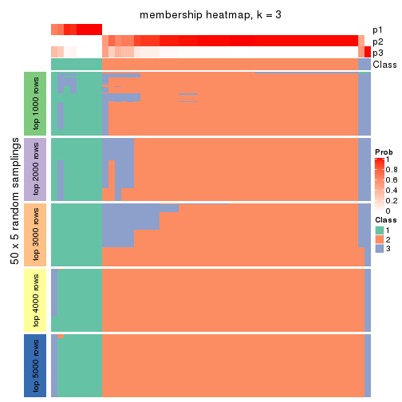
membership_heatmap(res, k = 4)
membership_heatmap(res, k = 5)
membership_heatmap(res, k = 6)
As soon as we have had the classes for columns, we can look for signatures which are significantly different between classes which can be candidate marks for certain classes. Following are the heatmaps for signatures.
Signature heatmaps where rows are scaled:
get_signatures(res, k = 2)
get_signatures(res, k = 3)
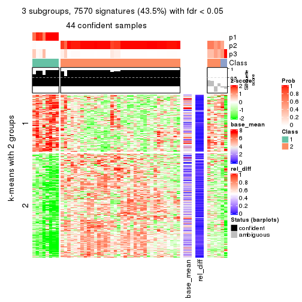
get_signatures(res, k = 4)

get_signatures(res, k = 5)
get_signatures(res, k = 6)
Signature heatmaps where rows are not scaled:
get_signatures(res, k = 2, scale_rows = FALSE)
get_signatures(res, k = 3, scale_rows = FALSE)
get_signatures(res, k = 4, scale_rows = FALSE)
get_signatures(res, k = 5, scale_rows = FALSE)
get_signatures(res, k = 6, scale_rows = FALSE)
Compare the overlap of signatures from different k:
compare_signatures(res)
get_signature() returns a data frame invisibly. TO get the list of signatures, the function
call should be assigned to a variable explicitly. In following code, if plot argument is set
to FALSE, no heatmap is plotted while only the differential analysis is performed.
# code only for demonstration
tb = get_signature(res, k = ..., plot = FALSE)
An example of the output of tb is:
#> which_row fdr mean_1 mean_2 scaled_mean_1 scaled_mean_2 km
#> 1 38 0.042760348 8.373488 9.131774 -0.5533452 0.5164555 1
#> 2 40 0.018707592 7.106213 8.469186 -0.6173731 0.5762149 1
#> 3 55 0.019134737 10.221463 11.207825 -0.6159697 0.5749050 1
#> 4 59 0.006059896 5.921854 7.869574 -0.6899429 0.6439467 1
#> 5 60 0.018055526 8.928898 10.211722 -0.6204761 0.5791110 1
#> 6 98 0.009384629 15.714769 14.887706 0.6635654 -0.6193277 2
...
The columns in tb are:
which_row: row indices corresponding to the input matrix.fdr: FDR for the differential test. mean_x: The mean value in group x.scaled_mean_x: The mean value in group x after rows are scaled.km: Row groups if k-means clustering is applied to rows.UMAP plot which shows how samples are separated.
dimension_reduction(res, k = 2, method = "UMAP")
dimension_reduction(res, k = 3, method = "UMAP")
dimension_reduction(res, k = 4, method = "UMAP")
dimension_reduction(res, k = 5, method = "UMAP")
dimension_reduction(res, k = 6, method = "UMAP")
Following heatmap shows how subgroups are split when increasing k:
collect_classes(res)
If matrix rows can be associated to genes, consider to use functional_enrichment(res,
...) to perform function enrichment for the signature genes. See this vignette for more detailed explanations.
The object with results only for a single top-value method and a single partition method can be extracted as:
res = res_list["ATC", "kmeans"]
# you can also extract it by
# res = res_list["ATC:kmeans"]
A summary of res and all the functions that can be applied to it:
res
#> A 'ConsensusPartition' object with k = 2, 3, 4, 5, 6.
#> On a matrix with 17386 rows and 50 columns.
#> Top rows (1000, 2000, 3000, 4000, 5000) are extracted by 'ATC' method.
#> Subgroups are detected by 'kmeans' method.
#> Performed in total 1250 partitions by row resampling.
#> Best k for subgroups seems to be 2.
#>
#> Following methods can be applied to this 'ConsensusPartition' object:
#> [1] "cola_report" "collect_classes" "collect_plots"
#> [4] "collect_stats" "colnames" "compare_signatures"
#> [7] "consensus_heatmap" "dimension_reduction" "functional_enrichment"
#> [10] "get_anno_col" "get_anno" "get_classes"
#> [13] "get_consensus" "get_matrix" "get_membership"
#> [16] "get_param" "get_signatures" "get_stats"
#> [19] "is_best_k" "is_stable_k" "membership_heatmap"
#> [22] "ncol" "nrow" "plot_ecdf"
#> [25] "rownames" "select_partition_number" "show"
#> [28] "suggest_best_k" "test_to_known_factors"
collect_plots() function collects all the plots made from res for all k (number of partitions)
into one single page to provide an easy and fast comparison between different k.
collect_plots(res)
The plots are:
k and the heatmap of
predicted classes for each k.k.k.k.All the plots in panels can be made by individual functions and they are plotted later in this section.
select_partition_number() produces several plots showing different
statistics for choosing “optimized” k. There are following statistics:
k;k, the area increased is defined as \(A_k - A_{k-1}\).The detailed explanations of these statistics can be found in the cola vignette.
Generally speaking, lower PAC score, higher mean silhouette score or higher
concordance corresponds to better partition. Rand index and Jaccard index
measure how similar the current partition is compared to partition with k-1.
If they are too similar, we won't accept k is better than k-1.
select_partition_number(res)
The numeric values for all these statistics can be obtained by get_stats().
get_stats(res)
#> k 1-PAC mean_silhouette concordance area_increased Rand Jaccard
#> 2 2 1.000 0.949 0.982 0.3482 0.673 0.673
#> 3 3 0.623 0.744 0.894 0.7870 0.634 0.480
#> 4 4 0.727 0.787 0.863 0.1514 0.791 0.505
#> 5 5 0.732 0.388 0.753 0.0795 0.933 0.782
#> 6 6 0.793 0.702 0.826 0.0526 0.906 0.680
suggest_best_k() suggests the best \(k\) based on these statistics. The rules are as follows:
suggest_best_k(res)
#> [1] 2
Following shows the table of the partitions (You need to click the show/hide
code output link to see it). The membership matrix (columns with name p*)
is inferred by
clue::cl_consensus()
function with the SE method. Basically the value in the membership matrix
represents the probability to belong to a certain group. The finall class
label for an item is determined with the group with highest probability it
belongs to.
In get_classes() function, the entropy is calculated from the membership
matrix and the silhouette score is calculated from the consensus matrix.
cbind(get_classes(res, k = 2), get_membership(res, k = 2))
#> class entropy silhouette p1 p2
#> SRR2305538 1 0.000 1.000 1.000 0.000
#> SRR2305506 2 0.000 0.976 0.000 1.000
#> SRR2305537 1 0.000 1.000 1.000 0.000
#> SRR2305476 2 0.000 0.976 0.000 1.000
#> SRR2305508 1 0.000 1.000 1.000 0.000
#> SRR2305521 2 0.000 0.976 0.000 1.000
#> SRR2305486 2 0.000 0.976 0.000 1.000
#> SRR2305503 2 0.000 0.976 0.000 1.000
#> SRR2305519 2 0.000 0.976 0.000 1.000
#> SRR2305515 2 0.000 0.976 0.000 1.000
#> SRR2305528 2 0.000 0.976 0.000 1.000
#> SRR2305518 2 0.000 0.976 0.000 1.000
#> SRR2305527 2 0.000 0.976 0.000 1.000
#> SRR2305498 2 0.000 0.976 0.000 1.000
#> SRR2305488 2 0.993 0.199 0.452 0.548
#> SRR2305512 1 0.000 1.000 1.000 0.000
#> SRR2305474 2 0.000 0.976 0.000 1.000
#> SRR2305495 2 0.000 0.976 0.000 1.000
#> SRR2305536 2 0.000 0.976 0.000 1.000
#> SRR2305525 2 0.000 0.976 0.000 1.000
#> SRR2305494 2 0.000 0.976 0.000 1.000
#> SRR2305532 2 0.000 0.976 0.000 1.000
#> SRR2305500 2 0.000 0.976 0.000 1.000
#> SRR2305509 2 0.000 0.976 0.000 1.000
#> SRR2305501 2 0.000 0.976 0.000 1.000
#> SRR2305524 2 0.000 0.976 0.000 1.000
#> SRR2305491 2 0.000 0.976 0.000 1.000
#> SRR2305489 1 0.000 1.000 1.000 0.000
#> SRR2305516 2 0.000 0.976 0.000 1.000
#> SRR2305507 2 0.000 0.976 0.000 1.000
#> SRR2305497 2 0.000 0.976 0.000 1.000
#> SRR2305482 1 0.000 1.000 1.000 0.000
#> SRR2305485 2 0.000 0.976 0.000 1.000
#> SRR2305472 1 0.000 1.000 1.000 0.000
#> SRR2305513 1 0.000 1.000 1.000 0.000
#> SRR2305540 2 0.000 0.976 0.000 1.000
#> SRR2305522 2 0.000 0.976 0.000 1.000
#> SRR2305520 2 0.000 0.976 0.000 1.000
#> SRR2305533 2 0.000 0.976 0.000 1.000
#> SRR2305534 2 0.000 0.976 0.000 1.000
#> SRR2305517 2 0.000 0.976 0.000 1.000
#> SRR2305504 2 0.993 0.199 0.452 0.548
#> SRR2305511 2 0.000 0.976 0.000 1.000
#> SRR2305492 2 0.000 0.976 0.000 1.000
#> SRR2305514 2 0.000 0.976 0.000 1.000
#> SRR2305531 2 0.000 0.976 0.000 1.000
#> SRR2305535 1 0.000 1.000 1.000 0.000
#> SRR2305477 2 0.141 0.957 0.020 0.980
#> SRR2305480 1 0.000 1.000 1.000 0.000
#> SRR2305529 2 0.000 0.976 0.000 1.000
cbind(get_classes(res, k = 3), get_membership(res, k = 3))
#> class entropy silhouette p1 p2 p3
#> SRR2305538 1 0.0000 0.926 1.000 0.000 0.000
#> SRR2305506 2 0.0000 0.866 0.000 1.000 0.000
#> SRR2305537 3 0.6026 0.192 0.376 0.000 0.624
#> SRR2305476 3 0.0747 0.842 0.000 0.016 0.984
#> SRR2305508 3 0.6244 -0.040 0.440 0.000 0.560
#> SRR2305521 2 0.0000 0.866 0.000 1.000 0.000
#> SRR2305486 3 0.5138 0.681 0.000 0.252 0.748
#> SRR2305503 2 0.0424 0.866 0.000 0.992 0.008
#> SRR2305519 2 0.0000 0.866 0.000 1.000 0.000
#> SRR2305515 2 0.0000 0.866 0.000 1.000 0.000
#> SRR2305528 2 0.0424 0.866 0.000 0.992 0.008
#> SRR2305518 2 0.0424 0.866 0.000 0.992 0.008
#> SRR2305527 2 0.0424 0.866 0.000 0.992 0.008
#> SRR2305498 2 0.0424 0.866 0.000 0.992 0.008
#> SRR2305488 3 0.0848 0.839 0.008 0.008 0.984
#> SRR2305512 1 0.0000 0.926 1.000 0.000 0.000
#> SRR2305474 2 0.6215 0.297 0.000 0.572 0.428
#> SRR2305495 2 0.6267 0.204 0.000 0.548 0.452
#> SRR2305536 3 0.5138 0.681 0.000 0.252 0.748
#> SRR2305525 2 0.0000 0.866 0.000 1.000 0.000
#> SRR2305494 2 0.0424 0.866 0.000 0.992 0.008
#> SRR2305532 2 0.0000 0.866 0.000 1.000 0.000
#> SRR2305500 3 0.4002 0.784 0.000 0.160 0.840
#> SRR2305509 2 0.0000 0.866 0.000 1.000 0.000
#> SRR2305501 3 0.0747 0.842 0.000 0.016 0.984
#> SRR2305524 3 0.3116 0.825 0.000 0.108 0.892
#> SRR2305491 3 0.0424 0.842 0.000 0.008 0.992
#> SRR2305489 1 0.0000 0.926 1.000 0.000 0.000
#> SRR2305516 3 0.2878 0.827 0.000 0.096 0.904
#> SRR2305507 2 0.0000 0.866 0.000 1.000 0.000
#> SRR2305497 2 0.6235 0.255 0.000 0.564 0.436
#> SRR2305482 1 0.0000 0.926 1.000 0.000 0.000
#> SRR2305485 3 0.1753 0.843 0.000 0.048 0.952
#> SRR2305472 1 0.0000 0.926 1.000 0.000 0.000
#> SRR2305513 1 0.0424 0.922 0.992 0.000 0.008
#> SRR2305540 2 0.0424 0.866 0.000 0.992 0.008
#> SRR2305522 2 0.0424 0.866 0.000 0.992 0.008
#> SRR2305520 2 0.3192 0.785 0.000 0.888 0.112
#> SRR2305533 3 0.0424 0.842 0.000 0.008 0.992
#> SRR2305534 3 0.0424 0.842 0.000 0.008 0.992
#> SRR2305517 2 0.6192 0.298 0.000 0.580 0.420
#> SRR2305504 3 0.0848 0.839 0.008 0.008 0.984
#> SRR2305511 3 0.5327 0.651 0.000 0.272 0.728
#> SRR2305492 3 0.1643 0.844 0.000 0.044 0.956
#> SRR2305514 2 0.6154 0.327 0.000 0.592 0.408
#> SRR2305531 3 0.4702 0.727 0.000 0.212 0.788
#> SRR2305535 1 0.0000 0.926 1.000 0.000 0.000
#> SRR2305477 3 0.0747 0.842 0.000 0.016 0.984
#> SRR2305480 1 0.6307 0.122 0.512 0.000 0.488
#> SRR2305529 3 0.3116 0.825 0.000 0.108 0.892
cbind(get_classes(res, k = 4), get_membership(res, k = 4))
#> class entropy silhouette p1 p2 p3 p4
#> SRR2305538 1 0.0000 0.9647 1.000 0.000 0.000 0.000
#> SRR2305506 2 0.0188 0.9697 0.000 0.996 0.004 0.000
#> SRR2305537 4 0.4059 0.8171 0.012 0.000 0.200 0.788
#> SRR2305476 3 0.3400 0.5557 0.000 0.000 0.820 0.180
#> SRR2305508 4 0.1059 0.6969 0.012 0.000 0.016 0.972
#> SRR2305521 2 0.0188 0.9697 0.000 0.996 0.004 0.000
#> SRR2305486 3 0.2319 0.7259 0.000 0.036 0.924 0.040
#> SRR2305503 2 0.0707 0.9707 0.000 0.980 0.000 0.020
#> SRR2305519 2 0.0000 0.9706 0.000 1.000 0.000 0.000
#> SRR2305515 2 0.0895 0.9706 0.000 0.976 0.004 0.020
#> SRR2305528 2 0.0000 0.9706 0.000 1.000 0.000 0.000
#> SRR2305518 2 0.1151 0.9675 0.000 0.968 0.008 0.024
#> SRR2305527 2 0.1151 0.9675 0.000 0.968 0.008 0.024
#> SRR2305498 2 0.0188 0.9704 0.000 0.996 0.004 0.000
#> SRR2305488 4 0.3726 0.8220 0.000 0.000 0.212 0.788
#> SRR2305512 1 0.3486 0.7964 0.812 0.000 0.000 0.188
#> SRR2305474 3 0.4290 0.6628 0.000 0.212 0.772 0.016
#> SRR2305495 3 0.4040 0.6596 0.000 0.248 0.752 0.000
#> SRR2305536 3 0.2036 0.7255 0.000 0.032 0.936 0.032
#> SRR2305525 2 0.0188 0.9697 0.000 0.996 0.004 0.000
#> SRR2305494 2 0.0336 0.9695 0.000 0.992 0.008 0.000
#> SRR2305532 2 0.1004 0.9700 0.000 0.972 0.004 0.024
#> SRR2305500 3 0.1042 0.6993 0.000 0.008 0.972 0.020
#> SRR2305509 2 0.0188 0.9697 0.000 0.996 0.004 0.000
#> SRR2305501 3 0.1792 0.6988 0.000 0.000 0.932 0.068
#> SRR2305524 3 0.3032 0.5992 0.000 0.008 0.868 0.124
#> SRR2305491 4 0.4907 0.6135 0.000 0.000 0.420 0.580
#> SRR2305489 1 0.0000 0.9647 1.000 0.000 0.000 0.000
#> SRR2305516 3 0.2300 0.7121 0.000 0.016 0.920 0.064
#> SRR2305507 2 0.1004 0.9700 0.000 0.972 0.004 0.024
#> SRR2305497 3 0.4193 0.6406 0.000 0.268 0.732 0.000
#> SRR2305482 1 0.0000 0.9647 1.000 0.000 0.000 0.000
#> SRR2305485 3 0.5212 0.0991 0.000 0.008 0.572 0.420
#> SRR2305472 1 0.0000 0.9647 1.000 0.000 0.000 0.000
#> SRR2305513 1 0.1302 0.9434 0.956 0.000 0.000 0.044
#> SRR2305540 2 0.1151 0.9675 0.000 0.968 0.008 0.024
#> SRR2305522 2 0.1151 0.9675 0.000 0.968 0.008 0.024
#> SRR2305520 2 0.4464 0.6844 0.000 0.768 0.208 0.024
#> SRR2305533 4 0.4916 0.6092 0.000 0.000 0.424 0.576
#> SRR2305534 4 0.4977 0.6011 0.000 0.000 0.460 0.540
#> SRR2305517 3 0.4040 0.6596 0.000 0.248 0.752 0.000
#> SRR2305504 4 0.3726 0.8220 0.000 0.000 0.212 0.788
#> SRR2305511 3 0.2313 0.7269 0.000 0.044 0.924 0.032
#> SRR2305492 3 0.5212 0.0991 0.000 0.008 0.572 0.420
#> SRR2305514 3 0.4040 0.6596 0.000 0.248 0.752 0.000
#> SRR2305531 3 0.2443 0.7164 0.000 0.024 0.916 0.060
#> SRR2305535 1 0.0000 0.9647 1.000 0.000 0.000 0.000
#> SRR2305477 4 0.3726 0.8220 0.000 0.000 0.212 0.788
#> SRR2305480 4 0.4004 0.8052 0.024 0.000 0.164 0.812
#> SRR2305529 3 0.4594 0.3177 0.000 0.008 0.712 0.280
cbind(get_classes(res, k = 5), get_membership(res, k = 5))
#> class entropy silhouette p1 p2 p3 p4 p5
#> SRR2305538 1 0.0000 0.8902 1.000 0.000 0.000 0.000 0.000
#> SRR2305506 2 0.2286 0.9010 0.000 0.888 0.108 0.000 0.004
#> SRR2305537 4 0.0771 0.8930 0.000 0.000 0.020 0.976 0.004
#> SRR2305476 5 0.6759 -0.3214 0.000 0.000 0.348 0.268 0.384
#> SRR2305508 4 0.5172 0.5486 0.008 0.000 0.380 0.580 0.032
#> SRR2305521 2 0.2286 0.9010 0.000 0.888 0.108 0.000 0.004
#> SRR2305486 5 0.6051 -0.5272 0.000 0.000 0.404 0.120 0.476
#> SRR2305503 2 0.0000 0.9080 0.000 1.000 0.000 0.000 0.000
#> SRR2305519 2 0.2230 0.8986 0.000 0.884 0.116 0.000 0.000
#> SRR2305515 2 0.0162 0.9084 0.000 0.996 0.000 0.000 0.004
#> SRR2305528 2 0.2127 0.9016 0.000 0.892 0.108 0.000 0.000
#> SRR2305518 2 0.1965 0.8982 0.000 0.904 0.096 0.000 0.000
#> SRR2305527 2 0.0510 0.9060 0.000 0.984 0.016 0.000 0.000
#> SRR2305498 2 0.3003 0.9018 0.000 0.812 0.188 0.000 0.000
#> SRR2305488 4 0.0162 0.8962 0.000 0.000 0.000 0.996 0.004
#> SRR2305512 1 0.5431 0.1491 0.516 0.000 0.060 0.424 0.000
#> SRR2305474 5 0.5036 -0.5043 0.000 0.052 0.320 0.000 0.628
#> SRR2305495 5 0.5841 -0.8597 0.000 0.056 0.460 0.016 0.468
#> SRR2305536 5 0.6012 -0.5239 0.000 0.000 0.400 0.116 0.484
#> SRR2305525 2 0.3231 0.8985 0.000 0.800 0.196 0.000 0.004
#> SRR2305494 2 0.2127 0.9016 0.000 0.892 0.108 0.000 0.000
#> SRR2305532 2 0.2124 0.8984 0.000 0.900 0.096 0.000 0.004
#> SRR2305500 5 0.4051 0.0793 0.000 0.020 0.096 0.068 0.816
#> SRR2305509 2 0.2389 0.8974 0.000 0.880 0.116 0.000 0.004
#> SRR2305501 5 0.6114 -0.5186 0.000 0.000 0.400 0.128 0.472
#> SRR2305524 5 0.3852 0.2262 0.000 0.020 0.000 0.220 0.760
#> SRR2305491 5 0.4249 -0.1246 0.000 0.000 0.000 0.432 0.568
#> SRR2305489 1 0.0290 0.8887 0.992 0.000 0.008 0.000 0.000
#> SRR2305516 5 0.6114 -0.5186 0.000 0.000 0.400 0.128 0.472
#> SRR2305507 2 0.2124 0.8984 0.000 0.900 0.096 0.000 0.004
#> SRR2305497 3 0.5542 0.0000 0.000 0.068 0.500 0.000 0.432
#> SRR2305482 1 0.0162 0.8896 0.996 0.000 0.004 0.000 0.000
#> SRR2305485 5 0.4985 0.1447 0.000 0.004 0.088 0.200 0.708
#> SRR2305472 1 0.0000 0.8902 1.000 0.000 0.000 0.000 0.000
#> SRR2305513 1 0.2852 0.7870 0.828 0.000 0.172 0.000 0.000
#> SRR2305540 2 0.1965 0.8982 0.000 0.904 0.096 0.000 0.000
#> SRR2305522 2 0.1965 0.8982 0.000 0.904 0.096 0.000 0.000
#> SRR2305520 2 0.4020 0.8141 0.000 0.796 0.096 0.000 0.108
#> SRR2305533 5 0.4242 -0.1223 0.000 0.000 0.000 0.428 0.572
#> SRR2305534 5 0.4302 -0.1557 0.000 0.000 0.000 0.480 0.520
#> SRR2305517 5 0.5841 -0.8597 0.000 0.056 0.460 0.016 0.468
#> SRR2305504 4 0.0162 0.8962 0.000 0.000 0.000 0.996 0.004
#> SRR2305511 5 0.6265 -0.5436 0.000 0.008 0.400 0.116 0.476
#> SRR2305492 5 0.4985 0.1447 0.000 0.004 0.088 0.200 0.708
#> SRR2305514 5 0.5841 -0.8597 0.000 0.056 0.460 0.016 0.468
#> SRR2305531 5 0.6114 -0.5186 0.000 0.000 0.400 0.128 0.472
#> SRR2305535 1 0.0000 0.8902 1.000 0.000 0.000 0.000 0.000
#> SRR2305477 4 0.0404 0.8910 0.000 0.000 0.000 0.988 0.012
#> SRR2305480 4 0.2522 0.8651 0.012 0.000 0.056 0.904 0.028
#> SRR2305529 5 0.3741 0.1576 0.000 0.004 0.000 0.264 0.732
cbind(get_classes(res, k = 6), get_membership(res, k = 6))
#> class entropy silhouette p1 p2 p3 p4 p5 p6
#> SRR2305538 1 0.0000 0.935 1.000 0.000 0.000 0.000 0.000 0.000
#> SRR2305506 2 0.3584 0.754 0.000 0.688 0.000 0.308 0.004 0.000
#> SRR2305537 6 0.1391 0.688 0.000 0.000 0.040 0.000 0.016 0.944
#> SRR2305476 5 0.4712 0.598 0.000 0.000 0.096 0.024 0.720 0.160
#> SRR2305508 4 0.5386 0.000 0.000 0.000 0.096 0.468 0.004 0.432
#> SRR2305521 2 0.3584 0.754 0.000 0.688 0.000 0.308 0.004 0.000
#> SRR2305486 5 0.0146 0.865 0.000 0.000 0.000 0.000 0.996 0.004
#> SRR2305503 2 0.2053 0.767 0.000 0.888 0.004 0.108 0.000 0.000
#> SRR2305519 2 0.3789 0.739 0.000 0.660 0.000 0.332 0.008 0.000
#> SRR2305515 2 0.2196 0.767 0.000 0.884 0.004 0.108 0.004 0.000
#> SRR2305528 2 0.3446 0.754 0.000 0.692 0.000 0.308 0.000 0.000
#> SRR2305518 2 0.2389 0.727 0.000 0.864 0.008 0.128 0.000 0.000
#> SRR2305527 2 0.3245 0.740 0.000 0.764 0.008 0.228 0.000 0.000
#> SRR2305498 2 0.2793 0.757 0.000 0.800 0.000 0.200 0.000 0.000
#> SRR2305488 6 0.1779 0.697 0.000 0.000 0.064 0.000 0.016 0.920
#> SRR2305512 6 0.5762 -0.234 0.404 0.000 0.028 0.088 0.000 0.480
#> SRR2305474 5 0.6725 -0.101 0.000 0.084 0.384 0.128 0.404 0.000
#> SRR2305495 5 0.1267 0.854 0.000 0.000 0.000 0.060 0.940 0.000
#> SRR2305536 5 0.0260 0.865 0.000 0.000 0.000 0.000 0.992 0.008
#> SRR2305525 2 0.3245 0.743 0.000 0.764 0.000 0.228 0.008 0.000
#> SRR2305494 2 0.3446 0.754 0.000 0.692 0.000 0.308 0.000 0.000
#> SRR2305532 2 0.2673 0.724 0.000 0.852 0.012 0.132 0.004 0.000
#> SRR2305500 3 0.4830 0.506 0.000 0.024 0.644 0.020 0.300 0.012
#> SRR2305509 2 0.3789 0.739 0.000 0.660 0.000 0.332 0.008 0.000
#> SRR2305501 5 0.0993 0.858 0.000 0.000 0.000 0.024 0.964 0.012
#> SRR2305524 3 0.3286 0.747 0.000 0.016 0.832 0.000 0.116 0.036
#> SRR2305491 3 0.3690 0.623 0.000 0.000 0.700 0.000 0.012 0.288
#> SRR2305489 1 0.0725 0.929 0.976 0.000 0.012 0.012 0.000 0.000
#> SRR2305516 5 0.0891 0.860 0.000 0.000 0.000 0.024 0.968 0.008
#> SRR2305507 2 0.2765 0.725 0.000 0.848 0.016 0.132 0.004 0.000
#> SRR2305497 5 0.3311 0.708 0.000 0.004 0.012 0.204 0.780 0.000
#> SRR2305482 1 0.0725 0.929 0.976 0.000 0.012 0.012 0.000 0.000
#> SRR2305485 3 0.1363 0.752 0.000 0.004 0.952 0.012 0.028 0.004
#> SRR2305472 1 0.0000 0.935 1.000 0.000 0.000 0.000 0.000 0.000
#> SRR2305513 1 0.3858 0.658 0.740 0.000 0.000 0.216 0.000 0.044
#> SRR2305540 2 0.2489 0.726 0.000 0.860 0.012 0.128 0.000 0.000
#> SRR2305522 2 0.2489 0.726 0.000 0.860 0.012 0.128 0.000 0.000
#> SRR2305520 2 0.4257 0.636 0.000 0.760 0.096 0.128 0.016 0.000
#> SRR2305533 3 0.2810 0.742 0.000 0.000 0.832 0.008 0.004 0.156
#> SRR2305534 3 0.4084 0.418 0.000 0.000 0.588 0.000 0.012 0.400
#> SRR2305517 5 0.1267 0.854 0.000 0.000 0.000 0.060 0.940 0.000
#> SRR2305504 6 0.1779 0.697 0.000 0.000 0.064 0.000 0.016 0.920
#> SRR2305511 5 0.0717 0.864 0.000 0.000 0.000 0.016 0.976 0.008
#> SRR2305492 3 0.1534 0.753 0.000 0.004 0.944 0.016 0.032 0.004
#> SRR2305514 5 0.1267 0.854 0.000 0.000 0.000 0.060 0.940 0.000
#> SRR2305531 5 0.0891 0.860 0.000 0.000 0.000 0.024 0.968 0.008
#> SRR2305535 1 0.0000 0.935 1.000 0.000 0.000 0.000 0.000 0.000
#> SRR2305477 6 0.3557 0.596 0.000 0.000 0.092 0.024 0.060 0.824
#> SRR2305480 6 0.3300 0.564 0.000 0.000 0.068 0.076 0.016 0.840
#> SRR2305529 3 0.2941 0.771 0.000 0.004 0.856 0.000 0.064 0.076
Heatmaps for the consensus matrix. It visualizes the probability of two samples to be in a same group.
consensus_heatmap(res, k = 2)
consensus_heatmap(res, k = 3)
consensus_heatmap(res, k = 4)

consensus_heatmap(res, k = 5)
consensus_heatmap(res, k = 6)
Heatmaps for the membership of samples in all partitions to see how consistent they are:
membership_heatmap(res, k = 2)
membership_heatmap(res, k = 3)
membership_heatmap(res, k = 4)
membership_heatmap(res, k = 5)
membership_heatmap(res, k = 6)
As soon as we have had the classes for columns, we can look for signatures which are significantly different between classes which can be candidate marks for certain classes. Following are the heatmaps for signatures.
Signature heatmaps where rows are scaled:
get_signatures(res, k = 2)
get_signatures(res, k = 3)
get_signatures(res, k = 4)
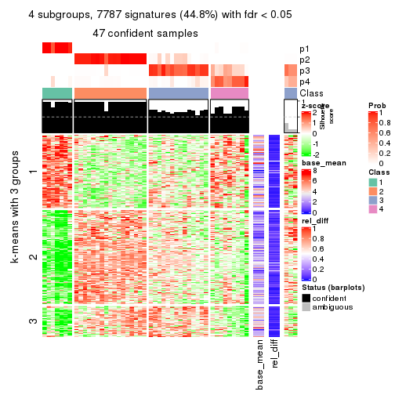
get_signatures(res, k = 5)
get_signatures(res, k = 6)
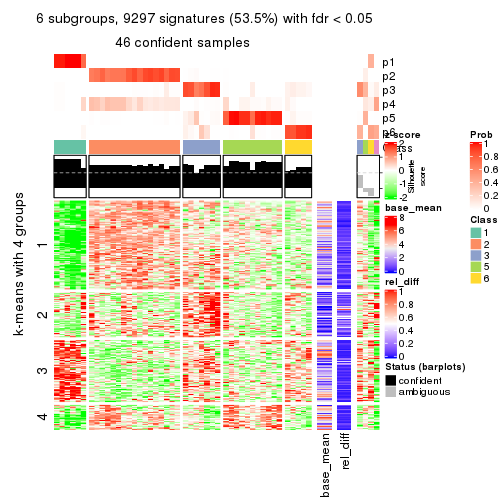
Signature heatmaps where rows are not scaled:
get_signatures(res, k = 2, scale_rows = FALSE)
get_signatures(res, k = 3, scale_rows = FALSE)
get_signatures(res, k = 4, scale_rows = FALSE)
get_signatures(res, k = 5, scale_rows = FALSE)
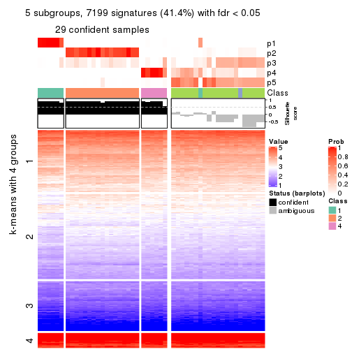
get_signatures(res, k = 6, scale_rows = FALSE)
Compare the overlap of signatures from different k:
compare_signatures(res)
get_signature() returns a data frame invisibly. TO get the list of signatures, the function
call should be assigned to a variable explicitly. In following code, if plot argument is set
to FALSE, no heatmap is plotted while only the differential analysis is performed.
# code only for demonstration
tb = get_signature(res, k = ..., plot = FALSE)
An example of the output of tb is:
#> which_row fdr mean_1 mean_2 scaled_mean_1 scaled_mean_2 km
#> 1 38 0.042760348 8.373488 9.131774 -0.5533452 0.5164555 1
#> 2 40 0.018707592 7.106213 8.469186 -0.6173731 0.5762149 1
#> 3 55 0.019134737 10.221463 11.207825 -0.6159697 0.5749050 1
#> 4 59 0.006059896 5.921854 7.869574 -0.6899429 0.6439467 1
#> 5 60 0.018055526 8.928898 10.211722 -0.6204761 0.5791110 1
#> 6 98 0.009384629 15.714769 14.887706 0.6635654 -0.6193277 2
...
The columns in tb are:
which_row: row indices corresponding to the input matrix.fdr: FDR for the differential test. mean_x: The mean value in group x.scaled_mean_x: The mean value in group x after rows are scaled.km: Row groups if k-means clustering is applied to rows.UMAP plot which shows how samples are separated.
dimension_reduction(res, k = 2, method = "UMAP")
dimension_reduction(res, k = 3, method = "UMAP")
dimension_reduction(res, k = 4, method = "UMAP")
dimension_reduction(res, k = 5, method = "UMAP")
dimension_reduction(res, k = 6, method = "UMAP")
Following heatmap shows how subgroups are split when increasing k:
collect_classes(res)
If matrix rows can be associated to genes, consider to use functional_enrichment(res,
...) to perform function enrichment for the signature genes. See this vignette for more detailed explanations.
The object with results only for a single top-value method and a single partition method can be extracted as:
res = res_list["ATC", "skmeans"]
# you can also extract it by
# res = res_list["ATC:skmeans"]
A summary of res and all the functions that can be applied to it:
res
#> A 'ConsensusPartition' object with k = 2, 3, 4, 5, 6.
#> On a matrix with 17386 rows and 50 columns.
#> Top rows (1000, 2000, 3000, 4000, 5000) are extracted by 'ATC' method.
#> Subgroups are detected by 'skmeans' method.
#> Performed in total 1250 partitions by row resampling.
#> Best k for subgroups seems to be 3.
#>
#> Following methods can be applied to this 'ConsensusPartition' object:
#> [1] "cola_report" "collect_classes" "collect_plots"
#> [4] "collect_stats" "colnames" "compare_signatures"
#> [7] "consensus_heatmap" "dimension_reduction" "functional_enrichment"
#> [10] "get_anno_col" "get_anno" "get_classes"
#> [13] "get_consensus" "get_matrix" "get_membership"
#> [16] "get_param" "get_signatures" "get_stats"
#> [19] "is_best_k" "is_stable_k" "membership_heatmap"
#> [22] "ncol" "nrow" "plot_ecdf"
#> [25] "rownames" "select_partition_number" "show"
#> [28] "suggest_best_k" "test_to_known_factors"
collect_plots() function collects all the plots made from res for all k (number of partitions)
into one single page to provide an easy and fast comparison between different k.
collect_plots(res)
The plots are:
k and the heatmap of
predicted classes for each k.k.k.k.All the plots in panels can be made by individual functions and they are plotted later in this section.
select_partition_number() produces several plots showing different
statistics for choosing “optimized” k. There are following statistics:
k;k, the area increased is defined as \(A_k - A_{k-1}\).The detailed explanations of these statistics can be found in the cola vignette.
Generally speaking, lower PAC score, higher mean silhouette score or higher
concordance corresponds to better partition. Rand index and Jaccard index
measure how similar the current partition is compared to partition with k-1.
If they are too similar, we won't accept k is better than k-1.
select_partition_number(res)
The numeric values for all these statistics can be obtained by get_stats().
get_stats(res)
#> k 1-PAC mean_silhouette concordance area_increased Rand Jaccard
#> 2 2 1.000 0.975 0.990 0.4762 0.519 0.519
#> 3 3 1.000 0.959 0.968 0.3430 0.809 0.641
#> 4 4 0.890 0.889 0.956 0.1081 0.830 0.586
#> 5 5 0.807 0.685 0.868 0.0544 0.967 0.892
#> 6 6 0.772 0.685 0.810 0.0327 0.930 0.760
suggest_best_k() suggests the best \(k\) based on these statistics. The rules are as follows:
suggest_best_k(res)
#> [1] 3
#> attr(,"optional")
#> [1] 2
There is also optional best \(k\) = 2 that is worth to check.
Following shows the table of the partitions (You need to click the show/hide
code output link to see it). The membership matrix (columns with name p*)
is inferred by
clue::cl_consensus()
function with the SE method. Basically the value in the membership matrix
represents the probability to belong to a certain group. The finall class
label for an item is determined with the group with highest probability it
belongs to.
In get_classes() function, the entropy is calculated from the membership
matrix and the silhouette score is calculated from the consensus matrix.
cbind(get_classes(res, k = 2), get_membership(res, k = 2))
#> class entropy silhouette p1 p2
#> SRR2305538 1 0.000 0.973 1.000 0.000
#> SRR2305506 2 0.000 1.000 0.000 1.000
#> SRR2305537 1 0.000 0.973 1.000 0.000
#> SRR2305476 1 0.000 0.973 1.000 0.000
#> SRR2305508 1 0.000 0.973 1.000 0.000
#> SRR2305521 2 0.000 1.000 0.000 1.000
#> SRR2305486 2 0.000 1.000 0.000 1.000
#> SRR2305503 2 0.000 1.000 0.000 1.000
#> SRR2305519 2 0.000 1.000 0.000 1.000
#> SRR2305515 2 0.000 1.000 0.000 1.000
#> SRR2305528 2 0.000 1.000 0.000 1.000
#> SRR2305518 2 0.000 1.000 0.000 1.000
#> SRR2305527 2 0.000 1.000 0.000 1.000
#> SRR2305498 2 0.000 1.000 0.000 1.000
#> SRR2305488 1 0.000 0.973 1.000 0.000
#> SRR2305512 1 0.000 0.973 1.000 0.000
#> SRR2305474 2 0.000 1.000 0.000 1.000
#> SRR2305495 2 0.000 1.000 0.000 1.000
#> SRR2305536 2 0.000 1.000 0.000 1.000
#> SRR2305525 2 0.000 1.000 0.000 1.000
#> SRR2305494 2 0.000 1.000 0.000 1.000
#> SRR2305532 2 0.000 1.000 0.000 1.000
#> SRR2305500 2 0.000 1.000 0.000 1.000
#> SRR2305509 2 0.000 1.000 0.000 1.000
#> SRR2305501 1 0.971 0.337 0.600 0.400
#> SRR2305524 2 0.000 1.000 0.000 1.000
#> SRR2305491 1 0.000 0.973 1.000 0.000
#> SRR2305489 1 0.000 0.973 1.000 0.000
#> SRR2305516 1 0.430 0.888 0.912 0.088
#> SRR2305507 2 0.000 1.000 0.000 1.000
#> SRR2305497 2 0.000 1.000 0.000 1.000
#> SRR2305482 1 0.000 0.973 1.000 0.000
#> SRR2305485 2 0.000 1.000 0.000 1.000
#> SRR2305472 1 0.000 0.973 1.000 0.000
#> SRR2305513 1 0.000 0.973 1.000 0.000
#> SRR2305540 2 0.000 1.000 0.000 1.000
#> SRR2305522 2 0.000 1.000 0.000 1.000
#> SRR2305520 2 0.000 1.000 0.000 1.000
#> SRR2305533 1 0.000 0.973 1.000 0.000
#> SRR2305534 1 0.000 0.973 1.000 0.000
#> SRR2305517 2 0.000 1.000 0.000 1.000
#> SRR2305504 1 0.000 0.973 1.000 0.000
#> SRR2305511 2 0.000 1.000 0.000 1.000
#> SRR2305492 2 0.000 1.000 0.000 1.000
#> SRR2305514 2 0.000 1.000 0.000 1.000
#> SRR2305531 2 0.000 1.000 0.000 1.000
#> SRR2305535 1 0.000 0.973 1.000 0.000
#> SRR2305477 1 0.000 0.973 1.000 0.000
#> SRR2305480 1 0.000 0.973 1.000 0.000
#> SRR2305529 2 0.000 1.000 0.000 1.000
cbind(get_classes(res, k = 3), get_membership(res, k = 3))
#> class entropy silhouette p1 p2 p3
#> SRR2305538 1 0.0000 0.977 1.000 0.000 0.000
#> SRR2305506 2 0.0000 0.987 0.000 1.000 0.000
#> SRR2305537 1 0.0000 0.977 1.000 0.000 0.000
#> SRR2305476 1 0.4399 0.770 0.812 0.000 0.188
#> SRR2305508 1 0.0000 0.977 1.000 0.000 0.000
#> SRR2305521 2 0.0000 0.987 0.000 1.000 0.000
#> SRR2305486 3 0.2261 0.952 0.000 0.068 0.932
#> SRR2305503 2 0.0000 0.987 0.000 1.000 0.000
#> SRR2305519 2 0.0000 0.987 0.000 1.000 0.000
#> SRR2305515 2 0.0000 0.987 0.000 1.000 0.000
#> SRR2305528 2 0.0000 0.987 0.000 1.000 0.000
#> SRR2305518 2 0.0000 0.987 0.000 1.000 0.000
#> SRR2305527 2 0.0000 0.987 0.000 1.000 0.000
#> SRR2305498 2 0.0000 0.987 0.000 1.000 0.000
#> SRR2305488 1 0.0000 0.977 1.000 0.000 0.000
#> SRR2305512 1 0.0000 0.977 1.000 0.000 0.000
#> SRR2305474 2 0.0000 0.987 0.000 1.000 0.000
#> SRR2305495 3 0.2796 0.942 0.000 0.092 0.908
#> SRR2305536 3 0.2261 0.952 0.000 0.068 0.932
#> SRR2305525 2 0.0000 0.987 0.000 1.000 0.000
#> SRR2305494 2 0.0000 0.987 0.000 1.000 0.000
#> SRR2305532 2 0.0000 0.987 0.000 1.000 0.000
#> SRR2305500 2 0.0892 0.974 0.000 0.980 0.020
#> SRR2305509 2 0.0000 0.987 0.000 1.000 0.000
#> SRR2305501 3 0.2636 0.937 0.020 0.048 0.932
#> SRR2305524 2 0.1163 0.968 0.000 0.972 0.028
#> SRR2305491 1 0.1964 0.944 0.944 0.000 0.056
#> SRR2305489 1 0.0000 0.977 1.000 0.000 0.000
#> SRR2305516 3 0.2550 0.893 0.056 0.012 0.932
#> SRR2305507 2 0.0000 0.987 0.000 1.000 0.000
#> SRR2305497 3 0.5591 0.660 0.000 0.304 0.696
#> SRR2305482 1 0.0000 0.977 1.000 0.000 0.000
#> SRR2305485 2 0.2261 0.933 0.000 0.932 0.068
#> SRR2305472 1 0.0000 0.977 1.000 0.000 0.000
#> SRR2305513 1 0.0000 0.977 1.000 0.000 0.000
#> SRR2305540 2 0.0000 0.987 0.000 1.000 0.000
#> SRR2305522 2 0.0000 0.987 0.000 1.000 0.000
#> SRR2305520 2 0.0000 0.987 0.000 1.000 0.000
#> SRR2305533 1 0.2261 0.936 0.932 0.000 0.068
#> SRR2305534 1 0.2261 0.936 0.932 0.000 0.068
#> SRR2305517 3 0.2796 0.942 0.000 0.092 0.908
#> SRR2305504 1 0.0000 0.977 1.000 0.000 0.000
#> SRR2305511 3 0.2356 0.951 0.000 0.072 0.928
#> SRR2305492 2 0.2261 0.933 0.000 0.932 0.068
#> SRR2305514 3 0.2261 0.952 0.000 0.068 0.932
#> SRR2305531 3 0.2261 0.952 0.000 0.068 0.932
#> SRR2305535 1 0.0000 0.977 1.000 0.000 0.000
#> SRR2305477 1 0.0000 0.977 1.000 0.000 0.000
#> SRR2305480 1 0.0000 0.977 1.000 0.000 0.000
#> SRR2305529 2 0.2261 0.933 0.000 0.932 0.068
cbind(get_classes(res, k = 4), get_membership(res, k = 4))
#> class entropy silhouette p1 p2 p3 p4
#> SRR2305538 1 0.0000 0.991 1.000 0.000 0.000 0.000
#> SRR2305506 2 0.0000 0.935 0.000 1.000 0.000 0.000
#> SRR2305537 1 0.0000 0.991 1.000 0.000 0.000 0.000
#> SRR2305476 1 0.2469 0.875 0.892 0.000 0.000 0.108
#> SRR2305508 1 0.0000 0.991 1.000 0.000 0.000 0.000
#> SRR2305521 2 0.0000 0.935 0.000 1.000 0.000 0.000
#> SRR2305486 4 0.0000 0.945 0.000 0.000 0.000 1.000
#> SRR2305503 2 0.0000 0.935 0.000 1.000 0.000 0.000
#> SRR2305519 2 0.0000 0.935 0.000 1.000 0.000 0.000
#> SRR2305515 2 0.0000 0.935 0.000 1.000 0.000 0.000
#> SRR2305528 2 0.0000 0.935 0.000 1.000 0.000 0.000
#> SRR2305518 2 0.0000 0.935 0.000 1.000 0.000 0.000
#> SRR2305527 2 0.0000 0.935 0.000 1.000 0.000 0.000
#> SRR2305498 2 0.0000 0.935 0.000 1.000 0.000 0.000
#> SRR2305488 1 0.0000 0.991 1.000 0.000 0.000 0.000
#> SRR2305512 1 0.0000 0.991 1.000 0.000 0.000 0.000
#> SRR2305474 2 0.0000 0.935 0.000 1.000 0.000 0.000
#> SRR2305495 2 0.4103 0.658 0.000 0.744 0.000 0.256
#> SRR2305536 4 0.0000 0.945 0.000 0.000 0.000 1.000
#> SRR2305525 2 0.0000 0.935 0.000 1.000 0.000 0.000
#> SRR2305494 2 0.0000 0.935 0.000 1.000 0.000 0.000
#> SRR2305532 2 0.0000 0.935 0.000 1.000 0.000 0.000
#> SRR2305500 2 0.4985 0.061 0.000 0.532 0.468 0.000
#> SRR2305509 2 0.0000 0.935 0.000 1.000 0.000 0.000
#> SRR2305501 4 0.0000 0.945 0.000 0.000 0.000 1.000
#> SRR2305524 3 0.3649 0.675 0.000 0.204 0.796 0.000
#> SRR2305491 3 0.4564 0.500 0.328 0.000 0.672 0.000
#> SRR2305489 1 0.0000 0.991 1.000 0.000 0.000 0.000
#> SRR2305516 4 0.0000 0.945 0.000 0.000 0.000 1.000
#> SRR2305507 2 0.0000 0.935 0.000 1.000 0.000 0.000
#> SRR2305497 2 0.4431 0.577 0.000 0.696 0.000 0.304
#> SRR2305482 1 0.0000 0.991 1.000 0.000 0.000 0.000
#> SRR2305485 3 0.0000 0.868 0.000 0.000 1.000 0.000
#> SRR2305472 1 0.0000 0.991 1.000 0.000 0.000 0.000
#> SRR2305513 1 0.0000 0.991 1.000 0.000 0.000 0.000
#> SRR2305540 2 0.0000 0.935 0.000 1.000 0.000 0.000
#> SRR2305522 2 0.0000 0.935 0.000 1.000 0.000 0.000
#> SRR2305520 2 0.0000 0.935 0.000 1.000 0.000 0.000
#> SRR2305533 3 0.0000 0.868 0.000 0.000 1.000 0.000
#> SRR2305534 3 0.0188 0.867 0.004 0.000 0.996 0.000
#> SRR2305517 2 0.3942 0.688 0.000 0.764 0.000 0.236
#> SRR2305504 1 0.0000 0.991 1.000 0.000 0.000 0.000
#> SRR2305511 4 0.3074 0.780 0.000 0.152 0.000 0.848
#> SRR2305492 3 0.0000 0.868 0.000 0.000 1.000 0.000
#> SRR2305514 4 0.1792 0.890 0.000 0.068 0.000 0.932
#> SRR2305531 4 0.0000 0.945 0.000 0.000 0.000 1.000
#> SRR2305535 1 0.0000 0.991 1.000 0.000 0.000 0.000
#> SRR2305477 1 0.0000 0.991 1.000 0.000 0.000 0.000
#> SRR2305480 1 0.0000 0.991 1.000 0.000 0.000 0.000
#> SRR2305529 3 0.1557 0.839 0.000 0.056 0.944 0.000
cbind(get_classes(res, k = 5), get_membership(res, k = 5))
#> class entropy silhouette p1 p2 p3 p4 p5
#> SRR2305538 1 0.0000 0.930 1.000 0.000 0.000 0.000 0.000
#> SRR2305506 2 0.0609 0.774 0.000 0.980 0.000 0.020 0.000
#> SRR2305537 1 0.1197 0.907 0.952 0.000 0.000 0.048 0.000
#> SRR2305476 1 0.4587 0.668 0.728 0.000 0.000 0.068 0.204
#> SRR2305508 1 0.1270 0.900 0.948 0.000 0.000 0.052 0.000
#> SRR2305521 2 0.0703 0.772 0.000 0.976 0.000 0.024 0.000
#> SRR2305486 5 0.2966 0.771 0.000 0.000 0.000 0.184 0.816
#> SRR2305503 2 0.2020 0.789 0.000 0.900 0.000 0.100 0.000
#> SRR2305519 2 0.1121 0.759 0.000 0.956 0.000 0.044 0.000
#> SRR2305515 2 0.2020 0.789 0.000 0.900 0.000 0.100 0.000
#> SRR2305528 2 0.0290 0.778 0.000 0.992 0.000 0.008 0.000
#> SRR2305518 2 0.2074 0.789 0.000 0.896 0.000 0.104 0.000
#> SRR2305527 2 0.2074 0.789 0.000 0.896 0.000 0.104 0.000
#> SRR2305498 2 0.0703 0.775 0.000 0.976 0.000 0.024 0.000
#> SRR2305488 1 0.0510 0.925 0.984 0.000 0.000 0.016 0.000
#> SRR2305512 1 0.0000 0.930 1.000 0.000 0.000 0.000 0.000
#> SRR2305474 2 0.3370 0.580 0.000 0.824 0.028 0.148 0.000
#> SRR2305495 2 0.5992 -0.633 0.000 0.472 0.000 0.416 0.112
#> SRR2305536 5 0.3496 0.765 0.000 0.012 0.000 0.200 0.788
#> SRR2305525 2 0.1608 0.735 0.000 0.928 0.000 0.072 0.000
#> SRR2305494 2 0.0609 0.776 0.000 0.980 0.000 0.020 0.000
#> SRR2305532 2 0.2020 0.789 0.000 0.900 0.000 0.100 0.000
#> SRR2305500 2 0.6349 -0.224 0.000 0.424 0.416 0.160 0.000
#> SRR2305509 2 0.1478 0.743 0.000 0.936 0.000 0.064 0.000
#> SRR2305501 5 0.0404 0.769 0.000 0.000 0.000 0.012 0.988
#> SRR2305524 3 0.4863 0.551 0.000 0.204 0.708 0.088 0.000
#> SRR2305491 1 0.6500 -0.162 0.412 0.000 0.400 0.188 0.000
#> SRR2305489 1 0.0000 0.930 1.000 0.000 0.000 0.000 0.000
#> SRR2305516 5 0.1121 0.764 0.000 0.000 0.000 0.044 0.956
#> SRR2305507 2 0.2020 0.789 0.000 0.900 0.000 0.100 0.000
#> SRR2305497 4 0.5475 0.000 0.000 0.308 0.000 0.604 0.088
#> SRR2305482 1 0.0000 0.930 1.000 0.000 0.000 0.000 0.000
#> SRR2305485 3 0.1732 0.805 0.000 0.000 0.920 0.080 0.000
#> SRR2305472 1 0.0000 0.930 1.000 0.000 0.000 0.000 0.000
#> SRR2305513 1 0.0162 0.929 0.996 0.000 0.000 0.004 0.000
#> SRR2305540 2 0.2074 0.789 0.000 0.896 0.000 0.104 0.000
#> SRR2305522 2 0.2074 0.789 0.000 0.896 0.000 0.104 0.000
#> SRR2305520 2 0.2074 0.789 0.000 0.896 0.000 0.104 0.000
#> SRR2305533 3 0.1671 0.811 0.000 0.000 0.924 0.076 0.000
#> SRR2305534 3 0.3596 0.746 0.012 0.000 0.776 0.212 0.000
#> SRR2305517 2 0.5868 -0.512 0.000 0.516 0.000 0.380 0.104
#> SRR2305504 1 0.0703 0.920 0.976 0.000 0.000 0.024 0.000
#> SRR2305511 5 0.5024 0.627 0.000 0.096 0.000 0.212 0.692
#> SRR2305492 3 0.3274 0.732 0.000 0.000 0.780 0.220 0.000
#> SRR2305514 5 0.5691 0.374 0.000 0.088 0.000 0.376 0.536
#> SRR2305531 5 0.0000 0.773 0.000 0.000 0.000 0.000 1.000
#> SRR2305535 1 0.0000 0.930 1.000 0.000 0.000 0.000 0.000
#> SRR2305477 1 0.0162 0.929 0.996 0.000 0.000 0.004 0.000
#> SRR2305480 1 0.0162 0.929 0.996 0.000 0.000 0.004 0.000
#> SRR2305529 3 0.1740 0.798 0.000 0.056 0.932 0.012 0.000
cbind(get_classes(res, k = 6), get_membership(res, k = 6))
#> class entropy silhouette p1 p2 p3 p4 p5 p6
#> SRR2305538 1 0.0000 0.93598 1.000 0.000 0.000 0.000 0.000 0.000
#> SRR2305506 2 0.2416 0.83723 0.000 0.844 0.000 0.156 0.000 0.000
#> SRR2305537 1 0.1910 0.86642 0.892 0.000 0.000 0.000 0.000 0.108
#> SRR2305476 1 0.6143 0.45580 0.600 0.000 0.000 0.112 0.108 0.180
#> SRR2305508 1 0.3292 0.80283 0.844 0.000 0.056 0.024 0.000 0.076
#> SRR2305521 2 0.2491 0.83419 0.000 0.836 0.000 0.164 0.000 0.000
#> SRR2305486 5 0.1418 0.63359 0.000 0.000 0.000 0.032 0.944 0.024
#> SRR2305503 2 0.0000 0.86037 0.000 1.000 0.000 0.000 0.000 0.000
#> SRR2305519 2 0.3163 0.79488 0.000 0.780 0.000 0.212 0.004 0.004
#> SRR2305515 2 0.0000 0.86037 0.000 1.000 0.000 0.000 0.000 0.000
#> SRR2305528 2 0.2454 0.83720 0.000 0.840 0.000 0.160 0.000 0.000
#> SRR2305518 2 0.0146 0.85892 0.000 0.996 0.000 0.000 0.000 0.004
#> SRR2305527 2 0.0146 0.85892 0.000 0.996 0.000 0.000 0.000 0.004
#> SRR2305498 2 0.2597 0.82962 0.000 0.824 0.000 0.176 0.000 0.000
#> SRR2305488 1 0.0937 0.91933 0.960 0.000 0.000 0.000 0.000 0.040
#> SRR2305512 1 0.0000 0.93598 1.000 0.000 0.000 0.000 0.000 0.000
#> SRR2305474 2 0.5069 0.60367 0.000 0.664 0.152 0.176 0.004 0.004
#> SRR2305495 4 0.5292 0.82768 0.000 0.180 0.000 0.600 0.220 0.000
#> SRR2305536 5 0.1716 0.63102 0.000 0.004 0.000 0.036 0.932 0.028
#> SRR2305525 2 0.3126 0.75590 0.000 0.752 0.000 0.248 0.000 0.000
#> SRR2305494 2 0.2597 0.82962 0.000 0.824 0.000 0.176 0.000 0.000
#> SRR2305532 2 0.0146 0.85892 0.000 0.996 0.000 0.000 0.000 0.004
#> SRR2305500 3 0.6677 -0.01526 0.000 0.384 0.432 0.092 0.008 0.084
#> SRR2305509 2 0.3314 0.73951 0.000 0.740 0.000 0.256 0.004 0.000
#> SRR2305501 5 0.4763 0.62214 0.000 0.000 0.000 0.344 0.592 0.064
#> SRR2305524 6 0.6049 -0.18826 0.000 0.256 0.356 0.000 0.000 0.388
#> SRR2305491 6 0.6529 0.07905 0.228 0.000 0.244 0.044 0.000 0.484
#> SRR2305489 1 0.0000 0.93598 1.000 0.000 0.000 0.000 0.000 0.000
#> SRR2305516 5 0.4886 0.60275 0.000 0.000 0.000 0.396 0.540 0.064
#> SRR2305507 2 0.0000 0.86037 0.000 1.000 0.000 0.000 0.000 0.000
#> SRR2305497 4 0.5675 0.68712 0.000 0.080 0.032 0.596 0.284 0.008
#> SRR2305482 1 0.0000 0.93598 1.000 0.000 0.000 0.000 0.000 0.000
#> SRR2305485 3 0.1387 0.35363 0.000 0.000 0.932 0.000 0.000 0.068
#> SRR2305472 1 0.0000 0.93598 1.000 0.000 0.000 0.000 0.000 0.000
#> SRR2305513 1 0.0458 0.93119 0.984 0.000 0.000 0.000 0.000 0.016
#> SRR2305540 2 0.0858 0.85965 0.000 0.968 0.000 0.028 0.000 0.004
#> SRR2305522 2 0.0291 0.85674 0.000 0.992 0.000 0.004 0.000 0.004
#> SRR2305520 2 0.0000 0.86037 0.000 1.000 0.000 0.000 0.000 0.000
#> SRR2305533 3 0.3782 0.11733 0.000 0.000 0.588 0.000 0.000 0.412
#> SRR2305534 6 0.3534 -0.00694 0.016 0.000 0.244 0.000 0.000 0.740
#> SRR2305517 4 0.5611 0.79363 0.000 0.224 0.000 0.544 0.232 0.000
#> SRR2305504 1 0.1204 0.90684 0.944 0.000 0.000 0.000 0.000 0.056
#> SRR2305511 5 0.3265 0.54923 0.000 0.056 0.000 0.112 0.828 0.004
#> SRR2305492 3 0.2122 0.30218 0.000 0.000 0.900 0.024 0.000 0.076
#> SRR2305514 5 0.4042 0.21495 0.000 0.016 0.000 0.316 0.664 0.004
#> SRR2305531 5 0.4371 0.64983 0.000 0.000 0.000 0.284 0.664 0.052
#> SRR2305535 1 0.0000 0.93598 1.000 0.000 0.000 0.000 0.000 0.000
#> SRR2305477 1 0.0458 0.93119 0.984 0.000 0.000 0.000 0.000 0.016
#> SRR2305480 1 0.0260 0.93394 0.992 0.000 0.000 0.000 0.000 0.008
#> SRR2305529 3 0.4644 0.22570 0.000 0.068 0.660 0.004 0.000 0.268
Heatmaps for the consensus matrix. It visualizes the probability of two samples to be in a same group.
consensus_heatmap(res, k = 2)
consensus_heatmap(res, k = 3)
consensus_heatmap(res, k = 4)
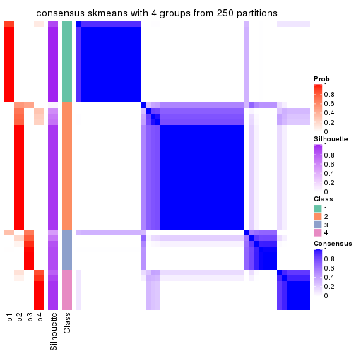
consensus_heatmap(res, k = 5)
consensus_heatmap(res, k = 6)
Heatmaps for the membership of samples in all partitions to see how consistent they are:
membership_heatmap(res, k = 2)
membership_heatmap(res, k = 3)
membership_heatmap(res, k = 4)
membership_heatmap(res, k = 5)
membership_heatmap(res, k = 6)
As soon as we have had the classes for columns, we can look for signatures which are significantly different between classes which can be candidate marks for certain classes. Following are the heatmaps for signatures.
Signature heatmaps where rows are scaled:
get_signatures(res, k = 2)
get_signatures(res, k = 3)
get_signatures(res, k = 4)
get_signatures(res, k = 5)

get_signatures(res, k = 6)
Signature heatmaps where rows are not scaled:
get_signatures(res, k = 2, scale_rows = FALSE)

get_signatures(res, k = 3, scale_rows = FALSE)
get_signatures(res, k = 4, scale_rows = FALSE)
get_signatures(res, k = 5, scale_rows = FALSE)
get_signatures(res, k = 6, scale_rows = FALSE)
Compare the overlap of signatures from different k:
compare_signatures(res)
get_signature() returns a data frame invisibly. TO get the list of signatures, the function
call should be assigned to a variable explicitly. In following code, if plot argument is set
to FALSE, no heatmap is plotted while only the differential analysis is performed.
# code only for demonstration
tb = get_signature(res, k = ..., plot = FALSE)
An example of the output of tb is:
#> which_row fdr mean_1 mean_2 scaled_mean_1 scaled_mean_2 km
#> 1 38 0.042760348 8.373488 9.131774 -0.5533452 0.5164555 1
#> 2 40 0.018707592 7.106213 8.469186 -0.6173731 0.5762149 1
#> 3 55 0.019134737 10.221463 11.207825 -0.6159697 0.5749050 1
#> 4 59 0.006059896 5.921854 7.869574 -0.6899429 0.6439467 1
#> 5 60 0.018055526 8.928898 10.211722 -0.6204761 0.5791110 1
#> 6 98 0.009384629 15.714769 14.887706 0.6635654 -0.6193277 2
...
The columns in tb are:
which_row: row indices corresponding to the input matrix.fdr: FDR for the differential test. mean_x: The mean value in group x.scaled_mean_x: The mean value in group x after rows are scaled.km: Row groups if k-means clustering is applied to rows.UMAP plot which shows how samples are separated.
dimension_reduction(res, k = 2, method = "UMAP")
dimension_reduction(res, k = 3, method = "UMAP")
dimension_reduction(res, k = 4, method = "UMAP")
dimension_reduction(res, k = 5, method = "UMAP")
dimension_reduction(res, k = 6, method = "UMAP")
Following heatmap shows how subgroups are split when increasing k:
collect_classes(res)
If matrix rows can be associated to genes, consider to use functional_enrichment(res,
...) to perform function enrichment for the signature genes. See this vignette for more detailed explanations.
The object with results only for a single top-value method and a single partition method can be extracted as:
res = res_list["ATC", "pam"]
# you can also extract it by
# res = res_list["ATC:pam"]
A summary of res and all the functions that can be applied to it:
res
#> A 'ConsensusPartition' object with k = 2, 3, 4, 5, 6.
#> On a matrix with 17386 rows and 50 columns.
#> Top rows (1000, 2000, 3000, 4000, 5000) are extracted by 'ATC' method.
#> Subgroups are detected by 'pam' method.
#> Performed in total 1250 partitions by row resampling.
#> Best k for subgroups seems to be 3.
#>
#> Following methods can be applied to this 'ConsensusPartition' object:
#> [1] "cola_report" "collect_classes" "collect_plots"
#> [4] "collect_stats" "colnames" "compare_signatures"
#> [7] "consensus_heatmap" "dimension_reduction" "functional_enrichment"
#> [10] "get_anno_col" "get_anno" "get_classes"
#> [13] "get_consensus" "get_matrix" "get_membership"
#> [16] "get_param" "get_signatures" "get_stats"
#> [19] "is_best_k" "is_stable_k" "membership_heatmap"
#> [22] "ncol" "nrow" "plot_ecdf"
#> [25] "rownames" "select_partition_number" "show"
#> [28] "suggest_best_k" "test_to_known_factors"
collect_plots() function collects all the plots made from res for all k (number of partitions)
into one single page to provide an easy and fast comparison between different k.
collect_plots(res)
The plots are:
k and the heatmap of
predicted classes for each k.k.k.k.All the plots in panels can be made by individual functions and they are plotted later in this section.
select_partition_number() produces several plots showing different
statistics for choosing “optimized” k. There are following statistics:
k;k, the area increased is defined as \(A_k - A_{k-1}\).The detailed explanations of these statistics can be found in the cola vignette.
Generally speaking, lower PAC score, higher mean silhouette score or higher
concordance corresponds to better partition. Rand index and Jaccard index
measure how similar the current partition is compared to partition with k-1.
If they are too similar, we won't accept k is better than k-1.
select_partition_number(res)
The numeric values for all these statistics can be obtained by get_stats().
get_stats(res)
#> k 1-PAC mean_silhouette concordance area_increased Rand Jaccard
#> 2 2 1.000 0.976 0.991 0.3129 0.699 0.699
#> 3 3 0.964 0.932 0.976 0.9311 0.616 0.480
#> 4 4 0.704 0.721 0.889 0.1971 0.765 0.485
#> 5 5 0.800 0.767 0.900 0.0686 0.891 0.646
#> 6 6 0.827 0.785 0.897 0.0298 0.965 0.850
suggest_best_k() suggests the best \(k\) based on these statistics. The rules are as follows:
suggest_best_k(res)
#> [1] 3
#> attr(,"optional")
#> [1] 2
There is also optional best \(k\) = 2 that is worth to check.
Following shows the table of the partitions (You need to click the show/hide
code output link to see it). The membership matrix (columns with name p*)
is inferred by
clue::cl_consensus()
function with the SE method. Basically the value in the membership matrix
represents the probability to belong to a certain group. The finall class
label for an item is determined with the group with highest probability it
belongs to.
In get_classes() function, the entropy is calculated from the membership
matrix and the silhouette score is calculated from the consensus matrix.
cbind(get_classes(res, k = 2), get_membership(res, k = 2))
#> class entropy silhouette p1 p2
#> SRR2305538 1 0.000 1.000 1.000 0.000
#> SRR2305506 2 0.000 0.989 0.000 1.000
#> SRR2305537 1 0.000 1.000 1.000 0.000
#> SRR2305476 2 0.000 0.989 0.000 1.000
#> SRR2305508 2 0.988 0.227 0.436 0.564
#> SRR2305521 2 0.000 0.989 0.000 1.000
#> SRR2305486 2 0.000 0.989 0.000 1.000
#> SRR2305503 2 0.000 0.989 0.000 1.000
#> SRR2305519 2 0.000 0.989 0.000 1.000
#> SRR2305515 2 0.000 0.989 0.000 1.000
#> SRR2305528 2 0.000 0.989 0.000 1.000
#> SRR2305518 2 0.000 0.989 0.000 1.000
#> SRR2305527 2 0.000 0.989 0.000 1.000
#> SRR2305498 2 0.000 0.989 0.000 1.000
#> SRR2305488 2 0.000 0.989 0.000 1.000
#> SRR2305512 1 0.000 1.000 1.000 0.000
#> SRR2305474 2 0.000 0.989 0.000 1.000
#> SRR2305495 2 0.000 0.989 0.000 1.000
#> SRR2305536 2 0.000 0.989 0.000 1.000
#> SRR2305525 2 0.000 0.989 0.000 1.000
#> SRR2305494 2 0.000 0.989 0.000 1.000
#> SRR2305532 2 0.000 0.989 0.000 1.000
#> SRR2305500 2 0.000 0.989 0.000 1.000
#> SRR2305509 2 0.000 0.989 0.000 1.000
#> SRR2305501 2 0.000 0.989 0.000 1.000
#> SRR2305524 2 0.000 0.989 0.000 1.000
#> SRR2305491 2 0.000 0.989 0.000 1.000
#> SRR2305489 1 0.000 1.000 1.000 0.000
#> SRR2305516 2 0.000 0.989 0.000 1.000
#> SRR2305507 2 0.000 0.989 0.000 1.000
#> SRR2305497 2 0.000 0.989 0.000 1.000
#> SRR2305482 1 0.000 1.000 1.000 0.000
#> SRR2305485 2 0.000 0.989 0.000 1.000
#> SRR2305472 1 0.000 1.000 1.000 0.000
#> SRR2305513 1 0.000 1.000 1.000 0.000
#> SRR2305540 2 0.000 0.989 0.000 1.000
#> SRR2305522 2 0.000 0.989 0.000 1.000
#> SRR2305520 2 0.000 0.989 0.000 1.000
#> SRR2305533 2 0.000 0.989 0.000 1.000
#> SRR2305534 2 0.000 0.989 0.000 1.000
#> SRR2305517 2 0.000 0.989 0.000 1.000
#> SRR2305504 2 0.000 0.989 0.000 1.000
#> SRR2305511 2 0.000 0.989 0.000 1.000
#> SRR2305492 2 0.000 0.989 0.000 1.000
#> SRR2305514 2 0.000 0.989 0.000 1.000
#> SRR2305531 2 0.000 0.989 0.000 1.000
#> SRR2305535 1 0.000 1.000 1.000 0.000
#> SRR2305477 2 0.000 0.989 0.000 1.000
#> SRR2305480 1 0.000 1.000 1.000 0.000
#> SRR2305529 2 0.000 0.989 0.000 1.000
cbind(get_classes(res, k = 3), get_membership(res, k = 3))
#> class entropy silhouette p1 p2 p3
#> SRR2305538 1 0.000 1.000 1.000 0.000 0.000
#> SRR2305506 2 0.000 0.933 0.000 1.000 0.000
#> SRR2305537 3 0.000 0.980 0.000 0.000 1.000
#> SRR2305476 3 0.000 0.980 0.000 0.000 1.000
#> SRR2305508 3 0.000 0.980 0.000 0.000 1.000
#> SRR2305521 2 0.000 0.933 0.000 1.000 0.000
#> SRR2305486 3 0.000 0.980 0.000 0.000 1.000
#> SRR2305503 2 0.000 0.933 0.000 1.000 0.000
#> SRR2305519 2 0.000 0.933 0.000 1.000 0.000
#> SRR2305515 2 0.000 0.933 0.000 1.000 0.000
#> SRR2305528 2 0.000 0.933 0.000 1.000 0.000
#> SRR2305518 2 0.000 0.933 0.000 1.000 0.000
#> SRR2305527 2 0.000 0.933 0.000 1.000 0.000
#> SRR2305498 2 0.000 0.933 0.000 1.000 0.000
#> SRR2305488 3 0.000 0.980 0.000 0.000 1.000
#> SRR2305512 1 0.000 1.000 1.000 0.000 0.000
#> SRR2305474 3 0.000 0.980 0.000 0.000 1.000
#> SRR2305495 3 0.000 0.980 0.000 0.000 1.000
#> SRR2305536 3 0.000 0.980 0.000 0.000 1.000
#> SRR2305525 2 0.000 0.933 0.000 1.000 0.000
#> SRR2305494 2 0.000 0.933 0.000 1.000 0.000
#> SRR2305532 2 0.613 0.356 0.000 0.600 0.400
#> SRR2305500 3 0.000 0.980 0.000 0.000 1.000
#> SRR2305509 2 0.000 0.933 0.000 1.000 0.000
#> SRR2305501 3 0.000 0.980 0.000 0.000 1.000
#> SRR2305524 3 0.000 0.980 0.000 0.000 1.000
#> SRR2305491 3 0.000 0.980 0.000 0.000 1.000
#> SRR2305489 1 0.000 1.000 1.000 0.000 0.000
#> SRR2305516 3 0.000 0.980 0.000 0.000 1.000
#> SRR2305507 2 0.435 0.729 0.000 0.816 0.184
#> SRR2305497 3 0.614 0.280 0.000 0.404 0.596
#> SRR2305482 1 0.000 1.000 1.000 0.000 0.000
#> SRR2305485 3 0.000 0.980 0.000 0.000 1.000
#> SRR2305472 1 0.000 1.000 1.000 0.000 0.000
#> SRR2305513 1 0.000 1.000 1.000 0.000 0.000
#> SRR2305540 2 0.000 0.933 0.000 1.000 0.000
#> SRR2305522 2 0.000 0.933 0.000 1.000 0.000
#> SRR2305520 2 0.455 0.701 0.000 0.800 0.200
#> SRR2305533 3 0.000 0.980 0.000 0.000 1.000
#> SRR2305534 3 0.000 0.980 0.000 0.000 1.000
#> SRR2305517 3 0.000 0.980 0.000 0.000 1.000
#> SRR2305504 3 0.000 0.980 0.000 0.000 1.000
#> SRR2305511 3 0.000 0.980 0.000 0.000 1.000
#> SRR2305492 3 0.000 0.980 0.000 0.000 1.000
#> SRR2305514 3 0.000 0.980 0.000 0.000 1.000
#> SRR2305531 3 0.000 0.980 0.000 0.000 1.000
#> SRR2305535 1 0.000 1.000 1.000 0.000 0.000
#> SRR2305477 3 0.000 0.980 0.000 0.000 1.000
#> SRR2305480 3 0.129 0.950 0.032 0.000 0.968
#> SRR2305529 3 0.000 0.980 0.000 0.000 1.000
cbind(get_classes(res, k = 4), get_membership(res, k = 4))
#> class entropy silhouette p1 p2 p3 p4
#> SRR2305538 1 0.0000 1.0000 1.000 0.000 0.000 0.000
#> SRR2305506 2 0.0000 0.9983 0.000 1.000 0.000 0.000
#> SRR2305537 4 0.0000 0.7397 0.000 0.000 0.000 1.000
#> SRR2305476 4 0.3356 0.7710 0.000 0.000 0.176 0.824
#> SRR2305508 4 0.0000 0.7397 0.000 0.000 0.000 1.000
#> SRR2305521 2 0.0000 0.9983 0.000 1.000 0.000 0.000
#> SRR2305486 3 0.5000 0.0496 0.000 0.000 0.504 0.496
#> SRR2305503 2 0.0000 0.9983 0.000 1.000 0.000 0.000
#> SRR2305519 2 0.0000 0.9983 0.000 1.000 0.000 0.000
#> SRR2305515 2 0.0000 0.9983 0.000 1.000 0.000 0.000
#> SRR2305528 2 0.0000 0.9983 0.000 1.000 0.000 0.000
#> SRR2305518 2 0.0000 0.9983 0.000 1.000 0.000 0.000
#> SRR2305527 2 0.0000 0.9983 0.000 1.000 0.000 0.000
#> SRR2305498 2 0.0000 0.9983 0.000 1.000 0.000 0.000
#> SRR2305488 4 0.3219 0.7725 0.000 0.000 0.164 0.836
#> SRR2305512 4 0.5000 -0.3116 0.496 0.000 0.000 0.504
#> SRR2305474 3 0.0000 0.7411 0.000 0.000 1.000 0.000
#> SRR2305495 3 0.0000 0.7411 0.000 0.000 1.000 0.000
#> SRR2305536 3 0.4866 0.2837 0.000 0.000 0.596 0.404
#> SRR2305525 2 0.0592 0.9789 0.000 0.984 0.016 0.000
#> SRR2305494 2 0.0000 0.9983 0.000 1.000 0.000 0.000
#> SRR2305532 3 0.3356 0.6103 0.000 0.176 0.824 0.000
#> SRR2305500 3 0.0000 0.7411 0.000 0.000 1.000 0.000
#> SRR2305509 2 0.0000 0.9983 0.000 1.000 0.000 0.000
#> SRR2305501 3 0.5000 0.0496 0.000 0.000 0.504 0.496
#> SRR2305524 3 0.0000 0.7411 0.000 0.000 1.000 0.000
#> SRR2305491 4 0.4804 0.3909 0.000 0.000 0.384 0.616
#> SRR2305489 1 0.0000 1.0000 1.000 0.000 0.000 0.000
#> SRR2305516 3 0.5000 0.0496 0.000 0.000 0.504 0.496
#> SRR2305507 3 0.3356 0.6103 0.000 0.176 0.824 0.000
#> SRR2305497 3 0.0000 0.7411 0.000 0.000 1.000 0.000
#> SRR2305482 1 0.0000 1.0000 1.000 0.000 0.000 0.000
#> SRR2305485 3 0.0000 0.7411 0.000 0.000 1.000 0.000
#> SRR2305472 1 0.0000 1.0000 1.000 0.000 0.000 0.000
#> SRR2305513 1 0.0000 1.0000 1.000 0.000 0.000 0.000
#> SRR2305540 2 0.0000 0.9983 0.000 1.000 0.000 0.000
#> SRR2305522 3 0.3356 0.6103 0.000 0.176 0.824 0.000
#> SRR2305520 3 0.0817 0.7322 0.000 0.024 0.976 0.000
#> SRR2305533 3 0.4804 0.1553 0.000 0.000 0.616 0.384
#> SRR2305534 4 0.3356 0.7710 0.000 0.000 0.176 0.824
#> SRR2305517 3 0.4500 0.4470 0.000 0.000 0.684 0.316
#> SRR2305504 4 0.3356 0.7710 0.000 0.000 0.176 0.824
#> SRR2305511 3 0.3123 0.6407 0.000 0.000 0.844 0.156
#> SRR2305492 3 0.0000 0.7411 0.000 0.000 1.000 0.000
#> SRR2305514 3 0.0000 0.7411 0.000 0.000 1.000 0.000
#> SRR2305531 3 0.5000 0.0496 0.000 0.000 0.504 0.496
#> SRR2305535 1 0.0000 1.0000 1.000 0.000 0.000 0.000
#> SRR2305477 4 0.3356 0.7710 0.000 0.000 0.176 0.824
#> SRR2305480 4 0.0469 0.7344 0.012 0.000 0.000 0.988
#> SRR2305529 3 0.0000 0.7411 0.000 0.000 1.000 0.000
cbind(get_classes(res, k = 5), get_membership(res, k = 5))
#> class entropy silhouette p1 p2 p3 p4 p5
#> SRR2305538 1 0.0000 0.99367 1.000 0.000 0.000 0.000 0.000
#> SRR2305506 2 0.0000 0.98789 0.000 1.000 0.000 0.000 0.000
#> SRR2305537 4 0.4300 0.00643 0.000 0.000 0.000 0.524 0.476
#> SRR2305476 5 0.1121 0.66084 0.000 0.000 0.000 0.044 0.956
#> SRR2305508 4 0.2852 0.23440 0.000 0.000 0.000 0.828 0.172
#> SRR2305521 2 0.0000 0.98789 0.000 1.000 0.000 0.000 0.000
#> SRR2305486 5 0.0880 0.64945 0.000 0.000 0.032 0.000 0.968
#> SRR2305503 2 0.0000 0.98789 0.000 1.000 0.000 0.000 0.000
#> SRR2305519 2 0.0000 0.98789 0.000 1.000 0.000 0.000 0.000
#> SRR2305515 2 0.0000 0.98789 0.000 1.000 0.000 0.000 0.000
#> SRR2305528 2 0.0000 0.98789 0.000 1.000 0.000 0.000 0.000
#> SRR2305518 2 0.0000 0.98789 0.000 1.000 0.000 0.000 0.000
#> SRR2305527 2 0.0000 0.98789 0.000 1.000 0.000 0.000 0.000
#> SRR2305498 2 0.0000 0.98789 0.000 1.000 0.000 0.000 0.000
#> SRR2305488 5 0.3913 0.39670 0.000 0.000 0.000 0.324 0.676
#> SRR2305512 4 0.4552 -0.07202 0.468 0.000 0.000 0.524 0.008
#> SRR2305474 3 0.0000 0.91607 0.000 0.000 1.000 0.000 0.000
#> SRR2305495 3 0.1478 0.88811 0.000 0.000 0.936 0.000 0.064
#> SRR2305536 3 0.3561 0.66573 0.000 0.000 0.740 0.000 0.260
#> SRR2305525 2 0.2020 0.86319 0.000 0.900 0.100 0.000 0.000
#> SRR2305494 2 0.0000 0.98789 0.000 1.000 0.000 0.000 0.000
#> SRR2305532 3 0.2648 0.84416 0.000 0.000 0.848 0.000 0.152
#> SRR2305500 3 0.0000 0.91607 0.000 0.000 1.000 0.000 0.000
#> SRR2305509 2 0.0000 0.98789 0.000 1.000 0.000 0.000 0.000
#> SRR2305501 5 0.1671 0.65550 0.000 0.000 0.076 0.000 0.924
#> SRR2305524 3 0.0000 0.91607 0.000 0.000 1.000 0.000 0.000
#> SRR2305491 5 0.2338 0.63078 0.000 0.000 0.112 0.004 0.884
#> SRR2305489 1 0.0000 0.99367 1.000 0.000 0.000 0.000 0.000
#> SRR2305516 5 0.0290 0.65608 0.000 0.000 0.008 0.000 0.992
#> SRR2305507 3 0.0000 0.91607 0.000 0.000 1.000 0.000 0.000
#> SRR2305497 3 0.0000 0.91607 0.000 0.000 1.000 0.000 0.000
#> SRR2305482 1 0.0000 0.99367 1.000 0.000 0.000 0.000 0.000
#> SRR2305485 3 0.0000 0.91607 0.000 0.000 1.000 0.000 0.000
#> SRR2305472 1 0.0000 0.99367 1.000 0.000 0.000 0.000 0.000
#> SRR2305513 1 0.0880 0.96788 0.968 0.000 0.000 0.032 0.000
#> SRR2305540 2 0.0404 0.97595 0.000 0.988 0.012 0.000 0.000
#> SRR2305522 3 0.0000 0.91607 0.000 0.000 1.000 0.000 0.000
#> SRR2305520 3 0.0703 0.90314 0.000 0.024 0.976 0.000 0.000
#> SRR2305533 5 0.6700 0.07082 0.000 0.000 0.256 0.324 0.420
#> SRR2305534 5 0.3913 0.39670 0.000 0.000 0.000 0.324 0.676
#> SRR2305517 3 0.3003 0.81139 0.000 0.000 0.812 0.000 0.188
#> SRR2305504 5 0.3913 0.39670 0.000 0.000 0.000 0.324 0.676
#> SRR2305511 3 0.3816 0.68943 0.000 0.000 0.696 0.000 0.304
#> SRR2305492 3 0.0000 0.91607 0.000 0.000 1.000 0.000 0.000
#> SRR2305514 3 0.3480 0.75664 0.000 0.000 0.752 0.000 0.248
#> SRR2305531 5 0.2020 0.57285 0.000 0.000 0.100 0.000 0.900
#> SRR2305535 1 0.0000 0.99367 1.000 0.000 0.000 0.000 0.000
#> SRR2305477 5 0.1851 0.64272 0.000 0.000 0.000 0.088 0.912
#> SRR2305480 4 0.4300 0.00643 0.000 0.000 0.000 0.524 0.476
#> SRR2305529 3 0.0000 0.91607 0.000 0.000 1.000 0.000 0.000
cbind(get_classes(res, k = 6), get_membership(res, k = 6))
#> class entropy silhouette p1 p2 p3 p4 p5 p6
#> SRR2305538 1 0.0000 0.891 1.000 0.000 0.000 0.000 0.000 0.000
#> SRR2305506 2 0.0000 0.988 0.000 1.000 0.000 0.000 0.000 0.000
#> SRR2305537 6 0.3265 0.725 0.000 0.000 0.000 0.004 0.248 0.748
#> SRR2305476 5 0.1814 0.759 0.000 0.000 0.000 0.000 0.900 0.100
#> SRR2305508 4 0.1075 0.000 0.000 0.000 0.000 0.952 0.000 0.048
#> SRR2305521 2 0.0000 0.988 0.000 1.000 0.000 0.000 0.000 0.000
#> SRR2305486 5 0.0260 0.800 0.000 0.000 0.008 0.000 0.992 0.000
#> SRR2305503 2 0.0000 0.988 0.000 1.000 0.000 0.000 0.000 0.000
#> SRR2305519 2 0.0000 0.988 0.000 1.000 0.000 0.000 0.000 0.000
#> SRR2305515 2 0.0000 0.988 0.000 1.000 0.000 0.000 0.000 0.000
#> SRR2305528 2 0.0000 0.988 0.000 1.000 0.000 0.000 0.000 0.000
#> SRR2305518 2 0.0000 0.988 0.000 1.000 0.000 0.000 0.000 0.000
#> SRR2305527 2 0.0000 0.988 0.000 1.000 0.000 0.000 0.000 0.000
#> SRR2305498 2 0.0000 0.988 0.000 1.000 0.000 0.000 0.000 0.000
#> SRR2305488 6 0.3244 0.722 0.000 0.000 0.000 0.000 0.268 0.732
#> SRR2305512 6 0.2527 0.436 0.000 0.000 0.000 0.168 0.000 0.832
#> SRR2305474 3 0.0363 0.864 0.000 0.000 0.988 0.000 0.012 0.000
#> SRR2305495 3 0.2378 0.800 0.000 0.000 0.848 0.000 0.152 0.000
#> SRR2305536 3 0.3756 0.364 0.000 0.000 0.600 0.000 0.400 0.000
#> SRR2305525 2 0.1663 0.869 0.000 0.912 0.088 0.000 0.000 0.000
#> SRR2305494 2 0.0000 0.988 0.000 1.000 0.000 0.000 0.000 0.000
#> SRR2305532 3 0.2964 0.771 0.000 0.004 0.792 0.000 0.204 0.000
#> SRR2305500 3 0.0000 0.863 0.000 0.000 1.000 0.000 0.000 0.000
#> SRR2305509 2 0.0000 0.988 0.000 1.000 0.000 0.000 0.000 0.000
#> SRR2305501 5 0.2416 0.720 0.000 0.000 0.156 0.000 0.844 0.000
#> SRR2305524 3 0.0000 0.863 0.000 0.000 1.000 0.000 0.000 0.000
#> SRR2305491 5 0.3694 0.692 0.000 0.000 0.140 0.000 0.784 0.076
#> SRR2305489 1 0.0000 0.891 1.000 0.000 0.000 0.000 0.000 0.000
#> SRR2305516 5 0.0000 0.801 0.000 0.000 0.000 0.000 1.000 0.000
#> SRR2305507 3 0.0458 0.864 0.000 0.000 0.984 0.000 0.016 0.000
#> SRR2305497 3 0.0547 0.863 0.000 0.000 0.980 0.000 0.020 0.000
#> SRR2305482 1 0.3424 0.729 0.812 0.000 0.000 0.096 0.000 0.092
#> SRR2305485 3 0.0146 0.862 0.000 0.000 0.996 0.000 0.000 0.004
#> SRR2305472 1 0.0000 0.891 1.000 0.000 0.000 0.000 0.000 0.000
#> SRR2305513 1 0.4532 0.581 0.696 0.000 0.000 0.196 0.000 0.108
#> SRR2305540 2 0.0363 0.975 0.000 0.988 0.012 0.000 0.000 0.000
#> SRR2305522 3 0.0458 0.860 0.000 0.016 0.984 0.000 0.000 0.000
#> SRR2305520 3 0.0632 0.855 0.000 0.024 0.976 0.000 0.000 0.000
#> SRR2305533 6 0.4456 0.581 0.000 0.000 0.180 0.000 0.112 0.708
#> SRR2305534 6 0.3717 0.709 0.000 0.000 0.016 0.000 0.276 0.708
#> SRR2305517 3 0.3266 0.726 0.000 0.000 0.728 0.000 0.272 0.000
#> SRR2305504 6 0.3244 0.722 0.000 0.000 0.000 0.000 0.268 0.732
#> SRR2305511 3 0.3847 0.414 0.000 0.000 0.544 0.000 0.456 0.000
#> SRR2305492 3 0.0000 0.863 0.000 0.000 1.000 0.000 0.000 0.000
#> SRR2305514 3 0.3390 0.698 0.000 0.000 0.704 0.000 0.296 0.000
#> SRR2305531 5 0.0260 0.801 0.000 0.000 0.008 0.000 0.992 0.000
#> SRR2305535 1 0.0000 0.891 1.000 0.000 0.000 0.000 0.000 0.000
#> SRR2305477 5 0.3607 0.350 0.000 0.000 0.000 0.000 0.652 0.348
#> SRR2305480 6 0.2527 0.436 0.000 0.000 0.000 0.168 0.000 0.832
#> SRR2305529 3 0.0547 0.856 0.000 0.000 0.980 0.000 0.020 0.000
Heatmaps for the consensus matrix. It visualizes the probability of two samples to be in a same group.
consensus_heatmap(res, k = 2)

consensus_heatmap(res, k = 3)
consensus_heatmap(res, k = 4)
consensus_heatmap(res, k = 5)
consensus_heatmap(res, k = 6)
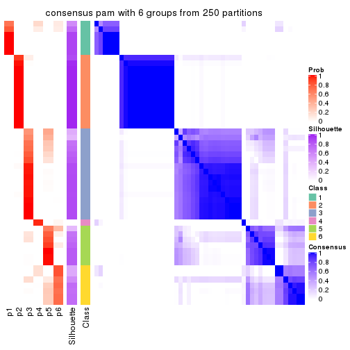
Heatmaps for the membership of samples in all partitions to see how consistent they are:
membership_heatmap(res, k = 2)
membership_heatmap(res, k = 3)
membership_heatmap(res, k = 4)
membership_heatmap(res, k = 5)
membership_heatmap(res, k = 6)
As soon as we have had the classes for columns, we can look for signatures which are significantly different between classes which can be candidate marks for certain classes. Following are the heatmaps for signatures.
Signature heatmaps where rows are scaled:
get_signatures(res, k = 2)
get_signatures(res, k = 3)
get_signatures(res, k = 4)
get_signatures(res, k = 5)
get_signatures(res, k = 6)
Signature heatmaps where rows are not scaled:
get_signatures(res, k = 2, scale_rows = FALSE)
get_signatures(res, k = 3, scale_rows = FALSE)
get_signatures(res, k = 4, scale_rows = FALSE)
get_signatures(res, k = 5, scale_rows = FALSE)
get_signatures(res, k = 6, scale_rows = FALSE)
Compare the overlap of signatures from different k:
compare_signatures(res)
get_signature() returns a data frame invisibly. TO get the list of signatures, the function
call should be assigned to a variable explicitly. In following code, if plot argument is set
to FALSE, no heatmap is plotted while only the differential analysis is performed.
# code only for demonstration
tb = get_signature(res, k = ..., plot = FALSE)
An example of the output of tb is:
#> which_row fdr mean_1 mean_2 scaled_mean_1 scaled_mean_2 km
#> 1 38 0.042760348 8.373488 9.131774 -0.5533452 0.5164555 1
#> 2 40 0.018707592 7.106213 8.469186 -0.6173731 0.5762149 1
#> 3 55 0.019134737 10.221463 11.207825 -0.6159697 0.5749050 1
#> 4 59 0.006059896 5.921854 7.869574 -0.6899429 0.6439467 1
#> 5 60 0.018055526 8.928898 10.211722 -0.6204761 0.5791110 1
#> 6 98 0.009384629 15.714769 14.887706 0.6635654 -0.6193277 2
...
The columns in tb are:
which_row: row indices corresponding to the input matrix.fdr: FDR for the differential test. mean_x: The mean value in group x.scaled_mean_x: The mean value in group x after rows are scaled.km: Row groups if k-means clustering is applied to rows.UMAP plot which shows how samples are separated.
dimension_reduction(res, k = 2, method = "UMAP")
dimension_reduction(res, k = 3, method = "UMAP")
dimension_reduction(res, k = 4, method = "UMAP")
dimension_reduction(res, k = 5, method = "UMAP")
dimension_reduction(res, k = 6, method = "UMAP")
Following heatmap shows how subgroups are split when increasing k:
collect_classes(res)
If matrix rows can be associated to genes, consider to use functional_enrichment(res,
...) to perform function enrichment for the signature genes. See this vignette for more detailed explanations.
The object with results only for a single top-value method and a single partition method can be extracted as:
res = res_list["ATC", "mclust"]
# you can also extract it by
# res = res_list["ATC:mclust"]
A summary of res and all the functions that can be applied to it:
res
#> A 'ConsensusPartition' object with k = 2, 3, 4, 5, 6.
#> On a matrix with 17386 rows and 50 columns.
#> Top rows (1000, 2000, 3000, 4000, 5000) are extracted by 'ATC' method.
#> Subgroups are detected by 'mclust' method.
#> Performed in total 1250 partitions by row resampling.
#> Best k for subgroups seems to be 5.
#>
#> Following methods can be applied to this 'ConsensusPartition' object:
#> [1] "cola_report" "collect_classes" "collect_plots"
#> [4] "collect_stats" "colnames" "compare_signatures"
#> [7] "consensus_heatmap" "dimension_reduction" "functional_enrichment"
#> [10] "get_anno_col" "get_anno" "get_classes"
#> [13] "get_consensus" "get_matrix" "get_membership"
#> [16] "get_param" "get_signatures" "get_stats"
#> [19] "is_best_k" "is_stable_k" "membership_heatmap"
#> [22] "ncol" "nrow" "plot_ecdf"
#> [25] "rownames" "select_partition_number" "show"
#> [28] "suggest_best_k" "test_to_known_factors"
collect_plots() function collects all the plots made from res for all k (number of partitions)
into one single page to provide an easy and fast comparison between different k.
collect_plots(res)

The plots are:
k and the heatmap of
predicted classes for each k.k.k.k.All the plots in panels can be made by individual functions and they are plotted later in this section.
select_partition_number() produces several plots showing different
statistics for choosing “optimized” k. There are following statistics:
k;k, the area increased is defined as \(A_k - A_{k-1}\).The detailed explanations of these statistics can be found in the cola vignette.
Generally speaking, lower PAC score, higher mean silhouette score or higher
concordance corresponds to better partition. Rand index and Jaccard index
measure how similar the current partition is compared to partition with k-1.
If they are too similar, we won't accept k is better than k-1.
select_partition_number(res)
The numeric values for all these statistics can be obtained by get_stats().
get_stats(res)
#> k 1-PAC mean_silhouette concordance area_increased Rand Jaccard
#> 2 2 0.762 0.904 0.956 0.3478 0.673 0.673
#> 3 3 0.415 0.544 0.765 0.4840 0.789 0.697
#> 4 4 0.416 0.497 0.725 0.2401 0.776 0.589
#> 5 5 0.549 0.636 0.782 0.1599 0.716 0.367
#> 6 6 0.633 0.636 0.817 0.0478 0.952 0.819
suggest_best_k() suggests the best \(k\) based on these statistics. The rules are as follows:
suggest_best_k(res)
#> [1] 5
Following shows the table of the partitions (You need to click the show/hide
code output link to see it). The membership matrix (columns with name p*)
is inferred by
clue::cl_consensus()
function with the SE method. Basically the value in the membership matrix
represents the probability to belong to a certain group. The finall class
label for an item is determined with the group with highest probability it
belongs to.
In get_classes() function, the entropy is calculated from the membership
matrix and the silhouette score is calculated from the consensus matrix.
cbind(get_classes(res, k = 2), get_membership(res, k = 2))
#> class entropy silhouette p1 p2
#> SRR2305538 1 0.000 0.931 1.000 0.000
#> SRR2305506 2 0.000 0.955 0.000 1.000
#> SRR2305537 1 0.242 0.913 0.960 0.040
#> SRR2305476 2 0.000 0.955 0.000 1.000
#> SRR2305508 1 0.000 0.931 1.000 0.000
#> SRR2305521 2 0.000 0.955 0.000 1.000
#> SRR2305486 2 0.000 0.955 0.000 1.000
#> SRR2305503 2 0.000 0.955 0.000 1.000
#> SRR2305519 2 0.000 0.955 0.000 1.000
#> SRR2305515 2 0.000 0.955 0.000 1.000
#> SRR2305528 2 0.000 0.955 0.000 1.000
#> SRR2305518 2 0.000 0.955 0.000 1.000
#> SRR2305527 2 0.000 0.955 0.000 1.000
#> SRR2305498 2 0.000 0.955 0.000 1.000
#> SRR2305488 2 0.886 0.569 0.304 0.696
#> SRR2305512 1 0.662 0.827 0.828 0.172
#> SRR2305474 2 0.000 0.955 0.000 1.000
#> SRR2305495 2 0.000 0.955 0.000 1.000
#> SRR2305536 2 0.000 0.955 0.000 1.000
#> SRR2305525 2 0.000 0.955 0.000 1.000
#> SRR2305494 2 0.000 0.955 0.000 1.000
#> SRR2305532 2 0.000 0.955 0.000 1.000
#> SRR2305500 2 0.000 0.955 0.000 1.000
#> SRR2305509 2 0.000 0.955 0.000 1.000
#> SRR2305501 2 0.000 0.955 0.000 1.000
#> SRR2305524 2 0.000 0.955 0.000 1.000
#> SRR2305491 2 0.000 0.955 0.000 1.000
#> SRR2305489 1 0.000 0.931 1.000 0.000
#> SRR2305516 2 0.000 0.955 0.000 1.000
#> SRR2305507 2 0.000 0.955 0.000 1.000
#> SRR2305497 2 0.000 0.955 0.000 1.000
#> SRR2305482 1 0.662 0.827 0.828 0.172
#> SRR2305485 2 0.644 0.788 0.164 0.836
#> SRR2305472 1 0.000 0.931 1.000 0.000
#> SRR2305513 1 0.000 0.931 1.000 0.000
#> SRR2305540 2 0.000 0.955 0.000 1.000
#> SRR2305522 2 0.000 0.955 0.000 1.000
#> SRR2305520 2 0.000 0.955 0.000 1.000
#> SRR2305533 2 0.644 0.788 0.164 0.836
#> SRR2305534 2 0.921 0.530 0.336 0.664
#> SRR2305517 2 0.000 0.955 0.000 1.000
#> SRR2305504 2 0.871 0.592 0.292 0.708
#> SRR2305511 2 0.000 0.955 0.000 1.000
#> SRR2305492 2 0.943 0.479 0.360 0.640
#> SRR2305514 2 0.000 0.955 0.000 1.000
#> SRR2305531 2 0.000 0.955 0.000 1.000
#> SRR2305535 1 0.000 0.931 1.000 0.000
#> SRR2305477 2 0.000 0.955 0.000 1.000
#> SRR2305480 1 0.662 0.827 0.828 0.172
#> SRR2305529 2 0.000 0.955 0.000 1.000
cbind(get_classes(res, k = 3), get_membership(res, k = 3))
#> class entropy silhouette p1 p2 p3
#> SRR2305538 1 0.5988 0.23569 0.632 0.000 0.368
#> SRR2305506 2 0.0237 0.79164 0.000 0.996 0.004
#> SRR2305537 1 0.8683 -0.00298 0.540 0.120 0.340
#> SRR2305476 2 0.5785 0.73778 0.332 0.668 0.000
#> SRR2305508 1 0.6180 -0.02050 0.584 0.000 0.416
#> SRR2305521 2 0.0424 0.79039 0.000 0.992 0.008
#> SRR2305486 2 0.5529 0.76413 0.296 0.704 0.000
#> SRR2305503 2 0.1751 0.79413 0.028 0.960 0.012
#> SRR2305519 2 0.1964 0.76389 0.000 0.944 0.056
#> SRR2305515 2 0.0237 0.79384 0.004 0.996 0.000
#> SRR2305528 2 0.0592 0.78900 0.000 0.988 0.012
#> SRR2305518 2 0.1950 0.79422 0.040 0.952 0.008
#> SRR2305527 2 0.3276 0.78347 0.068 0.908 0.024
#> SRR2305498 2 0.1964 0.76389 0.000 0.944 0.056
#> SRR2305488 1 0.5982 0.01816 0.668 0.328 0.004
#> SRR2305512 1 0.6229 0.28029 0.700 0.020 0.280
#> SRR2305474 2 0.3272 0.80018 0.104 0.892 0.004
#> SRR2305495 2 0.6148 0.76801 0.244 0.728 0.028
#> SRR2305536 2 0.5560 0.76284 0.300 0.700 0.000
#> SRR2305525 2 0.1411 0.77728 0.000 0.964 0.036
#> SRR2305494 2 0.1964 0.76389 0.000 0.944 0.056
#> SRR2305532 2 0.1182 0.79313 0.012 0.976 0.012
#> SRR2305500 2 0.5529 0.76413 0.296 0.704 0.000
#> SRR2305509 2 0.0747 0.78727 0.000 0.984 0.016
#> SRR2305501 2 0.5465 0.76702 0.288 0.712 0.000
#> SRR2305524 2 0.5982 0.74413 0.328 0.668 0.004
#> SRR2305491 2 0.5948 0.71153 0.360 0.640 0.000
#> SRR2305489 3 0.6286 -0.27990 0.464 0.000 0.536
#> SRR2305516 2 0.5560 0.76284 0.300 0.700 0.000
#> SRR2305507 2 0.0424 0.79465 0.008 0.992 0.000
#> SRR2305497 2 0.8460 0.63420 0.264 0.600 0.136
#> SRR2305482 1 0.5529 0.27456 0.704 0.000 0.296
#> SRR2305485 3 0.9787 0.10324 0.296 0.268 0.436
#> SRR2305472 1 0.6204 0.19811 0.576 0.000 0.424
#> SRR2305513 3 0.6168 -0.22939 0.412 0.000 0.588
#> SRR2305540 2 0.1482 0.78629 0.020 0.968 0.012
#> SRR2305522 2 0.2636 0.79135 0.048 0.932 0.020
#> SRR2305520 2 0.4164 0.79306 0.144 0.848 0.008
#> SRR2305533 1 0.8937 -0.18338 0.540 0.152 0.308
#> SRR2305534 3 0.8719 0.15990 0.324 0.128 0.548
#> SRR2305517 2 0.5016 0.77327 0.240 0.760 0.000
#> SRR2305504 1 0.6081 -0.04243 0.652 0.344 0.004
#> SRR2305511 2 0.5465 0.76719 0.288 0.712 0.000
#> SRR2305492 3 0.5896 0.20219 0.292 0.008 0.700
#> SRR2305514 2 0.5058 0.77134 0.244 0.756 0.000
#> SRR2305531 2 0.5591 0.76080 0.304 0.696 0.000
#> SRR2305535 1 0.6244 0.18035 0.560 0.000 0.440
#> SRR2305477 2 0.5785 0.73778 0.332 0.668 0.000
#> SRR2305480 1 0.3325 0.21359 0.904 0.020 0.076
#> SRR2305529 2 0.6057 0.72946 0.340 0.656 0.004
cbind(get_classes(res, k = 4), get_membership(res, k = 4))
#> class entropy silhouette p1 p2 p3 p4
#> SRR2305538 1 0.1118 0.7673 0.964 0.000 0.000 0.036
#> SRR2305506 2 0.0000 0.7338 0.000 1.000 0.000 0.000
#> SRR2305537 3 0.8423 -0.1981 0.264 0.024 0.412 0.300
#> SRR2305476 2 0.5294 0.4236 0.000 0.508 0.484 0.008
#> SRR2305508 4 0.0000 0.5419 0.000 0.000 0.000 1.000
#> SRR2305521 2 0.0000 0.7338 0.000 1.000 0.000 0.000
#> SRR2305486 2 0.4164 0.6946 0.000 0.736 0.264 0.000
#> SRR2305503 2 0.4164 0.5619 0.000 0.736 0.264 0.000
#> SRR2305519 2 0.0000 0.7338 0.000 1.000 0.000 0.000
#> SRR2305515 2 0.1792 0.7333 0.000 0.932 0.068 0.000
#> SRR2305528 2 0.2647 0.6766 0.000 0.880 0.120 0.000
#> SRR2305518 2 0.4996 -0.1426 0.000 0.516 0.484 0.000
#> SRR2305527 3 0.4972 0.2830 0.000 0.456 0.544 0.000
#> SRR2305498 2 0.2704 0.6727 0.000 0.876 0.124 0.000
#> SRR2305488 3 0.7796 -0.0326 0.164 0.024 0.528 0.284
#> SRR2305512 1 0.6998 0.4069 0.636 0.020 0.156 0.188
#> SRR2305474 2 0.3219 0.6768 0.000 0.836 0.164 0.000
#> SRR2305495 2 0.1637 0.7326 0.000 0.940 0.060 0.000
#> SRR2305536 2 0.4103 0.6992 0.000 0.744 0.256 0.000
#> SRR2305525 2 0.0000 0.7338 0.000 1.000 0.000 0.000
#> SRR2305494 2 0.4761 0.1858 0.000 0.664 0.332 0.004
#> SRR2305532 2 0.3024 0.7015 0.000 0.852 0.148 0.000
#> SRR2305500 2 0.4920 0.3390 0.000 0.628 0.368 0.004
#> SRR2305509 2 0.0000 0.7338 0.000 1.000 0.000 0.000
#> SRR2305501 2 0.4304 0.7002 0.000 0.716 0.284 0.000
#> SRR2305524 3 0.6690 0.3876 0.000 0.352 0.548 0.100
#> SRR2305491 3 0.6732 0.3387 0.016 0.144 0.656 0.184
#> SRR2305489 1 0.0895 0.7802 0.976 0.000 0.020 0.004
#> SRR2305516 2 0.4331 0.6807 0.000 0.712 0.288 0.000
#> SRR2305507 2 0.3123 0.6958 0.000 0.844 0.156 0.000
#> SRR2305497 2 0.3494 0.6145 0.000 0.824 0.004 0.172
#> SRR2305482 1 0.1389 0.7675 0.952 0.000 0.048 0.000
#> SRR2305485 4 0.5933 0.5340 0.000 0.036 0.464 0.500
#> SRR2305472 1 0.0188 0.7788 0.996 0.000 0.000 0.004
#> SRR2305513 4 0.4222 0.3305 0.272 0.000 0.000 0.728
#> SRR2305540 3 0.4967 0.2930 0.000 0.452 0.548 0.000
#> SRR2305522 3 0.4981 0.2470 0.000 0.464 0.536 0.000
#> SRR2305520 3 0.4967 0.2930 0.000 0.452 0.548 0.000
#> SRR2305533 4 0.6103 0.5298 0.012 0.024 0.476 0.488
#> SRR2305534 3 0.7805 -0.2018 0.228 0.028 0.552 0.192
#> SRR2305517 2 0.3123 0.7078 0.000 0.844 0.156 0.000
#> SRR2305504 3 0.7849 -0.0236 0.160 0.028 0.528 0.284
#> SRR2305511 2 0.4103 0.6992 0.000 0.744 0.256 0.000
#> SRR2305492 4 0.4748 0.6541 0.000 0.016 0.268 0.716
#> SRR2305514 2 0.3266 0.6944 0.000 0.832 0.168 0.000
#> SRR2305531 2 0.4331 0.6807 0.000 0.712 0.288 0.000
#> SRR2305535 1 0.0188 0.7788 0.996 0.000 0.000 0.004
#> SRR2305477 2 0.8847 0.0285 0.080 0.420 0.340 0.160
#> SRR2305480 1 0.8469 0.0821 0.440 0.032 0.276 0.252
#> SRR2305529 3 0.6123 0.3765 0.016 0.172 0.708 0.104
cbind(get_classes(res, k = 5), get_membership(res, k = 5))
#> class entropy silhouette p1 p2 p3 p4 p5
#> SRR2305538 1 0.0451 0.9431 0.988 0.000 0.004 0.008 0.000
#> SRR2305506 2 0.3055 0.7178 0.000 0.840 0.000 0.016 0.144
#> SRR2305537 3 0.2672 0.5382 0.116 0.000 0.872 0.008 0.004
#> SRR2305476 5 0.5015 0.5086 0.004 0.056 0.272 0.000 0.668
#> SRR2305508 4 0.2230 0.7862 0.000 0.000 0.116 0.884 0.000
#> SRR2305521 2 0.2966 0.7255 0.000 0.848 0.000 0.016 0.136
#> SRR2305486 5 0.0162 0.7848 0.000 0.004 0.000 0.000 0.996
#> SRR2305503 2 0.2492 0.7945 0.000 0.900 0.020 0.008 0.072
#> SRR2305519 2 0.3213 0.7196 0.000 0.836 0.004 0.016 0.144
#> SRR2305515 2 0.1851 0.7905 0.000 0.912 0.000 0.000 0.088
#> SRR2305528 2 0.1757 0.7883 0.000 0.936 0.012 0.004 0.048
#> SRR2305518 2 0.4496 0.7358 0.000 0.796 0.092 0.060 0.052
#> SRR2305527 2 0.5166 0.6725 0.000 0.728 0.172 0.060 0.040
#> SRR2305498 2 0.1960 0.7904 0.000 0.928 0.020 0.004 0.048
#> SRR2305488 3 0.2042 0.5884 0.008 0.036 0.932 0.016 0.008
#> SRR2305512 3 0.6437 -0.0658 0.376 0.000 0.464 0.156 0.004
#> SRR2305474 2 0.3601 0.7735 0.000 0.832 0.020 0.024 0.124
#> SRR2305495 5 0.4151 0.5607 0.000 0.344 0.004 0.000 0.652
#> SRR2305536 5 0.1430 0.8038 0.000 0.052 0.004 0.000 0.944
#> SRR2305525 2 0.3055 0.7178 0.000 0.840 0.000 0.016 0.144
#> SRR2305494 2 0.3002 0.7835 0.000 0.872 0.076 0.004 0.048
#> SRR2305532 2 0.2958 0.7897 0.000 0.880 0.020 0.024 0.076
#> SRR2305500 2 0.6816 -0.1572 0.000 0.436 0.420 0.048 0.096
#> SRR2305509 2 0.3527 0.6552 0.000 0.792 0.000 0.016 0.192
#> SRR2305501 5 0.2540 0.7968 0.000 0.088 0.024 0.000 0.888
#> SRR2305524 3 0.6580 0.3501 0.000 0.316 0.548 0.072 0.064
#> SRR2305491 3 0.3861 0.5627 0.000 0.128 0.804 0.000 0.068
#> SRR2305489 1 0.1544 0.9173 0.932 0.000 0.068 0.000 0.000
#> SRR2305516 5 0.0000 0.7827 0.000 0.000 0.000 0.000 1.000
#> SRR2305507 2 0.2936 0.7923 0.000 0.872 0.008 0.024 0.096
#> SRR2305497 5 0.7353 0.1625 0.000 0.236 0.332 0.032 0.400
#> SRR2305482 1 0.1851 0.8994 0.912 0.000 0.088 0.000 0.000
#> SRR2305485 3 0.5101 0.4054 0.000 0.040 0.652 0.296 0.012
#> SRR2305472 1 0.0000 0.9458 1.000 0.000 0.000 0.000 0.000
#> SRR2305513 4 0.4864 0.7769 0.164 0.000 0.116 0.720 0.000
#> SRR2305540 2 0.5305 0.6744 0.000 0.720 0.172 0.060 0.048
#> SRR2305522 2 0.5126 0.6809 0.000 0.736 0.160 0.060 0.044
#> SRR2305520 2 0.5475 0.6524 0.000 0.704 0.184 0.060 0.052
#> SRR2305533 3 0.3561 0.4237 0.000 0.000 0.740 0.260 0.000
#> SRR2305534 3 0.2886 0.5397 0.116 0.000 0.864 0.016 0.004
#> SRR2305517 5 0.2929 0.7706 0.000 0.180 0.000 0.000 0.820
#> SRR2305504 3 0.2042 0.5884 0.008 0.036 0.932 0.016 0.008
#> SRR2305511 5 0.1478 0.8044 0.000 0.064 0.000 0.000 0.936
#> SRR2305492 3 0.5233 0.1184 0.000 0.028 0.488 0.476 0.008
#> SRR2305514 5 0.2732 0.7703 0.000 0.160 0.000 0.000 0.840
#> SRR2305531 5 0.0000 0.7827 0.000 0.000 0.000 0.000 1.000
#> SRR2305535 1 0.0000 0.9458 1.000 0.000 0.000 0.000 0.000
#> SRR2305477 3 0.5310 0.0329 0.004 0.040 0.508 0.000 0.448
#> SRR2305480 3 0.4153 0.4259 0.236 0.000 0.740 0.016 0.008
#> SRR2305529 3 0.6031 0.4692 0.000 0.236 0.640 0.068 0.056
cbind(get_classes(res, k = 6), get_membership(res, k = 6))
#> class entropy silhouette p1 p2 p3 p4 p5 p6
#> SRR2305538 1 0.0260 0.795 0.992 0.000 0.000 0.000 0.000 0.008
#> SRR2305506 2 0.2776 0.756 0.000 0.860 0.004 0.104 0.032 0.000
#> SRR2305537 6 0.0748 0.683 0.016 0.000 0.004 0.004 0.000 0.976
#> SRR2305476 5 0.4286 0.747 0.000 0.100 0.080 0.004 0.780 0.036
#> SRR2305508 4 0.2431 0.000 0.000 0.000 0.132 0.860 0.000 0.008
#> SRR2305521 2 0.2776 0.756 0.000 0.860 0.004 0.104 0.032 0.000
#> SRR2305486 5 0.0000 0.825 0.000 0.000 0.000 0.000 1.000 0.000
#> SRR2305503 2 0.1500 0.780 0.000 0.936 0.052 0.000 0.012 0.000
#> SRR2305519 2 0.2383 0.763 0.000 0.880 0.000 0.096 0.024 0.000
#> SRR2305515 2 0.2103 0.779 0.000 0.916 0.020 0.024 0.040 0.000
#> SRR2305528 2 0.1387 0.774 0.000 0.932 0.000 0.068 0.000 0.000
#> SRR2305518 2 0.4267 0.721 0.000 0.772 0.140 0.024 0.008 0.056
#> SRR2305527 2 0.4325 0.718 0.000 0.768 0.140 0.024 0.008 0.060
#> SRR2305498 2 0.2019 0.774 0.000 0.900 0.000 0.088 0.000 0.012
#> SRR2305488 6 0.0000 0.686 0.000 0.000 0.000 0.000 0.000 1.000
#> SRR2305512 1 0.4478 0.308 0.532 0.000 0.012 0.012 0.000 0.444
#> SRR2305474 2 0.5216 0.580 0.000 0.700 0.064 0.028 0.180 0.028
#> SRR2305495 5 0.3862 0.770 0.000 0.132 0.000 0.096 0.772 0.000
#> SRR2305536 5 0.0458 0.831 0.000 0.016 0.000 0.000 0.984 0.000
#> SRR2305525 2 0.2462 0.762 0.000 0.876 0.000 0.096 0.028 0.000
#> SRR2305494 2 0.3526 0.746 0.000 0.828 0.028 0.088 0.000 0.056
#> SRR2305532 2 0.3456 0.751 0.000 0.816 0.104 0.004 0.076 0.000
#> SRR2305500 2 0.6581 0.111 0.000 0.440 0.168 0.004 0.348 0.040
#> SRR2305509 2 0.3508 0.722 0.000 0.812 0.004 0.104 0.080 0.000
#> SRR2305501 5 0.3537 0.769 0.000 0.116 0.072 0.004 0.808 0.000
#> SRR2305524 3 0.6782 0.109 0.000 0.348 0.432 0.000 0.116 0.104
#> SRR2305491 6 0.6897 0.121 0.000 0.124 0.284 0.000 0.128 0.464
#> SRR2305489 1 0.0000 0.798 1.000 0.000 0.000 0.000 0.000 0.000
#> SRR2305516 5 0.0146 0.824 0.000 0.000 0.004 0.000 0.996 0.000
#> SRR2305507 2 0.2405 0.767 0.000 0.880 0.100 0.004 0.016 0.000
#> SRR2305497 5 0.5656 0.546 0.000 0.244 0.012 0.100 0.620 0.024
#> SRR2305482 1 0.2871 0.697 0.804 0.000 0.000 0.004 0.000 0.192
#> SRR2305485 3 0.2579 0.413 0.000 0.000 0.872 0.088 0.000 0.040
#> SRR2305472 1 0.0000 0.798 1.000 0.000 0.000 0.000 0.000 0.000
#> SRR2305513 1 0.5051 0.458 0.656 0.000 0.128 0.208 0.000 0.008
#> SRR2305540 2 0.4325 0.718 0.000 0.768 0.140 0.024 0.008 0.060
#> SRR2305522 2 0.4325 0.718 0.000 0.768 0.140 0.024 0.008 0.060
#> SRR2305520 2 0.5211 0.585 0.000 0.656 0.248 0.024 0.012 0.060
#> SRR2305533 3 0.3552 0.397 0.000 0.000 0.800 0.084 0.000 0.116
#> SRR2305534 6 0.3200 0.550 0.016 0.000 0.196 0.000 0.000 0.788
#> SRR2305517 5 0.3456 0.786 0.000 0.172 0.000 0.040 0.788 0.000
#> SRR2305504 6 0.0000 0.686 0.000 0.000 0.000 0.000 0.000 1.000
#> SRR2305511 5 0.1327 0.833 0.000 0.064 0.000 0.000 0.936 0.000
#> SRR2305492 3 0.2658 0.395 0.000 0.000 0.864 0.100 0.000 0.036
#> SRR2305514 5 0.2560 0.785 0.000 0.036 0.000 0.092 0.872 0.000
#> SRR2305531 5 0.0000 0.825 0.000 0.000 0.000 0.000 1.000 0.000
#> SRR2305535 1 0.0000 0.798 1.000 0.000 0.000 0.000 0.000 0.000
#> SRR2305477 6 0.6455 0.376 0.008 0.096 0.080 0.004 0.248 0.564
#> SRR2305480 6 0.3056 0.524 0.184 0.000 0.004 0.008 0.000 0.804
#> SRR2305529 3 0.5996 0.396 0.000 0.176 0.616 0.000 0.096 0.112
Heatmaps for the consensus matrix. It visualizes the probability of two samples to be in a same group.
consensus_heatmap(res, k = 2)
consensus_heatmap(res, k = 3)
consensus_heatmap(res, k = 4)
consensus_heatmap(res, k = 5)
consensus_heatmap(res, k = 6)
Heatmaps for the membership of samples in all partitions to see how consistent they are:
membership_heatmap(res, k = 2)
membership_heatmap(res, k = 3)
membership_heatmap(res, k = 4)
membership_heatmap(res, k = 5)
membership_heatmap(res, k = 6)
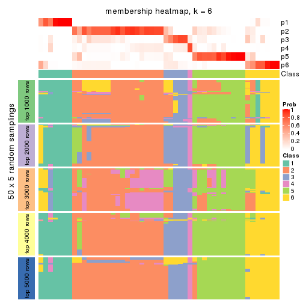
As soon as we have had the classes for columns, we can look for signatures which are significantly different between classes which can be candidate marks for certain classes. Following are the heatmaps for signatures.
Signature heatmaps where rows are scaled:
get_signatures(res, k = 2)
get_signatures(res, k = 3)

get_signatures(res, k = 4)
get_signatures(res, k = 5)
get_signatures(res, k = 6)
Signature heatmaps where rows are not scaled:
get_signatures(res, k = 2, scale_rows = FALSE)
get_signatures(res, k = 3, scale_rows = FALSE)

get_signatures(res, k = 4, scale_rows = FALSE)

get_signatures(res, k = 5, scale_rows = FALSE)
get_signatures(res, k = 6, scale_rows = FALSE)
Compare the overlap of signatures from different k:
compare_signatures(res)
get_signature() returns a data frame invisibly. TO get the list of signatures, the function
call should be assigned to a variable explicitly. In following code, if plot argument is set
to FALSE, no heatmap is plotted while only the differential analysis is performed.
# code only for demonstration
tb = get_signature(res, k = ..., plot = FALSE)
An example of the output of tb is:
#> which_row fdr mean_1 mean_2 scaled_mean_1 scaled_mean_2 km
#> 1 38 0.042760348 8.373488 9.131774 -0.5533452 0.5164555 1
#> 2 40 0.018707592 7.106213 8.469186 -0.6173731 0.5762149 1
#> 3 55 0.019134737 10.221463 11.207825 -0.6159697 0.5749050 1
#> 4 59 0.006059896 5.921854 7.869574 -0.6899429 0.6439467 1
#> 5 60 0.018055526 8.928898 10.211722 -0.6204761 0.5791110 1
#> 6 98 0.009384629 15.714769 14.887706 0.6635654 -0.6193277 2
...
The columns in tb are:
which_row: row indices corresponding to the input matrix.fdr: FDR for the differential test. mean_x: The mean value in group x.scaled_mean_x: The mean value in group x after rows are scaled.km: Row groups if k-means clustering is applied to rows.UMAP plot which shows how samples are separated.
dimension_reduction(res, k = 2, method = "UMAP")
dimension_reduction(res, k = 3, method = "UMAP")
dimension_reduction(res, k = 4, method = "UMAP")
dimension_reduction(res, k = 5, method = "UMAP")
dimension_reduction(res, k = 6, method = "UMAP")
Following heatmap shows how subgroups are split when increasing k:
collect_classes(res)
If matrix rows can be associated to genes, consider to use functional_enrichment(res,
...) to perform function enrichment for the signature genes. See this vignette for more detailed explanations.
The object with results only for a single top-value method and a single partition method can be extracted as:
res = res_list["ATC", "NMF"]
# you can also extract it by
# res = res_list["ATC:NMF"]
A summary of res and all the functions that can be applied to it:
res
#> A 'ConsensusPartition' object with k = 2, 3, 4, 5, 6.
#> On a matrix with 17386 rows and 50 columns.
#> Top rows (1000, 2000, 3000, 4000, 5000) are extracted by 'ATC' method.
#> Subgroups are detected by 'NMF' method.
#> Performed in total 1250 partitions by row resampling.
#> Best k for subgroups seems to be 2.
#>
#> Following methods can be applied to this 'ConsensusPartition' object:
#> [1] "cola_report" "collect_classes" "collect_plots"
#> [4] "collect_stats" "colnames" "compare_signatures"
#> [7] "consensus_heatmap" "dimension_reduction" "functional_enrichment"
#> [10] "get_anno_col" "get_anno" "get_classes"
#> [13] "get_consensus" "get_matrix" "get_membership"
#> [16] "get_param" "get_signatures" "get_stats"
#> [19] "is_best_k" "is_stable_k" "membership_heatmap"
#> [22] "ncol" "nrow" "plot_ecdf"
#> [25] "rownames" "select_partition_number" "show"
#> [28] "suggest_best_k" "test_to_known_factors"
collect_plots() function collects all the plots made from res for all k (number of partitions)
into one single page to provide an easy and fast comparison between different k.
collect_plots(res)
The plots are:
k and the heatmap of
predicted classes for each k.k.k.k.All the plots in panels can be made by individual functions and they are plotted later in this section.
select_partition_number() produces several plots showing different
statistics for choosing “optimized” k. There are following statistics:
k;k, the area increased is defined as \(A_k - A_{k-1}\).The detailed explanations of these statistics can be found in the cola vignette.
Generally speaking, lower PAC score, higher mean silhouette score or higher
concordance corresponds to better partition. Rand index and Jaccard index
measure how similar the current partition is compared to partition with k-1.
If they are too similar, we won't accept k is better than k-1.
select_partition_number(res)
The numeric values for all these statistics can be obtained by get_stats().
get_stats(res)
#> k 1-PAC mean_silhouette concordance area_increased Rand Jaccard
#> 2 2 1.000 0.941 0.979 0.2686 0.726 0.726
#> 3 3 0.828 0.837 0.936 0.4320 0.896 0.858
#> 4 4 0.755 0.810 0.918 0.6945 0.659 0.470
#> 5 5 0.685 0.757 0.872 0.0662 0.950 0.850
#> 6 6 0.535 0.686 0.797 0.0812 0.914 0.725
suggest_best_k() suggests the best \(k\) based on these statistics. The rules are as follows:
suggest_best_k(res)
#> [1] 2
Following shows the table of the partitions (You need to click the show/hide
code output link to see it). The membership matrix (columns with name p*)
is inferred by
clue::cl_consensus()
function with the SE method. Basically the value in the membership matrix
represents the probability to belong to a certain group. The finall class
label for an item is determined with the group with highest probability it
belongs to.
In get_classes() function, the entropy is calculated from the membership
matrix and the silhouette score is calculated from the consensus matrix.
cbind(get_classes(res, k = 2), get_membership(res, k = 2))
#> class entropy silhouette p1 p2
#> SRR2305538 1 0.0000 0.908 1.000 0.000
#> SRR2305506 2 0.0000 0.988 0.000 1.000
#> SRR2305537 2 0.9866 0.106 0.432 0.568
#> SRR2305476 2 0.0000 0.988 0.000 1.000
#> SRR2305508 2 0.0000 0.988 0.000 1.000
#> SRR2305521 2 0.0000 0.988 0.000 1.000
#> SRR2305486 2 0.0000 0.988 0.000 1.000
#> SRR2305503 2 0.0000 0.988 0.000 1.000
#> SRR2305519 2 0.0000 0.988 0.000 1.000
#> SRR2305515 2 0.0000 0.988 0.000 1.000
#> SRR2305528 2 0.0000 0.988 0.000 1.000
#> SRR2305518 2 0.0000 0.988 0.000 1.000
#> SRR2305527 2 0.0000 0.988 0.000 1.000
#> SRR2305498 2 0.0000 0.988 0.000 1.000
#> SRR2305488 2 0.0376 0.984 0.004 0.996
#> SRR2305512 1 0.6712 0.762 0.824 0.176
#> SRR2305474 2 0.0000 0.988 0.000 1.000
#> SRR2305495 2 0.0000 0.988 0.000 1.000
#> SRR2305536 2 0.0000 0.988 0.000 1.000
#> SRR2305525 2 0.0000 0.988 0.000 1.000
#> SRR2305494 2 0.0000 0.988 0.000 1.000
#> SRR2305532 2 0.0000 0.988 0.000 1.000
#> SRR2305500 2 0.0000 0.988 0.000 1.000
#> SRR2305509 2 0.0000 0.988 0.000 1.000
#> SRR2305501 2 0.0000 0.988 0.000 1.000
#> SRR2305524 2 0.0000 0.988 0.000 1.000
#> SRR2305491 2 0.0000 0.988 0.000 1.000
#> SRR2305489 1 0.0000 0.908 1.000 0.000
#> SRR2305516 2 0.0000 0.988 0.000 1.000
#> SRR2305507 2 0.0000 0.988 0.000 1.000
#> SRR2305497 2 0.0000 0.988 0.000 1.000
#> SRR2305482 1 0.0000 0.908 1.000 0.000
#> SRR2305485 2 0.0000 0.988 0.000 1.000
#> SRR2305472 1 0.0000 0.908 1.000 0.000
#> SRR2305513 1 0.0000 0.908 1.000 0.000
#> SRR2305540 2 0.0000 0.988 0.000 1.000
#> SRR2305522 2 0.0000 0.988 0.000 1.000
#> SRR2305520 2 0.0000 0.988 0.000 1.000
#> SRR2305533 2 0.0000 0.988 0.000 1.000
#> SRR2305534 2 0.0000 0.988 0.000 1.000
#> SRR2305517 2 0.0000 0.988 0.000 1.000
#> SRR2305504 2 0.0000 0.988 0.000 1.000
#> SRR2305511 2 0.0000 0.988 0.000 1.000
#> SRR2305492 2 0.0000 0.988 0.000 1.000
#> SRR2305514 2 0.0000 0.988 0.000 1.000
#> SRR2305531 2 0.0000 0.988 0.000 1.000
#> SRR2305535 1 0.0000 0.908 1.000 0.000
#> SRR2305477 2 0.0000 0.988 0.000 1.000
#> SRR2305480 1 0.9922 0.221 0.552 0.448
#> SRR2305529 2 0.0000 0.988 0.000 1.000
cbind(get_classes(res, k = 3), get_membership(res, k = 3))
#> class entropy silhouette p1 p2 p3
#> SRR2305538 1 0.0000 0.786 1.000 0.000 0.000
#> SRR2305506 2 0.0424 0.951 0.000 0.992 0.008
#> SRR2305537 2 0.7299 0.144 0.412 0.556 0.032
#> SRR2305476 2 0.0424 0.949 0.000 0.992 0.008
#> SRR2305508 3 0.0892 0.598 0.000 0.020 0.980
#> SRR2305521 2 0.0592 0.950 0.000 0.988 0.012
#> SRR2305486 2 0.0747 0.949 0.000 0.984 0.016
#> SRR2305503 2 0.0747 0.948 0.000 0.984 0.016
#> SRR2305519 2 0.0892 0.947 0.000 0.980 0.020
#> SRR2305515 2 0.0424 0.949 0.000 0.992 0.008
#> SRR2305528 2 0.0424 0.951 0.000 0.992 0.008
#> SRR2305518 2 0.0747 0.948 0.000 0.984 0.016
#> SRR2305527 2 0.1163 0.943 0.000 0.972 0.028
#> SRR2305498 2 0.0892 0.950 0.000 0.980 0.020
#> SRR2305488 2 0.4411 0.812 0.016 0.844 0.140
#> SRR2305512 1 0.5036 0.597 0.808 0.172 0.020
#> SRR2305474 2 0.0592 0.950 0.000 0.988 0.012
#> SRR2305495 2 0.0892 0.947 0.000 0.980 0.020
#> SRR2305536 2 0.0592 0.950 0.000 0.988 0.012
#> SRR2305525 2 0.0592 0.950 0.000 0.988 0.012
#> SRR2305494 2 0.0892 0.948 0.000 0.980 0.020
#> SRR2305532 2 0.0747 0.947 0.000 0.984 0.016
#> SRR2305500 2 0.0237 0.951 0.000 0.996 0.004
#> SRR2305509 2 0.0892 0.947 0.000 0.980 0.020
#> SRR2305501 2 0.0747 0.949 0.000 0.984 0.016
#> SRR2305524 2 0.1031 0.945 0.000 0.976 0.024
#> SRR2305491 2 0.5560 0.545 0.000 0.700 0.300
#> SRR2305489 1 0.3083 0.749 0.916 0.024 0.060
#> SRR2305516 2 0.0592 0.950 0.000 0.988 0.012
#> SRR2305507 2 0.0237 0.950 0.000 0.996 0.004
#> SRR2305497 2 0.3941 0.798 0.000 0.844 0.156
#> SRR2305482 1 0.0424 0.786 0.992 0.008 0.000
#> SRR2305485 3 0.6225 0.146 0.000 0.432 0.568
#> SRR2305472 1 0.0000 0.786 1.000 0.000 0.000
#> SRR2305513 3 0.5431 0.360 0.284 0.000 0.716
#> SRR2305540 2 0.1163 0.944 0.000 0.972 0.028
#> SRR2305522 2 0.1031 0.945 0.000 0.976 0.024
#> SRR2305520 2 0.1411 0.940 0.000 0.964 0.036
#> SRR2305533 2 0.3192 0.866 0.000 0.888 0.112
#> SRR2305534 2 0.1289 0.941 0.000 0.968 0.032
#> SRR2305517 2 0.0424 0.951 0.000 0.992 0.008
#> SRR2305504 2 0.1031 0.945 0.000 0.976 0.024
#> SRR2305511 2 0.0424 0.951 0.000 0.992 0.008
#> SRR2305492 3 0.0892 0.598 0.000 0.020 0.980
#> SRR2305514 2 0.0892 0.947 0.000 0.980 0.020
#> SRR2305531 2 0.0592 0.950 0.000 0.988 0.012
#> SRR2305535 1 0.0000 0.786 1.000 0.000 0.000
#> SRR2305477 2 0.1031 0.948 0.000 0.976 0.024
#> SRR2305480 1 0.7492 0.251 0.608 0.340 0.052
#> SRR2305529 2 0.1163 0.946 0.000 0.972 0.028
cbind(get_classes(res, k = 4), get_membership(res, k = 4))
#> class entropy silhouette p1 p2 p3 p4
#> SRR2305538 1 0.0000 0.759 1.000 0.000 0.000 0.000
#> SRR2305506 2 0.1637 0.903 0.000 0.940 0.060 0.000
#> SRR2305537 3 0.0469 0.908 0.000 0.012 0.988 0.000
#> SRR2305476 2 0.1302 0.912 0.000 0.956 0.044 0.000
#> SRR2305508 4 0.0188 0.718 0.000 0.004 0.000 0.996
#> SRR2305521 2 0.1557 0.906 0.000 0.944 0.056 0.000
#> SRR2305486 2 0.0000 0.917 0.000 1.000 0.000 0.000
#> SRR2305503 3 0.2530 0.841 0.000 0.112 0.888 0.000
#> SRR2305519 2 0.0921 0.918 0.000 0.972 0.028 0.000
#> SRR2305515 2 0.2868 0.832 0.000 0.864 0.136 0.000
#> SRR2305528 2 0.4898 0.285 0.000 0.584 0.416 0.000
#> SRR2305518 3 0.1118 0.904 0.000 0.036 0.964 0.000
#> SRR2305527 3 0.0469 0.908 0.000 0.012 0.988 0.000
#> SRR2305498 3 0.2973 0.804 0.000 0.144 0.856 0.000
#> SRR2305488 3 0.1585 0.870 0.040 0.004 0.952 0.004
#> SRR2305512 1 0.4331 0.591 0.712 0.288 0.000 0.000
#> SRR2305474 2 0.3311 0.789 0.000 0.828 0.172 0.000
#> SRR2305495 2 0.0469 0.920 0.000 0.988 0.012 0.000
#> SRR2305536 2 0.0000 0.917 0.000 1.000 0.000 0.000
#> SRR2305525 2 0.1940 0.891 0.000 0.924 0.076 0.000
#> SRR2305494 3 0.2011 0.872 0.000 0.080 0.920 0.000
#> SRR2305532 3 0.3400 0.753 0.000 0.180 0.820 0.000
#> SRR2305500 3 0.4972 0.157 0.000 0.456 0.544 0.000
#> SRR2305509 2 0.0336 0.920 0.000 0.992 0.008 0.000
#> SRR2305501 2 0.0817 0.920 0.000 0.976 0.024 0.000
#> SRR2305524 3 0.0707 0.909 0.000 0.020 0.980 0.000
#> SRR2305491 4 0.7573 0.250 0.000 0.208 0.332 0.460
#> SRR2305489 1 0.4124 0.637 0.812 0.012 0.164 0.012
#> SRR2305516 2 0.0000 0.917 0.000 1.000 0.000 0.000
#> SRR2305507 2 0.3569 0.755 0.000 0.804 0.196 0.000
#> SRR2305497 2 0.0188 0.917 0.000 0.996 0.000 0.004
#> SRR2305482 1 0.1867 0.753 0.928 0.072 0.000 0.000
#> SRR2305485 3 0.1305 0.888 0.000 0.004 0.960 0.036
#> SRR2305472 1 0.0000 0.759 1.000 0.000 0.000 0.000
#> SRR2305513 4 0.2011 0.690 0.080 0.000 0.000 0.920
#> SRR2305540 3 0.0469 0.908 0.000 0.012 0.988 0.000
#> SRR2305522 3 0.0707 0.909 0.000 0.020 0.980 0.000
#> SRR2305520 3 0.0469 0.908 0.000 0.012 0.988 0.000
#> SRR2305533 3 0.0469 0.908 0.000 0.012 0.988 0.000
#> SRR2305534 3 0.0469 0.908 0.000 0.012 0.988 0.000
#> SRR2305517 2 0.0592 0.920 0.000 0.984 0.016 0.000
#> SRR2305504 3 0.1022 0.906 0.000 0.032 0.968 0.000
#> SRR2305511 2 0.0336 0.920 0.000 0.992 0.008 0.000
#> SRR2305492 4 0.0817 0.723 0.000 0.000 0.024 0.976
#> SRR2305514 2 0.0000 0.917 0.000 1.000 0.000 0.000
#> SRR2305531 2 0.0000 0.917 0.000 1.000 0.000 0.000
#> SRR2305535 1 0.0000 0.759 1.000 0.000 0.000 0.000
#> SRR2305477 2 0.0000 0.917 0.000 1.000 0.000 0.000
#> SRR2305480 1 0.5855 0.484 0.600 0.356 0.000 0.044
#> SRR2305529 3 0.0817 0.909 0.000 0.024 0.976 0.000
cbind(get_classes(res, k = 5), get_membership(res, k = 5))
#> class entropy silhouette p1 p2 p3 p4 p5
#> SRR2305538 1 0.0000 0.644 1.000 0.000 0.000 0.000 0.000
#> SRR2305506 5 0.2127 0.863 0.000 0.108 0.000 0.000 0.892
#> SRR2305537 2 0.3246 0.688 0.008 0.808 0.184 0.000 0.000
#> SRR2305476 5 0.1357 0.898 0.000 0.048 0.004 0.000 0.948
#> SRR2305508 4 0.0162 0.682 0.000 0.000 0.004 0.996 0.000
#> SRR2305521 5 0.1671 0.886 0.000 0.076 0.000 0.000 0.924
#> SRR2305486 5 0.0000 0.909 0.000 0.000 0.000 0.000 1.000
#> SRR2305503 2 0.2659 0.791 0.000 0.888 0.052 0.000 0.060
#> SRR2305519 5 0.1082 0.908 0.000 0.028 0.008 0.000 0.964
#> SRR2305515 5 0.3388 0.757 0.000 0.200 0.008 0.000 0.792
#> SRR2305528 2 0.5314 0.205 0.000 0.528 0.052 0.000 0.420
#> SRR2305518 2 0.0162 0.829 0.000 0.996 0.000 0.000 0.004
#> SRR2305527 2 0.0794 0.821 0.000 0.972 0.028 0.000 0.000
#> SRR2305498 2 0.3339 0.800 0.000 0.836 0.124 0.000 0.040
#> SRR2305488 3 0.3569 0.565 0.028 0.152 0.816 0.000 0.004
#> SRR2305512 1 0.3586 0.592 0.736 0.000 0.000 0.000 0.264
#> SRR2305474 5 0.5579 0.435 0.000 0.300 0.100 0.000 0.600
#> SRR2305495 5 0.1549 0.896 0.000 0.040 0.016 0.000 0.944
#> SRR2305536 5 0.0162 0.908 0.000 0.000 0.004 0.000 0.996
#> SRR2305525 5 0.2798 0.827 0.000 0.140 0.008 0.000 0.852
#> SRR2305494 2 0.2818 0.807 0.000 0.856 0.132 0.000 0.012
#> SRR2305532 2 0.4238 0.646 0.000 0.756 0.052 0.000 0.192
#> SRR2305500 2 0.5405 0.599 0.000 0.660 0.136 0.000 0.204
#> SRR2305509 5 0.0324 0.909 0.000 0.004 0.004 0.000 0.992
#> SRR2305501 5 0.0671 0.909 0.000 0.016 0.004 0.000 0.980
#> SRR2305524 2 0.1831 0.827 0.000 0.920 0.076 0.000 0.004
#> SRR2305491 4 0.6763 0.557 0.076 0.072 0.140 0.660 0.052
#> SRR2305489 3 0.3452 0.553 0.244 0.000 0.756 0.000 0.000
#> SRR2305516 5 0.0290 0.908 0.000 0.000 0.008 0.000 0.992
#> SRR2305507 5 0.3246 0.770 0.000 0.184 0.008 0.000 0.808
#> SRR2305497 5 0.1117 0.904 0.000 0.016 0.020 0.000 0.964
#> SRR2305482 1 0.2891 0.648 0.824 0.000 0.000 0.000 0.176
#> SRR2305485 2 0.3146 0.804 0.000 0.844 0.128 0.028 0.000
#> SRR2305472 1 0.0000 0.644 1.000 0.000 0.000 0.000 0.000
#> SRR2305513 4 0.0703 0.679 0.024 0.000 0.000 0.976 0.000
#> SRR2305540 2 0.0290 0.829 0.000 0.992 0.008 0.000 0.000
#> SRR2305522 2 0.1341 0.829 0.000 0.944 0.056 0.000 0.000
#> SRR2305520 2 0.1608 0.802 0.000 0.928 0.072 0.000 0.000
#> SRR2305533 2 0.2605 0.805 0.000 0.852 0.148 0.000 0.000
#> SRR2305534 2 0.1410 0.808 0.000 0.940 0.060 0.000 0.000
#> SRR2305517 5 0.0451 0.910 0.000 0.008 0.004 0.000 0.988
#> SRR2305504 2 0.1478 0.806 0.000 0.936 0.064 0.000 0.000
#> SRR2305511 5 0.0162 0.908 0.000 0.000 0.004 0.000 0.996
#> SRR2305492 4 0.5322 0.509 0.000 0.188 0.140 0.672 0.000
#> SRR2305514 5 0.0162 0.909 0.000 0.000 0.004 0.000 0.996
#> SRR2305531 5 0.0162 0.908 0.000 0.000 0.004 0.000 0.996
#> SRR2305535 1 0.0000 0.644 1.000 0.000 0.000 0.000 0.000
#> SRR2305477 5 0.0613 0.908 0.004 0.004 0.008 0.000 0.984
#> SRR2305480 1 0.4757 0.436 0.596 0.000 0.000 0.024 0.380
#> SRR2305529 2 0.3088 0.792 0.000 0.828 0.164 0.004 0.004
cbind(get_classes(res, k = 6), get_membership(res, k = 6))
#> class entropy silhouette p1 p2 p3 p4 p5 p6
#> SRR2305538 1 0.0291 0.7369 0.992 0.000 0.004 0.000 0.000 0.004
#> SRR2305506 5 0.3501 0.7877 0.000 0.080 0.116 0.000 0.804 0.000
#> SRR2305537 2 0.1387 0.6950 0.000 0.932 0.000 0.000 0.000 0.068
#> SRR2305476 5 0.3655 0.7740 0.000 0.112 0.096 0.000 0.792 0.000
#> SRR2305508 4 0.0547 0.9690 0.000 0.000 0.020 0.980 0.000 0.000
#> SRR2305521 5 0.3316 0.7939 0.000 0.052 0.136 0.000 0.812 0.000
#> SRR2305486 5 0.1643 0.8053 0.000 0.000 0.068 0.000 0.924 0.008
#> SRR2305503 2 0.3518 0.6426 0.000 0.804 0.104 0.000 0.092 0.000
#> SRR2305519 5 0.3909 0.7461 0.000 0.036 0.244 0.000 0.720 0.000
#> SRR2305515 5 0.5104 0.4131 0.000 0.372 0.088 0.000 0.540 0.000
#> SRR2305528 3 0.4860 0.6461 0.000 0.176 0.664 0.000 0.160 0.000
#> SRR2305518 2 0.2980 0.7032 0.000 0.808 0.180 0.000 0.012 0.000
#> SRR2305527 2 0.2003 0.7373 0.000 0.884 0.116 0.000 0.000 0.000
#> SRR2305498 3 0.4454 0.6733 0.000 0.252 0.684 0.000 0.060 0.004
#> SRR2305488 6 0.2291 0.8285 0.012 0.044 0.040 0.000 0.000 0.904
#> SRR2305512 1 0.3763 0.6801 0.768 0.000 0.060 0.000 0.172 0.000
#> SRR2305474 3 0.5343 0.5877 0.000 0.120 0.624 0.000 0.240 0.016
#> SRR2305495 5 0.3543 0.7533 0.000 0.016 0.224 0.000 0.756 0.004
#> SRR2305536 5 0.2070 0.8187 0.000 0.012 0.092 0.000 0.896 0.000
#> SRR2305525 5 0.4630 0.4819 0.000 0.048 0.372 0.000 0.580 0.000
#> SRR2305494 3 0.3997 0.6320 0.000 0.288 0.688 0.000 0.020 0.004
#> SRR2305532 2 0.3149 0.6195 0.000 0.836 0.024 0.000 0.124 0.016
#> SRR2305500 3 0.4199 0.7097 0.000 0.196 0.736 0.000 0.060 0.008
#> SRR2305509 5 0.1895 0.8200 0.000 0.016 0.072 0.000 0.912 0.000
#> SRR2305501 5 0.2314 0.7864 0.000 0.036 0.056 0.000 0.900 0.008
#> SRR2305524 2 0.3966 0.1421 0.000 0.552 0.444 0.000 0.000 0.004
#> SRR2305491 3 0.5676 0.6326 0.012 0.068 0.712 0.044 0.056 0.108
#> SRR2305489 6 0.1700 0.8279 0.080 0.004 0.000 0.000 0.000 0.916
#> SRR2305516 5 0.1049 0.7979 0.000 0.000 0.032 0.000 0.960 0.008
#> SRR2305507 5 0.4359 0.5780 0.000 0.296 0.032 0.000 0.664 0.008
#> SRR2305497 5 0.3508 0.6905 0.000 0.000 0.292 0.000 0.704 0.004
#> SRR2305482 1 0.3149 0.7229 0.824 0.000 0.044 0.000 0.132 0.000
#> SRR2305485 2 0.4715 0.5706 0.000 0.676 0.244 0.068 0.000 0.012
#> SRR2305472 1 0.0000 0.7390 1.000 0.000 0.000 0.000 0.000 0.000
#> SRR2305513 4 0.0603 0.9690 0.004 0.000 0.016 0.980 0.000 0.000
#> SRR2305540 2 0.3217 0.6730 0.000 0.768 0.224 0.000 0.008 0.000
#> SRR2305522 2 0.3168 0.6935 0.000 0.804 0.172 0.000 0.000 0.024
#> SRR2305520 2 0.2468 0.7221 0.000 0.880 0.096 0.000 0.016 0.008
#> SRR2305533 2 0.4405 -0.0382 0.000 0.504 0.472 0.000 0.000 0.024
#> SRR2305534 2 0.1462 0.7365 0.000 0.936 0.056 0.000 0.000 0.008
#> SRR2305517 5 0.2680 0.8124 0.000 0.032 0.108 0.000 0.860 0.000
#> SRR2305504 2 0.1173 0.7189 0.000 0.960 0.016 0.000 0.008 0.016
#> SRR2305511 5 0.1453 0.7961 0.000 0.008 0.040 0.000 0.944 0.008
#> SRR2305492 3 0.4686 0.5143 0.000 0.068 0.700 0.212 0.000 0.020
#> SRR2305514 5 0.1643 0.8045 0.000 0.000 0.068 0.000 0.924 0.008
#> SRR2305531 5 0.1785 0.7867 0.000 0.016 0.048 0.000 0.928 0.008
#> SRR2305535 1 0.0000 0.7390 1.000 0.000 0.000 0.000 0.000 0.000
#> SRR2305477 5 0.3484 0.7567 0.016 0.000 0.188 0.000 0.784 0.012
#> SRR2305480 1 0.6798 0.4459 0.512 0.000 0.148 0.084 0.248 0.008
#> SRR2305529 3 0.3915 0.6055 0.000 0.272 0.704 0.000 0.004 0.020
Heatmaps for the consensus matrix. It visualizes the probability of two samples to be in a same group.
consensus_heatmap(res, k = 2)
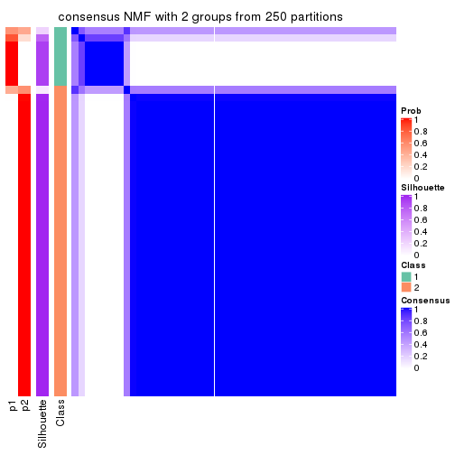
consensus_heatmap(res, k = 3)
consensus_heatmap(res, k = 4)
consensus_heatmap(res, k = 5)
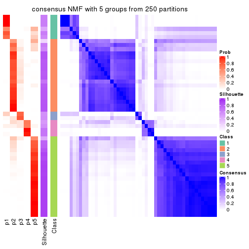
consensus_heatmap(res, k = 6)
Heatmaps for the membership of samples in all partitions to see how consistent they are:
membership_heatmap(res, k = 2)
membership_heatmap(res, k = 3)
membership_heatmap(res, k = 4)
membership_heatmap(res, k = 5)
membership_heatmap(res, k = 6)
As soon as we have had the classes for columns, we can look for signatures which are significantly different between classes which can be candidate marks for certain classes. Following are the heatmaps for signatures.
Signature heatmaps where rows are scaled:
get_signatures(res, k = 2)
get_signatures(res, k = 3)
get_signatures(res, k = 4)
get_signatures(res, k = 5)
get_signatures(res, k = 6)
Signature heatmaps where rows are not scaled:
get_signatures(res, k = 2, scale_rows = FALSE)
get_signatures(res, k = 3, scale_rows = FALSE)
get_signatures(res, k = 4, scale_rows = FALSE)
get_signatures(res, k = 5, scale_rows = FALSE)
get_signatures(res, k = 6, scale_rows = FALSE)
Compare the overlap of signatures from different k:
compare_signatures(res)
get_signature() returns a data frame invisibly. TO get the list of signatures, the function
call should be assigned to a variable explicitly. In following code, if plot argument is set
to FALSE, no heatmap is plotted while only the differential analysis is performed.
# code only for demonstration
tb = get_signature(res, k = ..., plot = FALSE)
An example of the output of tb is:
#> which_row fdr mean_1 mean_2 scaled_mean_1 scaled_mean_2 km
#> 1 38 0.042760348 8.373488 9.131774 -0.5533452 0.5164555 1
#> 2 40 0.018707592 7.106213 8.469186 -0.6173731 0.5762149 1
#> 3 55 0.019134737 10.221463 11.207825 -0.6159697 0.5749050 1
#> 4 59 0.006059896 5.921854 7.869574 -0.6899429 0.6439467 1
#> 5 60 0.018055526 8.928898 10.211722 -0.6204761 0.5791110 1
#> 6 98 0.009384629 15.714769 14.887706 0.6635654 -0.6193277 2
...
The columns in tb are:
which_row: row indices corresponding to the input matrix.fdr: FDR for the differential test. mean_x: The mean value in group x.scaled_mean_x: The mean value in group x after rows are scaled.km: Row groups if k-means clustering is applied to rows.UMAP plot which shows how samples are separated.
dimension_reduction(res, k = 2, method = "UMAP")
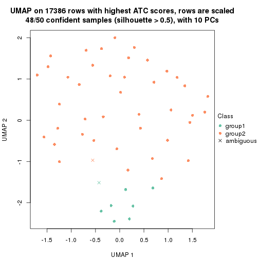
dimension_reduction(res, k = 3, method = "UMAP")
dimension_reduction(res, k = 4, method = "UMAP")

dimension_reduction(res, k = 5, method = "UMAP")
dimension_reduction(res, k = 6, method = "UMAP")
Following heatmap shows how subgroups are split when increasing k:
collect_classes(res)
If matrix rows can be associated to genes, consider to use functional_enrichment(res,
...) to perform function enrichment for the signature genes. See this vignette for more detailed explanations.
sessionInfo()
#> R version 3.6.0 (2019-04-26)
#> Platform: x86_64-pc-linux-gnu (64-bit)
#> Running under: CentOS Linux 7 (Core)
#>
#> Matrix products: default
#> BLAS: /usr/lib64/libblas.so.3.4.2
#> LAPACK: /usr/lib64/liblapack.so.3.4.2
#>
#> locale:
#> [1] LC_CTYPE=en_GB.UTF-8 LC_NUMERIC=C LC_TIME=en_GB.UTF-8
#> [4] LC_COLLATE=en_GB.UTF-8 LC_MONETARY=en_GB.UTF-8 LC_MESSAGES=en_GB.UTF-8
#> [7] LC_PAPER=en_GB.UTF-8 LC_NAME=C LC_ADDRESS=C
#> [10] LC_TELEPHONE=C LC_MEASUREMENT=en_GB.UTF-8 LC_IDENTIFICATION=C
#>
#> attached base packages:
#> [1] grid stats graphics grDevices utils datasets methods base
#>
#> other attached packages:
#> [1] genefilter_1.66.0 ComplexHeatmap_2.3.1 markdown_1.1 knitr_1.26
#> [5] GetoptLong_0.1.7 cola_1.3.2
#>
#> loaded via a namespace (and not attached):
#> [1] circlize_0.4.8 shape_1.4.4 xfun_0.11 slam_0.1-46
#> [5] lattice_0.20-38 splines_3.6.0 colorspace_1.4-1 vctrs_0.2.0
#> [9] stats4_3.6.0 blob_1.2.0 XML_3.98-1.20 survival_2.44-1.1
#> [13] rlang_0.4.2 pillar_1.4.2 DBI_1.0.0 BiocGenerics_0.30.0
#> [17] bit64_0.9-7 RColorBrewer_1.1-2 matrixStats_0.55.0 stringr_1.4.0
#> [21] GlobalOptions_0.1.1 evaluate_0.14 memoise_1.1.0 Biobase_2.44.0
#> [25] IRanges_2.18.3 parallel_3.6.0 AnnotationDbi_1.46.1 highr_0.8
#> [29] Rcpp_1.0.3 xtable_1.8-4 backports_1.1.5 S4Vectors_0.22.1
#> [33] annotate_1.62.0 skmeans_0.2-11 bit_1.1-14 microbenchmark_1.4-7
#> [37] brew_1.0-6 impute_1.58.0 rjson_0.2.20 png_0.1-7
#> [41] digest_0.6.23 stringi_1.4.3 polyclip_1.10-0 clue_0.3-57
#> [45] tools_3.6.0 bitops_1.0-6 magrittr_1.5 eulerr_6.0.0
#> [49] RCurl_1.95-4.12 RSQLite_2.1.4 tibble_2.1.3 cluster_2.1.0
#> [53] crayon_1.3.4 pkgconfig_2.0.3 zeallot_0.1.0 Matrix_1.2-17
#> [57] xml2_1.2.2 httr_1.4.1 R6_2.4.1 mclust_5.4.5
#> [61] compiler_3.6.0